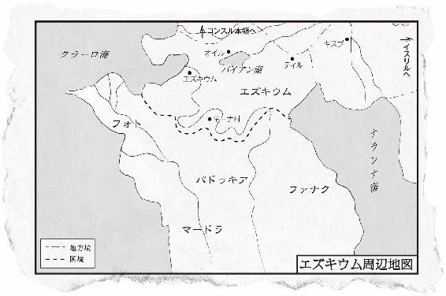

| 夜の写本師 | |
| 乾石 智子 | |
| (2014) | |
この本は縦書きでレイアウトされています。
また、ご覧になる環境により、表示の差が認められることがあります。
本作品を電子書籍版に収録するにあたり、一部の漢字が簡略体で表記されている場合があります。
夜の写本師
乾石智子
右手に月石、左手に黒曜石、口のなかに真珠。三つの品をもって生まれてきたカリュドウ。女を殺しては魔法の力を奪う呪われた大魔道師アンジストに、目の前で育ての親を惨殺されたことで、彼の人生は一変する。月の乙女、闇の魔女、海の女魔道師、アンジストに殺された三人の魔女の運命が、数千年の時をへてカリュドウの運命とまじわる。宿敵を滅ぼすべく、カリュドウは魔法ならざる魔法を操る〈夜の写本師〉としての修業をつむが......。日本ファンタジーの歴史を塗り替え、読書界にセンセーションを巻き起こした著者のデビュー作。
登場人物
カリュドウ
夜の写本師
エイリャ
カリュドウの育ての親の女魔道師
フィン
カリュドウの幼なじみの少女
アンジスト
エズキウムの魔道師長
セントン
同、副魔道師長。四大魔道師
ケルシュ
同、四大魔道師
カッシ
同、四大魔道師
グルース
同、四大魔道師
ガエルク
パドゥキアの魔道師
セフィヤ
ガエルクの弟子
ラーム
ガエルクの弟子
ティモナ
ガエルクの弟子
イスルイール
パドゥキアの写本工房を仕切る親方
ハールイ
エズキウムの写本工房の元締
ガース
エズキウムの写本師の親方
ワイバン
ガース親方の弟子
ジグエス
ガース親方の弟子
ヴェルネ
ガース親方の弟子
ルッセオ
雑用係の少年
ルッカード
パドゥキアの少女。ガエルクの弟子
シルヴァイン
オイル領主の娘
ブリュエ
シルヴァインの兄
キアルス
シルヴァインとブリュエの友人。祐筆
アムサイスト
コンスル帝国から来た魔道師
イルーシア
マードラ国一の魔道師
エムジスト
エズキウムの魔道師長

東京創元社
乾石智子
SCRIBE OF SORCERY
by
Tomoko Inuishi
2011
夜の写本師
第一部
１
右手に月石。
左手に黒曜石。
口のなかに真珠。
カリュドウは三つの品をもって生まれてきた。
産婆もつとめる女魔道師のエイリャは、驚き青くなった両親をなだめて口止めをした。そうしてそれら三つの品を深紅の木の小箱におさめ、赤子といっしょに御天守山の魔道師の館に持ち帰った。
キーナ村は都エズキウムの近郊の豊かな土地である。都から走る一本の道の、北側と南側に広がっている。北側にはカラン麦の畑が湖のむこうまでつづく。南側には、起きあがろうとしている一頭の馬の背のようにいくつかの丘陵がつらなり、やがては隣国パドゥキアとの境をなしている〈夕陽連山〉に変わっていく。御天守山は、丘陵の頂上にあり、その昔、パドゥキアの軍勢をくいとめるために建てられた館跡で、初夏には白い梨の花が青空にゆれ、秋には色づいた雑木林や青ブナの森の甘い香りに満たされ、冬になると深く雪が積もり、青藍石の影と水晶の光が交錯する。
カリュドウは山羊の乳と犬のぬくもりと女魔道師の言葉で育った。年中風邪をひいただの、熱を出しただのとさんざん手をかけさせたが、九歳をすぎるころからめっきり丈夫になり、十二歳になるころには村の子どもたちとも遜色なく山野を駆けまわり、浅黒い肌と、麦酒色の髪と目の、細身だがばねのある少年に成長した。
村の誰が本当の親であるのか知らなかった。エイリャを「大おば様」と呼んだが、血のつながりがないことは知っていた。人の常としては、両親を求め、おのれの血のつながりを求めるものだ。しかし一切そうしたことを気にしなかった。三つの品をもって生まれたことを小さいときから聞いていたので、（もし前世というものが本当にあるのなら）それは前世と今をつなぐなにかのしるしであって、そのなにかのために生まれてきたのであろうことは察していた。時がくればいずれわかるだろうと思っていた。生まれてきた意味というものは、血のつながりとは一切関わりのないところで、ひらかれる本のように静かにあらわれてくるものだろうと感じていた。
本。
エイリャは物心つくころからカリュドウに本を与えた。カリュドウはおすわりができるようになるころには、すでにエイリャの書庫にいた。魔道師ならではのたくさんの巻物、古い羊皮紙の束、葦紙や綿紙のつづり、上等な仔牛皮紙の書籍、木簡の山。カリュドウの最初のおもちゃだった。さらに、したたる蝋燭を気にもせず、エイリャは毎晩声に出して読んで聞かせた。わかろうとわかるまいと。カリュドウの子守唄。
少年となったカリュドウは、その頭のなかにすでに偉大な世界を築きあげていた。マードラ語やイスタイル語、パドゥキア文字、イスリル文字と、世界中の言葉が宙を飛びかい、文字がおどった。内容も多岐にわたった。ひと粒の種子の名前から草花の種類、一個の石に含まれる成分から城砦の建築法まで。岩塩の掘り方から今着ている服の仕立て方も。自国エズキウムの歴史から世界の果ての南方の国々の政情も。十二歳もあと数日で終わるころには、晩秋のキーナ村の小道を、エイリャの代理として調合した薬をわたして歩き、相談事にのったりもしていた。
「あの子のなかには年をとった知恵者がいるみたいだねえ。あたしらよりはるかに年をとった人がね」
と齢九十になるアメアル婆さんが、もぐもぐ口を動かして、ようやく考えを口に出す。
「遊んでいる様子なんかは、まるっきり子どもなのに、病人を診るとなると、顔つきはまるっきりおとなだぜ。うちの坊主よりひとつ年上なだけなのにな」
と賞賛と少しの哀れみをまぜた口調で梨作り名人のクレールは言う。
「薄気味悪いやつだ」
十五歳のスパニーグは唾を吐いて足元の草を蹴り、敵愾心をあらわにする。
「あの目つきが気に入らねえ。こっちのことをなにもかもお見通しって目で見やがる。殴ってやってもいいんだけどな、あとでなにをされるかわからねえ。いまんとこはエイリャがおさえてるからおとなしくしてるが、あいつの腹のなかは真っ黒な魔道師そのものだ」
なにはともあれ、キーナ村の住民は、エイリャは後継者となる少年を育てていると信じていた。
当のカリュドウは誰にもなにも心のうちを語らなかったが、ひとつ年下の村の少女フィンがエイリャと同じくらい上手に動物たちを手なずけ、あやつるのを見るにつけ、後継ぎは自分ではないと思うのだった。そのことはぐらぐらゆれる大岩に立つような不安定さを彼の内側にもたらした。フィンへの憧れと怖れが、きらめく泉がもたらす光と影のように、彼の心をしとどに濡らした。フィンは首の細い、漆黒の瞳をもった内気な女の子で、その外観も大きなとまどいのもとになった。
エイリャは、突然不機嫌になったり快活にしゃべりだしたりするカリュドウの視線の先をたどり、やがて問題のありかに気づいた。
そこで十三回めの誕生日の夜、林檎の木のはぜる暖炉のそばに彼を呼んでさとした。
「フィンを護っておあげ。あの子の魔力はこの御天守山の根とつながっている。あの子はやがて、ここを護る占い女になるだろうよ」
「占い女？ 魔道師ではなく？」
「あの子は魔道師にはなれない。アンジストがいるかぎり。あいつの目にふれたら殺される」
「アンジストって......」
エズキウムの支配者の名が突然出てきたので、カリュドウはぽかんとした。国中を統べる偉大な魔道師、世界一の魔法使い、首都エズキウムを五百年にわたって護ってきたアンジストがなぜフィンを殺すのだろう。
「しっ」
とエイリャは警告した。
「ともかく、女は魔道師にはなれない。今度くる〈収穫めぐり〉ではあの子を魔道師どもの前に出してはいけない」
「じゃ、ぼくは？」
「おまえの役目はフィンを護ること」
「そうじゃなくて、そんなことを聞いているんじゃなくて――」
もどかしげに身体をゆすると、エイリャは両手で彼の顔をはさんだ。鳶色に緑の斑が浮く不思議な目をしている。
「答えは、いつか、おまえ自身の手でひらく本のなかにあるよ」
それ以上のことを聞きだすことはできないだろうとカリュドウは悟った。エイリャの、夏の木洩れ陽のような瞳には、断固としたなにかがあって、一枚板の大きな樫の扉のように、秘密をしっかりとその奥にとじこめている。
「その日はいつくるの？」
仕方なくカリュドウは別の質問をした。
エイリャは諦念にも似た微笑を浮かべた。
「十年後かね。二十年後かね」
カリュドウはためいきをついた。そんなに待たねばならないのか？
「で、その本は？ なんていう本？ どこにあるの？」
エイリャは彼から離れると暖炉の火をすくいとった。節くれだって皺の深い両手のあいだで、炎はしばらくもがいていたが、やがてあきらめたようにおとなしくなり、深紅の革の表紙をもつ大きな本を形づくった。
「それが――？」
「よくお聞き、カリュドウ。いい機会だと思うから、話しておこう。一度きりしか言わないよ。これがおまえの本だ。『月の書』という。魔法がかかっていて、おまえしかひらくことができない。しかもひらくには鍵が必要だ。さらにこの本は、自分で姿をくらますことができる。つまり、時がきて、おまえのなかの新月が育って力をもたないかぎり、姿をあらわさない。ほかのものがたまたま手にとったとしても、興味をまったくひかない、つまらぬ小さな本にしか見えない。どんなに魔力のあるものでもなにも感じず、書架に戻すだろう。けれどおまえが手にすれば、三人の魔女たちの運命の重さを感じることになる」
エイリャが重さに耐えきれなくなったように両手をぱっとはなした。炎の本は四方八方へ火の粉となって飛び散り、あとには黒々とした闇が残った。揺り椅子に腰をおろし、大きく吐息をついた女魔道師の膝のそばに、カリュドウはひざまずいた。
「意味がわからないよ、大おば様。鍵ってなに。なんでぼくのなかに新月が育つの。三人の魔女ってだれ。ねえ、大おば様」
エイリャは片目だけあけてじろりとにらみ、
「おば様とおよび」
と凄む。しかし幼いときからくりかえしてきたことなので、カリュドウにはきかない。二度三度と揺り椅子を動かすカリュドウに、面倒くさそうに口をゆがめて言った。
「あたしにも全部わかっているわけじゃないよ。おまえが生まれたときから、あたしなりにいろいろ調べたさね。あっちの文献、こっちの巻物、親しい魔道師仲間、伝説をその片耳の裏側に縫いこんで野山をはねまわる獣たち。御天守山の頂上の杉の木にさえ聞いてみたさ。誰も確かなことは知らなかった。長い長い糸口をさがすように、時をはるかにさかのぼらないと見えてこないらしい。その糸の先は秘密の暗い瓶のなかにおしこめられている。でも焦りなさんな。言ったろう？ 待っていればそのときがくるよ。おまえには村の魔道師として安穏に一生をおくってほしいよ。だから、そのときなんかきてほしくないけれどね」
次の日からカリュドウは、エイリャがしたようにありとあらゆる書物をひっぱりだしてきて、自分の出生に関わるなにかをさがしはじめた。しかし彼には、頼りになる魔道師仲間の助言も、言うことを理解してくれる山野の獣もおらず、本と本の谷間ではなにひとつ得るものがなかった。探索は一年におよんだが、月が十三回姿を変えてめぐったあと、とうとうカリュドウは女魔道師の言葉に屈服する。そのときがくるのを待つ、と。
しかしその探索は、求めているもの以外のほとんどあらゆることを知らせてくれた。幼いがゆえにそれまで目が届かなかったエズキウムの政治や機構、魔道師同士の友情の実体、人生の裏には、かくされたたくさんの暗い川が流れていることなどを、読みとることができるようになっていった。
キーナ村はエズキウムに属している。エズキウムは西に大海をはらんだ大陸の南北を結ぶ中継地点に位置する。千年のあいだ、他国の侵略の危機にさらされてきた。しかし一度も屈服したことがない。他国からは〈嘆きの地〉として知られる。堅固な街壁をもつ首都エズキウムと塩の町オイル、それにたくさんの近郊の村々。治めるのは首長会議と魔道師どもの協議会。しかしそれは表むきのことで、実際にすべてを手中におさめて支配しているのは魔道師長アンジストである。アンジストは五百年ほど前の〈エズキウム大戦〉で難攻不落の街壁を建造したエズキウムの守護者だ。他国からの魔道師の流入をふせぐ目的で、街壁に魔法をかけたという。以来一人たりともエズキウムに他国の魔道師が入ることはかなわなくなった。大戦後、名声を高め、以来第二次エズキウム大戦でもマードラやパドゥキアなどの南国連合からこの地を死守してきた。南の二つの大国をたたいたあと、平和が百年つづき、エズキウムに繁栄をもたらした。それは一般庶民にはありがたい陽光となったが、魔道師どもには旱魃をもたらす強烈な陽射しとなったらしい。権力争いと謀術呪殺が日常茶飯事、とうとうこの混迷に堪忍袋の緒の切れたアンジストと四人の大魔道師によって〈粛清〉がおこなわれ、忠誠と服従を誓わなかった魔道師は根絶やしにされたという。そればかりではない。三年に一度の〈魔道師狩り〉と八年に一度の〈収穫めぐり〉で、地方の魔道師は〈検査〉を受け、魔道師の卵になりそうな子どもたちは早々とエズキウムに連行されて教育を受けることになったとか。こうしてさらに平穏と安逸の果実がたわわにみのった。エズキウムはさらに栄え、村々は収穫に酔い、アンジストと魔道師たちは、守護者として大いに人気を博した。しかしカリュドウは、熟した果物が内側から腐っていくことを学んでいった。魔道師どもはふたたび傍若無人のふるまいにおよぶようになり、忠誠を誓ったはずのアンジストの権力の座を虎視眈々とねらうようになった。仲間うちでの暗く醜い争いが再燃し、魔道師長の足元をさえ焦がしはじめている。
「魔道師の役割は人々の日々の生活を助けること」とエイリャはカリュドウに教えたが、その言に従うのは権力に縁のない地方の魔道師たちばかり。中央の〈実力者〉たちは、人々の訴えなどには耳を貸さず、賄賂をうけとる袖ばかりが長くなっていった。
〈収穫めぐり〉の魔道師たちがキーナ村にやってきたのは、冬のはじめだった。ある寒い夕刻のこと、不意に館中に身体中の毛が逆だつような空気が満ちた。不審に思ったカリュドウが書庫から這いだすと、目の前に四人の大魔道師が立っていた。
小太りできんきんした声を出す男、二本欠けた指以外の指に、それぞれ二つずつ宝石をつけた男。眉毛のやたら太い男と、栄養の足りない白樺のように背の高い男。いずれもみな若く見える。だが見かけとは裏腹に、エイリャ同様、御天守山の礎と同じくらい年をとっていて、二つの魔道大戦を生き残ったつわものばかりだと直感した。
すぐに村中の子どもたちが集められた。七歳から十五歳まで、エイリャの広間に並べられ、さわられたり質問されたりした。子どもたちは生まれてはじめて見るエズキウムの四大魔道師に怖れをなし、ふるえて立ちつくすばかり。カリュドウでさえ、彼らの身体から発せられる冷たく暗い異様な空気に、言葉もなかった。しかしそのなかに、フィンの姿はなかった。
魔道師たちはきたときと同様に、いつのまにか姿を消していた。子どもたちは誰も選ばれなかった。おとなたちはわが子がエズキウムに連れ去られることもなく、エイリャの後継ぎのカリュドウをとられることもなかったので、大いに満足し、安心した。カリュドウは拍子ぬけし、ほっとしてもいた。
ともかく、誰もフィンのことを思いださなかったのは、エイリャがなにか呪をかけたからに違いなかった。
２
〈収穫めぐり〉が終わって、本格的な冬が村を白くおおった。都エズキウムや近隣の平野部は、西の海の影響で比較的雪は少ない。しかし山際のキーナ村には毎年ごっそり降雪がある。特にその年には、例年の二倍ちかくふりつもり、住民は冬眠中のオオミミシマリスさながらに、たくわえたカラン麦や林檎、梨酒をちまちまと消費しながら、ちょっと気を許すとたちまち戸口までふさいでしまう吹雪の音に耳をそばだてていた。
そうした真冬のさなかでも、ひとすじの陽の光が射しこむときがある。ほんのいっときだが、そこからはかすかな春への叙唱が聞こえてくる。そんなとき、人々は卵からかえったばかりのカマキリの赤んぼうのように、家からわらわらと這いだしてきて、食料小屋へ凍った肉をとりに行ったり、道をつけるために雪を掘ったりするのだった。
女魔道師の館の裏庭では、また数日間ふりこめられる場合にそなえて、カリュドウが薪を割っていた。背後の御天守山の頂上では、大鷹がつがいで舞っている。切り裂くような百舌の声も響く。雪雲は頭を圧迫するほど低くたれこめているが、また本格的な吹雪になるにはもう少し時間がありそうだった。
カリュドウは目標の本数になるまでもう少しかかると見て、上着をほうりなげた。汗みずくになって斧をふりあげるそばを、黒猫のネヴがゆっくりと通りすぎていく。物心つくころにはすでにあたりを徘徊していたこの猫は、かなりの年のはずだったが、肉のつき方といい毛艶のよさといい、身のこなしといい、若い雄猫同然だった。そうして少しはなついてもよさそうなものなのに、気位だけが、山の木がのびていくように、年を経るにつれて高くなっていく。
エイリャはフィンを呼んで、ウィダチスの魔法を伝授している。エイリャはその魔法の第一人者といってよく、エズキウム中の獣たちをあやつる。その師匠について学ぶので、フィンはめきめきと腕をあげていた。同様に学んだカリュドウは、少しも上達しなかったが。
カリュドウには以前のようにフィンに対するわだかまりはなくなっていた。そもそも、自分にはその類の魔法がむいていないとわかった。ネヴの気持ちも、これから芽吹くドングリの希望も、感じとることはできないのだから。
「子どもというものは、ずいぶん早く大きくなるものだな」
突然、若々しく明るい声が背後で聞こえた。カリュドウは斧をとりおとしそうになって、あわてて飛びのき、自分の足が薪になるのをまぬがれた。
なんの気配もなく、男が立っていた。魔道師の黒い長衣の上に、灰色の頭巾つきケープを羽織っている。見覚えがない、と思った直後に、額にかかった金髪が風にあおられ、太い眉毛があらわになり、〈収穫めぐり〉のときの四大魔道師の一人だとわかった。
「ケルシュだ。覚えているか？」
カリュドウは黙ってうなずいた。身体にさわったり、えげつない質問をしたりしていた魔道師どものなかで、ただ一人、暗がりに潜み、子どもたちにかまわなかった男だ。あのときは暗がりにとけこみ、もっと年をとっているように見えた。ケルシュはにやりとした。まるでカリュドウの考えを読みとったように。
「今日は昔の想い人に会うんだ。ちっとはしゃれこまんとな」
そうして、エイリャはどこかと尋ねた。
「居間に」
と答えると、書庫にいると伝えてくれ、と言いおいて、さっさと歩きだす。薪の山を前に躊躇していると、そんなものはあとでいいさと手をふった。
エイリャを呼んでいっしょに書庫に行くと、ケルシュは足の踏み場もないほど散らかった床に、かろうじて立つ場所を確保していた。眉をひそめて、
「そなたのきれい好きは宗旨替えしたのか？」
エイリャは肩をすくめた。
「あたしじゃない。カリュドウよ」
ケルシュはカリュドウに視線を流し、軽くうなずいた。
「ずいぶんな勉強家だ」
「あたしが百年がかりで集めたものを、この子は二年で読破してしまった」
「それは将来が楽しみな。......だが、本は大切にせねばならん。貴重品だ」
エイリャは腕を組んだ。
「それで？ あたしの甥っ子に説教するためにきたんじゃないわよね」
「ああ。警告をしに。一刻を争う事態」
「へえ。......というと？」
二人ともいたって平静に話すので、一刻を争うというのは冗談かと思っていると、ケルシュが続けた。
「そなた、せんだっての〈収穫めぐり〉でなにかずるをしたであろう」
エイリャは瞬時に理解したらしい。かすかな笑みが唇にのぼる。
「アンジストがお怒りだ。御大みずからやってくるぞ」
エイリャは背筋をのばした。かすかだった笑みは、氷柱も粉々になるかと思うほどの冷たい笑いになっていた。
「くるべきものがきたわね。いつかはくると思っていた」
ケルシュは重々しくうなずいた。
「よくもったほうだ」
エイリャは肩をすくめた。ケルシュが言う。
「逃げたほうがいい」
「あれから何年たった？」
「四百九十三年」
エイリャはためいきをついた。かつての〈エズキウム大戦〉のことだ、とカリュドウは気がついた。二人はほかの大勢の魔道師たちといっしょに、エズキウムを護った魔道師だ。
「カリュドウ」
とエイリャは突然こちらに顔をむけて言った。
「フィンといっしょにお逃げ」
びっくりして立ちすくんでいると、当のフィンが納戸の扉から姿をあらわした。不安そうな黒い目は、追いつめられた大鹿の目に似ている。
エイリャは暖炉のそばの行李から、防寒着と雪靴と二つの袋をとりだした。
「こんなこともあろうかと、何年も前から用意していた。袋にはあの箱も入っている。この国でないところならどこでもいい。あいつはエズキウムに執着している。よその国にまでは手をのばさない」
「大おば様、そんな、突然――」
「おば様とおよび。行くんならパドゥキアあたりがいいね。雪山を越えなきゃなんないが、おまえたちなら大丈夫だろう。あちこちの谷には雪豹の男たちが小屋をかけていて、おまえたちを助けてくれるさ。あたしらもあとから行くよ。なんとかしてのがれるさ」
せきたてるエイリャの隣で、ケルシュもうなずいた。
「合言葉はな、カリュドウ、『キアルスの月』だ。忘れるな」
なんの合言葉、と問いかえそうとしたとき、突然髪の毛が逆だった。身体中の皮膚があわだち、頬が、氷をおしつけられたようにびりびりした。部屋全体が見えない手でゆがめられ、押しちぢめられ、書庫の天井が頭上にせまってくるような感覚。
書庫の奥の床が盛りあがった。いつのまにか長身の男が立っていた。髪も長衣も七色の闇におおわれている。ときおり色あざやかな光が、漆黒の闇のなかではじける。そうしたとき、紫色の瞳は狂った獣の光をやどし、面のごとくに白い頬に血の気が戻る。形良く山形になった眉が、白皙の顔を仕上げている。思わずひれ伏したくなるような気を放って男はちかづいてきた。
カリュドウとフィンは知らず知らずに身をよせあって、部屋の隅にさがった。
男は長衣のなかから白い手をあげてケルシュをまねく。
「ここへこい、ケルシュよ。わたしの目がとどかぬとでも思ったか。おろかなことだ。この反逆のけりをつけてしまおうぞ」
どこかに古い抑揚を残したアンジストの声に、カリュドウは胴震いした。深淵から這い出してくるびろうどの毛皮の獣を連想させる声だ。氷の塊が下腹部から急激にのぼってくるような気がする。この声、この口調、そしてあの獰猛な目。はじめてではない、どこかで会った。
ケルシュは大きく後退した。しかし、おちつきはらった若々しい声は変わらない。
「わしは逃げるよ、アンジスト。おぬしの正体は昔から知っている。おぬしとやりあったらもちろんわしが負けるだろうが、なんとか逃げおおせることはできそうだ。――エイリャ、カリュドウ、悪いが助けることはできん。わしはわしでやることがあるんでな。運がよければ、キアルスの世界で会おうぞ」
ケルシュは懐から本をとりだした。一頁を破りとってなにかひと言つぶやく。めらめらと燃えつつ、頁は空中に舞いあがった。床に散らかしておいた無数の書籍が、それを合図に、ざわめきつつ命を得て浮かんだ。そうして、岩燕さながら、アンジストめがけて突進した。
アンジストはまばたきひとつしない。それでもなにかしたのだろう、本はすべて空中で急停止した。と思うや、逆にケルシュにむかってくる。ケルシュは長衣をひるがえした。鳥の羽のように見えた。たちまちその姿が消え、本はむなしく宙を切って、背後にあった書架に激突した。
寸暇をおかず、アンジストの頭上に火のついた紙片があらわれた。それはたちまち肩や髪に燃えうつる。魔道師長はほほえんだ。紙片は殴られた猫のように飛びあがり、ふたたびケルシュに戻って床に立つ。アンジストはおのれの身を燃やしたまま、平然とちかづいていく。まわりの空気が発熱して、すぐそばにかけてあったタペストリーが燃えはじめた。
ケルシュが毒づいた。
「くそっ、あやつのギデスディンの魔法もたいしたものだ。せめてひと太刀と思ったが、それもかなわんか」
手近な本を一冊ひろいあげる。すばやく表紙をひとなで。本はたちまち極彩色の大きな鳥になった。首を昂然とあげ、戦のラッパさながらに叫んだ。
「ソレイケ、モノドモ、トツゲキダア！」
その号令に、本、巻物、机、椅子、箪笥、長持ち、筆、ナイフ、書きかけの羊皮紙、部屋中のすべてのものが鳥に変身して飛びたった。海鳴りに似た音が満ち、竜巻のような風が走った。その風に乗って、続々とアンジストの燃える身体につっこんでいく。ゆがんだ笑みを浮かべる魔道師長の目の前で、次々に炎につつまれていく。身もだえして羽ばたく翼、飛び散る火の粉、肉の焦げる臭い、断末魔の悲鳴。しかしそのなかから、ほんのわずかのものが、隙間をぬって外へとのがれていった。ケルシュも多分そのなかにまぎれこんだのだろう、すでに姿を消していた。
アンジストの前にエイリャが立ちはだかった。身長が倍になったように見えた。まなじりがつりあがり、唇が朱に染まったかと思うや、見る見る横に裂けていく。瞳のなかで鬼火が金に燃えあがる。髪は生き物を潜ませていたかのようにざわついて逆だつ。低くしわがれた、腹にずんとこたえる声がとどろいた。
「あたしもあんたの正体を知っている。うまくかくしたつもりだろうがね。あんたは女が怖いんだろう。そのくせ、あたしたちの生まれながらの力がほしくてたまらない。それを手に入れれば、恐怖心が消えると錯覚しているんだ」
アンジストの両手が身体の前ですばやく交差して、エイリャのまわりで紫色の光がはじけた。エイリャが首をふると、光はぱちぱちいいながらたちまち消え去る。唇がいよいよ大きく裂ける。広くのばした両腕は、さながら二頭の大蛇のごとく。逆だちうごめく髪は、炎をまとって鞭のようにしなる。のびた胴体からは目を焼く白光がほとばしる。踏みしめた両足の下で、破滅のとどろきがうなりをあげる。
館中がぐらぐらとゆれた。天井から木材石材の破片がふってきた。アンジストは大きくよろめく。よろめきながら大きく吐息のような息を吐く。するとそこから風が生まれ、炎がまきあがる。風と炎は天井を焦がし、あたりの本を吹きとばしつつ、エイリャに突進した。
銀の大蛇ががっと顎をひらいて出現した。せまる炎と風を一瞬でのみこむ。大きく身体をうねらせ、アンジストの頭もその口のなかに吸いこんだ。と思うや、無数のガラスの破片となって粉々にくだけちり、うなり声をあげつつ大魔道師が頭をふる。その額からは血が流れだす。
「ウィダチスの魔女は獣のあつかいがめっぽううまいのだったな」
エイリャは肩で大きく息をしながら答えた。
「ああ、そうさ。そしてこれは、あんたにはあやつれない。たとえあたしから奪ったとしてもね。ほかの魔女たちにしたように」
ふれてはならない秘密をあばいたようだった。アンジストの顔つきが変わった。白い顔から光が消えうせ、年を経た古い骨のようになった。
「なぜそれを知っている」
アンジストの指が一本動いた。エイリャはやすやすと宙に浮き、人形のように床にたたきつけられた。息をのむカリュドウの耳に、低く暗い声が海の底から響いてくる。
「やつらは死んだ。それではおまえが生まれ変わりか？ いや、そんなはずはない。どこからそれを知った？」
その言葉にはこじあけの魔法がかかっている、とカリュドウは直感した。問われているものが、真実を語らないかぎりは決して逃げられない魔法。はたしてエイリャは半身をようやくおこしながらも、口をひらかされる。
「ケルシュから」
「ケルシュ、だと。なぜやつがそんなことを知っている」
エイリャは四つん這いになっていた。嘲笑が裂けた唇の端に浮かぶ。
「あたしに聞くのかい？ 本人に聞いたらいいじゃないか」
床が盛りあがったかと思うや、無数の鼠に変わった。エイリャの言葉がおわらないうちに、鼠たちはアンジストに襲いかかる。足元から這いのぼって、目の前のものを片っぱしから噛みちぎろうとする。しかしアンジストが足を片方踏みならすと、鼠たちは床材の石のかけらに戻ってしまった。
そのあいだにエイリャはふたたび獣を呼びだした。今度は黒猫の大群が崩れかけた天井からふってくる。アンジストはつぶされて床に這いつくばった。ひと声の怒号が、猫たちを木片に戻す。
立ちあがりかけたアンジストをふたたびおしたおしたのは、書架のなかから飛びだしてきた狼ども。足といわず手といわず、飢えた声を発して噛みつく。
カリュドウとフィンは思わず目をとじ、耳をふさいだ。肉のちぎれる音と血しぶきの音、骨の噛み砕かれる音が、狼たちのうなり声とともに聞こえてくる。それはほんの数呼吸のあいだだったが、ひどく長く感じられた。
音がやんだ。涙目でエイリャのほうを見ると、女魔道師は書きもの机を支えに、ようやく立ちあがろうとしているところだった。
「大おば様......」
「おば様とおよび。ひどいものを見せちゃったねえ。でも、やらなきゃあたしたちみんながやられてた。ごめんよ、カリュドウ、フィン、こんな思いをさせたくなかったよ」
駆けよろうとしたカリュドウの目の端で、なにかがゆっくりと変質した。右耳の上で小さい火花が散り、すばやくふりむくと、一頭の狼が前足を床からはなしたところだった。見る見る手足がのびた。首があらわれて顔が白く平坦になり、黒々とした毛並みは長衣に、黄色い目は七色の闇を散らした紫の獰猛な瞳に、耳まで裂けていた唇は血をつけたまま皮肉な笑みを浮かべ、長い尻尾は長衣の裾に変わった。
「ウィダチスの魔法をとって食った」
とアンジストは満足気だった。舌が唇のまわりの血をなめとる。
「あやつれるかあやつれないか、そなたの気をもらって試してみよう」
エイリャははじめて青ざめた。いつのまにか右手が噛みとられている。袖のなかから血がしたたって床にたまる。短く毒づいて血止めの呪文をとなえ、残った狼たちを消し去る。
寸暇をおかず、床の上の血だまりから、大きな一頭の獣をたちあげた。肩甲骨が背中で二つの山になっている。鋭い爪をむきだしにした、石臼ほどもある前足が、ゆっくりと踏みだす。血の色をたたえた凶暴な丸い目、黄色い大きな牙は三日月に反って、館全体にとどろくのは奈落の底からのうなり声。逆だてた毛は、大きな身体を二倍に見せた。雪豹は一瞬退いたかと見せながら、直後には宙を飛んでアンジストの首にかぶりついた。しかし聞こえてきたのは、むなしく空気を噛み合わせる歯の乾いた音。
アンジストはいつのまにか雪豹の背後に立って、懐からすばやくとりだした長いナイフをその首筋につきたてた。雪豹は断末魔の叫びをひと声吼えたて、血しぶきを書庫中に散らして霧散した。エイリャはふたたび床につっぷした。
「おろかな。おろかな抵抗だ。あきらめて、ウィダチスの魔法をわたしてもらおうか」
アンジストはナイフをふって血の雫をはらった。数歩、大股でいかにも無造作にエイリャに歩みより、かがみこんでその細い首を片手でおさえ、もう片方の手で空中に文字を書きつつ異国の言葉で呪文をとなえた。そうして、エイリャの口を自分の口でしっかりとおおった。アンジストの胸がだんだんふくらんでいく。エイリャの胸が対照的にどんどんへこんでいく。ぺしゃんこになり、さらに紙のように平たくなり、肋骨の折れる音がつづけざまに聞こえた。
カリュドウとフィンは、ふるえることも怖れることも忘れはて、ただ、目の前の光景を呆然と凝視するだけだった。
ゆっくりと立ちあがったアンジストは、あたかも血をすすったかのごとく、手の甲で唇をぬぐった。
大股ですれちがいざまに、長い片腕をひとふり。さわられてもいないフィンの身体が天井にたたきつけられ、カリュドウの目の前に落ちてきた。アンジストは見むきもせずに姿を消した。
フィンの首はあらぬ方向にねじまがり、黒い瞳はなにも映していなかった。なにがおきたのかまだのみこめなくていると、着物の裾をなにかがひっぱった。ぼんやりとふりむくと、息もたえだえに這ってきたエイリャの姿が見えた。寸時のあいだに変わりはてた大おばの姿に、カリュドウは息をのんだ。
骨の輪郭が一枚皮のむこうに透けている。眼窩の奥にかすかに残る命の灯火、鼻梁はなく、快活に笑う唇も真っ黒に変色した歯茎にとってかわられている。髪もほとんどぬけおちて、残っているものも白い糸。エイリャはふるえる指先で箱の入った袋を示した。
そうして、かすかな、遠くを渡る風のような声で命じた。
「お行き......、あれをもって......パドゥキア......おまえだけでも」
大きくためいきをつく。両目がとじた。
「大おば様？」
おば様とおよび、といらだたしげな返事は虚空に舞い、カリュドウは息をしなくなった胸を見おろした。骸はあったが、そこにもう、エイリャはいなくなっていた。
第二部
１
満天の星が落ちてくるようだった。
カリュドウは雪の川原に横たわり、ただ目をあけ、ただ呼吸していた。吐く息は白く凍り、吸う息は冷たく肺を焼いたが、もはや気にもしていない。身体が冷たくなっていくのも、動けなくなっているのも、どこか遠くのことのように感じていた。頭には何枚もの薄布がかぶせられているかのようだった。ぼんやりとして、ただただ星の光が目に入ってくるにまかせていた。
いまだにエイリャの最期の言葉が身体中でこだましていた。
――パドゥキアへお行き。
どこをどう歩いたのか、御天守山の裏から〈夕陽連山〉へと分け入り、ただひたすら進んだらしい。力尽きて横たわったのは、知らぬうちに身をむしばんできた寒さのためだった。身体の芯の火も消えかけていた。エイリャとフィンを失い、彼自身の核をなしていたものが根こそぎぬきとられたかのようだった。木偶人形さながらに、ただそこにあるだけの存在となって倒れている。
山中はいまだ厳冬の貎を見せていたが、つきることのないせせらぎの音が、厚い雪の下で大地が目ざめはじめていることを物語っていた。カリュドウはおのれが、星やせせらぎや梢や雪のあいだに埋もれていくのをぼんやりと自覚していた。それもいいかもしれない。生きることより楽だろう。
かすかな音がした。雪を踏む足音。それはちかづいてきて頭の横で止まった。大きな影がさした。平べったい丸い顔がなにか言った。カリュドウには答えることもできない。突然胸の上に重石がのったかと思うや、別の顔が鼻先にあらわれた。灰色の大きな頭に琥珀色の瞳を爛々と、銀の髭で匂いをかぎ、分厚い前足でのしかかってくる。雪豹だった。その重みで少し現実にひきもどされた。雪豹は起きろとでも言うかのように、太い棒のような尻尾で頬を軽く打った。かすかな驚きと喜びがさざなみのようにカリュドウのなかでゆれうごいた。男がまたなにか言い、それから軽々と彼をかつぎあげると、大股で歩きはじめた。雪豹の男。エイリャの声がささやいた。
その晩ひと晩、粗末な小屋のなかですごしたような気がする。なんとなく覚えているのは、炉の灯りと喉を焼く辛い酒の味と、そばに横たわった雪豹の温かさ。
翌朝になると横たわったまま橇に乗せられ、ちらつく雪の山野を運ばれ、別の小屋についた。板壁の隙間から風が吹きこむ湿った小屋だった。また酒を流しこまれ、スープを飲まされた。平たい丸顔の男が世話をしてくれたが、それは昨晩の男とは違った人物だったらしい。顔の見分けはつかないが、声の違いはわかった。言葉数少なく、山々を渡っていく風の音だけが響いていた。ふたたび雪豹が隣にきて腹をこすりつけ、頭を胸に乗せて喉を鳴らした。その大きな頭をかかえてうとうとした。ぬくもりは、根こそぎにされた空洞になにかを注ぎこみはじめたようだった。
つづく数日、橇で小屋から小屋へと運ばれていき、夜ごと雪豹は添い寝し、混沌としていながら純粋ななにかが彼を満たしていった。
雪どけがはじまった南の山懐におりてきた夕刻、カリュドウは何人めかの雪豹の男の小屋に招きいれられた。そのころにはやっと頭のなかの薄布もはがれ、周囲でなにがおきていて自分がどんな状態なのか把握できるようになっていた。ぬくぬくした橇から歩いて小屋に移った彼は、それまでとは違って大きくしっかりと造られた丸太小屋のなかにいることに気がついた。床は半分に切った丸太によって地面から切りはなされ、清潔で乾いていた。大きな暖炉もあって、盛大な炎が陽気な歌をうたっていた。何人めかの雪豹の男は、がっしりした長椅子に毛皮をかぶせて彼を待ちうけていた。橇から移動しただけで冷や汗をかいていたカリュドウは、倒れるようにすわりこみ、息をととのえようとあえいだ。
男は熱い薬草茶を手わたし、自分はラクスだと名乗った。数呼吸してからカリュドウも名乗り、ようやくパドゥキアの言葉で話していることに気がついた。
ラクスは平たい丸顔の細い目をさらに細めて、ゆっくりと話した。
「おれらはエイリャの友達だった。なにがおきたかはみんな知っている。しばらくここで暮らせ」
カリュドウは黙ってうなずいた。エイリャ。フィン。二人の死にぎわがあれ以来はじめて脳裡によみがえってきた。彼は雪豹の背中に顔をうずめて目をつぶった。
ある日突然、屋根からしたたりおちる雪どけの水の音が高くなった。山は少しずつ色をとりもどしていった。くすんだ茶色の針葉樹に深い緑がよみがえっていく。青ブナや樺の新芽がほの赤い冠をつける。陽だまりでは茶色く枯れた下草のあちこちに紫の小花が咲きはじめ、薄緑の新芽が小鳥の柔毛さながらに風にそよぐ。
日中は長椅子を小屋の外に出してもらい、陽光を浴びる日々だった。夜は暖炉の火と雪豹のぬくもりがカリュドウを温めた。しかし食欲はなく、一向に元気にならず、痩せて青白い頬のまま、日がな一日横になってばかりいた。記憶が鮮明になるにつれて、エイリャとフィンの最期が幾度となくよみがえってきて、それがカリュドウの心を食い荒らすのだった。陽光の下に輝く去年の落ち葉のあいだから、ドングリの芽がけなげに背をのばしても、彼の目はその陰にころがって腐っていく虫の死骸をとらえているのだった。鳥たちが枝から枝へととびまわり、求愛の歌をうたいつづけているあいだ、カリュドウの目は木の枝にからみついて静かに獲物をねらう蛇の舌を追っていた。
「身体がいつまでも冷たいままだ」
とラクスは心配そうにつぶやき、真冬と同じように何枚も毛布を重ねてくれる。彼はぼんやりとラクスを見かえす。
「しっかり食わんと」
「......」
答えるのも億劫で目をとじる。ラクスは彼の両手に実だくさんのスープ椀をおしこむ。
「さあ、ひと口でいいから食うんだ」
「......いらない」
「食わねばますます弱ってしまうだけだ」
カリュドウはうつろな目で彼を見かえし、つぶやく。
「生きることがそんなに大切？」
エイリャもフィンも一瞬だった。積みかさねてきた生を失うのに、ひと呼吸のあいださえあれば十分だ、とその一瞬がカリュドウにささやきつづけている。
ラクスはたじろぐ。頑丈な樫の木のような顔が大きくゆがんだ。彼は立ちあがり、背中をむけて青ブナの林や小鳥の声や渡っていく風の音にしばらく身をひたしているようだった。やがて静かにむきなおったとき、樫の木肌の顔にはいつもの静謐な表情が戻っていた。
「人は死ぬ。誰でも。いつかは。病で死ぬ。事故で死ぬ。戦で、あるいは傷つけられて。なにもなく長生きしても、いずれは死と対面する」
淡々としておだやかなその声は、カリュドウの荒地の心に、足元深くをひそかに流れる地下水脈のように根をおろした。ラクスは彼の頭を軽く二、三度たたいてから森の奥に行ってしまった。
カリュドウはしばらくじっとしていた。それから足元の陽だまりを天道虫の羽根をかついでいく蟻の行列に視線をうつした。突然、一匹一匹の動きを、明瞭な輪郭とともにはっきりと認識した。そう、生きとし生けるものの運命がここにある。食いちぎられた天道虫の頭と胴体がずるずるとひきずられていく。黒く短い蟻の触角がせわしなく動いて、互いの意思を伝えあっている。亡骸は糧となり、糧とする蟻たちもやがて同じ運命の線上におかれているが、彼らはそれすらその小さな身体の奥深くで知っているにちがいない。そこからつきあげてくるなにか熱いものが、彼らを動かしているのだろう。
ふたたびエイリャとフィンの死がよみがえってきた。カリュドウは蟻の足の一本一本を認識するように、残酷なほど明確に二人の死を認識した。二人はいなくなってしまったのだ。雪豹がのっそりと寄ってきて膝に重い頭を乗せた。彼は灰色と白の艶やかな毛に指をからませ、ぬくもりが指先から肩へ、胸へと広がっていくのを感じた。もうエイリャはいない。骨太のたくましい腕も、温かい胸も、かすれた声も永久に失われてもどってはこない。ちょっとひねくれたものの言い方も、無表情で凄みを帯びた顔の片隅にときおり見せる赤い花のようなうっすらとした色も、失われてしまったのだ。
カリュドウは不意に胸にあふれてきたものにさらわれそうになり、雪豹にしがみついた。そうして、獣のようなうなり声をあげた。自分の手からもぎとられてしまったもの、自分の胸の奥から根こそぎ奪われてしまったものを哀しみ、嘆き、慟哭した。冷たく凍えていた胸のかけらがはがれ、流れていく。ちぢこまって耳をふさぎ、目をとじていた彼自身が粉々にくだけ、涙に溶けていく。
陽は雲にかくれ、また射し、影は短くなり、また少しのびた。
やがてあたたかい一陣の風が吹きすぎていったとき、深い空洞の根の底から思ってもいないものがわきだしてきた。
雪豹はびくりと身をふるわせ、彼の抱擁から身をふりほどくと、しわがれた鳴き声をひと声あげて森に逃げていった。
瀝青のように黒く、熔岩のように熱く、虹石のようにちかちかと光を発するそれは、粘りつく表面をどんどんふくらませて大きくなっていく。カリュドウは椅子から転げ落ちた。地面に這いつくばって、腹と胸を焼こうとしているものをおさえこもうとした。しかしそれは彼の努力など砂粒ほどの価値もないといわんばかりにたちまち空洞を満たし、そこからあふれ、身体中にしみわたり、焦がしていった。吐き気がした。えずいたが、なにも出てこない。では、この、自分をいっぱいにしているこれは、一体なんなのだろう。どこからかやってきたわけではなかった。彼自身の内部から突然、堰を切ったようにあふれだしてきたこの漆黒。いぶかしむあいだにも、それは熱い渦をまきながら彼を内部から焼きつくした。肉が融けた。内臓がなくなった。骨が崩れ、爪も、目玉も、髪の毛すら黒い炎につつまれた。カリュドウは地面をかきむしり、のたうちまわり、絶叫した。
ラクスが戻ってきたとき、カリュドウは小屋の裏手で薪割りをしていた。ラクスは斧の音につられて裏手まで足を運び、角のところで立ちどまった。さっきまで立つこともおぼつかなかったカリュドウが、今は片肌ぬいで働いている。彼は丸太をさらに二本、胸のすくような音をたててかち割ったあと、ラクスのほうにむきなおった。ラクスはひとめ見るなり絶句した。やがて数呼吸のあと、あきらめとともにかすかな理解の色がその顔に浮かんだ。
ラクスはカリュドウの肩に、対等の相手にするように重く手をおき、ゆっくりとうなずいた。
「生きることを放棄するよりは」
カリュドウは爪先に目を落としたが、それは恥じているというよりも、運命に頭をたれたという風情だった。その目も髪も、心でさえも、闇に染まったのだとわかっていた。空洞だった部分には、常に熱く沸騰して泡だつ暗黒があり、それは新たに生まれた目的を達するまでは決してなくならないだろうことも知っていた。
「エイリャはパドゥキアに行くようにと言っていた。ぼくはパドゥキアに行って、魔道師になる。魔道師になって、あいつを滅ぼしてやる」
それはまるで火を吹く竜の言葉のようだった。その炎でアンジストとともに自分も滅びるだろう。それでも本望だと思った。誰しもいずれは死にいたるのだ。
ラクスは静かにためいきをついた。そうしてなにも言わずに踵を返したが、心のうちの言葉はカリュドウにちゃんと聞こえていた。
それがおまえの決めたことならば。
２
パドゥキアは大昔の渓谷が干あがったあとにできた街だった。赤い岩壁がとぎれることなく延々とつづき、川のあとは都の大通りとなって東から西へと走っている。
カリュドウとラクスはちょうど西の端の隧道をくぐって、都に入ったところだった。隧道から出たとたん、目の前にそびえる荘厳な館に度肝をぬかれた。唐草模様の彫刻をほどこした壮麗な五本の円柱が玄関を支えている。それが、岩壁をくりぬいて造ったものだと理解するのにたっぷり数呼吸を要した。
道の両側にはしたたるような緑の葉を茂らせた街路樹が並び、東からの砂漠の風を弱め、涼しげな緑陰を落としている。その根元には露店がつらなり、広い通りは行きかう人々でごったがえし、呼びこみの声も陽気にかしましい。カリュドウがこれまで本でしか見たことのない果物や野菜の実物が、急ごしらえの台の上に山となっている。絨毯売りは木の枝に目玉商品をぶらさげている。銀や真鍮の鍋釜を打ちだして見せている職人の隣では、地図や巻物を売るものもいる。ふきわたる風のように、彼等の物言いやふるまいは自由奔放だった。
ラクスは人々のあいだをすりぬけるように上手に歩いて、とある店の前にやってきた。陽よけのついた扉ほどの大きさの台の上には、色とりどりの衣装を着た人形が並べてある。人形のほかに香や生花、ビーズ、袋入りの薬草などもある。店番をしていた二人のうちの女のほうがにっこりと愛想笑いを浮かべた。
「ガエルク師匠に手紙を送ったものだが」
とラクスが遠慮がちに切りだした。女は二十歳前くらいで、いかにもパドゥキア人らしい浅黒い肌をしている。目と口が大きく、頬はふっくらとしていて元気そうだ。髪はたくさんの髪飾りで何箇所もまとめてある。耳には大きな水晶の飾りがゆれている。指輪もいくつか、腕には銀の腕輪が何本も通っている。にっこりと如才なく笑った彼女は、自分が案内すると言って、そばの少年になにかを言いおいてから先に立って歩きはじめた。
街路樹のあいだをぬって細い上り坂をのぼっていく。岩山の斜面にだんだんに削られた道が頂上までつづいている。岩壁に一定間隔に窓や戸口があけられ、赤や黄色の、目にもあざやかな花々がこぼれるように咲いている。どの戸口にもパドゥキア模様と呼ばれる幾何学的な模様をあしらったタペストリーがかけられている。カリュドウは目を丸くしてついていく。
本で読んだことのあるパドゥキアの記述では、確かに岩山をくりぬいた街だと書いてあった。だが実際に自分の目で見てみると、人の手のなす仕事の技はもとより、意匠を凝らす職人気質、家を造ってしまう不屈の精神、街への愛着の精神が伝わってくる。
崖の上方にガエルク師匠の住居はあった。ほかの家々と同じような造りだったが、玄関のタペストリーのかわりに蝉の羽根のように薄い布地が幾枚も重ねてあった。なかはひんやりと涼しく、香の匂いがただよっている。天窓からは水色の光が射しこんで、部屋のなかはさながら水底だった。
すすめられるままに座卓のそばに腰をおろす。厚い絨毯と何個ものクッションが心地よい。
すぐに奥から老人が杖をついてあらわれた。腰が直角に折れ曲がっている。杖は二本。もともとは身体の大きい人だったのだろうが、しなびて縮んだ風情だ。こんなに年月に蹂躙された魔道師をはじめて見たカリュドウは、いささかがっかりした。パドゥキアの高名な魔道師だというが、それも百年も前のことではと思える。今では本当に魔道師として使いものになるかどうか、怪しいものだった。
爺様は女の手を借りてようやく腰をおろし、なにやらもぐもぐと口を動かしてから顔をつきだした。海水にさらされたあげくに浜に流れ着いた木っ端のような皺だらけの顔のなかに、曇り空のような灰色の目がある。白髪がもつれあって肩にかかり、着ているものにも食べこぼしのしみがついている。虫食いの穴が胸のすぐ下にあいている。自分がガエルクじゃと名乗ったその声には力がなく、物憂げでだるそうだった。
実直な山の男らしく、ラクスは訪問の目的をていねいに説明した。魔道師は聞いているのかいないのか、視線をさまよわせ、あくびをかみ殺したりしていた。それでも一応は聞いておこうと思ったのだろう、ラクスの話が終わると魔道師はカリュドウに視線を戻して、がさついた声で話しかけた。
「......それでそなたは、なにゆえ魔道師になりたいのじゃ？」
カリュドウは口ごもりながら、エイリャとフィンがアンジストに殺されたこと、ケルシュもどこかへ姿を消してしまったことを話した。すると突然、ガエルクは叫んだ。
「ケルシュとな。......ケルシュと言ったか、おぬし」
ひびわれた声が次第に力を帯びていく。背中がのび、髪の毛が生き物のように逆だち、目がつりあがった。顔中の皺がのびて薄くなっていき、雲のかかった空のようであった瞳が鋭い銀の輝きを放った。
「ケルシュがこの件に関わっておるのか」
「ケルシュは危険を知らせにエイリャの館にきてくれて......」
「アンジストと戦ったと？」
「試みたんですけど、逃げました。かなわないと見て――」
「エイリャをおいて、か」
「はい。......あの、二人をご存じなのですか？」
ガエルクはそれには答えず、カリュドウが赤面するほど長いあいだ凝視した。今やその両目は青光りする荒野の狼さながら、爛々としていた。
「......おぬし、エイリャの養子だと申したか」
「はい。赤子のときに......」
「両親は死んだのか？」
「いえ、そうでは――」
「エイリャはなぜおぬしを手元にひきとったのじゃ。弟子にするつもりはなかったと見たが」
カリュドウは口ごもった。そう言われるとはっきりとしたことはわからない。ただ、三つの品をもって生まれてきたので生みの親がひどく取り乱し、エイリャがひきとることにしたのだとしどろもどろに説明した。
「......三つの品じゃと？」
そのときのガエルクの表情をなににたとえよう。思いがけない獲物をおのれの巣穴に発見したゴルディ虎。あるいは狡猾な漁師が穴だらけの網にひっかかったまぬけな魚をたぐりよせているときの顔。
求められたので、カリュドウは気が進まないながらも合財袋から深紅の小箱をとりだした。ガエルクは蓋をあけた。手をふれようとはしなかった。しばらくながめた末に、かすれた嘆声をあげた。突然両目から涙があふれ、頬を伝ってしたたりおちた。ガエルクは客の前であることなど忘れはてたように嗚咽をもらし、滂沱と涙を流しつづけた。
カリュドウとラクスはとまどって顔を見合わせ、それでも礼儀正しく待ちつづけた。
しばらくしたのちにようやく魔道師は洟をかみ、目をふき、背筋をのばしたが、もうそこには老いの影はかすかに残っているだけになっていた。
「おぬし、この三つの品についてはなにか知っておるか」
と鼻声で尋ねる。
「やがては明らかになるだろうとエイリャから言われました。『月の書』が――、今はどこにあるかわからなくなっている本がもたらされれば」
「ふむ。『月の書』とな......」
ガエルクは意味ありげな視線でカリュドウを一瞥し、
「エイリャがわしのところへ行くようにと言いおいたのか？」
とまったく別のことを聞く。それにはラクスが答えた。
「エイリャは予見していたようです。それはわたしたちに前もって指示されていました」
「ふむ」
ガエルクは座卓に片手をついただけで軽々と立ちあがった。杖もなし、腰もすっかりのびきって、ゆっくりと行きつ戻りつしはじめる。なにやらぶつぶつと独り言をつぶやいている。カリュドウとラクスはまた顔を見合わせ、ふたたび忍耐強く待った。しばらくしてようやく思索を終えたものらしい、ガエルクは大股に戻ってきて腰をおろした。
「おぬし、その髪と目は生来のものではなかろう。闇の縁に立ってあの瘴気を身体中に満たしたのじゃろう。たいていはそこで闇に食われる。おぬしが食われなんだのは、この三つの品のおかげじゃ。そうして復讐のために魔道師になろうと思っておるのじゃな」
カリュドウはガエルクの糾弾するような厳しい視線をあえてうけとめて、はいと言った。
「目的をもつことは悪いことではないが、復讐とはむなしいこととは思わぬか」
「ぼくに残っているのはそれだけなんです」
「そうかな。ほかの生き方もできるのではないか」
「ぼくのこの暗黒を目にしてもそれを言われるのですか」
ガエルクはぐっとつまったが、数呼吸の沈黙のあと、突然大声をあげた。
「昔も同じような問答をしたことがあった！ 三つの品、か......よかろう。千年の復讐が成就するように、手伝うてやろう。セフィヤ！ セフィヤ！」
奥のほうでなにかをひっくりかえすような音がしたあと、さっき案内してくれた女がころげるように飛びだしてきた。
「どうしましたお師匠！ どこか具合が悪くでも――」
と駆けつけ、ふりむいたガエルクの顔を一瞥するなり絶句した。
「カリュドウは今日からそなたの弟弟子となるぞ！ どうだ、うれしかろう。しっかり面倒を見てやるのじゃ」
「お師匠......、だい、大丈夫ですか？」
「なにがじゃ」
「その......、なにか、呪法でも使われたんですか......、大きな声を出すなんて、ここ数年なかったことですし」
ガエルクはなにが彼女を驚かせたのかわかったらしい。にやにやと笑った。
「わしを若くしたのは、カリュドウじゃ」
「......」
セフィヤは胡散臭げにカリュドウを見おろし、カリュドウはわけがわからずどぎまぎした。
「カリュドウよ、おぬしは今からわしの弟子、兄弟子たちには尊敬をはらうのじゃぞ。ということで、セフィヤじゃ。おぬしはいくつだ？ 十四か、ではセフィヤはおぬしより四つ年上じゃな。いうことを聞いて励め」
「弟弟子をもつのははじめてだ」
と彼女はうれしそうに笑った。
「仲良くせいよ」
カリュドウはラクスと別れの挨拶を交わしたあと、セフィヤのあとについて奥に入った。廊下にはさっきセフィヤがぶつかったらしい青銅の花瓶や置物がころがったままだった。それをひろいながら、
「ああ、びっくりした。半分死んでたお師匠があんな声出すもんだから、てっきりなんかあったのかと思っちゃった。ああ、これ、口が欠けてしまった。直さなきゃ。ところであんた、どっからきたって？」
エズキウムのキーナ村、と答えると、意外なことにセフィヤは、
「あ、知ってるよ、そこ。梨酒がおいしいんだ。お土産にもらってお師匠のお相伴したとき、ご馳走になった。ちょっと辛かったけど」
「甘いのもあるよ」
「そのうちまたもらえるかもしれないね。楽しみ。......ここにはあと二人住んでるよ。あんたの兄弟子たちね。あと、まかないのおばさんが通いできてる。あとで紹介するから。あんた、幸運だったよ。小部屋がちょうどひとつあいてたよ。あいてなきゃ、自分で掘らなきゃならなかったよ」
その小部屋は寝床と行李をひとつ置けばいっぱいになるくらいの狭さだった。しかし大きくあいた窓には、彩り豊かな花が飾られており、むこうがわには並木の大通りが見おろせる。セフィヤの指示にしたがってカリュドウは物置から絨毯と寝具をひっぱりだし、裏口の階段をのぼって屋上に広げ、虫干しした。
屋上に立つと乾いた風が西から東へと吹きすぎていく。薔薇色の街の喧騒が空にこだまする。だんだんになっている岩壁は、東の砂漠に消えていく。砂漠のむこうにはファナク国があり、年中隊商が通ってくるのだという。街の南は断崖から急に落ちこんで湿った森林地帯に変わり、蛇行する〈眠る川〉を抱いて密林となり、マードラ国になだれこむのだそうな。
「あたしらのガンディール呪法もすさまじいけどさ」
と腰に手を当てて景色を堪能しながらセフィヤは言った。
「マードラの呪法はもっとおどろおどろしいってよ。死体を使うんだとか」
「死人の首だよ。......セフィヤは弟子になってどのくらい？」
「去年からだよ。ちっとも上達しないけど。お師匠があれだったから。でも、あんたがきてくれて元気になったみたいだから、期待できそうだね。うちの親が大枚はたいてやっと弟子にしてもらったんだから、元がとれるようにならなきゃ」
ととんでもないことをあっけらかんと話す。
そのあと二人は屋上から直接道路におりた。ジクザクに斜面を切っている赤土の道を大通りまで走っていき、市で生活に必要なこまごまとしたものを買った。セフィヤはよく気がつく。見落としがちな必需品を次々に思いついて、食器を買ったときにおまけについてきた籠に気前よくぽんぽんと入れていく。
帰りぎわにガエルクの店に顔を出し、店番の少年に指示を出してから踵を返す。
「売ってたのはお守り？」
「お守りもあるし、呪法に使う人形もある。ほら、恋をかなえるとか、そういうの。よくお馬鹿な令嬢たちが買っていくよ」
家へ戻ると隧道のような廊下をくねくねと曲がって、ガエルクの館で一番大きい部屋に入った。エイリャの書庫の床を本だらけにして辟易させていたことを思いだした。ここはその倍も散らかっている。呪術に使われるさまざまな品がそこここにころがっている。針道具、絵の具、人形、布切れ、香、書き散らかした綿紙、木簡、薬草の瓶、乾燥香草の束、インク、ペン、芯の折れた蝋燭、岩石のかけら。そうしたものに埋もれるようにして、二人の兄弟子たちが呪文を暗記し、本を読んでいた。
ずっと年上の落ち着いたラームは、ときどきガエルクの助手をつとめるという。丸顔に温和な茶色の目の愛想のいい男で、エズキウムのふんぞりかえった魔道師の印象とはまったく対照的だ。太い豊かな声で歓迎の言葉を口にする。
ティモナはラームより少し年下、こちらも如才ない笑顔を浮かべる。セフィヤとは仲がよいらしく、気心の知れたもの同士の交わす軽い冗談をたたきあっている。
翌日から魔道師修業の日々となった。大部屋に行くとカリュドウの場所として一角があけられていて、小さな座卓が用意されていた。上に数冊の本がのっている。ガエルクはもうやってきており、兄弟子たちの書きものや呪物を手にとって調べていた。カリュドウを誘ってともにやってきたラームはかすかな口笛を鳴らし、ティモナは珍獣でも目にしたかのように目を瞠り、セフィヤは「どういう風の吹きまわし？」とささやく。
それぞれが昨日のつづきを再開すると、ガエルクは順にまわって助言や指示を与えた。こうしたことが長いあいだ滞っていたのだろう。三人は嬉々として質問をしたり、意見を求めたりしていた。そのあいだカリュドウは書物を手にとってながめていた。ガンディール呪法の基礎的魔法体系をあつかったものが二冊、これはすでにエイリャの書庫で読破しているものだった。ぱらぱらとめくって記憶を呼びもどす。
ガンディール呪法はパドゥキアに昔から栄えている魔術だった。おもに人形と人体の一部を使う。人形に人体の一部を仕込んで呪う相手への魔法の道をつなぎ、針で刺したり火であぶったりはさみで切り裂いたりするという、南方の乱暴な民間魔法がそのはじまりだが、組織体系だて、臨床実験をくりかえし、もっとも効果のある方法を明確にした。人を呪い殺すという有名な効力によって、ガンディール呪法は他の国々では邪法に分類されているが、実はそれはほんの一部にすぎない。むしろ本筋は、願望成就や病の治療や家内安全の発現で、パドゥキアの人々の生活のなかにとけこんでいるものだ。
ガエルクはやがてカリュドウのところにやってくると、まだ読んでいない一冊を暗記するまで読むようにと言った。それは呪法の基礎をしるした薄い本で、基本的な呪文と小道具の組み合わせがしるされている。
「それをひとつでも間違えると効力はまったくなくなる。それゆえ、しっかり頭にたたきこむのじゃよ」
すっかり腰がのびきったガエルクはさもうれしそうに言った。あとになってセフィヤが、「あのまま浮かんで天に昇っていくかと思った」とささやくくらい、上機嫌だった。
カリュドウは命じられたことを次の日までにやりとげていた。
その後のガエルクはまるでなにかに追いたてられているかのようだった。次から次へとカリュドウに課題を与えつづけ、カリュドウも彼の期待にこたえつづけた。苦痛ではなかった。まるでかつて一度学んだものを記憶の奥底からひっぱりだしてふたたび光を当てているようだった。わずか二月のあいだに、何百冊の本を読んだことか。巻物の紐を解き、木簡を散らし、粘土板を重ね、たちまちカリュドウの周囲も兄弟子たちと同じように雑然としてしまった。あの幸せな日々、エイリャの書庫を散らかし放題にしたが、今はその三倍は学んだ自信があった。
やがてあらましの知識をものにしたと知るや、ガエルクは実地の訓練に移った。おだやかな雨季が終わり、乾季が東から砂塵を運んでくるころには、セフィヤに追いついていた。
まずはじめに、パドゥキアにきたときに店で売っていた人形をつくることをまかせられた。若い女の子たちに人気の、恋愛関係にきく人形は、カリュドウがつくりはじめてから、前よりもきくと噂がたって毎日品切れになった。病気や怪我を肩代わりする人形もよく売れた。しかしその報告を聞いてもガエルクは増産を許さなかった。
「金儲けに身を落とす暇はないはずじゃ」
そうしてカリュドウは、乾季もきわまって空まで茶色の砂に染まったある日、人を呪う呪法に片足を踏みいれたのだった。
「人を呪うというおこないは、その行為そのものでおのれの身を穢すということじゃ。――おぬしはもうそれを知っておろう。闇を背負っていくが、闇に食われぬように注意をはらっておこなわねばならぬ。魔道師とは、人々のどうにも抑制できぬ感情やさだめに風穴をあけてやる仕事と心得よ。よいか、これらはおぬしの企てておる復讐の呪術とは別物じゃ。悪者を退治することが仕事ではないぞ。その違いをしっかりとわきまえねばならぬ。闇のしっぺ返しは常に虎視眈々とおぬしをねらっておると覚悟せよ」
ガエルクの言うとおりだった。カリュドウは手はじめに、とある金物屋の依頼を請け負った。それは、隣の織物商人の繁栄をやっかんだけちな男のけちな依頼だった。ちょいと怪我させるだけでいい、しばらく商売が滞る程度の、と貧相で骨ばった小男は、上目遣いにガエルクに頼んでいった。ガエルクは小手しらべにとカリュドウにそれをまかせた。カリュドウもちょっとした呪いのつもりだった。黒服の人形に織物商人の手になる絨毯をまきつけ、手順をしっかりと守って呪術をおこなった。それだけのことだった。
しかし後始末にかかっていたカリュドウは、すぐに闇が背中を押すようにしてのしかかってくるのを感じた。それはたいした大きさのものではなかったが、カリュドウはまだ自分のなかに、絶対に護らなければならない存在があるということに突如気がついた。それをあけわたしてしまえば、アンジストと同じになると直感で悟った。闇を背負う。しかし侵入を許しはしない。
翌々日、金物商人はあわてふためいてやってきた。小ずるそうな目を泳がせて、泣き言を言って帰っていった。
後ろ姿を見送りながらガエルクは冷笑した。
「隣家の主は片足を一本失ったらしい。荷車に轢かれたそうじゃ。あやつ、足を切るまで頼んでおらぬとわめいていったぞ。じゃが呪いとはそうしたものじゃ。あの男もこれに懲りて人を呪ったりせぬじゃろう」
それからカリュドウにむきなおり、おごそかに言った。
「そなたの術は完璧で強力じゃ。それゆえ今度呪うときには少しどこかにほころびを作っておこなうように。よいか、病気にかけようとしたものが死んでしまってはとりかえしがつかぬのじゃ。手加減を覚えよ」
手加減は自分で試行錯誤するしかなかった。ほかの魔道師たちはその必要がないらしい。強力な術を発動できるカリュドウに、兄弟子たちは三人とも単純に感心し、期待するのだった。三人とも弟弟子の能力に、嫉妬心を燃やしたり、足をひっぱることを企てなかった。それもまたエズキウムの魔道師どもとまったく異なる点だった。
「そんな馬鹿らしい考えをもつ暇はない」
食事時に思いきって三人に尋ねると、ラームがまず一笑した。ティモナも軽くうなずいて、
「呪いは怖いわ。嫉妬だって呪いの一種でしょ。うらやんだり嫉妬したりする心を自分に許したら、そこから闇が入りこむのよ。他人の闇を背負うだけでたくさん、といったところね」
「エズキウムの魔道師たちはそんなんでよく身がもつね」
とセフィヤが目を丸くする。
「あたしたちに求められるのは術の確かさと清く正しい心根ってものかな。もしかしたら神官や坊さんたちより偉いかもよ」
げらげら笑う三人の隣で、カリュドウは納得してうなずいたが、アンジストのことを考えると背中があわだつ思いだった。パドゥキアの魔道師たちが決して身のうちに入れてはならぬと決意しているものにあの男は染まりきっているというのに、平然と世界一の魔道師として君臨しているのだ。七色の混沌の闇がよみがえる。あれを身のうちにたくわえてなおかつ生きているとは、なんとおかしなことだ。世界を統べる見えない力の理にとてつもなく反しているのではないだろうか。
カリュドウは緑あざやかな若木が風雪を知らずにのびていくがごとく、学びを深め、技能を磨き、次第に自信をつけていった。
ふたたび雨季がはじまり、パドゥキアは緑と花でいっぱいになった。この年は北の山岳地帯が豪雪に見舞われたせいで、地下水路の増水がいつもよりはるかに多く、あふれた水は通路を濡らすほどだった。色とりどりの果物や野菜が食卓に並び、豊かな生活はカリュドウの心の空洞をかくしていった。
そうしたある日。ガエルク師匠がラームをともなって三日家をあけた。ティモナが師匠の代理人となって一切を仕切り、セフィヤとカリュドウは前もって言いつけられていた仕事にとりかかっていた。
早々に課題を終えたカリュドウは、セフィヤが躊躇していることに気がついた。それは彼の目にはどうということのない単純な仕事のように見えた。病気に治癒の魔法をほどこすだけ。しかしなぜかセフィヤはガエルクの助言を待っていた。
「なにかおかしい。なんかざわざわする」
「ほかの魔法がかかっているかもな。師匠を待つあいだにできることもあると思うけど？」
カリュドウはセフィヤをたきつけて、二人でくだんの病人のところまで確かめに行った。
病人はカリュドウと同じ年頃の少女だった。両親は裕福な貿易商をしており、部屋の調度の豪華さには目を瞠るものがあった。十日前まで元気だった少女は、丹念に彫刻して磨きあげた寝台に青白い顔をして横たわっていた。身体が徐々に動かなくなっていき、視力も失うという奇病にかかっていた。意識ははっきりしているらしく、とじた目蓋の裏側で眼球が動く。
二人は部屋のなかを徹底的に調べた。少女がかわいがっている等身大の人形が目についた。着物のあいだや髪の毛のあいだに指を入れ、ひっくりかえし、ふってまでみたが異状はなかった。棚の上には玻璃や瑠璃の丸球、みごとな宝石箱、珍しいガラスの彫刻、数冊の本、南方の木の実、意匠を凝らしたコンスル帝国製の紙きりナイフなどが飾ってある。父親の溺愛ぶりがしのばれた。
しかしなにも見つからなかった。まだ納得していないセフィヤを説得して連れ帰った。カリュドウはセフィヤが危惧していることよりも、目の前につきつけられた無残な現実に心を痛めていた。横たわり、暗闇におしこめられ、緩慢にやってくる死を見つめつづけなければならない少女。明けない夜の果てにあるとてつもなく孤独な死、その足音をただ聞かなくてはならないその恐怖。
帰ってからもカリュドウはずっとそのことを考えつづけていた。
あくる朝、セフィヤになんとしても前に進んでもらわねばと決意して、戸口の緞帳をおしあげると、目の下を真っ黒にして具合悪そうにようよう起きあがるセフィヤを目にした。めまいと頭痛の症状は、どうやら婦人特有の病気らしい。セフィヤはうめきながら、今日は寝ていることにしたと言った。
カリュドウは呪法のことを聞いた。昼すぎにはガエルクが帰ってくる。少女を一刻も早く楽にしてやりたいという思いとともに、ガエルクが帰ってきたときに結果を出していたら鼻が高かろうと思った。陽光と養分でちやほやされた若木の増上慢は、地面の下で根をのばしていたのだが、カリュドウはまったくそれを省みようとしなかったので、醜くからまりあった宿り木のような棘だらけのその根が、すぐに自分を破滅に追いこむことには少しも気づかなかった。
「おれがかわりにしておこうか」
声変わりでがさついた喉に咳払いしつつ言うと、セフィヤは寝台のなかでくぐもった返事をよこした。
「すきにして」
彼女が本当に理解して返事をしたのかどうか、ちらりと疑問が頭の片隅をよぎったが、確かめたくなかった。あの子を助けてみんなが喜ぶ場面ばかりを考えていた。そこで大部屋へ行き、セフィヤが準備しかけていた小道具をそろえ、手順を確かめ、頭のなかで数度おさらいした。手落ちはなかった。完璧にできる。
少女の髪の毛を縫いこんだ人形に黄色の服を着せ、山上の井戸から汲んできた清水を一滴たらした。それから白檀の香を部屋の四隅に焚き、その薫煙のなか、人形をかかげて五回まわる。回復の呪文を四回となえる。最後に海水と術者――この場合はセフィヤになる――の血をまぜあわせた器のなかに人形をひたした。
人形から泡が出て手のあいだをすりぬけていく。これで彼女の身体に巣くっている病毒は抜けるはずだった。やりとげた、と思った。満足でほほえんだとき、最後のひと泡があがってきた。
泡がはじけた直後に、大きな太鼓のような音が地響きをともなって家をゆるがした。肌があわだち、髪の毛が逆だつ。カリュドウは思わず視線を人形に戻した。人形は塩辛い液体になにごともなく沈んでいる。ふたたび、長く尾をひく太鼓の音。カリュドウは身ぶるいした。それは、人の手によって鳴らされたものではなかった。踵から腿の裏側を通って腰にまで寒気が走った。誰がたたくでもないこの世のものではない音は、太く深く殷々と三度響いた。
家の奥から獣のような絶叫が聞こえてきた。カリュドウは氷の塊で頭を殴られたような衝撃を感じた。
絶叫はつづいていた。セフィヤの声だった。カリュドウはよろめきながら走っていった。ティモナと飯炊き婆さんも駆けつけてきた。緞帳をひきはがし、部屋に踏みこんだ三人は思わず立ちすくんだ。
寝台が血に染まっていた。セフィヤは狂ったかのように顔をかきむしっていた。両目から赤黒い血液がほとばしり、大きくあけた口のなかの舌は青く腫れあがっていた。エイリャの死にぎわが突然白い閃光を放ちながら目の前によみがえってきて、カリュドウは金縛りにあったかのように動けなくなった。セフィヤは寝台からころがりでて窓辺の花鉢をたたきおとした。耳にささる高い音をたてて鉢は壊れ、赤と黄色の花が根もあらわに床の上に散らばったが、それはまるであの少女の死体が投げだされたかのようだった。
ティモナが飛びだして抱きかかえなければ、セフィヤは絶壁となっている窓の外に落ちていただろう。ティモナの腕のなかでセフィヤは人の言葉ではないなにかをわめきつづけていた。
上掛けを取り替え、包帯をしたセフィヤをなだめなだめしてようやく落ち着かせたとき、ガエルクとラームが戻ってきた。ガエルクはうめいている彼女をひとめ見るなり顔色を変えた。カリュドウを別部屋にひっぱっていき、一体なにをしたのかとつめよった。カリュドウは弱々しくことの顛末を話した。間違いはなかったはずだった。だが、山の根のようだった自信はもろくも瓦礫となりはてていた。
ガエルクは魔道師の外套をひるがえして家を飛びだした。カリュドウもあとを追ったが、一年前まで二本の杖をついていた老人に追いついたのは、貿易商の戸口をくぐってからだった。
家中が悲嘆にくれていた。使用人たちも主人も泣きぬれているあいだをぬって少女の部屋に踏みこんだ。少女はすでにこときれていた。とじた目蓋から赤黒い血を流して。
ガエルクはこれまでにないほど怒っていた。唇をひきむすび、眉毛をよせ、怒鳴り散らすのをかろうじておさえこんでいる。そうして大股に棚にちかよっていき、ざっと目を走らせたあと、宝石箱や人形のあいだから、小さな冊子を無造作にとりあげた。それから押し殺した声でカリュドウに、寝台の下を調べるように言った。カリュドウは身をかがめてのぞきこみ、やがて寝台枠の内側になにやら一片の細長い紙がはりつけてあるのを発見した。ガエルクはさわらないように命じ、小冊子を懐にしまうと、紙きりナイフをとりあげてしゃがみこんだ。やがてナイフの先に紙切れをのせて起きあがり、慎重にもちあげ、火をつけるように言った。カリュドウはそばの蝋燭を燭台からはずした。紙切れはいぶりながら小さい炎をあげてすぐに燃えつきた。ガエルクは灰になったそれをさらに足で粉々にした。
「帰るぞ」
往年の大魔道師は、傲岸さをむきだしにしてあたりを睥睨しつつ、貿易商人の家を大股で出た。
街中は相変わらずにぎわっていた。誰がどこで無残な死をむかえようと、どんな運命をくだされようと、関係のない顔をして繁栄している。二人は人々のあいだを泳ぐようにして通りを横切り、露天商の後ろの小道に出た。
「呪法をおこなっている途中で、なにかおかしいとは思わなかったか」
と並んで歩きながらガエルクは尋ねた。かつてない厳しい声に、カリュドウは身をすくませた。
「セフィヤが気が乗らないと......だから二人で調べました」
「見落とした。わしが帰るまで待とうとは思わなんだか。......セフィヤの具合がおかしくなったのはいつからじゃ」
「多分、昨日の夕方から」
ガエルクは懐をあけて小冊子をちらりと見せた。
「これをひらいたか？」
「調べていました」
ガエルクはうなずいた。しばらく黙って歩いてから、
「この冊子と寝台の下の紙切れ、な、二つで連動する魔法じゃ」
「魔法？ おれたちのほかに？ 別の魔道師が関わっていたということですか？」
「あの娘の病は呪詛によるものじゃ。この冊子をひらくとかかるようになっておる」
カリュドウは息をのんだ。本をひらくだけで発動する呪いなど、聞いたことがない。あまたの魔法書をひもとき、世界中の魔道師の知識はひととおりもっているはずだったのに。
「おそらくあの家の誰かがたくらんだことじゃ。父親は溺愛しておったから除くとして......、母親はどうじゃった？ 空涙ではなかったか？」
言われて思いだした。泣き伏していた母親がちらりとこちらを見あげた一瞬があった。
「まさか。実のお母さんが？」
「考えられぬことではない。夫が自分を顧みぬことへの反撥か、娘の若さや美しさへの妬心か。人の闇にはなんでもありじゃ。血のつながりゆえの憎しみは、もっとも濃い闇となる。......まあこうなってしまっては、それもせんなきこと」
「......」
「それからあの紙切れ。あれは怖ろしい。魔道師が癒しの術をおこなうことをあらかじめ予想して仕掛けられた対抗策じゃ。おぬしたちはあれにひっかかった」
「どういうこと？」
「ガンディール呪法をねじまげ、一度闇をくぐらしてからはねかえすようになっておる。おぬしが見境なくおこなった呪法は黒き魔法と化してセフィヤとあの子をもろに襲ったのじゃ」
カリュドウは衝撃で足がすくんだ。そうではないかと疑っていたが、師匠のつきつけてよこした現実は厳しく重かった。
「セフィヤは......、セフィヤはよくなる？」
それには師匠は答えなかった。
黙々と坂をのぼって帰りつくと、すぐにセフィヤのところへ行った。つきそっていたラームは青い顔をして首をふった。見ひらいたセフィヤの目からはいまだに血が流れだしている。
ガエルクはカリュドウの肩に手をおいて静かに言った。
「死を勧める術は頭に入っておるな？」
カリュドウは両の拳をにぎりしめ、歯を食いしばった。
「せめて、おぬしが楽にしてやれ」
猟を終えたラクスがナイフで獣に片をつけるのを何度も見ていた。セフィヤを楽にしてやるのはそれとは違う。カリュドウは師匠の顔をふりあおいだが、ガエルクは頑として認めてくれなかった。
「これは後始末なのだ、カリュドウ。おぬしの責任を果たさねばならぬ」
カリュドウは涙を流しながら道具を用意した。ラームとティモナも手伝ってくれた。ありがたいことに二人とも無言でいてくれた。用意が終わると、あとは一人でやるからとことわり、緞帳を下げた。
カリュドウはその日一日呪文をとなえつづけた。その間のセフィヤの苦しみはおのれへのかたい戒めとして心の奥底にしまいこんだ。彼女の断末魔は、一生黙って背負っていかねばならないものとなった。
セフィヤが息をひきとったのは夜遅くだった。カリュドウはセフィヤとともに死を体験し、黄泉への道行きを途中からやっとの思いでひきかえしてきた。魂がぬけたようになった彼にラームが熱いゴー豆茶を飲ませてくれた。ティモナは倒れ伏した彼の上に毛布をかけてくれた。
陽が昇ると遺体は家族に引き渡された。魔道師をめざすものはその道に分け入る前にある程度死の覚悟をする。しかしセフィヤの母親は大声をあげて泣き、胸をたたいて悲痛な叫びをあげつづけていた。カリュドウはうなだれてじっと耐えた。
陽が落ちるころ、ガエルクはカリュドウをあらたまって呼びだし、破門を言いわたした。
寝床を整理して荷物をまとめるのにたいした時間はかからなかった。一年ここですごしたが、その間学んだことを考えると、十年ほどにも感じられた。合財袋の口をしめていると、ティモナが静かに部屋に入ってきた。ラームも腕組みをして戸口に立ちはだかった。
「エズキウムに帰るの？」
カリュドウは必要以上に袋の口を締めあげてから答えた。
「それしかないだろう？ 破門されたら、ここの魔道師は誰も弟子にはしてくれない」
言ってしまってから、しまったと思った。これではティモナが悪いような口ぶりだ。ふりかえるとティモナは平然としていた。
「帰ってどうするの？」
「わからない。エズキウムでも弟子にしてくれるような魔道師はいないだろうし。自分でなんとかするしかないと思っている」
ラームがやおら口をひらいた。
「いっぺん失敗したからって、尻尾をまいて逃げだすってわけか」
カリュドウはびっくりした。ラームがこんなふうに皮肉な物言いをするとは。彼は唇をゆがめた。
「セフィヤも浮かばれんな。無駄死にだったというわけか」
「そんな......！ そんな言い方ってないだろ？」
「言い方なんぞどうでもいいことだ。事実は事実だろうが。おまえはセフィヤを護ることもできたのに、先走って彼女を殺してしまった。それでその重さに耐えかねて背中を見せるっていうんなら、もう魔道師になる資格はこれっぽっちもないって自分で証明するようなもんだ。無駄死に以外のなにものでもなかろうが」
なにに対する怒りだったのだろう。それまで必死でおさえこんでいた瓶の蓋が勢いよくはずれ、火のように熱いものがふきあげたかのようだった。カリュドウは真っ赤になった目の前に両手をつきだした。気がつくとラームの喉もとを締めあげていた。しかしラームはゆっくりと手を動かしてやすやすと彼の指をはずし、逆に両手首をつかまえた。ラームはにやっとした。
「やっと本性がわかったぞ」
動こうとするカリュドウの腹に膝を押しあてて壁におしつける。
「淡々として計算高そうに見えるが、実は執着心が強い。よく言えば情がある」
カリュドウは歯をむきだして狼のようにうなった。ティモナがそばにきた。
「そうね。一人で生きようとする覚悟もある。悪く言えば傲慢」
「自ら人に頼ろうとしないのは、孤独の意味を身にしみて知っているからだ」
「そうね。誰しもいざというときはいつも一人だわ。生まれてくるときも、戦うときも、死ぬときも」
「だが助けがいるときに声をあげないのは、狭量のきわみ」
「ただの馬鹿よ、それじゃ」
ラームは突然身体をはなした。そこまで言われたカリュドウは怒りよりも驚きのほうが大きく、目を瞠って黙って二人を見比べていると、ティモナが笑った。
「ほらね、この子はあたしたちをぜんぜん知らない。一年もいっしょにいたにもかかわらず。あたしたちを人間として認知してなかったんでしょう」
「動く置物とでも思ってたか」
「自己中心的で、自分を深くほりさげることはできても、世界を広げることができない。能力だけで人をはかるとそういうことになるのよ」
「人はみな自分の人生を生きているんだ、カリュドウ。この世界は本のなかではない。第一にそのことを踏まえなければ、おまえもエズキウムの魔道師と同じになる」
カリュドウは大きく息を吐いた。窓の外で相思鳥が囀っているのが聞こえた。何度も耳にしたはずなのに、はじめて聞いたような気がした。
疲れはてたように腰をおろすと、両側に二人がすわった。
「一人で運命をのりこえようとする気概は買う。だが広い視野をもたなければ」
「魔道師は人のために働くのよ。あたしたちをなんだと思ってんの？ あんたには、今こそ、魔道師の力が必要なんじゃないの？」
「......八方ふさがりなのに？」
「そう思ってんのはあんただけ」
ティモナが嘲笑した。
「だってそうじゃないか。おれはもうどこにも行けない。道はとざされた。いっそのことマードラかフォトに行って、死人の首を使おうか」
「なにを言ってんの。道はちゃんと残っているわ」
「これを」
ラームが折りたたんだ羊皮紙を手わたしてよこした。
「パドゥキアは写本世界一の街でもある。そこへ行ってみるといい。おれのおじさんが写本工房をやっている」
「写本？」
「あら、嫌なの？ 本の虫のくせに」
「おれは魔道師にならなけりゃ」
「あんたが行く道はそっちじゃないの」
「なんだよ、それ。言ってることがめちゃくちゃだ」
「おまえとセフィヤの魔法をはねかえしたものの正体を知りたくはないか？」
ラームの言葉にカリュドウは息をのんだ。セフィヤの死と呪法の失敗で打ちのめされていて忘れていたが、ひっかかっていたものが光に当てられたようにはっきりと姿をあらわした。あの小冊子。寝台の下枠にかくされていた紙片。
「ラーム、なにか知ってるんだね」
「知ってるのはおれのおじさんさ」
「写本師の親方？」
「すごい秘密をにぎってるのはな。ひらくと呪われる本、さわると災いがふりかかる巻物、目にしただけで具合が悪くなる紙切れ。......魔道師ぬきで」
「魔道師ぬきで？」
その言葉が示すものは、もしかしたら世界をひっくりかえすかもしれない新しい道だった。
３
写本工房を仕切っている高名な親方で、ラームのおじさんというからには、壮年から初老の働きざかりを想像していた。訪いに応じてあらわれたのは、ティモナと同じ年代の若い男だった。カリュドウははじめのうち、弟子の一人くらいに思っていたが、男が愛想よく両手をさしだして招きいれ、イスルイールだと名乗ったとき、ひそかにおのれの思いこみを戒めた。
若さを別にしても、イスルイールは変わった男だった。地肌が見えるほど髪を短く刈っている。高くがっしりとした鼻の上には、深い横皺が二本刻まれている。眉毛のすぐ下には松の実形の茶色の目が、しょっちゅうとびはねている子リスのような光を反射させている。立て襟で膝上までの胴着、裾がふくらんで足首でしぼむ袴、厚底の長靴というパドゥキアふうの衣装は、深い海の色の上等品だったが、この男にはひどく似合わない。コンスル帝国の厳格な軍の兵士が、自由奔放な南国の衣装をまとっているという風情なのだ。
そしてイスルイールはおしゃべりだった。歯切れのいい口調、次々飛びだす言葉。それなのにうるさいと感じないのは、低い声でささやくように話すからだった。
最初にひきあわせてもらったのはイスルイールの妻女パセアだった。何代か前のご先祖の名前をつらねてここは誰それが掘り、ここはその息子があとを継いだだのと、家の壁を示しながら台所までカリュドウを連れていった。それから卵とじの麦粥をご馳走してくれた。パセアは大釜から麦粥を丼にざっぷりと盛り、育ちざかりはとにかく食べなきゃだめよと石壁によく響く声で言った。黒い巻き毛を高く結いあげ、白い胸元には深紅の柘榴石の首飾りをつけ、ずっとにこにこしている。
「おなかがすいたらいくらでも言って。空腹じゃろくな仕事はできないからね」
両手を腰に当てて言う。その腰から下は、スカートのふくれ具合からして、みっしりと肉がついているはずだった。
食べおわるとふたたびイスルイールの先導で家中を見てまわった。先祖代々掘ってきたというだけあって、迷路のような廊下といくつもの小部屋、倉庫などが散在していて、迷子になりそうだった。
家の中核をなしているのは広くとられた廊下だった。さしずめ大通りというところ。それを中央にして両側に小部屋がずらりと並んでいる。そのどれにも窓が大きく切られており、芳香を放つ花々が飾られている。ちょっとした棚と写本机と椅子がしつらえてある。ほとんどの部屋を職人が占拠して、一心不乱に写本にとりくんでいる。その一人ひとりにイスルイールはていねいにカリュドウをひきあわせた。カリュドウも同じ挨拶を殊勝にくりかえした。十二回はくりかえしたか。職人たちの反応はまちまちだった。愛想よく挨拶を返すもの、気難しげにただうなずくもの、好奇心丸出しにあれこれ尋ねてくるもの、今手がはなせないからあとで聞くと顔もあげないもの。
「おいおい仕事を覚えてもらうけどね」
とひとまわりしたあとで少し大きい窓のない部屋に入りながらイスルイールは言った。
「当分は雑用をして。みんなの指定するインクやペンや紙を用意する、参考図書をさがす、夕方にはそれぞれの部屋のかたづけをする。居残っているところはそのままかまわないでいいから。それからパセアについていって買いだしの手伝いとか。ああ、そんな不満そうな顔をするんじゃないよ。ここにいる全員が――もちろんわたしだって、最初は雑用からはじめたんだから」
「あの......、二つ聞きたいことが」
「なんだね」
「魔道師ぬきの魔法をご存じですか」
イスルイールはすぐには答えず、にこにこと笑い顔のまま先をうながした。
「えと、それから、ラームのおじさんというのは本当なんですか」
イスルイールは笑い声をあげ、カリュドウの肩を軽く何度もたたいた。
「きみは変わった子だね、カリュドウ！ いやはや。抑制が利いているように見えて意外と急進的で直截だな」
「似たようなことをラームにも言われました」
イスルイールはまだくすくす笑いをしつつ、カンテラに照らされたぐるりを見わたし、棚のなかで倒れかかっているインクの瓶を指先で直しながら、
「最初の質問の答えは、『もう少し待ちなさい』だね。まずきみの仕事ぶりを見せておくれ。勤勉なのか、怠けものなのか、がさつなのか、几帳面なのか、適当なのか、完璧主義なのか。二つめの答えは『そうだよ』。ええと、だな、わたしの年の離れた姉の息子がラームなんだ。わたしは父が七十をすぎてから生まれたんでね。産声をあげたとき、ラームはきみより若かったよ。ちょっとややこしいかな」
カリュドウは納得しかねて憮然としていた。それを見てイスルイールはまた笑みをこぼした。
「きみに最初の忠告をしよう。疑問に思ったことを率直に聞く、これはいい。大いにやりたまえ。だがね、思っていることをすぐに顔に出すのはやめるんだ、絶対に。この世界では――特に闇に関わるものにとっては――考えを読まれることが致命的な弱点になる。いいかね。哀しいときは笑い、うれしいときは顔をひきしめ、怒れるときは馬鹿騒ぎをし、恐怖にとらわれたら虚勢を張りたまえ。それが面倒であれば――まるっきり無表情でいるか。心のうちを誰にも悟られないように訓練したまえ。今のきみは素っ裸同然だよ。きみが思っていることを言葉にして言ってあげられるぞ」
それからの毎日は雑用ばかりですぎていったが、なかなか興味深いことが多く、もともと知識欲の旺盛なカリュドウにとっては、好奇心を満足させる機会ばかりだった。一冊の書物ができあがる過程ひとつをとっても、これまでまったく知らないことが多かった。
いまだ羊の外形を残したままの羊皮紙を一葉として頁のわりふりをすること、その際、製本後の順序を踏まえて裏と表と上下をきちんと考慮して書くこと。装飾文字を書くもの、細密画をほどこすもの、本文を筆写するもの、周囲の飾り模様を入れるものなど、仕事は分業化されていること。
写本工房から製本屋の手に渡った葉はそこではじめて端を裁断され、頁に切り分けられ、本の体裁をもつようになること。厳重に包装された一冊一冊が、宝石や貨幣よりも貴重な知的財産として大切に運搬されて注文主にとどけられること。
真新しい情報が目の前に示され、そこから枝葉状に広がっていく人と人とのつながりは、彼の前にはてしのない大きな世界を提示してみせるのだった。
インクひとつにも写本師たちはこだわった。写本師個人の好みや傾向もあった。独自の装飾をつけくわえたいと願っている写本師が、縁飾りの赤の色を求めて何番と何番をどれだけの割合にするか、何時間も試行錯誤し、やっと納得する場面など珍しくもなかった。好みの紙がないので、問屋に直接買いだしにつきあわされることもあった。妥協を許さない厳しい職人の信念がそこにはあった。カリュドウはいまだ写本師になる決意がついてはいなかったものの、そうした職人たちの姿には、深い尊敬をいだかずにはいられなかった。
カリュドウより年下の写本師さえ数人いて、彼らに顎で使われることも多々あったが、屈辱感など少しも感じず、本では学べないたくさんのことを学んだ。インクの作り方、まぜあわせ方、ペンの削り方、羊皮紙の折り方、書いていく順序、仔牛皮紙の保管の仕方、文字の種類、ふさわしい太さや飾り......。
パセアについていく買い物も、市井の人々の生活や人生を垣間見る窓口となった。パセアは気さくに誰にでも声をかけ、話をひきだす名人だった。はじめのうちいやいやついていき、いらいらと待っていたカリュドウも、やがて、どんなに幸せそうに見える人にもかかえていかなければならない苦しみや悩みが巣くっていることに気がついていった。そうした人たちにふれるにつれ、彼らの思いを実感し、共感できるようになっていった。
パセアは青菜ひと束を買うにしても、売り手と世間話をし、青菜の産地の噂を仕込み、災害や天気の話をし、しまいには売り手の家族の心配までする。背中がむず痒くなるような大袈裟なあいづちと感嘆の声ではずみをつけ、相手の口をどんどん軽くする。
果物屋の主人が痛風をわずらっていた。パセアは膝にかけるようにと手織りの毛布を手わたした。
「何年か前に作ってそのままうっちゃっておいたものなの。あんたに使ってもらったら、毛布も本望よ」
カリュドウと同じくらいの年の息子が、親に反抗的ですっかり家によりつかなくなってしまったと嘆く金物屋の夫婦の愚痴を聞いた。パセアはさっそくのその足で裏通りの地下に掘った湿っぽい洞窟に行き、息子をひっぱりだしてきた。説教のひとつもするかと思ったら、なにも言わずに頭をひとはたき、息子はものすごい目でにらみつけながらもしぶしぶ家へ帰っていった。
パセアはけろりとしている。
「またやるだろうけどね。いいのよ。そしたらまたむかえに行くから。帰りたいけど意地があるってとこもあるんじゃないの？」
太守の衛兵が通りかかればその肘をとらえて赤子は元気かと尋ねる。衛兵はいかめしい顔をとたんにぐにゃぐにゃにして、わが子の成長を話しはじめる。
いったん街中に出ると半日はかかった。その半日のあいだにカリュドウの耳に入った人々の人生は、あたかもひらかれた本のように目の前に物語としてつむぎあげられていく。そうして本にはしるされない心の機微や生きるものの制御の利かない感情が、呼吸する空気のなかで息づいていく。一人ひとりの人間が陰影をもってあらわれては胸のうちにしまいこまれていく。
写本職人たちは日が暮れるころに、自分の家に帰っていった。たまに夜にも仕事をすると居残るものもいたが、毎晩の夕食はイスルイールとパセアとカリュドウの三人でとった。食卓ではイスルイールはうってかわって無口になり、かわってパセアが今日出会った人々や街の噂などをしゃべった。パセアは批判的な話しぶりを一切しなかったが、イスルイールはたまに釘を刺すように批判的に意見をのべることもあり、カリュドウにとっては多面的に物事を考えるいい学習の場となった。
一年がすぎた。
さすがに毎日の雑用にも目新しさがなくなって、カリュドウは焦りはじめた。それをみこしたのだろうか、イスルイールは彼に小部屋を与えた。一冊の薄い本を書写するようにと命じた。『ギデスディンの魔法書』。カリュドウは久しぶりにケルシュを思いだした。職人たちの仕事ぶりから学んでいたので、躊躇なく紙とインクを選び、初仕事にとりかかった。
十日かけてていねいに仕上げた羊皮紙をもっていくと、イスルイールはこまごまと批評した。それは数十項目にもおよんだ。
二度、三度と挑戦したが、指摘は少しずつ減っていったものの、合格点をもらうにはほど遠かった。知識や理論はもっている。それらを存分に生かす技術と技能を支えるなにかが足りない。暗い地下迷路を右往左往して壁をたたき、地面を踏みならすが、ひとすじの外光も見えないありさま。彼ははちきれそうな宝の袋を背負ったまま、出口をさがしあぐねていた。
イスルイールは原本と彼の写本の違いを指さして示してくれる。
「この文字とこの文字をくらべてごらん。インクのにじみ方が違うだろう？ 曲がり具合も微妙に違う。毛羽立っているのと、そうでないのと」
しかしカリュドウにはどっちも同じに見えた。違いがわからない。わからないまま書いても仕方ない。二十何回めかでとうとう彼はペンを投げだした。
なにを思うでもなく街中にさまよいだした。雨季がはじまったばかりの街は、みずみずしい緑におおわれ、空気は湿って重かった。大通りの市は相変わらずかしましく、いらだっている神経が逆なでされた。大通りからはずれて知らない小道をのぼっていった。そこは人の通らない小路で、やがて険しい北側の岩山につづくらしく、両側に岩壁がせまってきてどんどん狭くなっていった。
岩につかまって身体をひきあげなければならないような坂を、半ば意地でのぼっていった。ここまで足を踏みいれたのならば、道の果てになにがあるのか確かめなければ気がすまなくなっていた。遠雷が聞こえた。頭上にのしかかるようだった岩が、少しずつ灰色の空にとってかわられていく。息をはずませてあと少しと自分を励ましたときに、雨粒が落ちてきた。
パドゥキアの雨は気まぐれだ。日によってふり方が違う。土砂降りが一日つづいたあと、突然晴れたりする。かと思うと、しとしとと半日ふることもある。どのようにふるのか、どのくらいふりつづくのか、魔道師や長老ですら予測できない。
ただひとつ言えるのは、遠雷が鳴って、雨がふりだしたのは、危険信号だということだった。どこか上流ではすでに激しい雨がふっている。その雲がやがて頭上にやってくる。がれ場のような岩と岩のあいだにいるカリュドウは、まもなく鉄砲水に足をとられて押し流されるだろう。
彼は急いだ。雨脚が激しくなってきた。髪から水がしたたりおち、視界を邪魔するなかで、ようやく小さなくぼみを見つけ、這うようにして逃げこんだ。小石を押し流しはじめた雨水をながめてやっとひと息ついた。周囲を注意深く見わたす。背後に空洞がつづいていた。そこで気がついた。穴は四角い戸口の形を一部にとどめている。
瓦礫で通路がほとんどふさがっているが、奥には部屋があるらしい。うちすてられた誰かの住居跡のようだ。
雨があがり、出水がおさまるまではどのみち足止めされる。それに帰ったところで写本も八方ふさがりだ。投げやりな思いをいだきながら、瓦礫を足でとりのけ、奥に進んだ。
濃い闇がわだかまっている。上着の裏の縫込みから火口と蝋燭をとりだして灯りをつける。浮かびあがった通路には蜘蛛の巣が織物のように重なっていた。足元を鼠が数匹逃げていく。
やがてタペストリーの切れ端がぶらさがった敷居をまたいだ。こぢんまりとした部屋だった。脚の壊れた寝台、座卓、クッションの名残の綿とぼろ、ばらばらに散った真珠の粒。窓も他の出入り口もなく、そこが唯一の部屋であるらしい。ころがっていたカンテラをひろって蝋燭の火をうつすと、金の光によみがえったのは魔道師の部屋だった。魔法書が棚に積んであった。なじみ深いガンディール呪法の小道具一式は、崩れかけた籠のなかでごたまぜになっていた。もともとそう几帳面ではなかったらしく、座卓の上には生活用品と魔法の道具とどこからか頻繁にとどけられていたらしい巻物になった書簡がいっしょくたに置いてある。
ふれようと手をのばしたその指先で、書簡はたちまち崩れていった。誰かが住んでいたにせよ、それはここ十年二十年の話ではないらしかった。その誰かの干からびた骸か、骨でもあったのなら、さしずめ見捨てられた魔道師の墓というべきだろうが、幸いにもその痕跡はなかった。
不意に、他人の人生をのぞきこんでいるような罪悪感がわいてきた。そう、五十年前にせよ、百年前にせよ、ここの住人の、これは生きていた証ともいうべきものだった。カリュドウはずかずかと踏みこみ、かきまわした冒涜者にほかならなかった。
謝意を表してゆっくりとあとずさりする。そのとき、なにかかたいが薄いものを踏んだ。足の裏で割れる感触があった。慎重に一歩さがってなにを踏んだのか灯りをかかげてみる。貝殻だった。白く、放射状に筋の入った、指先ほどの小さな貝。海辺に行けばいくつでも手に入るあたりまえの代物。
これ以上ここにいるべきではない。時の力で朽ちていくにせよ、カリュドウの存在でかつてここにいたものの証をおびやかすことは許されない。彼はゆっくりと踵を返した。
背後に海のとどろきを聞いた。津波が襲ってくる、と思ったとたん、暗黒の水のなかに棒立ちになっていた。それはひどくなじみ深い漆黒の憎悪だった。泡だつ渦のむこうでアンジストの哄笑が聞こえた。エズキウムの街の上にたちのぼる濁った煙が見えた。大地のゆれを感じ、火に焼かれる人々の悲鳴を聞き、戦のにおいをかいだ。暗黒の水は部屋のなかで大きくひとうねりした。真っ白い光がはじけた。
われにかえったカリュドウは、大通りのまんなかにつっ立って、市場を行きかう人々からこづきまわされていた。顔をのぞきこんでいく行商人、眉をひそめて子どもをひっぱっていく若い母親。金目のものをねらってちかよってくる男から身をかわしながら、片手で口をおさえた。なにを垣間見たのだろうと質問しつつ、もう答えを知っていた。あれはアンジストを敵とした魔道師の住処だったのだ。憎しみという共通項が鍵となって、彼と過去を結びつけたのだ。そうして不用意にあそこに足を踏みいれたことで、その魔道師の憎悪をもになわなければならない呪いをかけられた。
いまさら背負うものがひとつ増えてもたいしたことではないと思おうとした。だが、意に反して、その重さは彼を打ちのめした。膝が折れる。地面が飴のように曲がり、混沌の闇のなかにずぶずぶと沈んでいく。七色の光のはじける憎しみの渦にまきこまれ、さんざん翻弄される。
叫び声も嗄れはて、涙もつきて放心状態になったころ、きらやかな白い光がどこからかやってきて、あの白い貝の形になると、ぼうっとしている彼の額にいきなりぶつかってきた。さざなみが生まれた。同心円を作って広がっていく。
気がつくと、音をたててふる雨を凝視して、穴の入り口にたたずんでいた。
ふりむいたが、奥へつづくはずの通路も瓦礫の山もなくなっていた。そっと額にさわってみる。貝がぶつかった感触は消えていないが、傷はできていないようだ。
どこからどこまでが現実で、どこからどこまでが幻なのかといぶかしむ。肩が重いところをみると、やはり余計な荷物を背負ったようだった。
まもなく雨がやんだ。崖を走りくだる濁流がひくのを待って、カリュドウは穴をあとにした。
工房に戻るまで誰にも会わずにすんだ。裏口から忍び入ったので、彼の不在に気づいたものはいないようだった。みな黙々と自分の仕事に没頭している。作業に戻るのも業腹で、廊下をつっきって厨房に顔を出した。なにかめあてがあったわけではないが、パセアの顔でも見たら少しはしゃんとするかと思ったのだ。
パセアは鳥の羽根をむしっていた。足音で顔をあげる。
雨があがったばかりの部屋のなかは暗かった。しかしカリュドウはまぶしくて目をしばたたいた。ほとんど同時に、額のあたりでなにかがはじけた。熟しきったえんどう豆が耐えきれずに莢の外に飛びだすように、額の中央でずっと眠っていたものが貝の衝撃にゆすられて頭のあちこちに飛び散っていった。
それまで混沌としていた外の世界が、占い女の手のなかにある呪い札のように、あるべき位置に順々におさまっていった。あらゆる物事がはっきりと意味をなした。ものの輪郭が鮮明に見えた。パセアの本質を感じることができ、彼女がすべての人々を気遣う人間であるのがわかった。
「カリュドウったら！ どこかにフケていたねっ！ なに、その足は！」
膝まで泥だらけの足を目ざとく見つけられた。カリュドウはまだくらくらしながらも、思わずにやりとした。その辺に泥を落としたら承知しないわよ、とパセアは怒鳴って桶を指さし、きれいに洗うように命じた。おとなしく洗っていると、パセアは別のサンダルを用意してくれた。古い誰かのおさがりだったが、カリュドウはありがたく使わせてもらうことにした。
パセアのおかげで、少し気分がよくなって部屋に戻った。投げだしたままの羊皮紙と広げたままの原本が待っていた。カリュドウはむっつりとにらみつけた。
なにが『ギデスディンの魔法書』だ。あたりまえのことしか書いてない。一言一句暗記してしまった。ケルシュのような魔道師に今すぐなれるぞ。
自分にあだなすものを前にひきすえた領主さながら、仏頂面で腕組みをした。よく見るんだ、とイスルイールは言う。違いがわからなければだめだ。
ずいぶん長いあいだ、黒文字のつらなっている原本を見ることなしに見ていた。蝋燭が短くなっていった。風にゆらいで消えかかったとき、カリュドウははっとした。身を乗りだして自分の書きかけの原稿と見比べる。幾度も師匠から指摘されていながらわからずにいた違いが、卒然と明らかになった。原本のその一文字は、縦の線がわずかに毛羽立っている。紙の流れにさからって、下から上に線をひいたのだ。
違うだろう。注意深くあれ、よく観察するんだ、見ぬく視力をもて。イスルイールの叱咤が心のなかで響いた。ほかの部分も調べると、さまざまな違いが明らかになった。一字ずつ、順序を逆にして書いてある部分、わざと紙をひっくりかえして書いた部分、二度書きしている部分。
カリュドウは悪態をついてやおらペンをとりあげると、猛烈な勢いで書きはじめた。夕食をとるのも眠るのも忘れはて、夢中になって書きつづけた。
イスルイールはできあがった原稿とカリュドウを交互に見比べ、眉を片方だけあげて小さな驚きを示した。そのイスルイールを見て、彼は愕然とした。愛想よく人当たりのいい表面とは裏腹に、その本質はしたたかで狡猾、清濁あわせのむ男だった。人並み以上の情愛をもちながら、必要とあらば冷酷にもなり計算高くもなる。そうしたおのれを十分に知っていて、うけいれている。イスルイールは魔道師以上に魔道師の資質をもっているのだった。
イスルイールはあと数回の書写を命じた。それから別の一冊をとりだして、同時進行でおこなうようにと言った。カリュドウは知りえた事実に軽い衝撃を受けていたので、なんの不平も口にできなかった。
師匠の部屋から出る段になってようやく落ち着きをとりもどした。吐息をついてふりかえり、師匠、と呼んだ。イスルイールが座卓から顔をあげる。
「この呪いと」
とカリュドウは敷居の上に貼ってある細長い紙片を指さした。
「そっちの棚の呪いは同じ目的で書かれたものですか。それとも、二段構えで発動する防御ですか」
イスルイールは松の実形の目をきらっと反射させた。鼻の上の二本の横皺が深くなった。数呼吸してからようやく唇に薄ら笑いが浮かぶ。彼は指を曲げてちかよるように示し、カリュドウをむかいがわにすわらせた。指を組んだ手の甲に顎を乗せて、まじまじと凝視してくる。やがて彼は口をひらいたが、その声はこれまで聞いたことのない深い低い声で、それが彼本来のものだとカリュドウは直感した。
「ただそこにある魔法の存在。それに気づくものは稀だ。たとえ世界一の魔道師でも。さがし、確かめて発見することはあっても、きみのように看破するものはいない。いきなりどうしたことだ？ どんな魔法を使ったのだ？」
カリュドウは首をかしげた。自分でもわからないことをどのように説明しよう。だがここにきてようやくなにか希望のようなものの裾に手がふれたのに、みすみす手ばなすつもりはなかった。また破門、などというくりかえしは犯したくない。
「魔法は使っていません。ただ、魔法に関するものに接触したと思います――夢でないのなら」
「......説明してみたまえ」
そこで岩山の一件を語った。イスルイールは一切口をはさまず聞いたあと、やおら立ちあがって背後の本棚から細い巻物を一巻とりだしてきた。なにも言わずに座卓の上に広げる。のぞきこんだカリュドウは、そのあまりの字の細かさに思わずうめき声をあげた。イスルイールはたこのできた長い指で一箇所を示した。
「稀にこのような人間があらわれる。きみも多分そうなのだ」
透見の才、という文字列がやっと見えた。
「......なんです？」
「本質に気づく力だ。物事の組み立てがわかる。人の思いを感じとる。魔法の存在を認知する。......その、いにしえの魔道師の住処に足を踏みいれることで、眠っていた才が刺激を受けたのかもしれないし、あるいは、その魔道師の遺産を知らずにうけとったのかもしれない。写本のこつがわかったのも、その才があればこそだろう？ 天啓は突然やってくる」
「見えたんです。今まで見えなかったものが」
とうなずきながら、人の本質がわかることは黙っていたほうがいいと判断した。それから敷居の上を指さして言った。
「おれはあの魔法を教えてもらいたいんです」
するとイスルイールはいつもの笑顔を見せた。口調が元に戻った。
「それはね、きちんと写本師としての仕事ができるようになってからだよ、カリュドウ。わたしとしてもきみのような弟子がわたしの後継者になってくれればと願っているよ。だからまずは写本師としての技量を磨きに磨きたまえ。その魔法を使うには一流の写本師としての力量が要求される。なれるのはほんの千分の一。とにかく修業、修業」
道は遠く、近道はないらしい。カリュドウはがっかりして吐息をつき、立ちあがった。
「なに、きみなら五年で職人として一人立ちするだろう。この調子でいけばね。それからこっちにとりかかればいい」
「五年もかかるんですか」
悲鳴にちかい声に、イスルイールは声をあげて笑った。
「きみはいくつだね、カリュドウ。十六歳？ 焦るんじゃないよ。人生は長い。あと十年でものにできると思ったら、御の字と考えたまえ。ちょうど今のわたしの年だ。悪くはあるまいが。人並みなおとなとして仕事ができるのはいいことだよ」
十年。気の遠くなるような時間に思えた。だがイスルイールの言うとおりだ。力足らずでアンジストに挑んだところで、返り討ちにあうのが関の山。一人前の写本師となり、しっかり実力を培って、アンジストに一矢むくいることができなければ、山ほどの努力も無に等しいものとなりさがる。
「わかりました。でも五年もかけられません。三年でなってみせます」
「それは頼もしい。イスルイールの再来だ」
踵を返したときイスルイールが名前を呼んだ。
「はい」
「〈夜の写本師〉だ」
「......？」
イスルイールは敷居の上を指さした。カリュドウは頬をひきしめた。〈夜の写本師〉。魔道師ではない魔道師。
やっと光が見えてきた。しかし自分はまだ隧道のずっと手前にいる。出口に針の先ほどの小さな光が見えるが、まだまだ先だ。
それからの数年間、カリュドウは修業に励んだ。イスルイールの助言を素直に聞き、ひと言も反駁せず、文句も言わなかった。肩幅が広くなり、身長がのび、すっかり声変わりし、顔つきもおとなにちかづいていくあいだ、心をひらいてありとあらゆることに意識をむけ、注意深く観察する一方で、表情を殺すことを身につけ、寡黙になっていった。透見の視力は大いに助けとなった。技術を高めていくにつれてそれはますます磨きがかかり、一瞥しただけで書物のインクの成分がわかり、書き手の意図を汲むことまでできるようになっていった。
そうしたある日の夕刻、ティモナがきた。カリュドウを外へ呼びだし、挨拶もそこそこに岩壁の陰になったところへひっぱっていくと、ガエルクが亡くなったことを伝えてきた。
その報せは思ったよりもカリュドウを打ちのめした。突然宵闇がせまり、物の影が濃くなった。膝が折れてがくがくといった。彼より小さくなってしまったティモナがとっさに支えてくれなければ、地面に頭を打ちつけていたかもしれない。がちがちと歯の根を鳴らす彼を見あげつつ、ティモナは静かに、苦しまずに逝ったこと、もうかれこれ五百歳をこす高齢だったので天寿を全うしたといってもいいことなどを語った。魔道師の寿命としても長いほうだ。そう頭で理解してはいても、胸の一部を無理矢理えぐりとられたような喪失感があった。
「亡くなる二、三日前に、師匠は遺言をしたんだけど、あんたにも言伝があるの」
破門した弟子に言伝とは奇妙だった。ティモナはすぐには話しださず、真っ青なカリュドウをしげしげとながめ、それからぽつりと言った。
「あんたたちには妙な絆があったようね」
そう言われると、胸にあいたむなしさがしぼられるように痛んだ。たった一年、起居をともにした師弟だったのに、まるで親兄弟を亡くしたようだ。
「......まあ、それはそれとして。伝言を伝える前に本当のことを白状するとね、破門のことも、ここの工房にあんたをおしつけたのも、全部師匠の考えだったの。――あら、知ってたの？」
カリュドウはうなずいた。
「このごろ気がついた。あのころ師匠は考えこんでいたし。ラームのおじさんがイスルイールというのも、不自然だ」
「師匠が悩んでいたのはね、あんたをあのまま魔道師にしていいかってことだったらしいわよ。魔道師にしたら師匠をもしのいでいただろうって言ってたわ。でもそれでは、『同じことをくりかえすだけ』だって言ってた。どういう意味かなんて、あたしにもわからない。そんなときに、あの事件よ」
ティモナは視線をそらし、カリュドウもしばしセフィヤの死にたちかえった。
「偶然だとは思っていなかったみたい。あの事件で示されたのがあんたの新しい道だったと」
「まさか」
とカリュドウは唇をゆがめた。
「セフィヤを犠牲にして？」
「それはあんたの運命じゃないでしょ？ セフィヤにはセフィヤの運命があり、責任があったのよ。そこまで考えるのは謙虚をとおりこして傲慢だわ」
「......」
「お師匠の伝言を伝えるわよ。いい？ 『ゆめゆめ、魔道師になってはならぬ。今示されている道を行け。アンジストを倒そうと思うなら』これだけ」
カリュドウはティモナの腕をつかんで、あふれてくるものに耐えた。
「わかる？」
「わかる。......今なら」
カリュドウは肩で激しく息をした。だがそんなことでは耐えられそうになかった。身体がばらばらになりそうだった。ティモナの胸に頭をあずけ、なくしたものへの愛惜の念で泣きくずれた。
その後カリュドウは、以前にもまして写本にのめりこんだ。相変わらず隧道のなかを這って進んでいるような感覚だったが、少なくとも前進はしていたし、光の先にあるものをおぼろげながら理解していたので、焦燥感は薄くなっていった。
イスルイールの工房は、パドゥキア国内のみならず、周辺諸国にも知られるようになっていった。各国の王族の使いが彼の手になる写本や初版本を求めて頻繁に訪れ、仕事ぶりのいい職人たちの名もあがっていった。
カリュドウはガエルクの死後半年ほどしたころ、マードラ国の神官の持ちこんできた呪術関係の一冊を書写する仕事をはじめてもらった。原本は使いこまれて今にもばらばらになりそうな代物だった。これだけ使われれば本も本望というものだろう。新しく五冊ほどほしいという。神官になったばかりの若者たちへの贈り物らしい。急いではいるが、できのいいものを望んでいる。高品質で一生使用に堪えうるものを、というのがむこうの注文だった。
最初の仕事としてはひどく荷の重いものだった。しかしイスルイールは平然と（脅しを含んだ口ぶりもまざっていた）命じ、カリュドウは驚きもせずに何十年もやっているような顔で引き受けた。
上等の羊皮紙を使い、色とりどりのインクには特殊な防腐剤を混ぜた。ほかの工房では手に入らないような薬品だった。特徴のあるマードラ文字は写本師泣かせとして有名だ。しかも四十日の期限つき。カリュドウは最初の一冊を寝食も忘れて十日かけた。やっと書きあげた十数葉をためつすがめつしたあとにイスルイールが満足気にうなずくのを目にした。直後に昏倒し、まる一日眠った。その翌日からはパセアがそばについて口うるさく生活を管理しはじめたが、二冊めからはさほど苦労しないですんだ。一度書いてしまった書物は、なじみ深い装身具のようにぴたりと身につくようになっていた。この呪術書は特に、書いているうちに忘れたものを思いだすかのような感覚をもたらした。パセアの管理のもと、きちんと食べ、眠り、二冊めは八日で仕上がった。残りの三冊はたちまちだった。期限を二日残してすべての葉を完成させた。
できばえも文句のないものだった。イスルイールは満面の笑顔でほめちぎり、さっそく製本師を呼びに使いをやった。そして、製本すればかくれてしまう葉の端に、カリュドウの印を入れることを許した。
「なんでもいいよ。花でも蔦でも剣でも。目はガンガの印だし、ウェプトのは薔薇の花だ。彼らしいだろう？ 頁が進むにつれてつぼみがひらいていくんだよ」
「......雪豹は、誰か使っていますか」
「ほ、ほう。雪豹ね、おもしろい。いいんじゃないか？」
カリュドウはそれで、エイリャの印を刻んだ。長い隧道をぬけた。そうしてその先に広がっているのは、憎しみと戦いの世界。
「イスルイールの職人はみな、すばらしい仕事をするが」
と彼の作業を見守りながら、師匠はうれしそうに言った。
「また一人、名を継ぐものが生まれたな」
さらにそれから一年がたって、ようやくイスルイールはカリュドウに〈夜の写本師〉の修業を許可した。工房にはひそかに二人、〈夜の写本師〉がいた。彼らは昼すぎに出てきて明け方まで仕事をする。ほかの写本師たちはみな自分の仕事にのめりこみ、互いに交流することが少なかったので、彼らの存在そのものに気づいていないらしい。よく残業するやつだ、くらいにしか思っていない。
魔道師になる経験をし、自らも闇に染まってしまった身にとって、〈夜の写本師〉ほどしっくりくるものはなかった。イスルイールが反動の危険性や、自ら漆黒をかぶる覚悟をあらためて語るまでもなかった。セフィヤの死を背負ったカリュドウは、常に謙虚で用心深く、小さい点まで決して見のがすことのないように気をくばっていた。
「魔道師の魔法と決定的に違うのは、書きしるしたものそれ自体に魔力が宿るというところだ。もちろんその力の有効性や強弱は、書いたものの力量によって大きく差が出てくるが、その力量というのは、どれだけ効率的に素材の力を使用できるかという点にかかっている。つまり、写本師としての勘と技量が大きくものを言うんだ。あとは胆力かな。きみの場合はカリュドウ、どれも逸品だから、わたしは期待しているんだよ。きみはわたしをしのぐ〈夜の写本師〉になるかもしれない、とね」
最初の依頼にこたえるときになって、カリュドウはガエルクのところでの失敗を思いだした。ちょっとした怪我をさせるつもりが、足を切断する大怪我になってしまったあの事件だ。カリュドウは使用するペンを、鷲ペンではなく性質のおだやかなアヒルのペンにした。イスルイールが点検したとき、かすかに眉をひそめるのを目にした。しかし彼はなにも言わなかった。それだけイスルイールの信頼は大きなものとなっていた。
妻の病気を願う男（太守の側近で若い愛人がいる）の呪いは成就した。思惑どおり妻は病の床に伏し、男は愛人と三日間の小旅行を楽しんだ。帰宅して二、三日、妻の病気は長びいたようだが、やがて全快した。カリュドウは男の身勝手さを引き受け、後ろめたさを含んだみみっちい悪意を肩代わりした。それらはしばらく彼の内部にとどまっていたが、彼を染めあげている黒い憎しみの炎の前にはひとにぎりの煤となり、やがて静かに沈殿していった。
国内からの依頼はほとんどなかった。ガンディール呪法がいきわたっているパドゥキアでは、需要は多くなかったのだ。他国からの書簡や使者の口上によってもたらされる依頼のほとんどが、対魔道師の魔法防御や呪殺といった物騒なもので占められていた。〈夜の写本師〉は影の世界にひそかに呼吸する得体の知れない黒い獣のように、魔法の領域の端から端へと渡り歩く幻に等しかった。
カリュドウは人々の絶望や悪意や憎悪や生命や死をうけとめ、のみくだし、おのれの闇に加えつつ、さらに技を磨き、エイリャの印を増やしていった。
第三部
１
〈嘆きの地〉エズキウムの城門前は、まだ夜明け前だというのに人だかりがしていた。近郊の村からやってきた牛乳屋、野菜や果物を籠に盛りこぼれるほどにした農夫やそのかみさん、子どもの列、塩の町オイルからきた人は精製塩を革袋に、岩塩はむきだしのまま牛車に積んで並んでいる。働き口をもとめる男たち、買い物にきた女たちも。秋のはじめのこととて、肌に心地よいそよ風が吹き、長いあいだ待っていても苦にならない季節だ。朝陽の最初の光が丘のむこうから射しこんできた。門はまだあかない。当番の衛兵が寝坊しているにちがいない。
人々はぶつぶつ文句を言いはじめた。知らないもの同士でも、共通の話題を見つけてしゃべりだす。だが、列のなかほどに立つ若い男には、ちらちら視線を走らせはするものの、誰も声をかけようとはしない。
長身、闇に染まった髪とすべてを見透かすような目。肌の色は浅黒い。厚底の靴をはき、裾がふくらみ足首でしぼむ袴、立て襟の、膝上までの胴着に、袖口のぴったりとした踝までの長い上衣を羽織っている。色合いはそこしれぬ青みがかった黒。腰には銀の帯。
パドゥキア人？ と若い女が連れにささやき、連れの商人らしい男はわからん、と首をふる。魔道師？ と目の大きい子どもが指をさし、親があわててその指をおろさせる。魔道師なわけがあるかい、と親のかわりに後ろの老人が答えてやる。魔道師はエズキウムには入れんのだ。ことによその国、それも、パドゥキアあたりから流れてくる魔道師は。だがあの装束は、確かにパドゥキアふうだね、と羊の一群を率いてきた陽に焼けた小柄な男がささやく。
カリュドウは平然としている。それより、気になっているものがある。エズキウムの街壁。今まで他国の侵略をここで幾度もくいとめてきた。〈エズキウム大戦〉のおりにもイスリルの魔道師軍団を一人たりとて街中に入れなかった。他国の魔道師を退ける力をもつという分厚い壁は、黒々とした得体の知れない石でできていて、広い市街地をぐるりととりかこんでいる。斜めにそっているので、頭の上に落ちてきそうな錯覚をもたせる。
アンジストが造りあげたとされるこの壁には、バシリスクの皮が使われている上に、強力な護法がかけられていて、あらゆる魔法と物理攻撃を退けるという話である。
純朴な人々の目には、七色の光を反射する黒い壁は、頼もしい誇りとして映る。しかしカリュドウの透見する視線はまったく別のものをとらえる。裏切りと陰謀と欲望と憎悪の腐臭を。幾多の死によるまがまがしい力の存在を。
壁のみにとどまらず、ここの大地そのものが、大きな護りの力をはらんでいる。街の外に立っているだけでも、中心部から波状に広がっていく波打つ力を感じる。
なだらかな丘陵の高処にエズキウムは位置して、西を見れば茫漠とした海、その海から都の中心部に運河がひきこまれている。脈打つ力はそこからきている。〈嘆きの地〉と他国の魔道師軍団が呼んだわけは、巷に信じられている理由より複雑である。難攻不落の都、といった意味もあったであろうが、今、ここに立ってみると、得体の知れない闇の力とはかりしれない海の力を巧みに利用した護りの力は、攻めるものに畏怖さえおぼえさせ、希望をぺしゃんこにしてしまうことがわかる。カリュドウはわれしらず身ぶるいした。
アンジスト、強大な敵だ。八年前にエイリャの力を奪い、死なせた男。腕のひとふりで、無造作にフィンを殺した男。以来カリュドウの胸に生まれた漆黒の闇は、その髪も瞳も漆黒に染め、真珠のごとく育まれ、月の光のごとく輝いていた胸の一部分を永遠に葬ったのだ。
カリュドウは奥歯をかみしめた。復讐しても月光は戻ってこない。これから命をかけようとしている事柄は、月光のためではなく、巣くっている闇に対する憎しみのためだった。
ようやく青銅の門が重々しくひらき、人々はどよめいておしよせる。おしあいへしあいにまきこまれながら門をくぐったカリュドウは、麦の粒に交じる粟をひろいあげるように、目ざとい衛兵に腕をとられた。鼻先に槍の穂先が光る。
「若いの」
と四角い顔に髭だらけの兵士がにらみつける。
「こっちへこい」
人々は一瞬動きを止める。後ろから押されるので仕方なく進みつつ、物見高い視線をこちらにむけたまま。カリュドウは平然と、兵士のそばに歩みよった。自分より背の高い若者を、不本意ながら見あげつつ、四角い髭は居丈高に叫んだ。
「おまえはなにものだ。門をくぐったところをみると、魔道師ではないらしい。だが、非常に怪しい恰好をしておるな」
カリュドウは静かに相手を見かえす。四角い顔の奥に挑むような色の目があるが、かすかにちらつくのは怖れか、おびえか。それをつついたら騒ぎになる。それは避けたかった。そこで、せいぜいの愛想笑いをしてみせる。
「パドゥキアからきました。写本師が不足しているという噂を聞いて」
髭の眉がひらいた。
「なんと、おぬしは写本師か」
愛想笑いをはりつかせたままうなずく。
「パドゥキアといえば写本世界一の国。それは、パドゥキアの衣装か」
安心したのか、珍しいものをしげしげと観察した末に、ようやくうなずいた。
「ようし、ならば行っていい。元締の家には左手から二番めの道を行くといい」
礼を言って一歩踏みだす。一歩ごとに、海の力を感じる。なんという力。そうして、こんな力を意のままにしたアンジストに、あらためて怖れをいだいた。
門前の広場には、朝早くからおのぼりさんめあての土産物屋や食べ物屋が屋台をひらき、呼びこむ声が錯綜している。秋のはじめの朝の光は、その人々に、鮮明な輪郭と色濃い影をつくっている。カリュドウはわずかながら坂になっている教えられた道をたどる前に、広場から放射状にわかれる幾筋もの道と、道に直角につらなる同心円の建物を一瞥した。黒っぽいつやのある石でできた家々には、小さな窓がたくさんあいている。まるで死者の目のようだ。
パドゥキアでは、岩に穴をうがって家を造る。石は明るい薔薇色だったし、なにより、パドゥキアの女たちは窓をそのままにはしておかない。色とりどりの花籠を盛ったり、余り糸で織った小さなタペストリーを下げたりして、通りをにぎやかにしていた。埃っぽい街ではあったが、緑と水の匂いが満ちていた。エズキウムには、潮っぽい香りしかない。それは、血の臭いにも似ている。
同心円の中心は丘の頂上にある黒い砦と塔である。砦というより、宮殿といったほうが似つかわしい。威容と豪華さが遠目にもきわだつ。飾り窓がたくさんうがたれ、黒い石が朝陽に反射して輝いている。まさしく、七色の闇。アンジストがつくった都の、アンジストの宮殿、魔道師協会。
カリュドウははやる気持ちをおさえた。直接のりこんでもどうなるものでもない。相手は魔道師、こちらはしがない写本師である。だが、写本師には写本師のやりかたがある。
教えられた通りは進むにつれて坂が急になっていった。両側の家々の煙突からは、朝食の煙がたちのぼり、ひさしく感じていなかったエズキウムのなつかしい暮らしの片鱗にふれた。そうしたものをいとおしむ心がまだ残っていたことに、自分でもかすかに驚いた。
息が切れるほど急な坂をのぼると、通りの様子がさま変わりした。幅広くなり、横道からは荷を積んだ車がひっきりなしにあらわれ、怒号やかけ声が満ちた。積荷は羊皮、仔牛皮、鳥の羽根、岩や石、古い書物や巻物。めざす界隈はちかい。それらの品物は、それぞれの工房におさめられ、紙になったりペンになったりインクになったりする。古文書を必要としている写本工房もたくさんあるらしい。
ぴったりと口をとざした女のように並ぶ家々の戸口には、さまざまな看板が下がっている。ほとんどがエズキウムの公用語のコンスル文字だが、なかにはペンや筆の絵、インク壺の印、イスリル文字で皮なめし、と気取って書いてあるものも。
そう急いでいないらしい荷車の御者に道を尋ね、教えられた横道に入る。路地の奥まったところに、周囲を生垣でかこった屋敷があった。ささやかな門のそばにはひらいた本とペンが刻まれた石の看板が置いてある。青銅製のプレートが写本工房元締ハールイの家であることを示している。
黄菊や小菊がおどる植えこみのあいだの小道を大股に進んで、玄関の扉をたたいた。軽い足音が近づいてきて、十二、三歳くらいの子どもが姿をあらわした。前掛けや袖口に色石の粉末や木の実の汁がこびりついている。眠そうな仏頂面だったが、カリュドウを見たとたん、重たい目蓋が大きく見ひらいた。用件を告げると、あわてふためいて踵を返してしまったので、鼻先で扉がとじそうになり、肘でおさえなければならなかった。
まもなく奥のほうから小男がやってきた。こちらも前掛けをしているが、よごれていないし、品物が上等だった。尊大に腹をつきだしてカリュドウを見あげる。カリュドウも小男を値踏みした。細長い逆三角形の顔は、血がのぼりやすいのか、それとも皮膚病にでもかかっているのか、全体的に赤く染まっている。猫の毛のようなやわやわした髪の毛がちょっとの風にゆれる。頭頂部はほとんどはげあがっている。大きくつりあがった眉毛の下に、今にもこぼれ落ちてくるのではないかと思える大きな目玉があり、強情そうにひきむすんだ唇と大きな鷲鼻が、ひと筋縄ではいかない人柄を反映している。
しばらくにらみあったのちに、小男は身体に似合わぬ野太い声で、入りなされ、と言い、背中を見せた。
あとについて絨毯敷きの小暗い廊下をあゆみ、通されたのは窓のない小部屋だった。小男が小卓のむこうにすわり、カリュドウがこちらがわに腰をおろすと、それだけで部屋はいっぱいになった。壁龕の灯心草蝋燭が、なさけない光をゆらめかせていた。小男はぎょろ目をぐるりと動かして、自分の名はハールイだと告げ、カリュドウの名を尋ねた。答えると、衣装も名前も見た目もパドゥキアふうだが、おぬしは生粋のエズキウム人だな、と看破した。その眼力に驚いて黙していると、
「写本工房で働きたいと？」
と、油断のない視線を上目遣いに投げてくる。この男には愛想笑いなど通用しない。せいぜい真摯な態度に見えるように気をつけて、姿勢をただしてうなずいた。
ハールイ元締は卓の下から無造作に、質の悪い厚くて古びた羊皮紙を一枚とりだした。インク壺にペンをつっこんで、手早くなにやら書きあげた。紙が丸まらないように、石の文鎮をどすんと置き、カリュドウに見えるようにまわしてよこした。
「雇用の条件、雇用先の工房名、禁則条項。読んでサインしてくれ」
カリュドウは目もくれずに石をもちあげた。耳障りな音をたてて羊皮紙が丸まった。元締が下からねめつける。その鼻先に、懐から一通の手紙をほうりだす。
「三流の写本師といっしょにしないでくれ。わが師匠からの紹介状だ」
元締のぎょろ目は、ころがった巻紙の封蝋に吸いついた。紙は最上等の仔牛皮紙、封蝋は深紅の高級蜜蝋に、牙をむいた獅子の横顔の印。上からながめているカリュドウが、落ちてしまうのではないかと心配するほどに、元締の目が飛びだした。数呼吸してから、かすれた声で、
「これは......もしかして、......イスルイールの印章か？」
「ご名答」
「おぬしは、イスルイールの弟子なのか？」
「そう」
ハールイ元締は脂汗で額を光らせ、顔をますます赤くしながら、巻紙とカリュドウを何度か見比べた。それからふるえる手でていねいに封蝋をはがし、まるで宝物のようにそっと小卓の引き出しにしまった。紙をひきおろそうとした手をふと止めて、
「これをひらいたら、なにか魔法が発動するようになっておるのではなかろうな」
カリュドウは思わずにやりとした。
「まさか」
「本当に？ 大丈夫なんだな？」
「その封蝋がイスルイールのものだとわかる人物は、エズキウムには一人しかいないと師匠は言った。わかった人物は、自らの博識と写本に対する造詣の深さを証明すると。そんな職人は、敬うにあたいする。魔法なんぞを潜ませたら、とんでもない非礼にあたるだろうと言った。だから、安心してひらいていい」
思いがけない賛辞に、ハールイは気をよくしたようだ。まんざらでもなさそうにうなずくと、思いきって巻紙を広げる。そうしてすばやく目を通す。今度は目こそこぼれ落ちなかったが、唇をぎゅっとひきしめたのは、そうしなければ歯が鳴るのを止められなかったからだろう。読みおわってもしばらくじっとしていたのは、心の動揺をおさえ、決心するための時間が必要だったからだ。忍耐強く待つうちに、ようやく顔をあげ、まるではじめて見るようにカリュドウを見た。
「......イスルイールが言うには、おぬしはパドゥキアで師に次ぐ〈夜の写本師〉だそうだ。ということは、世界で二番めに力の強い魔道師と同じ力をもつ、ということだ」
「そう」
とそっけなく応じると、
「エズキウムには〈夜の写本師〉はいない。禁じられているのだ」
「知っている」
「なぜ禁じられているか、わかっているのか」
「知っている」
「エズキウムでは、魔道師以外のものが魔法に手を染めることはまかりならんのだ」
「おれは写本師だ。魔法を発動させるわけではない」
「その理屈が魔道師協会に通用することを祈るよ。とりわけ、世界で二番めの魔道師セントンと、世界一の魔道師アンジストには。おぬしを雇うということは、あやつらの裏をかく行為になる。それもわかっているのか？」
「わかっている」
「われら写本組合にもとばっちりがくる。アンジスト魔道師長の逆鱗にふれて、壊滅するやもしれん」
「そうかもしれない」
「かもしれない、だと？」
「あんたはおれを〈夜の写本師〉とは知らずに雇う。元締も親方も、おれの正体には気がつかなかったことにすればいい」
「そうまでしてここで働きたい理由はなんだ？ パドゥキアにいれば、誰はばかることなく仕事ができたのに？」
「さがし物がある」
「......本か？」
「そうだ。だから、その本をもっている親方のところにおいてほしい。あとは自分でさがす。〈夜の写本師〉は夜に仕事をするからな」
「誰だ、それは」
「名前はわからない。だが、八年前にいなくなったギデスディンの大魔道師、ケルシュのもちものをそっくり買いとったやつだ」
ハールイ元締は額を指先でかいた。大きいためいきをつく。
「やれやれ。だからやめておけと言ったのだ。......おぬしがさがしているのはガース親方だ。魔道師のもちものなんぞに手を出して、あとあとどんな厄介がおきるかわからんといさめたが、あのごうつくばりは耳を貸さなかった。だが、あいつなら、おぬしの仕事に尻ごみすることもあるまい。むしろ、いい金づるを手に入れたと喜ぶだろうよ。やつが手にするもうけの大きさを考えたら、おぬしが魔道師の貴重本を一冊くすねたところでどうということはあるまい。よかろう、契約を結ぼうじゃないか」
ハールイははじめて正面からカリュドウを見すえ、小卓に二枚の羊皮紙をぴしゃりと置いた。そうしてすらすらと契約内容を書き、カリュドウにサインを求めた。一枚はごく普通の契約書、もう一枚は〈夜の写本師〉の待遇と禁止事項をしるした裏の契約書だった。今度はカリュドウも素直にサインした。
ハールイはいかにもほっとしたように大きく息を吐いた。それからガース親方の工房への道筋を羊皮紙の切れ端に手早く書きこんでくれた。
「おぬしには闇の竜が棲んでおるな」
と手わたしながら言った。
「誰も見たことのない新月の竜だ」
カリュドウはしばし彼を見かえし、それからゆっくりとうなずいた。
「そうだ。そしてそれしかもっていない」
ハールイ元締は立ちあがった。
「わしはいっぺんだけアンジスト魔道師長をちかくで見たことがあるが、あの男にも竜が棲んでおる。だがおぬしのとは正反対、煌々と輝く満月の竜だ。似つかわしくなくて、ちぐはぐだと思ったことを覚えている。......まるで――、そう、まるで、誰かのものを無理矢理もぎとって自分のものにしたような、そんな感じがしたな」
カリュドウも部屋を出ながらうなずいた。
「多分、そうなんだろう。あいつは人のものをほしがる男だから」
びっくりして立ちどまったハールイにはかまわず、カリュドウは大股に元締の家からあゆみさった。
２
ハールイ元締の小僧が追いかけてきて、わたし忘れた封蝋なしの巻紙を手のひらにおしこんで駆けさった。カリュドウはさっききた道を途中までひきかえしていた。歩きながら広げてみると、ガース親方宛の紹介状で、カリュドウの待遇の最低限度と評価がしるしてあった。最低限度はまあ、平均的な写本師の給与にあてはまり、評価は大変高かった。〈夜の写本師〉としるすかわりに、ガース親方にも理解できる説明がなされている。それでも、本来の仕事を説明しきってはいなかったが、それはおいおいわかっていくことだとカリュドウは思った。
坂道をしばらくおりてから、右手の路地におれる。職人通りらしく、出勤途中の人々と歩調が合った。肩に仕事道具の入った箱をかついでいく製本師、合財袋を背中にした腕まくりの皮なめし職人、スカーフを深くかぶり、自分の爪先だけを見つめて軒下から軒下へと影のように歩をひろう女たち。
それを見て、ようやくエズキウムの身分制度に思いあたった。近郊の村々ではそれほどひどくないが、市内における女性の地位は家畜同然にみなされている。妻を「めとる」とはいわずに「かう」というし、女の子は男子にくらべて家のなかの待遇が悪い。女たちは自立した仕事につく機会は少なく、職工になっても人間あつかいされない。老いた女がエズキウムにいないのは、ある年齢になると家を追われ、壁の外に出されてしまうからだといわれていた。パドゥキアの『エズキウム探訪』という本で読んだ記事だったから、半分は眉唾ものだろうが。
いくつもの似たような看板をやりすごしたあと、右耳の折れた馬の横顔の看板を見つけた。くぐり戸を押して入るとすぐに小さな前庭があった。鶏がけたたましい声で鳴きながら走りまわっていた。井戸のそばの木のまたに、黒猫がねそべって金色の瞳をむけてくる。知らぬふりをして奥へ進み、掘っ建て小屋に等しい屋根の低い木の家の前に立った。戸口が少し離れて二つある。少し躊躇してからちかいほうの扉をたたく。すると、もう一方で返事があり、すぐに大きな男がのっそりとあらわれた。
身長はカリュドウと同じくらい、しかし胴回りは三倍もあろうか。それほどの肥満漢にもかかわらず、動作は機敏で足まわりはしっかりしていた。年は三十五、六歳。鉢を左手にもち、右手のスプーンでかきまわしているのは、朝食の卵かなにからしい。口にもっていってひと口すすってから、用はなんだと聞いてきた。鼻のなかが腫れているようにつまった声を出す。ガース親方に会いたいと言うと、自分がガースだと答えた。
元締からきた巻紙をさしだす。スプーンを鉢のなかにつっこんで片手でうけとり、巻紙を広げて目を走らせ、あやうくむせそうになる。ぐっとこらえて間違いではないのかともう一度読み、さらにもう一度見なおした。口のなかのものを飲みくだしながら、鼻にかかった甲高い声で、
「で、あんたがカリュドウ？」
と問わずもがなのことを聞く。返事を期待したわけではない。じろじろとこちらをながめ、ようやく鉢をそばの石の上に置くと、前掛けで指をふいて巻紙を懐にしまった。
「元締はこっちをかくしておくようにと指示している。ということは、これは裏の取引だな？」
「そうだ」
「ならば、ほかの写本師同様のあつかいをするぞ」
「ご自由に」
「働く時間帯はどうする？ おれとしちゃあ、ほかの連中といっしょにいてくれりゃあ蝋燭代が安くあがると思うが」
「落ち着いたら昼すぎから深夜まで働きたい。そこには書いていないが、おれは〈夜の写本師〉だ」
ガース親方は不審そうに片眉をあげた。それはなんだと聞きたいが、好奇心より面倒くさいと思うほうが勝ったようだ。
「まあ、いいだろう」
と彼はうなずき、
「案内しよう。こっちだ」
先に立った。二人の動きを木のまたの黒猫の視線が追ってくる。
工房は親方の住居兼事務所にくらべると、手のこんだ立派な建物だった。石造りにさらに漆喰を重ね、八角形で、高い円蓋をもっているドーム構造だった。大きな窓がたくさんうがたれているのは、写本に必要な採光のためである。同じようなドームはほかに二つあり、互いの一隅がくっつきあっている。円蓋のもっとも高いところは三階建ての高さに該当し、ちかづくにつれて地下にも一階分ほどもぐっているのがわかった。
あいている戸口の一歩先には、階段が数段、石の床は地面より背丈ひとつ分下にある。八角形の部屋には斜めに大机が四つ置いてあり、二人の写本師がすでに仕事にとりかかっている。八枚の壁の、膝より下には棚がいくつも作りつけられていて、羊皮紙や仔牛皮紙、葦紙、綿紙などが品質別に番号をふられてぎっしりおさまっている。
「みんな、集まってくれ」
写本師たちが階段の下にくると、ガース親方は尋ねた。
「ヴェルネはどこだ」
細面に髭を生やした男がふりむいて、すぐ隣の男に呼んでこいよ、とささやいた。言われたのはがっしりした骨太の、顎の張った、目の細い若者だった。カリュドウより三つ四つ年上の彼は、身体を動かそうともせず、ただ別の名前を叫んだ。
「ルッセオ！ ルッセオ！」
すると、別の戸口から溌剌とした返事がかえってきて、丸い小さな顔がのぞいた。
「ルッセオ、女を呼んでこい」
少年は明るい返事をして姿を消した。すぐに、赤銅色の髪を頭頂でひとつにし、長く腰のあたりまでのばした少女をともなって戻ってくる。卵形のクリーム色の顔、ちょっと上向いた鼻、小さめだがふっくらした赤い唇。髪と同じ色の瞳が、まっすぐに見かえしてきて、ついぞおぼえたことのないざわついた感覚をカリュドウは胸に感じた。大きくはないがすらりとした身体を、赤銅色の長いチュニックと細身のズボンにつつんでいる。男物の写本師の衣装が、よく似合っていた。
四人がそろうとガース親方が紹介した。
「新入りだ。パドゥキアでずっと写本師をしていた。名前はカリュドウ、今日からここで働く。彼らは左から、ジグエス、ワイバン、ヴェルネ、ルッセオ。ルッセオは今のところまだ使い走りだが、もう少ししたら弟子に昇格させる。誰に師事するかは、しばらく適性を見て決めるから、教えられることがあったら教えてやってくれ。あとの三人はみな一流の写本師だ。ガース親方の工房から出る本は、すべて高級品という評判をとっている。あんたもそのつもりで手ぬきをしない仕事をしてくれ、いいな」
カリュドウは五人を見まわし、ぞんざいにうなずいた。
「じゃあ、少しなかを案内しよう」
階段をおりて部屋をつっきり、さっきルッセオが顔を出した戸口から出る。三角形の中庭だった。まぶしい光に思わず目を細める。井戸が中央に、そのまわりにベンチが三つ、建物の壁にそって花壇が造られており、ぶんぶんいうミツバチの羽音が響き、花々や香草がにおいたっている。何本かのひょろひょろした庭木が、涼しい木陰をつくっている。
二つめの建物に入るが、明るい外からきた目が室内の薄闇になれるまでしばらくかかった。八角の壁には同じように紙がぎっしりつまっていた。百種類以上のインク壺が並び、番号がふってある。羽根ペンと削りナイフの棚もあった。やりかけの仕事がのっている机をのぞくと、『薬草大全』の写本が進行中だった。色も形も緻密で正確、几帳面で誠実な仕事ぶりだった。
「いい仕事をする」
とつぶやくと、親方は満足そうにうなずいた。
「ヴェルネの仕事だ。年は若いが、あとの二人に勝るとも劣らない。もっと高級な仕事をわりふってやりたいんだが、あの二人の考えはおれと違ってな。女は部屋の隅においておけとめくじらをたておる。おっと、あんたもそうなのか？」
「パドゥキアでは、男も女も関係ない。仕事は仕事だ。その人に合うか合わないか、それだけだ」
ガースはためいきをついた。
「だろう？ ところがエズキウムじゃ、おれみたいな考え方はなんというか、ちょっとみんなと異質らしい。あんまりあからさまにすると、槍玉にあげられるんだ」
カリュドウははじめてガース親方に好感をもった。食い意地が張っていようが、吝嗇家だろうが、判断は公平にできる男らしい。
二人はもう一度中庭に出てから、残った建物に入った。書庫だった。すべての壁が書物でおおいつくされ、さらに天井までそびえたつ書棚が数架、柱のようだった。
「ここの書物をもちだすときには、そこの帳面に記帳してくれ。あんたはよもやそんなことをするとは思えんが、損じたり汚したりしたら、実費をはらってもらうからな」
とヴェルネに同情する男は、同時に計算高い面を見せる。
「そして、まずは手ならしに」
ちかくの書架から一冊をとりだし、
「これを書写してくれ。あんたの技量を実際に見てみたい。全部一人でやったら何日かかる？」
カリュドウは表紙を一瞥しただけで即座に答える。
「三日で」
「おい」
とガース親方は少し気色ばんだ。
「四人がかりの仕事ではないんだぞ。あんた一人でやるんだ、細密画も飾り文字も飾り罫も」
「『ギデスディンの魔法書』だろ？ ほかの手が入っちゃかえって時間がかかる。おれ一人でやるなら三日でできる」
「ようし、言ってくれたぜ」
ガース親方の大きく丸い顔が朱に染まった。
「もしできなかったら、この分の給料はなしだぞ」
できたら倍にするとは言わないんだなと思いつつ、カリュドウはにやりとした。
「いいだろう」
「今日から三日だ」
「わかった」
実際には原本もいらないのだが、それを言うともっと怒らせることになりそうだったので、黙って親方のさしだした本をうけとり、小脇にかかえこんだ。『ギデスディンの魔法書』は過去三十回は写本をやらされただろう。隅から隅まで頭に入っている。イスルイールの弟子の育て方は、剣闘士を育てるのに似た過酷さがあったが、おかげでカリュドウの自信と力に曇りはない。需要の多い本のほとんどが頭のなかに蓄積され、高い技術とともに出番を待っている。
元の建物に戻ったとき、彼用にと大机をあてがわれたが、カリュドウは悪いが、とことわった。
「ここではなく、ヴェルネの使っている机をひとつ借りたいが、かまわないか」
ヴェルネがはっと顔をあげ、ワイバンがあからさまな渋面をつくった。
「おれは女とは仕事をしないぞ」
ジグエスも部屋のむこうで背中をのばした。
「おれもだ」
「女の分担はここにはない」
カリュドウは頭をふった。
「そういうことではない。彼女さえかまわなければ、同じ机で仕事をしたい。あんたを追いだすつもりはないんだ、ヴェルネ。机を貸してほしいだけだ」
ヴェルネの頬にうっすらと赤みがさした。ワイバンが吼えた。
「女を相手になにするんだか。だが、そういうことなら、おれはかまわんぜ」
ジグエスも軽くうなずく。
ヴェルネは表情をおさえながら言った。
「いいわ」
目が挑むように光っている。カリュドウは感謝をあらわしてうなずき、次にルッセオに頼んだ。
「四十八番の羊皮紙と四号の鵞ペンをもってきてくれるかな。それから、炭と紫の顔料を五対一でまぜあわせたインクは、ここでは何番にしている？ そいつも頼むよ」
ルッセオはぱっと顔を輝かせた。この少年は、キーナ村でいっしょに遊んだ幼馴染の男の子たちを思いださせる。
女といっしょに仕事をしたがる妙なやつ、下心があるんじゃないか、と聞こえよがしの声を背中でうけながして、宿題をかたづけるべく、カリュドウはヴェルネの工房に戻っていった。
３
翌日の夕刻、ほかの写本師たちが帰ってしまうと、カリュドウは秘密の作業にとりかかった。大机の上をいったんきれいにしたあと、パドゥキアからもってきた道具箱から香り蝋燭を二本とりだした。真鍮の安っぽい燭台にさして灯をつけると、麝香草の香りが部屋中に満ちた。魔をはらう匂いだ。昼のあいだに棚からくすねてきた最高級の仔牛皮紙を細長く切る。指の関節ひとつ分くらいの幅で、部屋の入り口の幅より少し長めに五本つくる。それから、やはり道具箱からとりだした、水晶をくりぬいてできている小さな瓶に入った三種類の液体を、新しいインク壺のなかで混ぜる。防腐処理をほどこした蛇の体液と、南国のオレンジの果汁を煮つめたものと、死んだ猫の骨を煎じたうわずみ。鵞ペンの先を削って、切った紙に、流麗なパドゥキア文字の筆記体で、視力をさえぎる呪文を書く。最後の一枚ができあがるころには、最初の一枚は乾いていて、うっすらとなにかが書いてあるとわかる程度になっている。
三つの建物の五つの入り口の上に、製本用の糊を使ってはりつけていく。敷居のすぐ上の細長い紙は、誰の注意もひかないだろう。気がついても、見えるのはただの仔牛皮紙だ。呪文はすでに見えなくなっている。疑問には思うかもしれないが、ちかよって調べようとは思わないはずだ。
すべての作業が終わったので、香り蝋燭を消した。あたりは闇におおわれ、かすかな虫のすだきが聞こえる。カリュドウは最後に残ったものの義務として、鍵をかけた。そのあいだ、背後でひそやかな気配とともに、とまどった黒猫の鳴き声がひと声聞こえた。視線を合わせないように気をつけて、もう寝てしまったらしいガース親方の小屋の、事務室になっているほうの戸口をあけ、鍵を戻し、くぐり戸をぬけて街路に出た。
闇空を蝙蝠が舞っていた。
アンジストは都中に使い魔を放って人々を監視している。だが今夜から、ガース親方の工房だけは、うかがい知ることがかなわなくなった。虫であろうと、蝙蝠であろうと、木のまたに腰をすえた黒猫であろうと。そして、獣たちは、見ることができないということを伝えるすべをもたない。カリュドウはささやかな勝利感をおぼえた。エイリャからあの日ウィダチスの魔法を奪ったアンジストに、一矢むくいたような気分だった。些細な勝利だが、勝利には違いない。それに、明日からは、誰かに見られているという感覚をもたずに仕事ができるだろう。
小さな勝利感にひたりながらも、知らず知らずのうちに歯を食いしばっていた。エイリャ。大きな喪失感は、何年たっても埋まることはない。
昼のあいだに借りておいた集合住宅の一隅は、坂道をのぼって協会宮殿にほどちかいところにある。幸いにも黒々とした宮殿は、闇にまぎれて見えなかった。ただ、宙に浮かぶ鬼火のごとく、窓の灯がゆれうごいていた。
カリュドウは部屋に入る前に、階段上の敷居の周囲を調べた。異状がないことを確かめると、寝台ひとつ、長持ちひとつ、燭台ひとつの部屋で、重く黒い空気を吸いながら眠りについた。
翌日工房で『ギデスディンの魔法書』を書いていると、ワイバンが入ってきた。一冊の本を広げながらヴェルネにちかづき、
「このインクは何番だ？」
と傲慢にものを言う。ヴェルネは黙って自分の仕事をやめ、本をのぞきこんだ。番号を教えると、ワイバンはもってこいと命じた。背後の棚から小さな瓶をとりだしてわたそうとすると、自分のインク壺に入れろという。そう言いながら前に立ちふさがっているので、彼と机のあいだの狭い空間を通れない。ワイバンは巨体をわざと通路に横にして、にやついている。
ヴェルネはうつむいてそばを通りぬけようとした。ワイバンの片手が彼女の胸と尻をすばやくなでた。ヴェルネはかすかな悲鳴をあげた。インク壺が宙に浮いたかと思うや、無残な音をたてて床にくだけちった。ワイバンは満足気に、インクだまりが広がっていくのをながめていた。舌なめずりをする山猫のようだった。ヴェルネは真っ青になって一歩退く。その頬をワイバンの平手打ちが襲い、ヴェルネは後ろの書棚までふっとんだ。
カリュドウは一連の出来事を冷ややかに観察していたが、机の端にのっていた羊皮紙の切片に手早くパドゥキア語でなにかを書きつけた。中指で逆にして、ワイバンのいる方向にむけた。
ワイバンは爪先をインクだまりにつっこんでしみを広げつつ、ヴェルネを口汚くののしった。そうして、ヴェルネのそばまで三歩進み、もう一度平手で打とうと片手をもちあげた。だがその手は、ヴェルネには飛ばず、自分の口元をおおうのに使われた。突然襲ってきた吐き気に目を白黒させながら、ワイバンは部屋を飛びだしていった。中庭の途中で激しくえずく音を聞きながら、カリュドウは重い腰をあげ、ヴェルネのそばによった。そっと頭を起こしてやると、涙にうるんだ目がぼんやりと見かえしてきた。大丈夫か、と声をかける。目をしばたたいてうなずく。背中を支えて起こしてやる。外ではワイバンが、まだえずいている。
「......どうしたの？」
ふらつきつつ立ちあがり、後頭部の瘤にさわりながらつぶやいた。
「気分が悪くなったらしいな」
ヴェルネは眉をひそめて書架によりかかる。カリュドウは椅子にそっとすわらせた。
その行為に、ヴェルネは驚いたらしく、陽だまりをおもわせる赤銅色の目が大きく見ひらいた。
「あなたは親切ね」
「なにが？」
「普通の人は放っておくわ」
その辺にあったぼろきれを雑巾にして、床のインクをふきとりはじめる背中にそうつぶやいてきたが、それはインクのことではないとわかっていた。
「いつもこんなことされているのか？」
「ときどきね」
「親方には？」
「子どもじゃあるまいし、いちいち言いつけたりはしないわ。でも、薄々は勘づいている。けれど写本師は不足しているし、ワイバンは腕がいい」
「それで我慢しているわけか？」
「エズキウムの女ならみんなしていることをしているだけ。でも、あたしは運がいいほうよ。独立した仕事をすることができる。親方が認めてくれてるし」
くる日もくる日も同じ仕事をあてがわれ、食べていくだけで精一杯の女たちにくらべたら、確かにそうだろう。あるいは完全に夫に従属し、肉体も時間も精神も支配されている女たちにくらべたら。だからといって、絶望と隣りあって暮らすことはないと思った。カリュドウの目蓋には、エイリャの、常にのびやかな姿が焼きついている。
壺のかけらと雑巾をゴミ箱にほうりこんで、手を洗うために井戸に行った。ワイバンの姿はすでになかった。
４
約束の三日めの夕刻、カリュドウは書きあげたものを親方にもっていった。親方は太い指で慎重に一葉一葉広げていったが、細かいところまで一瞬にして審査する目は、できのよさをたちまち看破した。
「よかろう」
と彼は言った。
「確かにあんたは腕がいい。三日でこれだけのことができれば、上出来だ。......そこで、明日からだが、ああ、......男二人の分業にまざるか、それとも、一人でやるか」
「一人のほうが気楽でいいが、必要とあらば、そうだな、ヴェルネとなら組んでもいい」
「ふむ」
ガース親方はしかつめらしくうなずいた。
「考えておこう」
報酬をもらってくぐり戸から出ると、坂道をのぼった家のほうへは行かず、逆方向に曲がった。職人たちが三々五々、家路についている。その波にさからうようにして夜目にも黒々とそびえる宮殿の足元まできた。小路に少し入った小さな居酒屋の扉を押した。
店内はひどく暗い。ときおり人々の顔が蝋燭の光に浮かびあがる。カリュドウは手さぐりしながら部屋の中央あたりの大机のまんなかに席をとった。キーナ酒と店自慢のシチューを注文した。誰も彼に注意をはらわない。大勢があちこちにかたまって、それぞれに飲み食いしているが、どこにどのようなものが何人いるのか見通しがきかない。彼は闇のなかでひっそりと食事をしながら、もってきた小冊子のとある頁をひらいた。すると、周囲の声がはっきりと聞こえてくるようになった。
「――それで魔道書をひらいてみたんだが、なかなか見つからなくて困ってる」
「そりゃ、文献を間違えているんだ。『エスオン文書』を調べたかい？」
「『エスオン文書』なんか。ヒキガエルに唾を吐かせる方法しか書いてないじゃないか」
「読みが浅いな。あれには隠語が使われている場所があって、そいつを見つけて読み解くと、意外と多くのことが書いてあるんだぜ。スプレンド師の講義で、居眠りしていたな」
「五年も前のことなんか、覚えていられるか」
「おいおい、弟子に格下げになったら大変だぞ。もう一度、勉強しろよな......」
左隣での会話。どうやら若い魔道師二人らしい。背後では、数人がひとつの燭台を前にひそひそ話。
「――やつをやりこめたら、グルースが出てきやしないか」
「グルースは臆病者さ」
「弟子がどうなろうと、知ったこっちゃないだろうな、あいつは」
「いいや、ちょっと待て、自分の足元に火がついたら、やつだって傍観したりはしないぞ」
「わたしは程度によると思うんだ」
「どういうことだ？」
「どのくらいランドルを痛めつけるか、ということだ。ちょっと脅かすくらいか、骨の一本二本折るのか、それとも不具にしてしまうのか。それとも数ヶ月寝こむ病にするか、瀕死の状態に追いこむのか？ もちろん、ここにいる全員が、ランドルが消えてくれればと思っている。だが、誰がやったかわからずにはいられないだろう。そのときに、グルースが些細なことだと見のがすか、自分の身もあぶないと感じるか、そこをしっかり見定めてから行動にうつす必要があるんじゃないのかな」
「......やっぱり、おれたちだって、わかるか」
「おれたち五人が束になっても、グルース相手ではかなわないな」
あとは沈黙。麦酒をそそぐ音だけが聞こえてくる。
グルースはエズキウムの三大魔道師、あるいは四大魔道師と称される者の一人だ。数人の魔道師たちがめぐらせている陰謀は、どうやらそのグルースの愛弟子を陥れようというものらしい。カリュドウはそれを心に留めた。〈夜の写本師〉の手になる書きつけか書物が、グルースの手元にいきつくようにできないだろうか。そうすれば、アンジストに脅威を与え、同時にグルースの力をそぐことにもなるだろう。この陰謀、利用しない手はない。
奥のほうでは、くすくす笑いつつ、老人二人の魔道師が乾杯をくりかえしている。
「大魔道師三人に！」
「セントン副魔道師長に！」
「それを言うんならアンジスト魔道師長にも！」
「やつは何歳になった？」
「さあな、五百はくだらぬだろう」
「おぬしはいくつだ」
「わしは二百といくつか。あやつは、〈大戦〉からずうっと生きている。その前からだから、五百というのは、ちと遠慮しすぎているかもしれぬ。うん、七百歳くらいかな」
「それでも若いのう。わしらよりずっと若くて強い」
「あやつの若さと強さか。あやかりたいもんだ」
「まったくだ！ そう思っているものは多かろう。わしなんか、目もろくに見えん」
「ひっひっひ、わしなんか、節々が動くたんびに音をたてる。アンジストの力に乾杯！」
「アンジストの若さに乾杯！ エズキウムの繁栄に乾杯！」
「われら魔道師の堕落となれあいに！」
二人はげらげらと笑いだした。カリュドウの前方では、その騒ぎに舌打ちする別の男たちがいた。
「黙らせてやる、あの年寄りども」
「よせ、シアン。ここで魔法はご法度だ。二度と入れなくなるぞ。それに、ああやって騒ぐのが関の山の老人たちだ。関わるな。われわれのおこなうべき本来の目的を考えたら、些細なことさ」
「うう、あんたの言うとおりだ、ペンヌ、ごめんよ。ちょっとばかし、頭に血がのぼっている」
「いいって、みんな同じさ。師匠にはみんな堪忍袋の緒を切らしかかっている」
「で、どうしよう」
「もう少しだ。それぞれの役割をきちんと果たすことだよ、今のところはな。用意さえしていれば、機会は必ず訪れるさ」
「待つのが長くなれば長くなるほど、裏切りが出るかもしれないよ」
「その兆候を見のがさないことが大事かもな」
二人とも、大きなためいきをついた。
「ともあれ、もう船に乗ってしまったんだ。ひきかえすことはできない」
「うん......」
ここにももう一組、たくらみを抱いた魔道師たちか。〈夜の写本師〉の書きつけが、彼等のあいだにまぎれこみ、混乱をひきおこすのはたやすいことのようだ。
もう一杯キーナ酒を飲みほしてからカリュドウはひっそりと席をたった。誰も彼に気づかず、誰も彼に話しかけたりはしなかった。
翌朝早めに家を出て、ハールイ元締の屋敷によった。今度は客室に通された。金糸銀糸で刺繍された豪華なタペストリーが壁一面を飾り、磨きあげられた古い調度品が重々しい。草花模様の布張りの大きな椅子をすすめられ、イスリル産の香茶をふるまわれながら、しばらく話をした。
工房では、ガース親方が手ぐすねひいて待っていたようだった。カリュドウの顔を見るなり、口にほおばった焼き菓子のかけらを飛ばしつつ、本のリストをしるした布をわたしてよこした。
「どれからやってもいいぞ。一冊十日でできるな？」
菓子くずが机や爪先にばらばらと落ちる。それを右手で無造作にはらい、
「全部高値で買い手がつく。励んでくれ」
と言った。
「全部が魔道書だ。買い手は上級魔道師か」
ガース親方は入ってくる金子のことを考えたのだろう、丸い頬をゆるませてにやにやした。
「そうだ。これは、プアダンの術のシュペール師匠、こっちは聞いて驚くな、三大魔道師の一人、カッシ殿のご注文だ」
カリュドウはうなずいた。
工房に入ると、男たちが仕事をしていた。それまで休んでいたワイバンの姿もあった。中庭に出たところで、羊皮紙の束を山とかかえたルッセオとはちあわせしそうになった。ルッセオはにやりとした。
「ジグエスがすっかり怒っちゃってさ、機嫌が悪いったら。さっきまでワイバンと大喧嘩してたんだぜ。なんであんなやつ、雇っておくのかな」
「腕はいいそうじゃないか」
「いなくたってなんとかやってけるじゃない。ジグエスはいらいらするだろうけど」
「まあ、いい。ああいった男にだけはなるな。おまえがそう思っていればそれでいいんじゃないか」
「魔道師なら、指一本であいつなんかふっとばせるのに」
頬をふくらませたルッセオの頭を軽くたたいて、カリュドウは真顔で言った。
「魔道師なら指先一本で心の臓を止める」
「げ。本当に？」
「ああ、四大魔道師より上ならな」
歩きだした背中に、ルッセオの無垢な声が追いかけてくる。
「会ったことあるの？ 今度、話してよ！」
「そのうちな」
ルッセオよりもう少し年上だった、と思った。今でもエイリャの肋骨の折れる音が聞こえる。
カリュドウはヴェルネの工房にむかっていた爪先を書庫のほうに転じた。今もってあの日の記憶は生々しい。そしてケルシュの最後の言葉がカリュドウを駆りたてる。
パドゥキアで写本の仕事を覚えながら、カリュドウは、それこそありとあらゆる魔法書や宗教の本を調べつくした。エイリャの書庫でやしなったさまざまな知識が基盤となって、まったく異なる文化の国パドゥキアでの経験は、広く深く浸透していった。闇に染まった瞳は、さらに深さを増した太古の深淵に何度もおりていった。心臓は次第に強くなり、それにしたがって弱かった身体も強健になっていった。瞳は人の本質を見通す視線をもつにいたり、頑健な肉体は精神力を支える太い骨柱になったのだ。そうして、世界中の魔法、宗教、魔道師、術法のほとんどすべてが頭のなかの引き出しに整頓されている。
ケルシュはギデスディンの魔道師、すなわち、書物の魔法使いだった。たとえば家畜の疾患を治す依頼がきたとしよう。ギデスディンの数ある魔法書のなかから、家畜の病気治癒の書を選び、方法を調べる。すると、これこれの病にはこれこれの方策がある、としるしてあるが、そのたいていは、書物を利用して発現するようになっている。その頁をひらいたままある呪文をとなえる、とか、案内にしたがって別の本の別の呪文を見つけて朱枠でかこみ、くだんの家畜にそれを押しあてる、とか、その頁そのものを破りとって家畜の名をとなえつつ曙光のさしそめる川に流す、とか。効力を発揮するのは、ギデスディンの魔道師がそれだけの力をもっており、本に書いてあるとおりにした場合のみである。どちらかが欠けていても、家畜は治らないし、悪くなったり、周囲に害が広がったりもする。だからギデスディンの魔道師は、書物に神経質になる。同じ書を何冊も手元においておく。写本工房への注文も頻繁だった。ギデスディンの魔道師にとって、書物は生命線といってもいい。
アンジストとの対決のあと、姿をくらましたケルシュは、多分自分のもっとも愛した本のなかに身をかくしたのだとカリュドウは思っている。アンジストから身を護るには、それしか策はなかったとも。アンジストが本気でさがそうとしても、きっと見つかることはないにちがいない。手がかりがなければ。
カリュドウには、言葉が残されている。そして、目の前にはケルシュのものだった書物もまぎれこんでいる。
カリュドウはまず、ガース親方のリストの本を難なく三冊見つけだした。それを机の上に置いて、ぐるりと周囲を見まわした。ケルシュの書物は、なんとなく感覚でそれとわかる。だがそれらの前に立ち、背表紙をながめ、一冊一冊指でなぞってみても、なんの手ごたえもない。当初考えていたよりも困難な作業になるとわかった。しばらくつづけてみたものの、このやりかたでは見つからないという確信がつのってくるだけだった。本来の仕事に戻らねばならない時間に追いたてられて、カリュドウは歯噛みしながら書庫を出た。
つづく何日かが同じようにすぎた。昼前に工房に入る。書庫でさがす。昼すぎには親方の仕事にとりかかり、夕刻、みながいなくなると、もうひとつの別の仕事に精を出す。
秋が深まっていった。街壁のかなたの潮騒が深夜にかすかなとどろきとなって響いてくるのを聞いた。石畳の下のコオロギたちは満月の夜に羽をふるわせた。霧が夜と朝の境目をあいまいにした。日中はまだ照りつけるような陽が射すが、夕刻にはめっきりと肌寒くなる。
そうしたある日の昼すぎ、何葉かの羊皮紙を書きあげたカリュドウは、元締のところにじかにとどけた。元締の屋敷を出ると、親方の工房へ行くべき道をまったく逆に歩きだしていた。ケルシュの本がなかなか見つからないことに、くさくさしていた。思い悩みながらぼんやりと歩をすすめ、気がつくと、海のほうへと路地をたどっていた。
秋の陽は斜めに丘を照らし、周囲はあたかも麦酒にひたされたかのような光に満ち、北から、東から、静かに渡ってくる冷たい風のなかには、かすかな森の香りがまじっていた。
西の広場へ出る小路をくだっているときだった。すぐそばの家のなかで怒号が響いたかと思うや、目の前の裏口の戸が音をたててひらき、天秤棒と少女がころがり出てきた。すぐ後ろから、少女にそっくりな顔だちの少し年長の少年が、桶ごとその中身を歩道にぶちまけた。生臭い臭いが広がった。
「さっさとかたづけろ、愚図めっ」
少年は妹の腰をひと蹴りし、桶をころがして扉をばたんとしめた。少女は這いつくばって、殴られた口元を腕でぬぐうと、散らばった魚の頭や腸を集めはじめる。敷石と敷石のあいだにはさまった骨をとろうと手をのばすと、それまで物陰にこそこそたむろっていた近所の悪童たちが、踏みつけてはやしたてていく。カリュドウは悪童どもをひとにらみして追いはらうと、しゃがみこんで、足元の尾びれをいくつかひろい、桶に入れた。
少女がぼんやりと顔をあげた。いかにも愚鈍そうな表情のない顔だった。しかし、互いの漆黒の瞳と瞳がかちあった直後、地面がぐらりとゆれた。足元の敷石が次々に起きあがった。その下の大地の、さらに下にもぐっている海からの水流が、大きくうねって獣のように背中をもちあげた。とたんにおしよせてきたのは、黒い津波だった。黒い奔流はカリュドウにおおいかぶさり、地面からひきはがし、すさまじい渦のただなかにほうりこんだ。翻弄され、呼吸を奪われて水を飲むカリュドウの耳に、太古の海のとどろきが響いた。それは、鼓膜が破れるかと思うほどの大音響で、彼のなかにしみこんでしまった憎しみでさえ、その黒さと力に、端のほうからばらばらになるのではないかと感じるほどだった。そのなかから、激しい潮流をものともせずにつっきってくる、銀の魚のような声が、ひとすじのナイフとなってとどいた。
「海の魔女の残った真髄は、そなたの口のなかにあった。それはくびきからときはなたれる唯一の鍵だ」
聞きおぼえのある声だった。誰の声だったろうかと思いめぐらす。次の瞬間、カリュドウは小路の石畳の上に、したたるような秋の陽のなかに佇立していた。長くのびた影を見つめながら彼は悟った。
あれは、おのれの声だった。
５
夜が更けて、まったくの静寂と遅く昇った月の光が、扉のわずかな隙間から射しこんでいる。カリュドウは柱のごとくにそびえる書架の前にたたずんでいた。埃をかぶったいにしえの文書が深い眠りについている。生まれたときそうだったと伝えられたとおり、カリュドウは口のなかに真珠を含んで、巻物や折りたたまれた羊皮紙や背表紙のはがれかけた本に目を走らせた。
少女の口を借りて自分が話した言葉は疑いようがなかった。海の魔女の真髄、口のなか。だが、冷え冷えとした石の上をどのように歩きまわっても、めざすものの姿はあらわれてこない。解釈が間違っていないのだとすれば、手段あるいは順序が違うのかもしれない。火打石でない石をいくら打っても火花が出ないのと同じ。しかしいくら思いをめぐらせても、これ以外の方法があるとは思えなかった。
書架を見あげた。意識を隅の隅まで飛ばした。書庫中の書物を視界におさめたはずだった。しばし待て。一番奥の隅の一番下はどうだった？ あそこには足は運んだが、膝から下を見た記憶がない。
万にひとつの希望をもって、影のもっとも集まる隅に足を踏みいれた。蝋燭の光に塵が舞いあがる。なにもおこらない。数冊の小さな本が、何十年の埃をかぶってちぢこまっているだけだった。
カリュドウは落胆して踵を返しかけた。左の目の端で、舞いあがった塵が金色に光った。次の一歩を踏みだそうとしてはっとした。蝋燭は右手にもっている。
慎重に燭台を足元において、ゆっくりと身体をまわした。光はちぢこまった本のあいだからさしていた。
かがみこんでそっともちあげたとき、それはとるに足らない魔法の入門書だった。片手のなかに入りそうな薄っぺらですりきれた子ども用の本。ところが手にとったとたん、たちまち両手のあいだで大きくなり、できあがったばかりのような分厚い書籍にかわっていった。深紅色の革表紙はつやつやと輝き、金色のコンスル文字がしるされている。
カリュドウは信じられない思いでそれを凝視していた。
遠い昔、エイリャの両手のあいだで輝いていた炎の本だった。フィンへの嫉妬と自身への焦りにかられていたあの日々、自分が何者であるかという問いを発したとき、エイリャが示した魔法の一片だった。
『月の書』。
答えはこのなかにあるとエイリャは言った。奇妙な言葉の断片は、まだカリュドウのなかに残っていた。彼のなかの新月が育つとき、三人の魔女の運命が明らかになる、そうしたことを言ったのではなかったか。
混乱はなかなかひとつにまとまってくれない。この本とケルシュの本がどう関わっているのだろう。ケルシュの本をさがしていたはずなのだ。さがしているあいだ、意識が自分の出生に関わるどこかにさまよっていったとは到底思えない。そんなことはどうでもよくなっていたのだから。カリュドウを満たしているのは、エイリャを殺したアンジストへの復讐心で鎧われた憎しみしかなかったはずなのだから。
そっと表紙に手のひらをすべらせた。金文字の『月の書』の上で、ちりちりした感覚があった。頭を殴られたような気がした。思わず本をとりおとしそうになった。これもケルシュのものだ、と確信がはじけた。からみあった蔦のように、謎がこのなかで交錯している。
表紙をひらこうとした。指がふるえる。力が入らない。しかし、表紙がびくともしないのは、そのせいではない。せわしなく思いをめぐらして、ひとつの言葉にいきあたった。もちろん、そうだ。これが、真に、求めているものならば。
「キアルスの月」
もったいぶって重々しく、表紙はひとりでにひらいた。なかは月光を浴びて花ひらく蓮のように、真っ白に輝いていた。カリュドウはすべての頁をめくってみた。なにも書いていない。誰かがたちの悪い冗談を、金をかけて作ったとしか思えない。
ケルシュの用心深さと人の悪い猜疑心をつきつけられたようで、カリュドウは怒りに頭が熱くなった。書物にあたりちらさなかったのは、ひとえに書物と名のつくものへの愛着があったからだった。
もう一度すべての頁を見なおしてみる。何百頁にもおよぶ白い紙。しっとりとしてなめらかで変色すらしていない。だが知らぬふりを決めこんでいる白い顔の後ろには、膨大な量の謎の答えと秘密がたくわえられているにちがいないのだ。
まだ、別の鍵がかかっている。
不意にカリュドウは確信した。幾重にもかけられた防御の扉。彼以外の何者もひらくことがないように。彼だけがひらくことができるように。
即座に敷居のそばに戻った。深紅の小箱が置いてある。右手に月石、左手に黒曜石。そうしてひらいた本の上で、ふたたび遺された言葉をとなえた。
すると頁がばらばらと動いていき、まんなかより少し手前あたりで、いっとき止まった。右肩の上に、パドゥキア文字が薄くうきあがってきた。
〈海の魔女は海にいる〉
読んだ直後にはふたたび頁がめくれた。まんなかをかなりすぎたころあいで停止し、その右上にはコンスル文字で、
〈銀の魔女は月光の下〉
読んだか読まないかのうちに、本自身が飛びあがり、最初の頁に戻って沈黙した。
しばらく真っ白な一頁めとにらみあいをした。蝋燭の炎がゆれ、カリュドウはためいきをついて立ちあがった。
本は、今度は頑としてとじようとしなかった。しつけの悪い三歳児を相手にしているような気分になった。癇癪をおこそうが、なにかにあたりちらそうが、発動しない魔法は発動しない。それは、〈夜の写本師〉が間違ったインクで間違った紙に書くことと同じことだった。残りの鍵は二つ、それぞれの鍵穴にあわなければひらかない。
カリュドウは三つの品をもとどおりに小箱に戻し、布でつつんで合財袋に入れた。蝋燭を消して書見台のそばの小卓に置き、ひらきっぱなしの本を仕方がない、両手でうやうやしくもったまま書庫を出た。扉をしめて閂をかけ、錠前をはめた。下弦の月がちょうど真上にあり、中庭を照らしていた。
ひょろひょろとのびた紫苑の花と宵待草の花がうきあがって白く見えた。ひらいた頁にも月光があたった。青白い反射光がたちのぼった。隣の井戸の底から、海のとどろきが聞こえてきたと思ったのは、空耳だろうか。目と耳から、光と音が身体のなかに入りこみ、騒々しくあちこちで小さな稲妻のようにはじけた。その衝撃に、カリュドウは思わず膝をついた。ゆらめく視界のなかで大切な本だけはと、なんとかそっと地面に置いた。
今やそこには文字がつらなっていた。パドゥキアの流麗な筆記体。目を凝らして読みとろうとした。しかし、光と音が暴れまわって渦をまき、七色の闇となって彼の意識をとりかこむや、激しい潮の流れの隙間へとひきずりこんでいった。
第四部
１
百年前 エズキウムの南方
カリュドウは目をしばたたいた。岩壁の道の上に立ち、ずっと下にある大通りや、大通りをはさんだむこうがわの岩壁の家々が、朝陽に輝いて薔薇色に映える。ここはどこだろうといぶかしく思い、見なれた景色だと答える自分がいた。岩壁を掘鑿して造られた家々の戸口と窓からは、あふれんばかりの色あざやかな花々、洗濯物を籠におしこんだ少女やカラン麦の壺を頭にのせた若妻が大股で闊歩する。岩壁は段をなしながら地平線までつづき、その果てがパドゥキアの都の終わりだった。乾ききった風が吹き、地下水の湧きでるかすかな音楽がそこここで聞こえ、ゴー豆茶の香ばしい香りがただよう。呼び声や歌声が、都の外の砂漠の土が、風にまきあげられて常に黄色い空に、魔法使いの煙のようにたなびいている。
肌になじんだ感触。なつかしいパドゥキア。エイリャとフィンを失い、よりどころをなくした心に、唯一の目的と手段と、しばしの安らぎを与えてくれた街。
だが、どこか違っていた。覚えていた大通りはもう少し広かったし、街路樹ももっと密で枝ぶりがよかったような気がする。窓も戸口も覚えていたよりずっと小さいし、数も少ない。とまどっていると、背中に叱責が飛んできた。
「早くお行き、ルッカード！ 遅刻してしまうよ！」
はっとした。そんなわけないじゃない、と十代の少女の反抗心でつぶやく。まだまだ時間はあるのに、母はいつだって気をもみすぎる。こまごまとしたことに、どうしてあんなに神経質なのか、うんざりする。おとなになれば心配事も少しは少なくなるはずなのに、母は余計な気をつかって自分で自分を苦しめるだけじゃなく、まわりにも苦しむように要求するんだ。そんな小さいことより、もっとやるべき大事がたくさんあるのに。
返事をするのもわずらわしく、崖縁の道を大通りまで駆けおりた。ばねのような足腰の強靭さはルッカードの自慢である。余分な肉のついていないほっそりとしなやかな肉体。でも、女剣士にも踊り子にも神の巫女戦士にもならない。何度か誘いはあったが、ことわっていた。殴ったり蹴ったり、人に切りつけたりするのには、抵抗があった。喧嘩や試合を見るのは嫌いではないが、自分がそうした場面に当事者として立ち、相手を傷つけるために戦うには、攻撃心が少なすぎた。また、踊り子になってきれいな衣装を着てみたい気はするけれど、人前で音楽に合わせて手足を動かし、腰をふるには、おのれの美への陶酔感がいまひとつ足りなかった。
それで、乾季のはじめに、将来の職を決めなければならなくなったとき、選んだのは父と同じガンディール呪法の魔道師だった。
それぞれの国や地域には、土着の魔術や風土から生まれた呪術が根づくものだ。マードラには死人を利用した暗黒の魔道があるし、エズキウムでは華やかな貴石占術やギデスディン魔法、ファナクではウィダチスの魔法が主流になっている。パドゥキアではガンディール呪法がさかんで、ルッカードは幼いころからなんの抵抗もなくその世界の片端にふれていた。
四人兄弟の末娘の選択に対して、両親はさしたる反対もしなかった。二人の兄はすでに一人前の魔道師の端くれだったし、長姉は魔道師の夫をもっていた。ただひとつ、兄たちと違ったのは、父の弟子とはならず、父の友人にあずけられたことだった。ガエルク魔道師は、パドゥキアでも一、二を争う実力者で、幼いときから見知っているルッカードには魔道師としてのなにかを感じたのだという。ルッカードも嬉々としてガエルク師匠にしたがった。父親を師匠として従順を誓うよりは、まったくの他人に誓うほうがやさしかったからである。
なめらかに踏みかためられた大通りを、ルッカードは軽々と走っていく。荷馬車や牛車のあいだをすりぬけ、杖をついた老人を追いこし、小さな子どもにぶつからないようによけながら。
ガエルク師匠の家はルッカードの家と違って、暗くて香の匂いがいつもたちこめている。肌にひんやりとする空気がただよい、部屋のなかはまるで水槽のなかのよう。水底にたゆたう魚にでもなったかのような気分にとらわれる。奥まった部屋は天井が高く、天窓がひとつだけついていて、そこから射しこんでくる水色の光の下で、ガエルクは書きものをしたり、実験をしたりする。毎朝ルッカードが駆けこんでいくと、その日のうちにしなければならない仕事を網羅して言い、ふたたび自分の研究に没頭する。
ルッカードは誓ったとおり、師匠には従順である。床を掃き清め、水を汲み、大卓の上を整理し、顧客リストを順番どおりに重ね、魔術に必要な材料を買いに走り、人形をいくつか作る。一見雑用と思えるそれらの仕事から、ルッカードはガンディール呪法の基礎を学んだ。作る人形の服の色によって、呪法の目的が違ってくる。付属するものによっても効果のほどが変わってくる。たとえば、これは滅多にないのだが、青い服の人形を用意するときには、幸運の呪いなので、薔薇香と棕櫚の葉と琥珀をいっしょにおいておかなければならない。緑のときは豊穣を願うので、苔水晶の数珠と何種類かの穀物の種籾が必要になる。赤い人形では、短剣と相手の髪の毛と、蛇の鱗がなければ災厄をもたらすことはできないし、黒い服の人形のときには、人形を作るあいだも十分注意しなければならない。針で指を刺したり、誤って自分の髪の毛をいっしょに縫いこんだりしないように、極力神経をつかう。苦痛の峠を歩かせて死出の旅路に追いこむその魔法は、相手の身体の一部分、高い山の雪をとかした水、炎で一度焼いた短剣を用意しなければならない。
ルッカードは術をほどこす師匠の様子を見て、それらの道具にさらに組み合わせる千もの呪文を覚えた。若い脳細胞は砂漠の砂が水を吸うごとく嬉々としてそれらの知識を吸収し、きちんと整頓された引き出しにおさめられたがごとくに、必要とあれば瞬時にとりだせるようになっていた。
ガエルクは自分自身以外の人間にはさほど興味を示さず、他人がどんな運命をたどろうが気にかけるような人ではなかったが、魔道師としての節理だけは、くりかえしてルッカードにたたきこんだ。物憂げな口調で、三日に一度は語る同じフレーズ。
「人がなすことには、善意であれ悪意であれ、必ず因果が発生する。魔法もそうだ。そもそも魔道師の仕事は、表だつことのない影の部分に属しておる。口に出せぬ恨み、なすことのできぬ復讐、自分のなかで暴れまわる憎しみ、そうした人々の心の闇を引き受ける仕事だ。反動も、使った力が大きいほど大きい。戻ってきた暗黒をおのれの身のうちにひきこみ、消化せねばならぬ。その器ができぬうちは、分不相応の技を使ってはならぬぞ。闇に食われた魔道師は、魔道師でなくなるゆえに」
あきあきするくりかえし。だが、若く柔らかい精神の種は、その言葉のシャワーによって新芽を出し、倒れることのない一本の若木へと成長していった。
毎日が同じことのくりかえしだったが、ルッカードは学ぶ楽しさを味わっていたので苦にならなかった。だから、母から遅れると叱られて家を出たその日が、いつもと違う最初の一日になろうとは、思ってもみなかった。
ガエルクは家の前で驢馬に荷をつけているところだった。びっくりして立ちすくんでいると、彼女に気づいて、いつもと変わらぬ物憂げな口調で、荷縄の端を金具に結ぶようにと言いつけた。ルッカードは指先に心をむけたようなふりをしながら、そっと師匠の顔を盗み見た。陽に照らされて、雨ざらしになった木切れのような肌があらわになっていた。首の後ろでひとつに束ねた髪には、白髪が目立った。目の下には皺がたるみ、首の筋もはっきりと見えた。思ったよりも年老いている師匠の姿に、ルッカードははじめて気がついたのだった。しかし、灰色の目には、衰えることを許さないでいる決意のようななにかが宿り、新しい風に吹かれる期待からか、口元にはついぞ見たことのなかった微笑が浮かんでいる。ルッカードの視線に気づいたのだろう、ガエルクはかすかにうなずいて、
「そなたも連れてゆくぞ。父上には承諾済みだ」
と言った。
「プレアムという村に行く。海べりの、気候のおだやかなところだ。そこで古い友とおちあう」
まもなく準備はととのい、扉に鍵の呪文をかけて二人は出発した。
砂塵の舞う都を出、岩壁と岩壁のあいだの狭い通路をぬけ、埃っぽい風に吹かれつつ丘をいくつか越していった。二晩を旅人用の小さな小屋ですごし、わずかに草のはえた平原を三日かけて渡った。
風向きが変わったと思ったとたん、湿り気のある空気を吸っていた。行く手に、今まで見たこともない大きな木々が青い森をつくって立ちふさがる。二人は枝からぼろきれのようにしだれている古い苔の下を黙々と歩き、その日の夕刻には海を見晴らす高台に立っていた。
潮の匂い、海風、残照に黒くゆらめく波の影。
乾ききっていたルッカードの内部に、突然それらがおしよせてきた。あたかも、長いあいだどこかで生き別れた獣が、あるじをふたたび見いだして飛びついてきたかのようだった。失われていたものが満たされるように、ルッカードはそれらをのみほした。うちよせる波のつぶやきをともにつぶやいた。北の海にまでめぐっていった獰猛なシャチの狩りに血を熱くした。海底で眠る船と亡霊の繰言にあいづちをうち、世界をつつみこむ荒々しい潮流の雄叫びを叫び、ゆったりと泳ぐマンタの漠然とした満足感を感じ、深い深い海溝のさらにその下でマグマを噴きだす地球の心臓の響きを身体でうけとめた。彼女はおぼれ、幾億もの死を体験し、ふたたび生まれ、力をもち、幾億もの喜びをも体験した。
肩に手をおかれ、われにかえると、ガエルクが進むようにうながしていた。ルッカードの手は驢馬の手綱をにぎりしめ、足はかたい大地を踏みしめていた。陽はすでに水平線の雲のなかに没し、潮騒と冷たい風の音が耳にとどいた。
ガエルクが気づかなかったはずはない。ほんの一瞬の出来事だったにしても、忘れていたものが還ってきたこの感覚に、ルッカードの変化に、師匠が聡くないわけがない。それともおこるべくしておこったと思っているのだろうか。
不思議に思ったが、師匠のあとについて高揚した気分で歩きながら、いつのまにか忘れてしまった。
暮れゆく夕闇のあいだをぬうようにして、二人は杣道をくだっていき、広い海岸べりにゆったりと家々が広がる村のはずれに出た。おだやかなあたたかい宵闇に、家々の灯りがまたたいていた。炊飯の煙、薪の燃えるかぐわしい匂いに誘われるようにして村の門をくぐり、軒先のかたむいた一軒の漁師小屋の扉をたたいた。なかから返事があり、ガエルクはあるじを待たずに扉をあけ、敷居をまたいだ。
部屋の粗末さに、ルッカードは心のなかで驚きの声をあげた。床は土のまま、その土の上にかたむいたテーブルがひとつ、横に水瓶がひとつ、奥に小さな炉がひとつ。炉ではちまちまと小さな火が燃え、鉤にかけられた小さな鍋がぐつぐついっている。椅子がわりの平たい石の上に男が腰をおろし、むかいの石の上に置いた灯火で本を読んでいた。
ガエルクがそのそばにむしろを広げ、彼女にもすわるようにうながした。蚤がいそうなほころびたむしろに嫌悪感をいだいたが、表情にはあらわさないように気をつけながら仕方なくすわった。
男が灯火をもちあげてルッカードをのぞきこんだ。翡翠色の目と黒曜石の瞳が出会った。ケルシュ。
男はにっこりとした。笑うと若々しく見えた。
「そうだ、ガエルク、この子だよ」
「わたしは今もって疑問だね、ケルシュ。この子の人生だぞ」
それに対して男は灯火を置き、炉のほうにむいて鍋をかきまわしてから答えた。さっき通ってきた青い森のように静かな力強さを秘めた声だった。
「いや、違うね。この子の人生はもう四百年前に決まっていた。この子はルッカードであり、イルーシアであり、シルヴァインなんだから」
ガエルクはためいきをつき、首をふる。
「そういう考え方は気に入らん」
「それでもおまえさんは連れてきたではないか。......海は還ってきただろう、ルッカード？」
翡翠の目がふたたび彼女を見る。ルッカードはふるえていた。ケルシュ？ それは何者？ この人は誰？
「まずは腹ごしらえをして、よく眠ってからだ。夜中にいろいろと考えるもんじゃないからな。闇のなかではろくな考えは浮かばんぞ。遠い道のりを歩いてきてくたびれてもいるだろう？」
椀に鍋の中身が盛られて手わたされた。白身の魚が山菜といっしょに煮てあるスープだった。貧しい暮らしぶりに期待しないで口をつけた。びっくりして目を瞠ったのは、これまで食べたもののなかで一番おいしく感じたからだった。杯にはとろりとした薄い金色の酒がつがれた。これもすぐに好きになった。
「エズキウムのキーナ酒だよ。多分、好きだろうと思ってもってきた」
もってきた？ どこから？ では、この人は、ここに住んでいるわけではないのだろうか。
おかわりは、と聞かれ、遠慮しながら椀を出すと、ケルシュはふたたび笑った。
「なに、心配するな。鍋は小さくてもな、たくさん入っているからな」
おなかがいっぱいになると、何日か歩きづめだった疲れが眠気にかわった。炉辺のむしろに三人で雑魚寝をして朝をむかえた。
湿っぽさと寒さで目がさめたとき、戸の隙間から白々とした朝の光が射しこんでいた。背中と肩が痛んだ。外へ出てのびをすると潮の香りが肺に満ちた。目の前には大海原が銀色に広がっている。小屋の前の崩れた石垣にすわってながめた。銀のたゆたう波は、明けゆく光に少しずつ彩られていく。暗い紺色から群青に、緑柱石の、碧玉の、孔雀石の緑に、魅惑石の紫に、翡翠の乳白色に。すっかり夜があけはなたれると、おだやかな、どこまでも透明な菫青石の青一色に染まった。
それまでじりじりして待っていたのだと自分で気がついた。もう我慢ができなくなった。砂浜へ駆けだし、駆けだしながら靴をぬぎすて、上衣のボタンをはずし、レギンスも下ばきも波打ちぎわにほうりだし、ざぶざぶと海のなかへと入っていった。陸のほうからガエルク師匠の叫び声が聞こえたが、飼われていた狼が野生の群れに誘われるように、耳を片方だけ置いて水にとびこんだ。
おぼれるとは思えなかった。息をする必要がなかったのだ。潮の流れに身をまかせて魚のように沖合へと出た。泳ぐ必要さえ感じなかった。海とルッカードは一体になり、潮の流れはルッカードの意思、海に生けるものはルッカードの命だった。
水しぶきをあげてイルカとたわむれ、トビウオと競争した。思索家のクラゲたちと命についての哲学を語り、宇宙の星々の噂を色とりどりの魚たちから聞き、迷いこんできた鯨にはイソギンチャクからまた聞きした南への道筋を教えた。深く深くもぐっていき、海底のカレイや目のない白いシイラたちの子守唄に耳をかたむけ、発光する小さなプランクトンの饗宴にまねかれ、アンコウからはぶらさげているちょうちんよりずっと熱くずっと赤い火の伝説をながながと語られた。ウミヘビが岩陰からするりと身をあらわして時を告げる。静かに海面にのぼっていくと太陽は天中にあり、網の目の光をハンモックに、午睡にまどろんだ。
鋭い警告が響いたのは、眠い目をこすっているときだった。魚たちはちりぢりに、テングサでさえゆれるのをやめた。愚連隊の灰色のお仕着せを着たサメの一群が、一陣の疾風となって駆けぬけていく。彼等とともに運ばれながら、その冷たい暗黒の意識、かすかにひらめく生きることへの皮肉っぽい喜び、そしてなにかに対する妥協することのない憎しみを感じた。それが気になった。逃げ遅れた鰯の大群を屠りながらも、違和感をもった。心の奥底にある癒すことのできない影、海の殺し屋であっても、本来もつはずのない執拗な闇。獲物を牙にかけ、海をどす黒い血で染める彼等とともに、満腹感と充足感を味わいつつ、ルッカードは新しい流れに乗り、新たな獲物を求めて疾駆した。陽射しとたわむれながら東にむかっているときに、一頭がわれを忘れて快哉を叫んだ。
――陽の光よ、汝が果てなくつづく王者であれ！
すると別の一頭もゆっくりと身体をふりながら言った。
――わだつみよ、汝は大いなる慈愛の母であれ！
つづく言葉はこれまでに幾千回とうたわれた一節なのであろうと思われた。
――月はすでに堕ちた。裏切り者の月よ、われらに残されたは闇の月のみ。裏切り者よ、呪いが永久につづくように、われらの憎しみが消えぬように！
大波がかぶさってきた。黒く冷たい波だった。思わずひるんだ。おぼれるはずがないのに、大きくあえぎ、恐怖の叫びをあげた。
気がつくと、髪の毛から水をしたたらせながら、今朝の砂浜に立っていた。太陽は海の真上にかたむきはじめ、潮風には早くも夕刻の気配がただよっていた。
ルッカードはぶるっと身ぶるいした。闇の月の、冷たい波の、サメたちの暗黒。それはずっと彼女の心の奥底にうずくまっていたものだった。あらゆるものがはぎとられて、残ったひとつだったといっていい。それは月の裏側、決して人の目にはふれぬところ、偉大な力をもちながら、それひとつでは半身でしかないもの。
海が戻ってきてよかったと思った。海が戻ってこなければ、彼女はとうに凍えていたのだ。とうにおぼれていたのだ。
急いで服を着た。それでもふるえは止まらなかった。歯の根もあわず、自分で自分をだきしめながら、ケルシュの漁師小屋に戻った。小屋のなかは外より冷え冷えとしていた。
ルッカードの顔を見ると、ガエルクは明らかにほっとした顔をして立ちあがった。なにかを言おうとするその手をおしとどめて、ケルシュが重たくて大きい四角いものをさしだしてよこした。ちかづいてみると、それは深紅の革表紙の立派な本だった。
『月の書』。
ふれようとすると、ケルシュが先んじてまんなかあたりをひらいた。たくさんの見たこともない文字。洗練され、すっきりとした字が、整然と並んでいる。コンスル文字か、とルッカードのなかで誰かがつぶやいた。同時にケルシュがなにか言った。呪文のようだった。とたんに、疾風が周囲で渦をまき、漆黒のおおいとなって彼女をおしつつんだかと思うや、ぽっかりと口をあけた奈落の底にひきずりこんでいった。
２
約千年前 エズキウムの北方
満月の煌々と照る十一月の夜、わたしは寝ているすぐ上の兄をゆりうごかして起こし、ともにきてくれるようにと頼んだ。ブリュエはぶつくさ言いながらも上着を羽織り、靴をはいた。わたしはブリュエの腕に自分の腕をからませて外へつれだし、湖のほとりまで歩いた。
月の光はオイルの町を海の底に沈んだ伝説の都市のように見せていた。湖は雪野原のように白く輝いていた。
わたしは行かなくてはならない気がして、さざなみを分けて湖に入った。遠浅の、地平線までつづくこのバイアン湖は、あちこちに塩堤を作る塩湖で、はるかな昔は海であったという。膝まで入ったとき、鐘の音が聞こえた。澄んだ響きでただ一度。
オイルの町には岩塩採掘のための坑道が無数に掘られている。しっかり整備されていて、ほとんど事故はおきないが、災いを知らせる銅製の鐘が町の中心部の鐘楼に設置されている。常時朝晩鳴らされるのが習慣だったが、三度ずつ連打が三度、今のような時刻に今のような鳴り方はしないはずだった。
不思議に思いつつ、さらに踏みこむと、足の裏に砂とは違う感触を感じた。少し大きめでひんやりしたなにか。
わたしはかがみこんで足元を調べた。闇のなかに、月に照らされて、さざなみにゆれている白くて丸いものだった。すくいあげて砂を洗い流す。親指の頭ほどの大きさの、楕円形をした石だった。かつては指輪かブローチだったのだろう、まわりに縁取りの銀が残っている。手のひらの上で、ぶるぶると生き物のようにふるえた。
それがわたしの人生を大きく変えた。それさえなければ、わたしはオイルの町の〈塩の領主〉の娘として、ふさわしい相手と結婚して平穏な暮らしを全うしたにちがいない。
翌朝ブリュエが食卓で昨夜のわたしのひろいもののことを口に出し、ともに朝食をとるのが慣習だったよその町の材木商人やよその国の塩役人や町の有力者の見ている前でことが明らかになったとき、秘密は彗星のように華々しい尾をひいて町中はおろか国中を駆けめぐったのだった。
「シルヴァイン様がヒルダ姫の指輪をひろいなさった」
「伝説の月石を塩の湖で見つけられたそうな」
「月の力を手にした人はわだつみと闇をも支配するという。なんでもそれは、繁栄をもたらす運をもったかただそうな」
三百年も前に、小さな塩鉱をもつさびれた町に嫁いできたコンスル帝国の姫は、繁栄の願いをかけた月石の指輪を坑道のひとつに投げいれた。それからオイルの町は良質の岩塩に恵まれ、ヒルダ姫の構想力と、夫となった領主の商才によって大きな発展をとげたという。ヒルダ姫の月石は契約の石として知られ、もしそれを手にすることがあったのなら、その人間は月と海と闇の力を得ることになると、いつしか人々の昔話の一端として語り継がれるようになった。
その月石、指輪にするには大きかったので、父が宝石商人に頼んで首飾りにしてくれた。
それから四年ほどのあいだ、平穏な日々がすぎていき、わたしについての臆測やら噂やらは結晶になった塩のように湖の底に沈んでいった。
わたしはといえば、そろそろ嫁入りの年頃だというのに、上に六人も兄たちをもった甘やかされた領主の娘らしく、怖いもの知らずで横柄でわがままでおてんばなまま、町中の坑道にもぐりこみ、地底温泉に下々のものたちといっしょに入り、木材を運ぶ人足たちの弁当をわけてもらい、居酒屋では坑夫にまじって麦酒の杯をあけたりしていた。そうしたなかではたまに、あの石を見せてくれとねだられることもあり、輝く月の道が走る乳白色の石を、そのつど胸元からひきずりだすのだった。
だが、時代はコンスル帝国支配の爛熟期、完璧に見えた帝政がほころびはじめ、北の蛮族が侵入しだし、機をねらっていたイスリルも東端に火を放ち、疑心暗鬼や不安が蔓植物のように世界中にはびこりだしてかなりたつ。
不安の根はオイルの町周辺にものびていたのだろう。ある凍てつく冬の寒い朝、突然町の鐘が鳴りだした。三度ずつ連打が三度の鳴り方ではなかった。連続してとぎれることなく鳴りつづける。
人々がとるものもとりあえず家の外に飛びだすと、領主の六人の息子と執行長官たちが馬で町中を駆けまわり、暴徒が町を襲おうとしていると叫んだ。母が止めるのも聞かずに、わたしは町の門にむかう父のそばに走っていった。父は具足をつけ、剣を佩いていた。はじめて見るそのいでたちにさすがに足が止まった。父はわたしにうなずいてみせ、
「かくれていろと言ってもそなたはいうことを聞くまいが、兄たちのそばにいたいのであれば、乗馬服を着てくるがいい」
と言った。
急いで館に戻り、着替えをしてふたたび門まで行くと、こちらがわには槍や剣を手にした役人と鶴嘴やシャベルを構えた坑夫、丸太をかかえた材木人足が山になっていたし、むこうがわにもたくさんの人の気配があった。
怒声がとどろき、罵詈雑言が響く。大方は、塩の権利を独占している町への鬱憤だった。近隣の農夫や漁師が集まったのだろう。たまたま不満が合致して、統率されていない集団にふくれあがり、ふくれあがったことで気が大きくなって興奮がたかまった、そこへ誰かが塩の町の話題にふれ、矛先がこちらにむいたという感じだった。身構える町の人々に落ち着くように視線をおくってから、父が大音声を発した。むこうがわがしんとなる。父は不満があればひとつひとつ聞くつもりがあることを告げ、町で働きたいものにはいつでも門戸はひらかれていることを思いださせた。彼らの要求を通すには、こうした方法ではなく、静かに落ち着いて話し合うことこそが大切だと説得した。
「納得したのであれば、門をあけよう」
と父は叫び、むこうがわからはうなるようなためらうような返事が聞こえてきた。
頑丈に木で組まれた門がゆっくりとあけられ、半分首をすくめたような、具合の悪そうな恰好で、人々が敷居をまたいだ。そのままでいけば、ちょっとした騒ぎとしておさまった出来事だった。だが、最初から仕組まれていたこの事件は、わたしの運命を大きく変えてしまうことになった。
一陣の風が吹いたのだ。どこかざわついた感じのする、嫌な風だった。あとで思えば、それは魔道師のつくった風だった。
誰かの目に埃が入ったか、はたまた誰かのかぶりものが飛んでほかの顔にあたったかしたのだろう。突然荒々しい声が響き、それが合図となって、消えかかっていた狂熱の炎がふたたびあがった。たちまち入ってきた男たちと町の人々が入りみだれ、乱闘となった。殴りあい、組みあいするその騒ぎに、父は声をあげて静まるように命じたが、もはや聞こえず、兄たちや役人たちは、剣をぬこうにもぬくことがならず、ただ呆然と、あるいはおろおろと、なりゆきを見守るしかなくなっていた。
なんとかせねばと思ったとき、わたしのなかで小さな光が一点、またたいた。光はたちまち大きくふくれあがり、収束し、ねじれたかと思うや、あたりの空間を圧倒的な力でおしのけて満ち満ちた。
人々は、白い直射日光のまっただなかに立っていた。光は黒い空に浮かぶ日輪から容赦なくふりそそぐ。そうして足元に反射して、白く輝き、影という影をふきはらう。男たちはあまりのまぶしさに腕をあげて目をかばい、焼けつく熱さにちぢこまる。足元には瓦礫に似た岩や石がころがっている。ずいぶんちかくに地平線が見える。その先には黒い虚空が漠と広がっている。本来なら一瞬にして干からびて骨まで灰になるようなすさまじい熱が、天上からも地面からも放射されている。わたしは男たちが顔をおおい、ひざまずき、驚きの声をあげるのをながめていた。そして、自分の喉がふるえ、自分の口がひらき、自分の声がおごそかに人々に告げるのを聞いた。
――騒ぐなかれ。こは月の面。
世界は反転した。
全けき闇が凍りつく寒さとともにあらわれた。まぶしさに目をおさえた手は、闇の暗さにふたたび目蓋をおさえ、熱さにちぢこめた身体を、刺し貫くような極寒にさらに小さくする。
――争うなかれ、こは月の裏。
膝を折っているのが男性だけであることに、このときわたしは気がついた。心配で様子を見にきた女たちは、この光景を共有しているはずなのに、わたし同様、光と暗黒のなかに平然とたたずんでいる。
そしてわたしは悟った。月と闇と海の力は、女がもつものなのだ。どの女性ももち、いかなる男性でももちえぬもの。それがわたしのなかに集まってきている。産みだし、育み、強くし、支配する。すべてをのみこみ、生かし、死にいたらしめ、ふたたび創りあげる。
微風が頬をなでた。人々は町の入り口の、あけはなたれた門のそばに呆然と立っていた。男たちは呼吸をするのをようやく思いだしたかのようにあえいだ。がたがたと歯を鳴らし、あるものは吐き気をこらえ、あるものは柱にしがみつく。
わたしはといえば、自分のなしたことに目をぱちくりとさせて、人々を見まわすだけ。
心配してちかよってくる女たちの隙間から、たった一人の男が誰よりも早く立ち直って顔をあげるのが見えた。群れの最後尾で腕組みをしたままなりゆきを見守っていた長身の男だった。その目と視線があった。
歓喜にあふれた紫水晶の目だった。かすかな微笑を浮かべて、男は会釈した。
月の魔力に怖れをなさなかった男。
それが、アムサイストとの最初の出会いだった。
それから二月ほどのあいだは、平穏な日々がつづいた。春も終わりにちかづいた、ある宵のことだった。空気がどんよりとしてかすかな風は生ぬるく、春のはじめには心躍らせた花々の匂いも鼻につく、そんな夕方で、人々は疲れはて、喧嘩をする元気もなく、居酒屋にたむろって冷たい麦酒を静かにあおっていた。わたしはその日一日、母の監督のもと、思ったとおりにはなぜか動いてくれない一本の小さな針と格闘していた。やっとのことで夕食の前に逃げだして、坑夫たちといっしょに杯をかたむけ、彼らの他愛ないばか話を楽しんでいた。三杯めの麦酒を飲みほそうとしているとき、男たちのむこうに、長身の異質な存在を見つけた。わたしはすぐに誰だかわかった。月の魔力を怖れなかった男だ。
「なんであの人、ここにいるの？」
坑夫頭の一人、セウムに尋ねる。丸顔にたくさんの皺をよせたセウムは、片眉をあげてわたしの視線の先をたどり、ああ、と言った。
「あれはアムサイストさ」
「なんでいるのよ」
「あいつは魔道師だそうだ。北の国、コンスル帝国のほうから流れてきたとか」
ほろ酔い加減の坑夫たちが身を乗りだしてきた。人の噂話は大好きなのだ。特に、よそものの話は。
「なんでいるかって、シルヴァイン、そりゃ、よそからきたものにとっちゃ、姫、あんたがここにいることのほうが、なんでいるかっていうことだよな」
「わたしのことなんか聞いてない」
男たちはげらげら笑った。彼らはわたしの乱暴な物言いにも、わがまま勝手な言い草にも慣れっこになっていて、それを楽しんでいる。
「コンスルの魔道師はあ、〈不思議〉に興味があるのさ」
「なによ、それ」
「ヒルダ姫の不思議、指輪の行方、そしてあんたのこと。あいつが酒を飲みながら聞いてまわってんのはそんなことかな」
「わたしが月石をひろったのは何年も前のことじゃない。それのどこが不思議なのよ」
「なあ、シルヴァイン、おれたちはあんたがおしめをしてこの辺をちょろちょろしていたのを知っている。あんたが鐘楼から隣の松の木の枝にとびうつろうとして枝を折っちまったことも、泥だらけになっておれたちといっしょに塩掘りをしたことも、いまだに湯治客とおんなじ湯に平気で入ってることも知ってる。で、月石をもってることも、それであんたが少しどころじゃない、すごい変わりものだってこともわかってる。おれたちにとっちゃ、いっしょに酒の杯をあけるのはあたりまえ、だけど外の世界の人間にはとてつもなく不思議なことなんだってことさ」
セウムが空になった杯を指先でくるくるまわしながら語った。
「あんたが幻であの騒ぎを静めてから――どの騒ぎだか、わかるだろ？ 噂は十三本の尾をもった竜のように外の世界に広まっていったらしいぜ」
「今じゃシルヴァイン、おまえさんは〈オイルの魔女〉と呼ばれてる」
「月の加護を得た聖女ともいわれてる」
男たちはふたたびげらげらと遠慮なく笑う。聖女、だと！ 泥まみれの酔っ払いの聖女！
「そのうち、拝月教の干からびた教主様がおいでになって、後継ぎにほしいって言うぜ」
「おめでとう、シルヴァイン、おまえさん、一生女の園の奥深く、月と刺繍を友にして干からびた婆さんになっちまうんだ」
新しい麦酒がきたので、みんなで乾杯をする。疲れはてた雰囲気はなりを潜め、少し意気があがってきた。
「で、その将来の婆さんに、魔道師殿はご執心なのさ」
「拝月教に入るよりは、魔道師の嫁になっちまったほうがいいかもな、シルヴァイン」
「いろいろ聞いてたぜ。あんたのことをさ」
「あいつ、コンスル帝国の間者じゃないのかなあ。シルヴァインのことだけじゃなく、町のことやら塩鉱のこともいろいろ聞いてまわってるぞ」
するとそれまで黙っていた老ガルフが、テーブルのすみっこでぼそりとつぶやいた。
「アムサイストはうそつきだ」
みな、ぎょっとしてふりむく。
「そりゃどういうことですかい、老ガルフ」
じろりとみなを見まわし、しわがれ声で、
「あやつは北の人間じゃない。かすかだが、南の訛りがはいっとる」
「しかしそれだけでうそつきとは......」
「わしほど年を重ねるとな、ひとめでどんな人間だかわかるというものさ。アムサイストは立派ななりをして立居振舞も隙がない。愛想がよく、物怖じしない。だがな、あやつの芯になっているのは腐りかけた木の根っこだ。信用できる人間じゃない」
みなしんとなってしまった。うう、とうなるもの、首をひねるもの、黙って杯に口をつけるもの。
ちょうどそのとき、アムサイストが出ていこうとするのが見えた。わたしは立ちあがった。
「確かめてくる」
坑夫たちは顔を見合わせた。背中でさっそく賭けをはじめる気配を聞きながら、わたしは居酒屋を出た。
空にはまだ残照があった。空気は肌にまとわりつくようだった。アムサイストはゆっくりと通りを進んでいく。長身の影は、暗がりにとけこんでともすれば見失いそうになる。わたしはかなりあいだをあけてついていった。
家々の間隔が次第にあきはじめ、柳の木が数本生えているそばまで行ったとき、アムサイストの姿が見えなくなった。岩塩坑に入っていったのだとわかったので、わたしはあわてなかった。夕刻から地下の温泉に入りに行く人々も出入りする入り口である。だが、アムサイストが湯治客にまじるようなまねをするとは到底思えなかった。
入り口から五層下の湯治場までは、坑道が広げられ、あちこちにガスぬき兼明かりとりの灯火がともっている。アムサイストはひと足先に入った夫婦を追いこさないように気をつけながら、ゆっくり奥へと道をたどっていく。坑道は灯火に照らされて、白い明るい岩肌を見せている。
途中で数組の人々とすれちがった。ちらりとアムサイストに視線を投げかける地元の男女は、わたしに会うとにこやかに会釈をして通りすぎていく。やがて坂道は広がりを見せて地下の空洞につながっていく。大広間が二つも入ろうという空洞には温泉がわきだして、人々が思い思いに湯にひたっていた。アムサイストは広間をかすめるようにさらに進み、二またにわかれている狭い通路の右側に入っていった。それは、最下層につながる坑道で、途中までは階段がついているが、そこから先は人一人がようやく通れるほどの穴がうがたれ、梯子をくだったり、闇に沈む小さな湖を迂回したりしなければならない。素人が足を踏みいれられる場所ではないはずだった。アムサイストは最後の灯りのところで立ちどまった。懐から小さなカンテラをとりだし、火をうつした。灯りを頼りに歩きはじめた。その様子から察するに、おりていくのはどうやらはじめてではなさそうだった。
わたしはしばらくあいだをとった。坑道を熟知しているので、灯りもいらない。彼が最終的にどこへ行って、なにをするのかさえ見届ければいいと思い、ずいぶん待ってからあとを追った。
いくつかの坑室やわかれ道を通りすぎ、ぽつんぽつんと頼りなげについているガスぬきの火を目印に崖縁を渡り、水のしみだしている岩壁のすべりやすい梯子をくだる。わかれ道はすっかりなくなってしまい、坑道を支えている木材の数がどんどん多くなっていく。背の高いアムサイストには、つらい圧迫感があるだろうと思う。天井も幅も狭くなっていく。母親の産道を通るときの記憶があるとすれば、ここはまさにその記憶をよびさます。
数段の階段が、最下層の終わりの目印である。そこをそっとおりると、細い通路の先に袋小路の小部屋が造られている。掘りだしかけた岩塩の塊やかけらが床に散らばり、鶴嘴やシャベルが壁にたてかけてある。アムサイストは奥の壁に手のひらを当てて耳をすましているようだった。
小部屋にそっと一歩踏みだすと、気配を感じたのだろうか、魔道師はわたしの名前を口にしてからゆっくりとふりむいた。カンテラの小さな灯りが、その紫色の瞳にまたたいた。
「ここでなにをしているの？」
アムサイストはほほえんだ。父と同じ笑み、兄たちがまだもてないでいるそれは自信の笑みだった。月を怖れぬ男。あのときのことが頭によみがえった。
「魔道師が地下の奥底でなにをするかといえば、呪いでありましょうな」
「呪い？」
「地面の下というのは、大地の力をより多くもらえるところでもあります。ここでその恩恵にあずかり、お返しにオイルの町の繁栄を祈願しているのですよ」
「大地の力、ですって？」
そんなことは考えたこともなかった。男は眉を片方だけあげて、ちょっとだけ驚いたということを示してみせた。
「あなたほどの祝福を得た人が、大地の力をご存じない？ それでは、月の力は？ 暗黒の力は？ わだつみの力は？ それらはみな、あなたに与えられると約束されたはずでしょうに」
「わたしが祝福？ なにの？ 約束って？」
アムサイストは哀れむようにわたしを見た。小さくためいきをつき、自分のそばへくるようにと誘った。
「この壁に両手を当て、目をとじて感じるものを感じてごらんなさい」
とまどいながらも言われるままに、これから採掘されるであろう岩壁に手を当てた。ゆっくりと腹式呼吸することを学び、目をとじて壁の奥に広がる世界のことを考えた。すると手のひらに伝わってきたのは、かすかな脈打つ鼓動だった。わたしは驚いて目を見ひらき、アムサイストを見あげた。魔道師はにっこりと笑ってうなずいた。
「それが大地の力です。でもあなたは月石をひろったのだから、それよりたくさんの力を約束されているのです。今度の月夜には庭に出て御覧なさい。新月の夜にも。光と闇があなたの味方になってくれるでしょう。海の力を得たいのであれば、わたしがご案内しますよ。オイルでは海は遠すぎますからね」
ぽかんとしていると、アムサイストはわたしの肩を抱くようにしてそろそろ帰ろうと言った。
「今のうちに帰れば、お兄様がたもそう心配はしないでしょうから」
心配はしないだろう。だが、見知らぬ男と二人っきりで坑道に入ったなどと知れたら、怒りまくるにちがいない。そこでわたしは、彼を追ってきた目的を思いだした。単刀直入に聞く。
「わたしのことをいろいろ聞いているそうだけど、なんのために？」
アムサイストはわたしの肘をとってころがっている岩をよけさせながら答えた。
「そりゃ、決まっていますよ、あなたのもっている力に興味があるんです」
「でもこれは、女の力だわ」
肘に当てた手がびくりとした。
「そう、女性の力ですね。そしてそれは、どんな力よりも大きい」
「それに、わたしの意のままになるとは思えない」
「制御できますよ。訓練さえつめば。魔道師たちの訓練方法がありますから」
「どこに行くとそういうことができるの？」
「わたしが教えて進ぜましょう。もちろん、ご両親の許可をとって」
こうしてアムサイストは、まんまとわたしの歓心を得ることに成功した。
翌朝さっそく館にやってきた彼は、両親としばらく懇談したのち、晴れてオイルの町のおかかえ魔道師となった。はじめは胡散臭そうな視線をおくっていた兄たちも、彼の如才のない社交術と優雅なふるまいに次第に気を許していった。鉄壁の意固地さで最後まで彼を認めようとしなかったのはブリュエだった。ブリュエは毎日のわたしの訓練時に決まってあらわれ、魔道師の一挙一動に難癖をつけた。それに対してアムサイストがとった態度は、誠実に説明するおとなのやりかただった。ブリュエは毎日嵐の森のように大騒ぎしてやってきて、冬の夜のように静かになって帰っていく。はじめのうち、兄に忠告しようと身構えていたわたしは、やがてアムサイストが歯牙にもかけていないことを知って、逆にブリュエを歓迎するようになった。ブリュエがあらわれれば訓練の時間があとにのびる。少しでも長くアムサイストといっしょにいたいと願うようになっていた。
訓練をはじめて数ヶ月たったある寒い秋の日、坑道で出水事故がおきた。連続の鐘がけたたましく鳴った。町中の男たちが走りまわり、坑道からは水びたしになった数人の坑夫たちが這いだしてきた。
「三十九番が破れた」
とそのうちの一人が毛布にくるまれながら叫んだ。
「三十八番と七番にも浸水した。セウムとシャンジュ、マスルとナワンがまだなかにいる」
女たちのあいだから悲鳴があがり、男たちは顔を見合わせてうなった。四人ともこの道三十年の頼りになる存在だった。セウムにはこの夏に生まれた初孫がいる。マスルには年老いた両親が、シャンジュには養うべき九人の家族が、ナワンには建てたばかりの家とやっとのことでもらったばかりの嫁さんがいる。
父と長兄が、道具をかついだ男たちといっしょに坑道に入っていく。ほかの兄たちはいたずらに動揺せぬように人々をなだめ、母は女たちを指揮して救護所と炊きだしの準備をはじめた。わたしも女たちの列に加わろうと一歩踏みだしたとき、アムサイストが肩に手をおいた。
「あなたはこっちへ、シルヴァイン」
とまどっていると、
「魔道師には魔道師の、力をもったものには力をもったものの、わりあてというものがある」
と言って、男たちのあとについて坑道へむかう。
「三十七、八、九というのは、上のどこかと平行に走ってはいませんか。もしそういう坑道があれば、非常に仕事がやりやすくなる」
わたしの頭のなかには、迷路のように錯綜した坑道の地図がはりめぐらされている。即座に十四番が平行に、十四番とくだんの坑道のあいだにほぼ直角に走る二十一番もあることを告げた。
「では、その十四番か、二十一番、どちらでも行けるほうに行ってみましょう」
足音荒く入っていく男たちの少しあとから、わたしたちもカンテラをかかげて地下に入った。地表にちかいところにも、ずっと下で咆哮している水のかすかな音が聞こえてきた。いつもはない細かい震動が足の裏から響いてくる。生臭い臭いが充満している。まるで誰かがすぐそばで魚をさばいたような臭いだ。
男たちとはすぐに別れて、十四番の坑道にむかった。塩の石筍が白くのびる空洞の下を通っていくつかの階段をのぼりおりし、平らに掘られた道がずっとつづく地点まできた。
「流れる水の存在が感じとれますか」
アムサイストは、まるでそこに見えるかのようにカンテラで足元を照らした。わたしはすでにびくついて冷や汗をかいていた。凶暴なけだもののような、石と岩と泥をまとった奔流の大きな力に、今にも両膝を折りそうになった。
「しっかりして」
わたしの腰をかかえながらアムサイストが叱咤した。
「あなたは月の巫女、闇の女王、海の娘。これしきで動揺しないでください。この水は大地の闇から生まれ、月の動きの理に支配され、やがては海へと還るもの、ひれ伏すのはあなたではなく、水のほうだ。さあ、訓練したことを思いだしなさい。意識を清明にもって、支配しなさい」
その声に励まされて、わたしは訓練したことをなぞるようにして、意識を天上に飛ばした。
月は、沈みかけていた。夜更けに昇ったので、西の端にかかるところだった。光を失い、白くかすみつつある月だったが、もてる力に変わりはない。わたしは乞うた。その意思を逆巻く地下の水にむけ、大地の闇に呼びかけてくれるようにと。わたしの心臓の鼓動が月の力と結びつき、さらに大地の鼓動と重なりあった。身体中におくられる血液のすべてが、月のものとなり、大きくふくれあがった。体内を流れる血と同じように、地下道を駆けくだる濁流を感じた。月の引力が有無を言わせぬ光であたりを満たし、濁流は一瞬とどまってふくれあがったあと、大地におしあげられるようにして、上にぬけるいくつもの坑道を逆に流れ、地上に噴出していった。
激しく咳きこんで草地にひざまずくセウムとシャンジュの姿が見えた。見なれた坑道の出口で、目をぱちくりするマスル、駆けつけた男たちの足元に、水といっしょに流されてきて、腕をつかまれたナワンも見えた。
「よくやりました、シルヴァイン」
アムサイストがわたしの肩を抱いてほめてくれた。彼が喜んでくれるのが、わたしには一番うれしかった。
不思議な水の動きには、みな頭をひねったが、誰もわたしたちとは結びつけることがなかった。わたしは気にもしなかった。そうしてまた、普通の日々に戻り、訓練はつづいていった。
オイルの町の冬のはじめの日というのは、空気がそれまでと違って塩の結晶のように白く輝く日である。その日がくると、木々の葉はことごとく落ち、地面には霜がたつ。野鳥たちは南へと帰っていき、百舌の鋭い声が材木を運ぶ男たちの頭の上に響きわたる。
キアルスがやってきたのは、ちょうどその日の朝のことだった。
ブリュエが連れてきた新しい祐筆は、わたしよりひとつ二つ年下の、小柄な少年にすぎなかったが、おちつきはらった傲岸ともとれるその態度、猫の目のようにどんな小さいことでもしっかりとらえてしまうような緑色の瞳、年を経た樹木のように太い声などは、何十年も生きてきたもののような感じを与えた。わたしはひとめでその不均衡さを見破り、思わず声をあげて笑ってしまった。普通のものならば怖れるか、一目おいて距離をとるか、あるいは気味悪がるその少年に、わたしはむしろ親しみを感じた。幼い王子が臣下の靴をはいてどたどたとすべる床を歩いているような、大鷲の雛が烏の鳴きまねをしているような、山猫の子どもがおとなの家猫のふりをしているような、そんな妙な不均衡がおもしろかったのだ。
わたしが笑ったわけを、ブリュエは誤解して叱責しようとしたが、キアルスは即座に理解してくれた。ブリュエの小言がはじまる前に、彼はていねいなお辞儀をしてこう言った。
「新米の祐筆は、あまり仕事がございませぬゆえ、シルヴァイン様の道化役もつとめましょう」
それが、わたしとキアルスを永遠に結びつける呪文になった。
午前中、裁縫や社交術やらの勉強を免除されたかわりに、キアルスの授業が組まれるようになった。さまざまな本を通して、広く浅く世界の知識を身につけさせようと父が考えたらしい。どこへ嫁に行くにしても、権謀術数も必要であるし、世界情勢をいかに理解しているかが大切になると考えたのだった。
本は、針や糸よりもはるかにわたしの気に入った。キアルスのもってくるものは、どれもおもしろく、彼の巧みな解説は具体的で実際的だったので、わたしはそれまで感じなかった喜びをその学習と本に感じるようになっていった。
道化、と彼は自らを称したが、まさに、さまざまな事象を説明するときの彼は、道化のように賢く深く、直截なものの言い方をしたかと思うと、正反対の立場からはすにかまえたひねくれた意見まで、戦場であれば縦横無尽に駆けまわる騎士のごとく、巻物や書籍や地図の上を言葉の宙返りや逆立ちやお手玉で、闊達に遊びまわるのだった。
午前中はキアルスと、午後からはアムサイストと、毎日の日課は決まりきった学習と訓練に明け暮れて冬がすぎていった。夕暮れからの遊びはいつのまにかしなくなっていた。坑夫たちは、シルヴァインもついにおとなになったかと噂しあっているという話だったが、自分の頭のなかがどんどん、塔のように整然とした構築物としてつみあげられていく喜びと、それまでもやがかかったようだった自分の力の道筋が明るい月の光に照らされて明瞭に見えてきたうれしさ、キアルスとの魂の響きあい、アムサイストに認められるという達成感にもうすっかり充足して、坑道を走りまわろうなどという気にはならなくなっていた。
キアルスとアムサイストはともに領主のおかかえということで、ほかの祐筆や楽師やらと席を同じくすることも多々あったが、互いに牽制しあっているように、それぞれ一歩ひいた形で接しているようだった。そうした形に別に不満をもったわけではなかった。だが、互いにどんな感情をいだいているのか、知りたくなったわたしは、ある日別々に二人に尋ねてみた。
キアルスはふん、と鼻を鳴らして、
「ぼくとは違った方法で違ったものを得ようとしているよね。興味ないな」
と答え、アムサイストは、慇懃な態度で、
「文字と文字のあいだを浮遊しているかたのようですね。わたしにはあまり縁のない生き方かもしれない」
と肩をすくめた。
違いすぎる二人のあいだにわたしがいて、そのわたしはどちらにも深い興味をもっている。その不思議さについて問うと、キアルスは、
「そりゃ、シルヴァインは器が違うもの」
と言った。
「どういうことかって？ 魔力に関して言えば、あんたのほうが、アムサイストよりはるかに技量も、もって生まれたものもしのいでいるってことさ。でなきゃ、どうして月があんたにしたがう？ 月石をひろったのは、彼ではなくて、あんたなんだから、もっと自信をもっていいぜ？ ひろったから力をもったんじゃないよ。生まれもっているものが、石を呼んだんだ。だから、ぼくに言わせれば、訓練なんかしなくたって、時がくればあんたのなかにすべてが満ちるだろうな。でも、本への愛は、まだまだぼくに劣るってことかな。こっちはもっともっと読まなきゃだめさ。まあ、あんたの器は、魔法だけでいっぱいになるようなちゃちなもんじゃないからね。あんたとあの男は違う。そこは、ちゃんと認識してなきゃ。ついでに言わせてもらえば、あの男は見た目とは違うから、少し気をつけたほうがいいよ。余計なお世話かもしれないけれどね」
最後のひと言は、わたしをしばしのあいだ不機嫌にしたが、キアルスは少しも気にしていなかった。そこが、彼といるとすくわれる点だった。翌日会うときには、二人ともなんのわだかまりもなくすぐに学習にとりくむことができた。二人のあいだの信頼は、さながら無数の糸でよりあわせられた強い綱のようだった。
屋根から雪どけの雫がしたたりおちるある朝、アムサイストがしばらく南の地に旅に出ることになった。彼の姿を見ることがかなわなくなる。わたしは壁をかきむしってわめきたいほどだったが、必死に表に出すまいと我慢した。アムサイストは、自分の力量を高めるための準備をするのだと説明した。そうして、もしよければ、夏には戻ってきて、わたしに海を見せにふたたび出かけようと約束した。
「南の地というのは、どこなの？」
すがるように尋ねるわたしに、アムサイストはほほえんで答えた。
「小さな漁村です。今は、まだ。だが、そのうち、世界の要衝になることでしょう。ここから歩いて十日ほどの道のりです。エズキウムといいます」
エズキウム。今にして思えばその名がアムサイストにおよぼしていた魔力は、わたしの想像を超えるものだった。だが当時のわたしになにがわかっただろうか。
アムサイストはその日のうちに旅立ち、わたしはともすればふさぎこみそうになる気持ちをそらすため、キアルスから借りたたくさんの本を読みあさった。
雪がすっかりとけ、一気に路傍の花々が咲きはじめると、わたしのもとにはたくさんの縁談がまいこむようになった。北の地方の領主の若君たち、イスリルと国境を接する東の総督たち、西の海を航海してまわる豪商の後継ぎたち。けれどもわたしの心にはアムサイストの笑顔が住みつづけ、父は変わりものの娘のために理屈をこねあげてことわりつづけた。
「あなたたちは、彼を裏のある人物だ、秘密のある男だというけれど」
ある晩のこと、見るに見かねたブリュエとキアルスの連合軍が、わたしのくつろぎの居間に侵略してきたとき、かぐわしい蜜蝋の蝋燭に次々と火をつけながら、わたしはおだやかにさとした。
「確かにそうかもしれない。野心満々の人だということは、認めるし、謀略やかけひきに長けていて、決して潔癖な清廉居士でないことをわたしも知っていてよ。あの人の世わたりのうまさや物事をいろんな方面から分析する力は、キアルス、あなたにも似ているし。でもわたしの透見の力を知っているでしょ？ あの人の奥底、誰もがもっている七色と混沌の闇の心の奥底には、なにものにも穢されることのない純粋な紫水晶が輝いているのが見える。わたしはそれを愛するのだと思う」
二人はあきれたように顔を見合わせた。のろけたと思われては困るので、
「本当のことよ、思いこみじゃない。ブリュエがもっているのは忍耐と従順と思慮深さ、キアルスは革新と創造と翡翠のように気高い知恵への畏怖」
キアルスは両手をあげて降参を示した。
「わかった、月の巫女殿。確かにそうだ、あんたには透見の視力がそなわっている。わかったよ、もうなにも言うまい」
ブリュエもためいきをついて言った。
「ぼくたちは、おまえの幸せを願うばかりだよ」
このものわかりのよさと、ありすぎたわたしの力が、惨劇を呼びこんだのだ。物事は奥深くに眠るものによって動くとはかぎらないということを、若いわたしたちは誰一人として看破していなかった。
ゆっくりと日々はすぎていき、夏の陽射しが塩の山をぎらぎらと照らすようになったころ、アムサイストは意気揚々と帰還した。帰還の挨拶の席にはわたしと兄たちが前もって呼ばれた。彼は金糸銀糸に刺繍されたびろうどの黒い魔道師の長衣を着て、威風堂々と父の館に入ると、ていねいな挨拶をしたのち、エズキウムに街を建設する旨を告げた。南のパドゥキアやマードラ、フォトといった国々と、西の海をへだてたコンスル帝国の首都と、東のイスリル、北の帝国の諸国とを結ぶ恰好の地点であること、やがて商業の中継地点となり栄えるであろうこと、優秀な魔道師たちを集め、互いに切磋琢磨して、商人たちや市民との共同統治を試みること、世界に稀なる自治都市国家をつくりあげることが自分の夢であることを熱っぽく語った。
「そこでお願いがあります。どうか、おことわりにならないでほしいのですが、領主殿の娘御をいただきたいのです。永遠の伴侶として、エズキウムにむかえたいのです」
一生を通じて、もっとも幸福を感じた瞬間だった。わたしが顔を輝かせたのを父は見のがさなかった。それまですべての縁談をことわってきた理由を確信したようだった。為政者の常として、父はすぐには返事をせずに搦め手から攻めた。
「エズキウムはひなびた漁村だとそなたは申した。いずれは都にふさわしい姿になろうが、それまでのあいだ、わがシルヴァインが不平不満をもったりせず、不自由な思いを我慢することができようか」
「姫君が満足のいく住居はすでに用意してまいりました。ここほど贅をつくしてはおりませんが、広い居室、学習室、百種類以上の薬草の茂る広い庭、丘の頂上にありまして、風は涼やかに、陽はかげることなく、見はるかせば真っ青な大海原が広がります」
「そなたは魔道師、わが娘は領主の娘、本来ならば許されることの少ない婚姻ではあるが」
と父はうなずいた。
「そなたの大いなる展望に免じて、これを許そう」
ブリュエをのぞく兄たちは声をあげてアムサイストの背をたたき、祝福した。ブリュエはわたしのそばに立ちすくみ、かすかに顔を曇らせて首をふり、アムサイストがちかづいてくるとするりとどこかへ姿を消した。
わたしは末の兄のそんな態度にわずかなひっかかりを感じたが、それも束の間、アムサイストの熱烈な抱擁に酔い、すぐに忘れた。
翌日から館は喧騒の渦のなかだった。婚礼はアムサイストの要望で、エズキウムに城を建ててからということになった。だが、わたしは二日後に出立する彼とともに行くことが決まり、旅と引越しの準備で館中の女たちがたち騒ぎ、荷馬車には次々と荷物がつめこまれていった。
日中のごたごたがようやく静まった夜半、わたしはキアルスの伝言をうけとった。すぐに彼の部屋にくるようにとの書きつけに、なにやら普段にはない緊張を感じとって、ようやく涼しくなった中庭を通って離れにある居室を訪れた。
キアルスはブリュエとともにいた。仕事机の上には、一冊の大きな本が置いてあり、二人はそのまわりでなにやら動きまわっていた。燭台には蝋燭があかあかとともっていたが、それとは別に深紅色の太い蜜蝋が数本、円をなすように床に置かれていた。
わたしの顔を見るとキアルスはにっこりとした。
「あんたへの贈り物だ、シルヴァイン。見てごらん」
示された本は、深紅色の革表紙に、金文字で『月の書』としるされている。そっと手にとった瞬間に、わたしのものだとわかった。ひらくとなかは上質の仔牛皮紙でできていて、真っ白だった。一文字も書かれていない。だが、わたしの指先が表面にふれたとたん、わたしのなかの月と海と闇の力が呼応した。キアルスがなにやら呪文めいた言葉を発し、それはあたかも岩塩にうちおろす鶴嘴の切っ先のようにわたしの力につきささった。わたしの力の一部は塩の結晶のようにきらめきながらはじけて飛んだ。そうしてひらいた本の表面に舞い散った。本はやすやすとすべての結晶を吸いこみ、一瞬月色に輝き、静かになった。
キアルスは満足そうにほほえんだ。
「会心のできだ」
ブリュエはかたい顔でうなずいた。
「これで、少しは気休めになる」
わたしは二人を見比べた。
「なに？ どういうこと？ なにがおこったの？」
「キアルスは新しい魔法形態を作ったんだ。書物と呪文と魔法の力をもったものがうまく重なりあうことによって、発動する魔法さ。ここにくる前から研究を重ねてきていたんだよ。これもそのうちのひとつ」
キアルスはおごそかにうなずいた。
「名づけて、ギデスディンの魔法という」
「なんにもないわよ？」
わたしがまっさらの本を指さして懐疑的な声で指摘すると、
「そりゃそうさ。それは、これから書きつづられていくんだ。自動筆記でね」
「......？」
「この本にはシルヴァイン、おまえの物語が書かれていく。おまえの魔力の一部が宿ったからね。これを読むことができるのは、おまえとぼくとキアルスだけという鍵もかけられている」
「離れていても、あんたの消息がぼくらにわかるっていうもんさ。助けが必要なときにはいつでも駆けつける。あんたの手にわたしはしないけれど、贈り物だと思ってくれればいいな」
翌日アムサイストとわたしはオイルの町を離れ、ブリュエとキアルスは館に残り、その瞬間から、『月の書』には、ことの発端となったあの十一月の満月の夜のことがらが、しるされていくようになったのだった。
エズキウムへの旅は、馬車にゆられた不愉快なもので、ついたときにはすっかり疲労困憊していたが、夕さりにささやく波のよせては返す音や、はるかな西風に乗ってとどく潮の香りと、闇と光の狭間にあって深紅色に染まる海の面に、わたしの意識はすっかり海と同化して、アムサイストに強くゆすぶられるまで、おぼれているのと同じ状態になっていたようだった。
四方を見はるかす丘の頂上に、急ごしらえの館が建っており、わたしたちはくたくたの身体をなんとかそこに運んで翌日をむかえた。夜が明けてみると、アムサイストが父に約束したことは間違いがないとわかった。広い庭、居室、涼やかな風と海。その日一日じゅう、アムサイストは婚礼を含むさまざまな儀式の準備にいそがしく、わたしは一人で館におかれたが、少しも気にならなかった。丘の上からエズキウムの村をながめてすごした。ここに城を建てるとして、どこを境に城壁を造り、どこを出入り口の門にするか、どこに広場を置き、どのように街並みを区割りし、道と下水道を通すか。オイルの地下坑道をくまなくまわり、水脈にも通じていたわたしは、およそそんなことをあれこれと楽しみながら考えていた。
夕刻にはぱったりと風がやみ、今までになく蒸し暑くなってきた。蝋燭に灯をともすころあいになって、アムサイストは意気揚々と帰ってきた。二人で冷やしたキーナ酒をあけ、わたしは好物のこのほんのりと甘い酒が、近隣の村に育つキーナ梨を原料につくられていることをはじめて知った。
心地よい気分になったころ、アムサイストはわたしを海辺の岩壁に誘った。
「そら、東の草原から満月が昇ってきましたよ。海の上に行って、潮の香りと月の光を味わいましょう」
そこで連れだって丘をくだり、村の魚臭い杣道を通りすぎ、海にはりだしている一連の岩棚のほうにのぼっていった。月は少しずつ天頂にちかづいていく。わたしたちの淡い影はどんどん濃く短くなっていく。海のとどろきは大潮なのだろう、昨日より大きく耳に響く。歩くにつれて、わたしの足はたたらを踏むようになってきた。アムサイストが含み笑いをしてわたしの肘を支え、酔ったのかなと言った。酔うほど飲んでいない、と思ったが、身体がいうことをきかない。仕方なくアムサイストによりかかるようにして、岩だらけの小道をのぼっていったが、それはそれで幸福だった。
海のとどろきはますます大きくなり、月は皓々と頭上に照った。黒い岩々は妖しげな緑銀色に光り、不思議なことに影はだんだん長くなっていった。
ようやく岩壁にたどりついた。海は月のまねきに身もだえして嘆いていた。銀の潮が高々とあがり、夜は黒猫の瞳と同じ色をしていた。そのときになって、わたしたちの長い影が、まやかしや魔法によってのびたのではなく、いつのまにか音もたてずにつきしたがってきた黒い長衣を着た男たちのものだと気がついた。
アムサイストは懐から小さな袋をとりだすと、わたしの手のひらに中身をあけてみせた。紫水晶のさざれ石だった。月の光にちかちかとまたたき、美しく見えた。
「これを、あなたに。なにももっていないので、これしかあげられないけれど」
結婚の贈り物だとわたしは解釈した。言葉すくなにもぞもぞと言うその姿は、端正で颯爽としたいつものアムサイストとは違っていた。照れているようだった。
結婚の贈り物であるならば、わたしもなにか贈らなければならない。わたしもアムサイストと同様、なにももたない身だった。ただひとつをのぞいては。
一瞬躊躇した。だが、これから終生いっしょに人生をおくる夫にやってしまったとしても、ときどきは手にとって見るくらいは許されるだろうと思いなおし、意を決して首にかけていた鎖をはずし、アムサイストの頭にくぐらせてやった。
ヒルダ姫の月石は、月の道を月光に輝かせて妖しげな緑に光った。
アムサイストは笑みを浮かべた。いつもの好青年の気持ちのいい笑いではない。獰猛な山猫のような笑いだった。紫水晶の瞳にも、妖しげな緑の光がしのびこみ、盗人のような影が走る。
わたしははっとして身をひいた。足がもつれる。二本の手首をがっしりとアムサイストがつかんだ。
「とうとう月のしるしを手に入れた」
鼻と鼻とがくっつくくらいにちかいところで彼はささやいた。その声は興奮にかすれていて、目の奥にあった影がどんどん色濃くなっていくのが見えた。
「自らわたしに贈ったのだ。わたしは月の力を手に入れる」
アムサイストの両目は得体の知れない邪な闇でいっぱいになった。男の顔は誠実さの仮面を落とし、ゆがんだ鏡に映る本性をあらわした。
身をふりほどいてのがれようとしたが、身体に力が入らない。
あのキーナ酒。
月がまわり、大地がゆらいだ。海のとどろきが耳を聾するほどに聞こえる。
周囲の黒い長衣の男たちがちかづいてくる。頭巾をぬいで、月光にあらわにした顔は、骸骨のように白っぽかった。
「シルヴァイン、銀の乙女よ、今宵そなたはわたしの花嫁となる。そして、そなたの満月の力は、わたしのものになる。教えてあげよう、今からおこなう儀式は、遠いいにしえに廃れてしまったエクサリアナの呪法、そなたの血と命でそなたの光、月、魔力はすべてわたしに譲りわたされることになる。そなたはわが妻、わが所有物、わが力の源」
男たちの手がアムサイストからわたしをうけとり、もがいて抵抗したにもかかわらず、やすやすと断崖の端までひきずっていく。そうして四肢を四人がかりでおさえつけ、あおむけに横たえた。ほかの数人がなにやら呪文をとなえながら、手にもつものを月にかざした。鋭利に反射したのは、豚を殺すために使われるナイフだった。
エクサリアナの呪法。ようやくわたしは混乱する頭の片隅に答えを見つけた。獣や人を殺して、その活力をわがものにするという。その流れる血の多さのために次第に廃れたコンスル帝国以前の土着の呪術。キアルスの行李の奥におしこめられていた小さなぼろぼろの巻物にしるしてあった邪法だ。
わたしのまわりをゆっくりとまわった男たちは、月の洗礼を受けた聖なるナイフで両足の腱を切り裂いた。苦痛を長びかせるためにゆっくりとおこなえと命じるアムサイストの声が聞こえた。わたしはうめいたが、決して声をあげまいと唇を噛んで耐えた。苦しみをあらわしてアムサイストを喜ばせる気はなかった。豚を殺すナイフで豚のようにわめくのはわたしの誇りが許さなかった。
ついで、アムサイストがかがみこみ、わたしの唇に口づけをすると、服を引き裂き、胸から腹部にかけてナイフで斜め十字の印をつけた。
血が流れだしていく。
視線の先にゆらゆらとゆれうごく月があった。アムサイストに誘惑されたのは、わたしだけではなかった。見よ、あの銀の光を放つ丸い完全なるものが、今まさに堕ちようとしている。
黒々としたアムサイストの影がふたたび射した。影に染まった両目が、貪欲にわたしの身体をなめる。海鳴りと共鳴した声が、深く低く、ざらつき、退いてはおしよせてくる。
「この日をどんなに待ち焦がれたことか」
その手が頬にかかる。わたしは首を激しくふった。彼の手は喉もとから胸へとおりていく。唇が、十字に切った傷口から、血を吸いとっていく。両足が広げられた。わたしは身体をよじってのがれようとしたが、ほかの男たちにおさえつけられてしまう。アムサイストが獣の皮を引き裂くように強引に入ってきた。わたしは叫び、ののしったが、貫く闇に気を失いかけた。
あふれる涙でかすんだ目に、上下するアムサイストのゆがんだ笑顔が、光になり、影になる。犯された月の、ゆらいでひしゃげつつある銀の輪が、黒ずんでいく。
この男はわたしを犯し、殺しかけながら笑っている。
あの、真実の愛とやらを語ったときと同じ口をあけて笑っている。
突然月が身ぶるいした。奪われていないほうの、もうひとつの面が、わたしのなかでひっくりかえり、あらわになった。無慈悲に裁くもの、いかなる存在をも許さない闇、女にしかもちえない、幾世代にもつながっていく冷酷な糾弾。ふくれあがったその面は、アムサイストをおしつつみ、激しい呪いの言葉となって、彼がまとった光にからみついていった。
「アムサイスト、汝に呪いを！ あふれるわが血にかけて、魂と肉体の苦しみにかけて、汝の裏切りにかけて、闇が汝を食らいつくすように！ 百の年月、千の年月、汝は闇に食われつづけながら生きながらえる！ われシルヴァインが汝を滅ぼすまで、汝はおびえて待ちつづけ、死ぬこともあたわぬように！ 死をこいねがいつつ、闇の月のその影を怖れ、あまたの苦痛、あまたの恨み、あまたの憎しみをその身に受けるがいい。われシルヴァインは幾度でもこの世に出でこよう、汝の肉体と汝の魂を滅ぼし、闇の月に骸を投げいれるまで」
アムサイストはぎょっとして身をひこうとした。しかし呪いからのがれることはできなかった。しっかりとわたしとつながり、欲情と野心の達成に歓喜していた身体は、おいそれと離れることがかなわなかったのだ。
うなり声をあげ、歯を食いしばってのがれでたときには、呪いは言いつくされ、その身体と血と魂に、消すことのできない烙印となって刻みつけられた。
海の底からあらわれた黒いけだもののように吼え、花嫁のわたしを蹴りあげ、髪の毛をつかんで岩棚をひきずりまわし、怒声をあげて呪いの撤回を命じた。
しかし二人とも知っていた。もはや、元には戻らない。すべてが反転してしまった。
わたしの血まみれになった身体は、長い殴打のあとに、岩棚から海に投げすてられた。ぼろきれのように宙に投げだされる瞬間、わたしの手はアムサイストの襟かどこかにしがみついた。最期の抵抗もむなしく、すさまじい力でふりはらわれ、海面へと落ちていったが、襟から胸元へすべった右手は、奪われた月石をにぎりしめていた。
こうして、わたしは死んだ。黒い波にのまれる直前に感じたのは、同じ満月の光の下で、羽根ペンをはたと止め、眉毛をよせて耳をすましたキアルスの気配だった。
３
ふたたびパドゥキア 百年前
ルッカードは目をしばたたいた。ケルシュの漁師小屋に戻っている。両手の上には、ずしりと重い赤い革表紙の本。石の上にはまたたく灯り。男の興味深そうな翡翠の瞳と、ガエルクの心配そうなまなざしは、彼女が本のなかから今、帰ってきたことを物語っていた。
いまだ彼女の身体には、アムサイストに陵辱された感触が残っていた。胸から腹にかけては、彼が血をすすった唇と傷の痛みがあった。踵をそっとさわってみて、腱が両方とも無事であることを確かめ、静かに息を吐いた。肌が海に濡れて冷えきっているのは、落ちて死んだからだろうか、それとも一日じゅう生き物たちとたわむれていたせいなのだろうか。
月石をにぎりしめたことを思いだして、拳をひらいたが、なにもなかった。するとケルシュがごそごそと身じろぎした。
「なにがおきたかわかったか」
「......多分」
「話してみろ」
「......書物の魔法？ 本のなかにはいったんだと思う」
「シルヴァインを見たか」
「わたしがシルヴァインだった」
「アムサイストは？」
「呪われた魔道師」
ケルシュが太い眉毛を問うようにもちあげた。彼女はつづけた。
「あなたは少年だった。......あれは、実際におこったこと？ 何年か前に」
「かれこれ九百年前だ」
「お師匠、あなたもいた......ブリュエ......わたしの兄さんだった」
ガエルクはかすかな笑みで答えた。
「そうらしいな」
「どういうこと？」
ケルシュは炉の上にかけてあった薬缶から、杯に茶をそそいだ。薄荷と茉莉花の香りがただよう。
「それを説明する前に」
手わたされた杯をすする。身体が温まってくる。
「そなたはもう一度、それをひらかねばならん。もうひとつ、別の物語がある。だが今度はわたしも行こう。憎しみと呪いに満ちた、つらい旅になる」
４
五百年ほど前 パドゥキアよりさらに南方
乾季もそろそろ終わろうとしていたある日の夕刻、背中をまるくして炉に小枝をくべていると、坂道をのぼってくるものの気配が感じられた。地面を掘って屋根をかぶせただけの竪穴住居は、陽が落ちると急速に冷えこんでくる。イルーシアは小さく身ぶるいして、さらに炉に小枝をたした。やってくるものは三人、そのうちの二人はよく知っている人物。いま一人は、見知らぬ他人であったが、ひどく身近に感じる人物。
マードラ国一の魔道師といったらイルーシアだったが、神官王の再々の要請にもこたえず、半生をさびれた村の庵で暮らしてきた。王宮には大勢の魔道師どもがひしめき、神官王と国のために奉仕しているが、彼らの仲間入りをする気はさらさらなかった。心にもない追従を言ったり、お世辞でかざりたてたりできない性分で、何よりその口は真実のみを語ろうとする。虚偽をのべるかわりに沈黙を選び、言葉を浪費するより口をとじることを選んだ。それに、イルーシアは醜女だった。王宮にはその容貌はうけいれられないことを知っていた。さらに、なにかを待っていた。待つものがなんであるのか、自分でもわからなかったが。
戸口のむしろがひきあげられ、お師匠、とかつての弟子のセイルが顔をつっこんできた。神官王の息子で王位継承順位三番めのこの王子は、十代のころにわざわざこの庵を訪ね、弟子にしてくれと言ってひきさがらなかった。明るく闊達な気性の若者に、イルーシアは魔道師としての資質の望みが薄いことを感じてなかなか諾としなかったが、熱意としつこさに根負けしていっしょに暮らすことを黙認した。見よう見まねで彼女の技を学ぶうち、セイルの心の奥底にある闇は、表面にあらわれている明るさと好一対、誰よりも濃い影色をしていることがわかってきた。それから十何年、セイルは今では王宮魔道師の第一人者として名を馳せている。
セイルの後ろからきたのは村長だった。都のものは魔女を怖れるが、村人たちは怖れない。祖父母の代からイルーシアはここにいたし、母の腹から出てくるときに一番はじめに世話になる産婆でもあった。国一の魔道師という評判は流れてきてはいても、病人に薬を処方し、死にゆくものに引導をわたし、子守をしながら小さな菜園で収穫したえんどう豆の筋をとる女に、その像を重ねるのはむずかしいだろう。村長は籠に果物や青菜を入れてもってきてくれていた。村長は籠を置くと、すぐに帰っていった。
最後に腰をかがめて入ってきた男を見て、イルーシアはぞくりとした。
広い袖口に豪華な縫い取りをした黒い長衣をまとっている。白皙の顔、長身、大きく骨ばった手。
この男を待っていたのだ。
三百二十年も生きてきて、とうに涸れてしまったと思っていた熱い感情が、重い心の蓋をおしあげて流れだしてくるのを感じた。
セイルがひさしく会わなかった挨拶をのべ、ひきあわせたい人物を連れてきたと言って男を紹介した。
「エムジスト殿、コンスル帝国領エズキウムの魔道師長です」
男は邪気のない笑顔をつくって会釈した。しかし全けき無垢の笑顔ではない。なぜかはわからぬが、失ってしまったものへの愛惜が胸をしめつけ、笑顔の奥にあるものへの憎しみが渦をまく。
「コンスル帝国より使者としてまかりこしました」
とエムジストは深い声で言う。この声には人をひきよせる力がある。世間知らずの恋に恋する乙女なら、ついふらふらと言いなりになりそうな声だった。両目は濃い紫色。貪欲な七色の闇がちらついている。醜い魔女の真価をはかっている。
セイルが説明した。
「先日、わがマードラ国とコンスル帝国は同盟を結びました。イスリルの脅威を、手をたずさえて撃退せよとの宣託がくだり、神官王は決断なされました」
マードラ王は荒ぶる死の神ラインに仕える神官長である。神の視点をもった為政者として、長くマードラ国に君臨している。大陸の南に位置しているこの国は、古くから安逸と平和に慣れた王国だった。死の神ラインの顔が、外側にむけられているあいだは、繁栄がつづくといわれている。その顔を東北にむけなくてはならない事態がここ数十年、おこっている。コンスル帝国の弱体化に拍車がかかり、各都市はかろうじて細い糸一本で互いに支えあっている状況、そこへ東のイスリルが幾度となく侵略を試みて、国境線が毎年書きかえられている。あいだにフォト、パドゥキアなどの隊商都市もあるにはあるが、エズキウムが陥落すれば、イスリルの大軍がマードラにおしよせてくることは必定だった。
「エムジスト殿は、エズキウムを護りぬくため、マードラ国の力を必要としています。エズキウムにも魔道師はあまたおりまするが、イスリルの脅威から護りぬくにはなんとも力不足とのこと。われら神官魔道師の半分が、エズキウムにおもむくことに相成りましたが、お師匠にもわれらに加わっていただきたいと、父も申し、エムジスト殿も望んでおられます」
イルーシアはエムジストに顔をむけた。
「お若いの、いくつだえ」
「九十というところでしょうか」
見た目はその三分の一の年齢に見える。しかし、イルーシアの二倍は年を重ねているはずだった。
「政には手を出さぬのがお師匠の信念であることは承知しておりまする。したが、このままでは、マードラの亡国にもつながりかねない事態と相成っています。どうか枉げて、参戦していただきたく」
そうまくしたてるセイルに、イルーシアはやんちゃな子犬を重ねる。セイルを見ていると、心がなごむ。人より濃い影をもつこの男は、その影に食われることのない光の、強い牽引力を身のうちに有している。
「そなたの得意なものはなんだえ」
答えるまでのひと呼吸に、エムジストの警戒心がちらりとうかがえた。
「エズキウムでさかんなるは、ギデスディンと貴石占術です」
「そなたの得意を聞いておる」
「......は。......大地の術と、月を支配します」
「大地の術というは」
「大地の力を借り、土地を守ったり水脈を当てたりいたします」
「地震もか」
「は？」
「地震もおこせるのかえ」
「理論上は不可能ではありませんが、命が使い果たされましょう」
「なんじゃ、戦には役たたずの術であるな」
セイルがはらはらしている。イルーシアは意図的にエムジストの自尊心を傷つけてみる。はたして、むかっとしたのだろう、闇が目の奥でひらめく。
「して、月を支配するとは」
「満ち欠けのめぐりを支配します。したがって、種まきや植えつけ、生育や収穫がとどこおりなくおこなえるようになります。月の力は人の身体にも影響をおよぼしますので、それを利用して人をあやつることも可能です。男たちを従わせしめ、女たちに共感をもたせる支配者の術です」
高い自尊心のかすり傷を自らおおうべく、エムジストは力説した。
「満月の幻は、灼熱と影をつくらぬ光で、男たちをひれ伏させます。月の光を利用して、敵を幻惑したり、味方の傷や病を癒すこともできます。水の流れを思いどおりにすること、木々を支配して山を動かすことも」
「それはたいしたものだて。じゃが、月の力は、元来女子のものではなかったかえ？ ......それから？ そなたにはもうひとつ、語らぬものがあるようじゃ」
もちあげられたのか、馬鹿にされたのかわからない状態におかれたエムジストは、剣呑な目つきでイルーシアを一瞥し、次に声をあげて笑いだした。
「なるほど、あなたにもマードラ呪法とは違う力が宿っているようだ。そういうのをなんといいましたか。千里眼とも違う、透視能力とも違う」
透見する視線、とでもいおうか、と思いながら、教えてやる気はさらさらない。
「そなたには血の臭いがしみついておる」
「魔道師といえば、大概がそうでありましょう。人の恨みを買う商売でもありますゆえ」
「......エクサリアナの呪法......そうではないかえ？」
分厚い目蓋の下から見あげると、一瞬エムジストの顔色が変わるのがわかった。ふん、と鼻を鳴らしてイルーシアは言いすてた。
「赤子のたわむれの魔法じゃの。系統だちもしない、理論の裏づけもない、行きあたりばったりの原始的な呪術じゃ。じゃが、マードラ呪法の根本もエクサリアナであるとは知っておったかの」
「あいや......それは......」
「人に知られたくないのは、非難されるを怖れているからじゃの。血と死を使うため、抵抗は大きいの」
「......」
「セイル、この御人にマードラ呪法のなんたるかは説明したのかえ？」
「そりゃ、もう、お師匠、ぬかりなく」
「で、そなたはどのように解釈したのじゃえ」
顔をエムジストにむけると、目をそらしながらエズキウムの魔道師長は、
「マードラ呪法は自然のものを使うが基本と。薬草、石、土、貝、風、火。ありとあらゆるものを。それから動物の肉体の一部を。猫の爪、鼠の目玉、山羊の唾液、豹の耳、狼の牙、そして血液、体液。敵を調伏し、ちかよせることのない魔道と」
「それを手に入れたいと申すのじゃな」
「いや、まさか！ 国一番の魔道師殿にきていただき、エズキウムを護る大役をになっていただければと思ったまでのこと。イルーシア殿の力をあてにしてのことでございます」
「ひとつことわっておこうかの」
イルーシアは炉の火をかきたてて言った。
「そなたにとって魔法とは？ 魔力はなんのためにあると思うておいでじゃ」
「魔力は生まれながらに身についてくるもの。それを磨くはおのれの器量、それを使うことは天の意思、その結果は後世まで刻まれる歴史の一幕となりましょう」
「やはりの。そなたの魔力観はわたしとはまったく異なっておる。じゃが、そなたにそれを説諭するつもりはない。そなたは聞こうとすまい。ことわりというのはそこじゃな。よいかの、エズキウムの戦いにおもむいて、わたしの思うておることと違っておったのなら、退散することにするゆえ、それでよいのなら連れていけ」
「では、きてくださるのですね、お師匠」
「セイル、おまえは行ってはならぬ」
「え......なぜですか」
「おまえは神官王のそばにはべり、一部始終、マードラから戦の行方を監視せよ。万が一エズキウムが陥落した場合には、よそものを一切よせつけないよう、ケレシウマムの峡谷に祖先の首を並べよ。それができるのはおまえだけじゃ。マードラにおり、マードラを護れ」
「でも......」
「エムジスト殿、それでよろしかろう。このイルーシアがセイルの分も働くと約せばの」
エムジストはうやうやしくお辞儀をして、意思を示した。
「今宵はとまっていくしかないであろ。しばし待たれよ。兎汁をご馳走しようかの」
そう言って、鍋を火にかける。セイルが師匠の兎汁の自慢を長身の魔道師にしはじめる。イルーシアは香草を鍋にほうりこみながら口をはさむ。
「兎はの、その目玉を暗闇にとっておく。後ろ足と尻尾は災厄からのお守りになる。耳はあだなすものの言葉を聞き分けるのに使う。干してな、三日間薬用サルビアの煙でいぶしてな。内臓も危険察知に使えるので、乾季のあいだに陰干しして薬草をつめこんで素焼きの瓶に保存する。肉だけが使えんのでな、こうして食してやるんじゃよ」
指さす先に、干し物がぶらさがり、保存瓶が並ぶ棚がある。エムジストはぎゅっと唇を横にむすんで視線をそらす。イルーシアは内心ほくそえみつつ、調味料を入れる。粉にした調味料が、一体なにからできているのだろうとエムジストが考えているのがわかる。この男はどんな顔をしてシチューを食べるだろうか。それを盗み見るのも一興。それであらかたのことはおしはかれようというものだ。
西の海を渡ってエズキウムへと入った。途中、数箇所で、各都市の援軍をすくいあげ、嵐に遭遇して沈みかかった友船をなんとかもちこたえさせ、都の河口までたどりついたときには、全員がくたびれはててみじめなありさまになっていた。
エズキウムの城の真下までひいてあるという運河は、満々と水をたたえて岸辺の藪の緑を映している。やせほそった羊たちが、目ばかり大きい少年の杖に追いたてられていく光景を、何度か目にした。
途中で船をおり、なだらかだがだらだらとつづく坂をのぼっていくと、エズキウムの街が姿をあらわした。まず目に入ったのが、黒々とそびえる尖閣の多い城、そしてそれを大きく取り巻いてとぐろのように横たわる城壁だった。しかしあちこちが大きく崩れて瓦礫と化している。それは、イスリルの魔道師軍団をやっとの思いで撃退したことを如実に物語っていた。
にもかかわらず、この地に立ったイルーシアは、なみなみならぬ力が満ちていることを感じとった。天上からひっぱる力と地の底からひっぱる力の絶妙な均衡のなかに、エズキウムの街がすっぽりとおさまり、護られている。この見えない紗幕があったからこそ、イスリルを退けることができたのだ。
そのことをエムジストに告げると、魔道師長はうなずいたが表情は晴れない。
「それでも護りきるには足りないのです。もう一度イスリルが攻めてきたら、もちこたえられないでしょう。この街は月と大地の力でつくりあげられた一本の細い帆索に支えられているにすぎぬのです。どのように強固に壁を修復しても、この綱が切れてしまえばたちまち崩れ落ちてしまうでしょう。それゆえあなたにきていただいた。この綱を底から支える強い土台があれば、エズキウムを護りきることができます」
「そなたが望んでいるものをつくりあげるには」
とイルーシアはとげとげしい城を遙望しながらつぶやいた。
「多くの死体が必要じゃな」
エムジストははっとした。あたりをはばかってすばやく目を走らせ、周囲で聞いていたのはマードラから寄せ集められたわけしり顔の魔道師たちだけだということを確かめた。イルーシアは皮肉な笑みを浮かべた。
「そういうことは知られたくないか」
「できることなら。あとあと外聞がよくありませぬゆえ」
「では、バシリスクの皮を使ったとでも言うがいい」
「バシリスクの、ですか」
「人の死体よりはずっとうけいれやすいであろうが。もっとも、人の口には戸はたてられぬ。真実がもれだす覚悟もしておくがよろしかろうの」
一行は城壁の瓦礫の上をのりこえて街に入った。日が暮れる寸前で、あたりは薄暗くなっていた。乾いた風が埃を舞いあげて走っていく。人の姿はまばらで、おりしも彼らの目の前で、かたむいた家々の戸がばたんばたんと音をたててしめられていった。戸をしめる一人がちらりと肩越しにふりかえった。その目は黒く荒々しく乾いていた。
「......いつからなさいますか」
とエムジストはゆっくりと歩きながら尋ねた。
「いろいろと下準備もあるしの。十日ほど、猶予があれば」
エムジストはうやうやしくうなずいた。散らばった木片や石くずが路上をおおっている。暗くなりつつあるなかで、魔道師たちはつまずきもせずに楽々と歩を進める。イルーシアは瓦礫の下に、磨いた石の名残を見つけた。かつては舗装されたこともある街並み。その上に夜の闇が這いのぼってくる。
「......わかり申した。では、死骸は幾体ほど」
「誰でもよいというものでもない。そなたたちにもわれらの魔道の基本を理解してもらわねばならぬ。そこからはじめようか。まずは、休息、それから飲み物と食べ物を」
「今宵から、ですか」
「今宵から、じゃ。......イスリルの軍は今いずこに？」
「エズキウムの北東十日ほどの町、オイルに退いております」
「オイル......」
「なにか支障が？」
否、と答えて、イルーシアは不思議な感覚をもたらす町の名をもう一度つぶやいた。どこかで聞いたことのある名前だ。ひどくなじみ深い感じがする。
ゆるゆるとした坂道を、灯りのもれくる家々を両側にしたがえてしばらくのぼっていき、やっとのことで城の正面までやってきた。扉は大きくあけはなたれ、松明が幾本もぼうぼうと炎をあげ、その両側にはエズキウムの魔道師たちが出迎えていた。一行は熱意のない歓迎の言葉を聞きながら、城の奥へと案内されていった。
イルーシアが城に入ったとき、わたしは魔道師見習いの、子どもだった。年は九つか十、はるかな昔のことで、まあ、ひとつか二つは違っているかもしれぬが、そんなことはどうでもいい。エズキウムの蝋燭屋の息子として生まれたが、魔道師の素質ありと認められ、城に入れられた。生まれおちて物心つくころから、なにかをさがしているという意識に常に支配されていた。それは、書物への探求心となって、わたしをつきうごかし、この、〈エズキウム大戦〉のころにはすでに、ギデスディン魔法をあらかた習得し、見習いながらも師匠をしのぐやもしれぬと、神童の名を高くしていた。
それで、その晩、マードラの魔道師たちが到着して一服したとき、饗応のテーブルに給仕に出て、その後の会議にもキーナ酒の瓶をもって杯を満たす役割をになう一人となった。
はじめてイルーシアを目にしたとき、身体中に鳥肌だつのをおぼえた。額にも頬にも、筋肉質の瘤がぼこぼことしていて、目はその肉のなかに埋もれていた。平たくつぶれた鼻が顔の中央にいすわっていた。頬の両側から瘤に押されて、唇は薄く小さく見えた。髪は黒白まだらで汚らしく、薄かった。身体は一見痩せていて小さかった。しかしすりきれた麻の袖からのびた腕を垣間見たとき、余分な肉はほとんどついていないがたくましい骨太の身体であることを知った。
だが、わたしが鳥肌をたてたのは、その醜い外見が原因ではなかった。身体中からしみだしてくる得体の知れない力を感じたからだった。それはわたしには理解しがたい、暗黒のなかにまどろんでいる怖ろしいけだものだった。わたしたちすべての、おのれのうちに眠っている、決して見てはならないものを、この老婆は自分の身体を器として満たし、しかも制御している。肉に埋もれた黒い目は、一体どんなものを見すえてきたのだろうか。
それまで得意満面で会議にはべっていたわたしは、不意に逃げだしたくなった。瓶をほうりだして悲鳴をあげ、踵を返そうかというまさにそのとき、老婆の顔がわたしのほうをむき、にたりと笑った。節くれだって黒ずんだ指が自分の杯をさししめした。
わたしはぶるぶるふるえながら老婆にちかづき、キーナ酒をそそいだ。杯と瓶の縁があたってかたかたとなった。隣にすわっていた副魔道師長のセントンが、それに目ざとく気づいた。
「あなたに怖れをなしておりますよ」
とイルーシアに言う。イルーシアはそっけなくうなずき、さもうまそうにキーナ酒を飲んだ。ほかの給仕の少年たちがいっせいにわたしのほうを見て、嘲りの表情を浮かべた。しかしわたしは一刻も早くその場を立ち去りたかった。別の魔道師が、さがれ、とわたしに命じた。わたしは喜んでしたがい、厨房におりてその隅で、ただただおびえた鼠のように身体をまるめてじっとしていた。
今にして思えば、あのとき、誰もわたしのことを気にとめなかったのは幸いだったというしかない。魔道師になってもしばらくのあいだ、マードラの女魔道師の前でちぢこまってしまった臆病者という烙印がついてまわったが、気にならなかった。なぜならそのときにはもう、わたしは記憶をとりもどしていたからだ。前世の記憶。左様、わたしはキアルスの生まれ変わりだった。イルーシアに会って、その真の怖ろしさを感じたのは、わたしとエムジストくらいのものだったのだ。誰も彼女の身体に満ちていて、意のままにされているあの暗黒を知らなかった。男には決して見ることのかなわない闇を、彼女は凝視し、受容していた。そのことこそが、わたしを恐怖におとしいれたのだった。記憶が戻って、そのことを理解すると、仲間からどんなに馬鹿にされようが、弁解してはならないと思った。真実を知っているのは自分だけ。そうして、決して注意をひいてはならない。もはや神童であってはならなかった。必ずくるだろう次の機会に、今度こそは失敗しないために、雌伏していなければならないと思った。特に、エムジスト、魔道師長の意識を自分にむけさせてはならない。
......それはともかく、魔道師たちの会議がすっかり終わってしまうまでの三日間、二度と給仕に呼ばれないようにと逃げまわっていた。もちろん、誰もわたしのことなど気にもかけなかったのだが、わたしはわたしでつかまらないように、目にふれないようにと、物置、リネン室、貯蔵庫、厩などを転々とした。しかし物置はうすら寒く、リネン室にはしょっちゅう人が出入りし、貯蔵庫にはさまざまな匂いがいりまじっており、厩には犬番という先住民がいた。最初の衝撃がすぎて、少し時間がたつと、ちぢこまってなにもしないでいるのも辛くなってきた。
とうとうわたしは本来の自分がいるべき場所、すなわち師匠の部屋に隣接しているギデスディン魔法専用の書庫にもぐりこんだ。
書物はわたしの世界を広げ、意識をかなたへと飛ばすことのできる唯一無二のものだった。しばらくのあいだ、厨房からかすめてきたカラン麦のパンをかじりながら魔法書をながめて楽しんだ。そうするうちに三日めの夜がきた。
わたしは師匠の部屋からランプをもちだした。クッションをいくつかと毛布もひきずってきた。書庫の一番奥、誰もさがしにこないところに巣をこしらえ、ぬくぬくとおさまって好きな本を眠くなるまで読みふけった。やがて目蓋が重くなり、ランプの火も消えた。
真夜中であったろうか。ふと目をさました。生まれながらの感覚、なにかをさがしているという思いが不意に強くなり、わたしはむくりと起きあがった。目をこすりながらふらふらと立ちあがり、それまではいていた靴を無意識にぬぎすて、裸足のまま、埃っぽい闇の書庫をさまよった。
さほどしないうちに、いつも使っている棚の前で立ちどまった。それは、ギデスディン魔法書のなかでも、初歩の初歩をしるした数十冊がおさまっている棚だった。すでにすべてを読破していた。なぜそこにひきよせられたのか。とまどいながら、何気なくそのうちの一冊を手にとった。
わたしはあやうく本をとりおとしそうになった。本がたちまち大きくふくれあがって重くなったのだ。両手で支えるのがやっとだった。その重さにわたしは床に尻をつき、本は膝の上で炎をふきあげた。深紅色の革表紙には、金の文字がしるされている。
『月の書』
頭のすみっこでなにかがひらめいた。そっと文字に指でふれると、表紙がひとりでにひらいた。月のように白く輝いた一頁め。読む必要はなかった。その白い光が頭頂から爪先までわたしを貫いた。混沌としていたわたしの内部で、太古の昔から連綿とつづいてきたものが、螺旋を描きながら天上へといたる塔の階段のごとく、秩序だち、順序だって整列し、あるべきところに次々とおさまっていった。それは膨大な量の生と死であったが、すさまじい速さで並びなおしがおこなわれ、ひと呼吸するうちに終了した。
わたしは大きく息を吸った。
五百年を経て、わたしはよみがえった。わたしはキアルス、ギデスディン魔法の創始者、シルヴァインの本を創った者、彼女を護ろうとして護れなかった失意の魔道師。
わたしは大きく息を吐いた。
ふたたび生を亨け、なにをなさんとするのか。決まっている。シルヴァインを護る。魔道師長エムジストの野望から、月と海と闇の魔女を護らねばならない。あの惨劇をくりかえしてはならない。
月と海と闇の魔女、ではなくなっていたな、とわたしはうなだれて自分の小さい爪先を見つめた。月は剥奪された。彼女は海と闇の魔女。今は闇がもっとも濃い。
イルーシア。醜い老婆。彼女がシルヴァインだ。
なさなければならないことが明確になった。この本を彼女にわたさなければ。そうして、エムジストのたくらみを伝えなければ。彼はイルーシアの魔力を求めている。エズキウムのために、それからおのれ自身のものとするために。ふたたびその裏切りにあわないように警告せねばならない。
また一方では、シルヴァインのいまわのきわの呪いは、絶大な効力を有している、と悟った。アムサイストは死ぬことあたわず、シルヴァインは復讐をとげるまで何度でも彼の前にあらわれる。アムサイストにとっても非情な呪いだが、シルヴァインにとっても苛酷な呪いになっている。イルーシアに本をわたせば、すべてを思いだすだろう。そして、説得せねば。復讐に命を使うなど、愚の骨頂。呪いを解くようにさとさなければ。
わたしはそこではたと思いあたった。わたしがこの世にいるということは、シルヴァインの呪いにまきこまれているのではないか。多分そうだ。本を創ったことで、彼女との絆がつながっているのだ。
だとすれば、ブリュエもまた、どこかに生まれ変わっているのかもしれない。彼もまた、本の魔法に関わった一人だから。ブリュエを見つけて、二人で説得する。あのきかん気のシルヴァインを納得させるには、二人必要だった。
わたしは本をようようの思いでかかえて、ふたたび書架のあいだをさまよった。ギデスディン魔法は、書物を使う。魔道師の力量によって、効果の有無は大きくわかれる。見習い魔道師のケルシュでは無理なことでも、創始者キアルスならなすことができる。しかしそれも、相応の書物が必要だ。
しばらくして、ものさがしの魔法をしるした本を発見した。頁をめくると、人の居場所をさがしあてる項目を見つけた。まず魔法陣を柳の小枝で床に書かねばならない。次に魔法陣に入り、所定の頁をなでながら、さがし人の名前を百三十九回となえる。それから処女の涙を頁の一番はじめの文字と一番終わりの文字に一滴ずつふりかける。本を使うとはこういうことだ。ときには頁を破いて炎にくべなければならない。ときには特定の獣に食わせなければならない。山羊ならたやすいが、相手が狼や山猫だと、実行不可能ということになる。そうしたことはかつての自分がほとんど冗談で書いた覚えがある。目的が呪殺だったりすると、こうして魔道師をからかうのも楽しい。
煩瑣な手続きは、少しばかり魔力をもった思いあがった魔道師を牽制するのに役だつ。本気でなしとげようとするものは、柳の小枝だろうが、百三十九回名前をとなえ、数えなければならなかろうが、処女の涙を集めてこなければならなかろうが、障害とは思わずにやりとげる。このときのわたしもそうだった。
処女の涙は、厨房におりていって、まかない手伝いをしているエイリャに玉葱を使ってもらって手に入れた。エイリャは魔道師見習いだったが、女だという理由で、会議の給仕には抜擢されなかった。ウィダチスの魔法を覚えている最中で、できがよかった。神童のわたしが、実は臆病者だという噂を耳にしていたようだが、ひと言もそれにはふれず、余計な質問もせず、協力してくれた。
書庫へ駆けもどって、書いてあるとおりに実行した。
答えは本の余白に、あぶり出しのようにするすると浮かんできた。
ブリュエはパドゥキアにいた。ガンディール呪法の若き魔道師で、名前をガエルク。いどころはわかった。そこではたと困った。
前世の記憶が戻ったとはいえ、わたしは外側から見ればまだ十かそこらの、生意気で小ざかしい小童にすぎない。どのようにしてブリュエに連絡をとるというのだ。
本がなければ彼の記憶もまた、死と生の狭間に落ちこんで浮かびあがってはこない。彼がこちらへくるか、わたしがあちらへ行くかしか方法はない。だめだ。
いっそのこと直接イルーシアにあたってみるのがいいかもしれない。本を彼女の前につきつければ、記憶が戻るかもしれない。だが、エムジストの目のとどかないところでやらねばならない。本の存在は決して嗅ぎつけられないようにしなければ。
わたしは両手を握りこぶしにした。老練な魔道の創始者であれば、ことは簡単だ。しかし外見は十年生きたか生きないかの子どもにすぎない。この大きなへだたりに頭がくらくらした。
なんとかブリュエに連絡をつけるしかない。二人いれば、なんとかなる。
わたしは遠くにいるかつての友に連絡をとる手段を書きしるした書物をさがして、ふたたび書架のあいだを行きつ戻りつした。
イルーシアは大卓に地図を広げた。エズキウムの詳細がしるされている。マードラ国からともにやってきた魔道師たちに、いくつかの印をつけさせる。その作業を見守りながら、エムジストやセントンといったエズキウムの魔道師たちにマードラ呪法を講義した。
「マードラ呪法の根本理論は悪に対して悪で制す。邪念に対して邪念を発するもの、魔力に対して魔力を発するものを配置する。今つけている印は、エズキウムの護りの要となる場所」
次々としるされていくその数は、膨大なものになりそうだった。ほとんどは、城壁にそってしるされていく。
「邪悪な想念をはねかえすために、門口に罪人の首をさらしておくという方法がある。罪人の罪が重ければ重いほど、悪行が高ければ高いほど、その効果は大きくなる。今回はその応用を使う」
「首のかわりに死体を、というわけですな」
イルーシアはにやりとした。
「理解が早いの、エムジスト殿。じゃが、せんだっても申したとおり、誰のでもいいということではない。地図に色別にしておるであろう？ 赤には憎しみで死ぬもの、青には悲嘆にくれて死ぬもの、紫にはねたみで死ぬものを埋める」
「......」
副魔道師長のセントンの顔から血の気がひいた。
「死体を、埋める？ 街の周囲が墓になるのですか」
「墓ではない」
とエムジストがうなった。
「肉体と魂を安らげるためのものではない。その逆、ではありませんかな」
「左様、その逆。城壁に塗りこめる。塗りこめるときには生きておらねばならぬ。そうして、憎悪や悲嘆を高め、その感情をつなぎとめる魔力と呪文が必要なのじゃ。壁は彼らの怨嗟の思いでいっぱいになる。その意識の流れを外にむけるようにする。これにも膨大な魔力が必要じゃな。成功すれば、死んでいくものの感情が強ければ強いほど、護りはかたくなる。おわかりか？」
「つまり、憎むだけ憎ませよ、と」
「それがわたしのもつ闇の力じゃ。滅ぼそうとする力、食いつくそうとする力、呪い恨む力。太古の空からやってきて大地の奥底に沈み、灼熱の海のなかに浮かびあがってきた闇。幾億の原初の生命の単純な機構のなかに埋めこまれた暗黒さね。それは螺旋の模様を描いてうけつがれ、万人の心にも棲まっておるわ」
「......」
居並ぶエズキウムの魔道師たちは、喉仏を上下させて言葉もない。エムジストだけは平然と、
「ちと時間がかかりましょうな、それだけのものを集めるには」
と地図を指さす。三色の点はすでにつけおわっていたが、一瞥しただけでも三百を超えていた。
「憎むもの、悲嘆にくれるものはたやすく手に入ろうが、ねたみつつ死ぬものはむずかしい」
「そなたの言うとおり、これがもっとも厄介じゃな。人はたやすくねたみ、年じゅう他人をうらやむが、それで死ぬものは少ない」
「別の魔法をつかってそういう気分を高めたまま死んでもらいましょう」
「そなたはさまざまな魔法をもっておるの」
「修業の賜物です」
悪臭がするほど、さまざまな力がこの男にはまとわりついている。だが彼の言うとおり、修業の成果かというと、どうもそうではないような気がした。
「それで、その、呪文は」
とセントンが嫌悪感もあらわにしつつ尋ねた。
「われらがとなえます」
とマードラの魔道師の一人が答えた。セイルの友人である。セントンは明らかにほっとしたようだった。
それからの八日間、エズキウムの魔道師たちは、生贄を集めることに腐心した。エムジストは魔道師長の権限を用いて、近郊の村々も含めたエズキウム中の罪人を集めさせた。また、エズキウムを護るために役にたつことをすれば、むこう三年の税の徴収を免除されると聞いて、たくさんの農夫や商人がやってきた。
それらの人々を選別するのは、セントンを頭にした魔道師たちだった。魔法をかけて、より濃い闇をもつものを選びだしていった。
イルーシアとマードラの魔道師たちは、実際にエズキウムを歩いてみた。地図につけた印と現実の土地がさまざまな条件でぶれることがある。印を訂正しながら、もっとも効果的に働く場所を確認していき、それらの周囲に魔法の基盤を埋めていく。それらは、たとえば壊れた陶器のかけらだったり、犬の大腿骨だったり、一輪の花だったりした。
せわしなく働いた八日めの宵、マードラの魔道師がイルーシアの袖をひいた。セイルの友人のあの若者だった。一応仕事をやりおえて、宮殿内の部屋にめいめいひきとっていくところだった。
「カロゼが朝から姿を見せません」
彼よりも若い女魔道師のことだ。小娘といったほうがいい年だが、魔法の技術については有能で、呪文を覚えさせたら右に出るものはいない。
「部屋で休んでおるのではないのか」
「部屋にもいないのです。荷物はそのままです」
「そなたら数人でさがしておくれ。わたしはわたしでさがしてみよう」
頭を下げて踵をひるがえす若者の後ろ姿をしばし見つめてから、イルーシアは部屋に入った。石壁にかこまれた殺風景な小部屋で、寝台がひとつ、燭台がひとつ、書きもの机がひとつあるだけだった。くたくただったが、おのれを励まして蝋燭に火をつけ、マードラから持参した小袋から骨のかけらを数個机にあける。人の小指の骨、猫の喉仏の骨、リスの頭骨、鳥の胸骨、狼の牙、など。節くれだった右手でかきまわし、しゅうと息を吐き、目をとじ、そしてあける。
広がった骨模様を凝視する。最初に聞こえてきたのは、地下牢におしこめられた人々の怨嗟のうめき声だった。出してくれとわめく農夫、だまされたと泣く商家の女、目の前で息子を殺され、気が狂いかけている行商人。空腹や喉の渇きを訴える幼い子どもたち。明日になれば彼らは壁の前にひきたてられ、魔道師どもをののしりながら、あるいは絶望しながら、あるいは無事な人々をうらやみながら、おのれの身の不幸を嘆き、家族の死に胸を引き裂かれ、憎しみと悲嘆と呪いに身をひたして壁のあいだに塗りこめられていくだろう。それほどの犠牲をはらっても、三万人が死ぬよりはいい。
イルーシアには良心の呵責はない。自分自身が闇に染まった魔道師であれば。あまたの命の責任をすべて負う覚悟でなければ、魔道師はつとまらぬ。ただ、それらの闇に食われないように用心しなければ。
城内の暗い通路を徘徊するエズキウムの魔道師どもの息遣いを感じ、カロゼをさがして歩く若いマードラの魔道師たちのだんだんふくれあがっていく不安を感じた。城の最下層部の地下貯水池から天辺の小さな望楼まで、厨房の竈の灰のなかから秘密の部屋の小さな戸棚の隅まで意識を走らせた。
カロゼはいない。
ただ一箇所、見えない場所をのぞいては。
地下貯水池にいたる通廊がとざされている。
視ようとしても感じようとしてもなにもなかった。それは泥に手を入れてかきまぜている感覚だった。
イルーシアは捜索隊に声なき指示をおくった。十分注意するようにとそえるのも忘れなかった。それから道具をしまうと、重い身体をひきずるようにして地下へおりていった。
実際にその場所へきてみると、なんら変わったところはない、ただの通廊が黒々と闇をたたえているだけだった。アーチを描いた天井の下に、太い円柱がつらなっている。城を支える要の柱には大地の力が木々の導管のように走って脈打っていた。
誰もいない。なにひとつ動かない。風さえ通らない。海をひきこんだ地下貯水池がすぐそばにあるはずなのに、かすかな波の音も潮の匂いさえもない。
イルーシアは踏みだす前によくよくあらためた。高度な目くらましだ。上衣のポケットに入れてきた雪豹の乾燥目玉をにぎりつぶす。欺瞞を見破る力がある。すると、円柱は大きくねじまがり、地面が彎曲し、突風が吹いた。顔を護ろうと両手をあげた形のまま、イルーシアは吹きとばされて、曲がった柱にたたきつけられた。肋骨か、背骨か、どこかの骨が折れる音を聞いた。激痛に目がくらみ、息が止まった。
やがてなんとか呼吸ができるようになった。しかし左の胸で、息を吸うたびに嫌な音がした。喉の奥に血があふれてきたので、激しく咳をして、ようようのことで吐きだした。
魚の腐ったような臭いが満ちていた。陸にあがった鯨がうめき声をあげていた。片目を無理矢理あけると、鯨だと思ったのはマードラ国の魔道師たちであり、臭いは彼らの流した血の臭いだった。すぐそばに見覚えのある長衣の端と爪先があった。
「なんと他愛のない」
笑いをふくんでエムジストが嘲った。
「あなたはもっと用心してしかるべきでしたよ」
なにがおきているのか、とっさにはわからなかった。イルーシアが呆然としてその白皙の顔を見あげていると、
「今宵から少しずつ人柱を立てていきます。今夜は満月で大潮なんです。マードラのもっとも力ある魔道師を贄にするにはもってこいの日です。そしてあなたのもっているその忌まわしい闇をすべていただくにも。ちょうどわたしの力が絶頂をむかえますし」
とゆがんだ笑いで顔を満たした。
空気が湿気でいっぱいで、話をするのも息をつくのも苦しかった。まるで濡れた紙を顔にかぶせられているような感覚があった。
「......人の、魔力を......」
「昔からわたしはこれだけは得意でね。生皮をはがすように魔道師どもから力を剥奪する。その瞬間の快感。そして得た力の喜び。どんなに強い魔道師も、わたしの奪う力にはかなわない。わたしを信じていたものたちが、最後の瞬間に裏切りに気づく顔も見ものですよ。しかし、あなたほど無防備で信じやすい人もいない」
「......最初から......」
「左様ですな、最初からあなたの魔力をいただくつもりではおりました。どんな姿になっていようと、その魔力をかくさねば、シルヴァイン、あなただとすぐにわかってしまう。月と闇と海の魔女」
「......誰じゃ、それは」
イルーシアはやっとの思いでつぶやいたが、エムジストの耳にはとどかなかったようだった。
「これまでに、世界じゅうの魔法のあらかたはものにしましたが、とるに足らぬものはのぞいて、四大魔法と呼ばれるもののうち二つをまだもっていませんので。マードラ呪法とパドゥキアのガンディール呪法と。これは力が強いゆえに、なかなか手に入れる機会がありません。此度のように、エズキウムの絶体絶命のおりでもなくば。マードラの闇を手に入れれば、ガンディール呪法などあっさりと転がりこんでくるでしょう。それでわたしはまた強くなる。そしてあなたはわがエズキウムを護る要の柱となる」
イルーシアは返事をしようと息を吸いこみ、喉にふたたび血があがってきて咳きこんだ。
「何年生きてきたか知らぬが」
と、それを見おろしながらエムジストは冷たく言った。
「肉体が衰えてしまってはどうにもならぬな。ちょっとさわっただけで、骨が折れてしまうではないか」
そうしてイルーシアの片手を無造作にねじあげた。数箇所で嫌な音がつづけざまにおこった。イルーシアは絶叫した。笑い声がとどろいた。
ぐったりとした彼女の手首をつかみ、エムジストは荒々しくひきずっていった。
イルーシアはマードラの魔道師たちが横たわっているそばをひきずられながら、彼らがみなまだ生きてはいること、しかし身体のどこかを損じて動けなくされていることを見てとった。セイルの友人の若者もいた。カロゼが涙を流しながら彼女を見送った。そのげっそりとなった頬と横に大きく裂かれた唇を目にして、エムジストがなにをしたか悟った。儀式に必要な呪文は、無理矢理カロゼの頭から奪われたのだ。
イルーシアのなかで、闇が心臓に流れこみ、心臓は大きくひとつ鼓動した。身体中の血が闇に染まり、沸騰して噴きだした。漆黒の奔流となって、なだれこむ。手首へ、手首からその先、エムジストの指へ。
エムジストは異変を悟って足を止め、ふりかえった。すでに闇は彼の手から身体のなかに流れこんでいた。今度はイルーシアが笑う番だった。いいだろう、そんなにこの力がほしければ、くれてやろう。そなたはあらゆる人々の心に棲まうあらゆる闇を、負うだけの力があるや？ そなたは闇に全身をひたし、血のかわりに身体中にめぐらし、すべてをあけわたしながらも、最後の一線で踏みとどまり制御するすべをもつや？
できなければそなたは闇に食われる。
エムジストはののしり声をあげ、足を速めた。石段がイルーシアの背中を打ちすえる。後頭部から出血する。力が流れだしていく。意識が遠のく。
光が目蓋を射した。気がつくと、すでに城壁のそばにころがされていた。エムジストは四つん這いになって獣のように吼えていた。身体中から闇の炎があがって、彼を焼きつくそうとしていた。今しも、城壁の真上に、満月がかかろうとしていた。勝利を感じていたイルーシアは、不意に不安にかられた。
月。
信じすぎた自分。今度も、また？
月。裏切り者め。
月とは反対側の西の斜面から、男が二人、息を切らしつつ駆けのぼってくるのが見えた。いや、一人は子ども、もう一人も青年というにはおこがましいほどの若者だった。大きな荷物をかかえている。四角い、あれは、本だろうか。砂利を踏む足音が聞こえる。なにか叫んでいる。手を......、これをうけとって......。ほうりなげようとしたその瞬間、満月は天頂に達した。
エムジストの咆哮が突然やんだ。彼はまっすぐに立っていた。あたりは真夏の真昼のごとき容赦のない白い光に照らされ、焼かれていた。彼の血管中で暴れまわっていた黒い炎はしゅうしゅうと湯気をあげながら力なく内側にこもり、月の力によっておさえこまれた。地上の影という影がふきはらわれ、物陰に潜んでいたものすべてから闇の力が奪われ、打ちたおされ、目を伏し、怖れ、戦慄した。エムジストはふたたび吼えたが、それは、新たな力を征服し、月の力を見せつけた勝利の豪笑だった。
光のなか、エムジストは大股でイルーシアにちかづいてくると、崩れた壁にひきずっていき、側面によりかからせるようにした。目をのぞきこみ、なにか言った。イルーシアはその言葉より、彼の身のうちにうごめく闇が七色の光を放つのをぼんやりとながめた。そうか、とイルーシアは悟った。この男は、遠い昔、わたしから月を奪った男だ。
そう思ったとたん、彼をかつて愛したことを思いだした。稚拙な愛だった。その外見にだまされ、甘い言葉におどらされ、巧みな芝居にあざむかれた愛だった。だが、その真髄を見きわめた愛だった。今は彼の奥底に死んだように横たわっているかぎりなく純粋なひとかけらの紫水晶、そのかすかな輝きのために彼を愛したのだった。
足元から黒い石が積まれていく。ほほえみながら、呪文をとなえつつ、エムジストは彼女を少しずつ死でおおっていく。それもまたよかろう。これまで幾多の生命を同じように犠牲にしてきた身であれば、死してエズキウムの護りとして数百年、われが生きた分だけ償いをしよう。だが、月よ、と彼女は天頂の満月をあおいだ。裏切り者の月よ、この男が剥奪したすべてのものをわれは必ずとりかえす。それまでこの男を生かしておけ。われはまた戻ってこよう。
石が顔の上に積まれた。イルーシアの左手が、積まれた石の小さなかけらをにぎりしめた。彼女に残された闇のかけら。口のなかを血で満たしながら、最後にもう一度月を見た。皓々たる満月。しかしその裏側を、男はまだもたない。
５
みたびパドゥキア
「つまりはそういうことだ」
ケルシュが煙のむこうでつぶやいた。ルッカードはあえぎながら目をこすった。心臓がすさまじい速さで動いている。イルーシアの心臓は今まさに止まらんとしていたのに。汗が海の雫のようにながれおちた。
「シルヴァインの呪いはアムサイスト――エムジストへの呪いでもあり、そなたへの呪いでもある。人を呪うということは、諸刃の剣なのだ。ここでそれを断ち切らねば、また同じことがくりかえされる」
「......」
「しかしそなたのさだめた運命は、むこうから必ずやってくるであろう。あやつは今、アンジストと名乗っておる。二つの道しか残されていない。力をためこんで、あの男がむこうからやってくるのをじっと待つか。......イルーシアのように。あるいは、こちらからひそかに接近して隙をうかがうか」
「......」
ガエルクが身じろぎした。
「赦す、という選択肢もあるぞ」
ルッカードはきっと顔をあげ、あたかもガエルクがアンジストであるかのようににらみつけた。
「考えられない！」
身体がぶるぶるとふるえはじめる。頬がひとりでにひくつき、目蓋がつりあがるのが自分でわかる。
「二度までも――わたしをだまし、裏切った。月を奪い、闇を奪った。......わたしは今死んだばかりだ！」
「赦したとしても、呪いは運命としてそなたたちにふりかかる。何度も言ったろう、ブリュエ、それは問題の解決にはならない。選べない道じゃ」
とケルシュがうなずく。
ルッカードは両手で顔をおおった。若く輝かしい道が、突然暗転した。はるかな過去から忌まわしい化け物の尾のように現在につながり、汚濁にまみれた未来へとつづいている。それは、あさはかなシルヴァインが憎悪にまかせてほとばしらせた言葉から生まれたのだ。
しばらくして、決意がかたまった。もはや十四の小娘ではなかった。力こそもたないが、シルヴァインの月とイルーシアの闇の記憶をもっていた。そして、海と暗黒の月はいまだ彼女のものだった。
「機会を待つわ。アンジストの餌になるように、ガンディール呪法を身につける。彼が是非ともほしがるように。そして彼を滅ぼしてやる」
月日は風のようにすぎていった。ルッカードは成長し、師匠ガエルクをしのぐガンディール呪法の使い手としてパドゥキアに名を馳せるようになった。二十年のあいだにコンスル帝国は瓦解し、エズキウムは南方の最後の砦となった。東の大国イスリルは大戦敗北以来、内紛にいそがしく、南のマードラとパドゥキアはふたたび盟約を結んだ。
両国にとってエズキウムは千年のあいだ北方を統治してきたコンスル帝国の象徴であり、膨大な富への最初の関門でもあった。ここを奪取することは、崩れ去った帝国の世界一の遺産をまるごと手に入れることだった。
盟約をかわした両国は、魔道師の都にむけて大軍を発した。もちろん、マードラ神官王の宮廷魔道師たち、パドゥキアの市井の魔道師たちも参戦した。ルッカードはそのなかの一人だった。
はじめてエズキウムの城壁を見た。まがまがしい七色の闇色にそびえたつ分厚い壁は、大勢の犠牲をのみこんで怨嗟の歌をたえまなくうたっていた。普通の神経の魔道師なら、ちかづくのもはばかる。そうしてその壁は、憎しみと恨みとねたみを外にむかって吐きだしているがために、物理的な力や魔法的な力をよせつけないように見えた。しかしそれでも、あちこちでは雷にあったがごとく黒い煙と炎を噴きだしている。
マードラとパドゥキアの連合軍が総攻撃をかけて七日がたち、壁の弱い部分はところどころで崩れかけてはいたが、二万を超す軍勢と千の魔道師の攻撃にいまだ堪えていることは脅威にあたいした。逆に壁の内側からくりだされる魔法によって、攻撃側が劣勢となっていた。天から石がふってくる。兵の背中で突然炎があがる。地震や降雨、雷が士気を弱め、夜な夜な聞こえてくるこの世のものではないと思われるけだものの咆哮や断末魔の悲鳴が兵たちをおびやかし、なかには狂乱して同士討ちをする部隊さえあった。
七日めの夜半、ルッカードの天幕にいもりがはりついた。見つけたのは若い従者で、はたきおとそうとするのを制止して、そっと手のひらにのせると、その腹にぐるぐるとひとすじの糸がまきついているのがわかった。糸端をひっぱった。いもりはくるくるまわりながら地面に落ち、どこかへ消えた。
糸は、髪の毛だった。
ウィダチス、獣をあやつる魔法をもつケルシュの女友達が、城砦のなかからおくってきた、アンジストの髪の毛だった。
ルッカードはさっそく黒服の人形の胴体にその髪の毛をつめこんだ。そうしてフォアドゥーラ山の雪どけ水をふりかけながら、炎で一度焼いた短剣で心臓にあたる部分をつきさしつつ、長い呪文をとなえる。目は半眼にひらき、蝋燭の数も半分にし、香は死出の旅路に誘う黒棕櫚の香を使う。ほかの五人の魔道師たちも、呪文に加わった。
目に見えぬ魔法の黒い流れは、髪の毛の持ち主のところまで、あたかも意思をもった煙のごとくゆらゆらとただよっていった。闇の城壁はイルーシアの血の臭いをそのなかに感じとり、月の光はシルヴァインの涙の味を感じとった。黒い煙は壁と光の隙間をかいくぐり、アンジストの心臓に一撃をくわえた。
宮殿の屋上にもっともちかい一室で、魔道師長は胸をかかえてよろめいた。ひきしぼられるような激痛のあと、引き裂かれるような感触がつづき、こめかみの血管がひとつどくんと脈をうった。魔力の仕業と直感した。配下の魔道師どもが虎視眈々とおのれの隙をねらっているのは昔からだったが、このようにみごとに一撃をふりおろしてくるものがいるとは。ふみつぶしてくれようと思うと同時に、感心もし、是非その力をおのれのものにしたいものだと一瞬のうちに考えた。
かねてより防護のためにはりめぐらしておいた魔法を使ってさぐってみれば、つきさすような執拗な痛みをもたらすのはひとすじの黒い煙だった。目に見えぬ鉤爪でそれを思いきりたぐりよせる。先にあったのは黒い服を着た人形だった。片手で胸をおさえ、片手で人形をにぎりしめると、あるはずのないその口から海があふれ、アンジストをおぼれさせようとした。海をあやつるものだと？ 口から泡を吐きだし、エイがゆうゆうと頭上を泳いで日光をさえぎるのを見ながら、アンジストはすぐに悟った。はるかな昔、その女から最初の魔力を頂戴した。月と、闇と、海の力をもつ女。それからつい四百年ほど前、その女の生まれ変わりから闇を奪いとった。海しかもっていないものが、このわれの心の臓に数撃をくわえ、おぼれさせようとしているのか？ たかが女のくせに。われをもしのぐ力をいくつももち、なおかつわれにあの呪いをかけ、幾度も生まれ変わっているというのか？ ならば、今度はどんな女になっているか、ひとめ見てやろうではないか。アンジストは息をつまらせ、不規則に脈打つ心臓が脳天まで飛びあがってくるのを感じながら、人形をにぎりつぶそうとした。ところが、力を加えれば加える分だけ、おのれの胸がしめつけられることに気がついた。
ガンディール呪法か！ 長い指で人形の胴体をさぐり、おしこめられていた髪の毛を解放する。
黒い煙はたちまち消えうせ、胸の痛みは少なくなっていく。次におのれの周囲に海をも貫く月光を呼びこみ、海の半身である暗黒でおおいをした。それから、元をただす呪文をとなえ、ひとすじの風に乗って飛んだ。
呪法が破綻したと感じたひと呼吸のちには、目の前に髪をふりみだしたアンジストが黒く立ちふさがっていた。ほかの魔道師たちは驚きあわて、燭台をひっくりかえし、羊皮紙やペンを床にばらまいて遁走していく。
「またしてもそなたか、女。よほどわたしに惚れているとみえる」
かつてシルヴァインをとりこにしたその深みのある豊かな声が言った。ルッカードはせせら笑った。
「そうよ。おまえが塵になってこの世から消えるまで、わたしはあきらめない」
「かつてそなたはたくさんの力をもっていた。だが、今はどうだ、たったひとつを後生大事にかかえこんで、わたしに挑もうとしている。かなうとでも思っているのか？」
「世間知らずの少女のことを言ってるのか？ 浮世離れした老婆のことを言っているのか？ わたしにはおまえを食らいつくそうとしている闇がちゃんと見えている。もっている力は少ないかもしれないが、おまえにたちむかうすべは心得ている」
アンジストはにやりとした。
「ならば、見せてみよ。見た上でそなたをまるごと食ってやろう」
ルッカードはすばやく懐から一枚の粘土板をとりだした。パドゥキア文字でアンジストの名をしるし、エズキウムの大地の土をくぼみにすりこんである。無造作に手からはなすと、粘土板はくぐもった音をたてて地面の上でまっ二つになった。アンジストも身体を二つに折った。ルッカードの靴が粘土板を踏みくだくと、アンジストはうめきをあげて膝をつく。ルッカードは間髪をいれず、黒いインクでエムジストの名をしるした羊皮紙をひっぱりだし、呪文で火をつけた。黒い炎をあげながら羊皮紙が焼けていく。アンジストは叫びながら頭をふりつつ、火のついた袖口から金色の水晶玉をとりだした。表面に炎が反射したと思うや、火は四方八方に拡散して、天幕に燃えうつった。
煙がくすぶりはじめるなかで、ルッカードは新しい人形にナイフをつきたてた。胴巻きにはアムサイストと名が書いてある。立ちあがろうとしてふたたびよろめいたアンジストは、口から闇の呪文を吐きだす。闇はルッカードの人形の放つ暗黒の意思をやすやすと吸いとっていく。
ルッカードは愕然とする。三つの名前のどれもが真の名前ではないということに。もっと深いところにかくされた、最初の名前、この危険な男本来の名前があるということに。
しかし動揺はほんのひとまたたきのあいだ。ルッカードは動揺した腹いせのように見せかけて、人形につきたてたナイフをアンジストめがけて投げつけた。ナイフはふらついている魔道師の頬の皮を切り裂いてほんのわずかな血を流し、むなしく地面にころがった。
アンジストにはせせら笑う余裕が十分にあるようだった。ひと言の呪文と右手のひとふりで、月を呼ぶ。月は灼熱の光と熱で天井から襲いかかり、くすぶっていた天幕を一瞬で吹きとばし、地面に隕石でも墜落したかと思うような穴をうがった。
ルッカードは直前に天幕から飛びだしていたが、爆風にあおられて宙に舞い、背中を地面にしたたかに打ちつけた。白光と熱さと次にやってきた衝撃で全身を痛みが走りまわり、目蓋の裏ではあざやかな原色の光が明滅した。歯を食いしばり、罵詈を吐きつつ、なんとか上体を起こそうとした。右腕と右頬の皮膚が焼けただれてべろりとむけていく感触があった。右足も袴の布がべったりとはりついて皮膚と一体化してしまっている。まだ見えている左の目は、天幕にあった文鎮やペン、インク壺、皿などが不思議に壊れず散乱しているのを映しだした。黒い人形は手のとどくところにころがっていたし、アンジストを傷つけたナイフは絨毯の切れ端につきささっていた。そうして、自身も髪を逆だて、額を焼け焦がし、煙をふきあげている長衣の肩布をひきちぎりつつ起きあがったアンジストが、焦げた丸いものをこちらにむけて、ゆっくりと進んでくるのが見えた。
それは、とてつもない悪意を放射していた。人の心のもっとも奥底に潜み、潮の流れもとどかぬ海底にじっと動かず、決して直視してはならない邪悪なもの。それにふれられたら、黴が繁殖するように、水がたちまち凍っていくように、触手の毒がまわっていくように、自分も邪悪でうごめくものに変えられてしまう。
ルッカードは急いで左手をのばし、黒い人形をにぎりしめると、身代わりの呪文を早口でとなえた。ちかづいてくる丸いものが、焦げたなにかなどではなくて、干からびてすっかり水分を失った人の頭だということに気がついた。イルーシアの呪法だ。すぼめた口のなかから、半眼になった目蓋のあいだから、理屈も感情も本能も超越した、全けき暗黒が噴きだしている。人形はそれを吸いとっていく。手のなかでぶるぶるふるえ、ぎしぎしと音をたてながら。しかし人の頭から注ぎこまれる悪意はいくら吸ってもはてしがないようだった。
人形の毛糸の髪の毛がぼろぼろになって崩れていく。手の先、足の先も、おがくずをまきちらしながらなくなっていく。ルッカードは思いきって、返しの呪文をとなえた。どうなるのかわからない。返らないかもしれないし、頭部に直接戻っていくかもしれない。しかし、あるいは、人形とのつながりで、もしかしたら。
となえおわると、悪意をおしかえす力が働くのがわかった。
見えない拳で顎をつきあげられたかのように、アンジストの両足がうきあがり、身長の三倍ほど後ろにひっくりかえった。鉈で断ち切ったかと思うほどすっぱりと、悪意の放射がかき消える。
ルッカードは肩で激しく息をしながら、塵とかえっていく人形をしばし凝視していた。
まだだ、と直感が警告する。魔法が返ったくらいであの男は滅んだりしない。
四つん這いになり、動く左手で地面をかきまわすと、さっきのナイフが手の甲にあたった。絨毯からひきぬき、その切っ先をつかって額に十字の印を刻みつけて命令する。わが血を流したしるしにかけて、知りえた血のあるじを滅ぼせ。
あおむけに倒れ、もがいていたアンジストの身体が大きくびくんとはねた。その口からは、断末魔のようなすさまじい咆哮がとどろいた。
血の呪法は、かけられたものの体内の血液を沸騰させ、逆流させ、血管という血管を切っていく。アンジストは血を吐いてのたうちまわった。ルッカードはさらに刃におのれの血をしたたらせる。
長い時間苦しんだアンジストは、月の光に照らされて静かになっていった。
やがてぐったりと横たわる魔道師の姿を、残ったほうの目で確かめようと、ルッカードは慎重にあゆみはじめた。決して油断はしない。相手は屈指の魔道師どもを顎にかけてきたつわものである。手ごたえはあったとはいえ、最後のあがきを用心しなければ。
男の靴が最初の月光の熱で焼かれて破れ、親指の爪がつぶれているのが目に入ってきた。
そのとき、なんの前触れもなく、地面が割れた。亀裂はアンジストの爪先からはじまり、ルッカードの片足をすくい、天幕があったへこみまで一気に走った。倒れかかったルッカードは、片手をついた。一瞬、深淵が見えた。と思うや、罠がしまるように、貝の口がとじるように、符丁と符丁が合わさるかのように、がっしりともとに戻った。
叫び声さえあげられなかった。激痛が脳天まで走り、涙があふれた。太腿が大地に食われ、なにをしてもひきぬけなかった。ころげまわることもできず、ただ地面をかきむしる。開地の呪文を思いだそうとしたが、目がまわってものを考えることができない。ほんのかすかなうめき声がやっと喉からもれた。
やがて人影がおぼつかない足取りでちかづいてきて、長年の友のようにそばによりそった。
「わたしとしたことが......あやうかった......」
アンジストのかさかさにひびわれた声が、重い衝撃を食らったことを物語っていた。ルッカードは刃物の冷たい感触を首に感じた。
黒い津波が海のほうから立ちあがった。鉤形の山にふくれあがり、おしよせてくる。二人をさらいつつ奈落にひきずりこみ、翻弄し、息を奪い、二度とあがってこられない闇の底へおしこめようとする。
アンジストの血走った目が鈍い金色に光った。と、彼の口が空洞さながらにあいたかと思うや、黒い津波をのみこみはじめた。ルッカードは涙と水のタペストリーを通して、あとからあとから襲いかかる津波と、苦もなくのみこみつづけるアンジストを見ていた。彼は両目を今や爛々と光らせて、とうとう最後の一滴までおのれのうちに沈めてしまった。
ルッカードは愕然とした。海の力さえ屈服したというのか。アンジストは彼女の額に手をかけてうわむかせた。
「......これほどの痛手をわたしに与えるとは......、いまだかつてないことだった......、そなたの力はすばらしい、シルヴァイン」
激痛で意識が遠くなりかける。
「ガンディール呪法は、なかなか手に入らない代物だよ。海の力も。これでおしまいだな、シルヴァイン、そなたにはもうなんの力も残っていない。生まれ変わっても、そなたはただの赤子だ」
刃物が横にひかれる。それはもはや痛みの部類には入らなかった。心臓の鼓動とともに、血が流れだしていくのがわかった。アンジストのエクサリアナの呪法が、ガンディール呪法と海のすべての力を奪いとっていく。
笑っているエズキウムの魔道師長のゆがんだ顔を見ながら、ルッカードは心のなかでつぶやいていた。
それでも、おまえを塵にかえすために、わたしはまた生まれ変わってくるだろう。
満月が皓々と照る、晩秋の深夜だった。
第五部
１
満月はかすかにかたむいて、なおもその光をふりそそいでいた。カリュドウは地面に手をつき、たった今殺されたルッカードの苦痛の余韻をなんとかやりすごそうと激しくあえいだ。影の上に自分の涙がしたたりおちる。喉もとには、流れだす血液の感触が残っている。汗をぬぐい、目をつぶり、吐き気をこらえる。
しばらくして痛みがやわらぎ、少し落ち着いたころ、影が頭の上に差し、大きな温かい手がわきの下にさしこまれた。
「大丈夫か......？」
「......ケルシュ......」
ケルシュは丈夫な樫の木のようにカリュドウを支え、中庭の隅の長椅子にすわらせた。隣に腰をおろして、鯨のような息を大きくひとつ吐いてから、ケルシュは月をあおいで言った。
「必ず呼びもどしてくれると思っていたが、意外と早かったな。......そなた、まだ若いではないか。いくつになった？」
「......八年......、あれから八年たった」
「ふうむ。......たった八年、か」
「長い八年だと思っていたけれど」
「ふむ」
「あれのあとでは、一瞬だな」
目をつぶったまま、うめく。痛みと死の恐怖がぶりかえしてくる。
「なんべん死んでも、なれることがない......」
「死はまことの安らぎ。だが生は魅力と可能性にあふれたすばらしい世界」
カリュドウは鼻先で笑った。
「本気で言ってるのか？」
「キーナ村の日々は、まさにそうであったろう？ ルッカードとして学んだ日々も、学びの喜びを感じたであろう？ 惚れ薬やら痛みどめやらが功を奏したと礼を言われたとき、村のまじない婆の誇りをもったであろう？ シルヴァインのわがまま勝手なオイルの日々も、赤い花のように輝かしくそなたの胸に咲いているではないか。われらは常に闇と隣りあわせている。ときおりその扉がひらいて暗黒の風にすべてを奪われたような気になるが、奪われたものばかりを見つめてはいかん。決して滅びえないもの、誰にも侵すことのできないものをこそ信じていかなくてはな」
カリュドウはうめいて両手で顔をおおった。理屈はケルシュの言うとおりだ。だが、輝かしい光に顔をむけようとすると、その背後に冷たい暗黒の世界が影となってのしかかっているのも見えてしまうのだ。
「おれに残されたのは闇の月だけだ」
「ではとりもどさねばならぬな」
「とりもどす......」
カリュドウはケルシュを見あげた。老獪な魔道師は、太い眉の片方をあげてほほえんだ。
「あやつに魔法を奪われたものはほかにもたくさんいる。彼らにも返してやるというのはどうだ？ 短絡的で近視眼的な復讐よりずっと有意義だぞ？」
カリュドウは身体をぶるっとふるわせた。
「足りない」
「ふむ？」
「アンジストが女たちにしたことの償いには」
「ふむ......」
「あんたはエイリャとフィンがどんなふうに殺されたのか、見ていないだろう。あんたはシルヴァインじゃないし、イルーシアでもないし、ルッカードでもない」
「自身を失うということではそうだ。だが、残されたものの思いは十分すぎるほどに味わっておるぞ」
「なんべんもくりかえされるこれを終わらせるんだ」
「呪いを成就させることで、か。そしてまた失敗するかもしれん。そなたは千年のあいだ、ずっと、同じところを堂々巡りしている」
カリュドウは両拳をにぎりしめ、爪先に目をおとした。
「わかっている。あの呪いが、自分にもおおいかぶさってきているんだ。アンジストを滅ぼさないかぎり、おれも呪われつづける。だが今度は失敗しない。あいつの力量も十分知っている。そしておれは魔道師じゃないし、女じゃない」
ケルシュはしばらく黙ってたたずみ、なにやら思いめぐらしていたようだが、やがてゆっくりと口をひらいた。
「カリュドウ、今そなたの言ったことだが......、アンジストの天敵はなぜ常に女、なのだろう」
「あいつはシルヴァインに嫉妬していた。最初にほしがったのが女の力だった。そういうことだろ」
「なぜ女の力を欲したのだろうな」
「......男にはないものだから。男にとって怖ろしいものだから。直視できないものをもっているから」
「それだけだろうか」
「......それだけでは、不足か？」
「アンジストは女を憎んでいる。エズキウムの政策を見れば一目瞭然だな。女はまともにあつかわれない。決して認められることはない。女の魔道師がいないことを知っていたか？ ここ百年間、〈収穫めぐり〉でエズキウムにまねかれた魔力をもつ子どもたちのうち、女の子で生きのびたのは一人もいない。エイリャでさえ身の危険を感じて、キーナ村に隠遁したくらいだ。なぜだ？」
「シルヴァインの呪いを怖れている？ いや、それだけではないな」
「もうひとつ不思議なことがある。あれほどの力をもつ魔道師なのに、やつは版図を拡大しようとは決してしない。あやつが頭角をあらわしてから千年、名前を変え、別人のようによそおいながら、常にエズキウムに君臨してきたが、権力をもった人間が必ずしようとすることをしようとしていない。ただの一度も、だ。慎重なパドゥキア人でさえも、一度はエズキウムを侵略しようと兵を挙げている。ところがアンジストはあの黒い城と黒い壁のなかにおさまって権力をふるうだけだ。世界一の魔道師の名をとどろかせておきながら、エズキウムを広げようとはしないし、他の都市への欲望をほのめかすこともない」
「だがその代わり、ほかの魔道師の力を際限なく欲して奪っている」
「ううむ、そうか。......それでも、不自然じゃないか？ わしには、あやつの異常なほどのエズキウムに対する執着がのぞかれて、気になって仕方がないんだ」
「ケルシュ......」
「うむ？」
「自ら呪いをかけながら、二度もあいつの手にかかったのは、自らの不明でしかない、と思うんだ」
「ほう」
「千年の因果をおれは経験した。確かに重たい千年だ。だけど」
「だけど？」
「それより大きく重たいのは、エイリャとフィンを殺されたことなんだ」
他人にこれを言ったのはあの惨劇があってからはじめてだった。吐きだした言葉は、黒い塊となって地面にころがったようだった。
「あんたのさっきの話を聞いてわかった。あの男は、シルヴァインをはじめとして、何人ものエイリャとフィンを葬ってきたのだろう。それがおれには何より重たい」
ケルシュは重々しくうなずいた。
「シルヴァインを手にかけようと姦計をめぐらせていたときから、あやつの頭には女への憎しみと怖れがあったのだろうな。そしてそなたは月と闇と海を奪われた女の脱殻というわけか」
見えてくるひとつの真実は、女を憎み怖れる男が、闇の丘の頂上に立っているということだった。天上の月と地下の海と闇の街壁、すなわち女たちから奪ったものでおのれを支えている。
ケルシュは立ちあがってぐるりを見わたした。
「写本工房か。そなたは写本師になったのか？ 昔から本の虫であったな」
「〈夜の写本師〉になった」
「ほう、それは......、いや、盲点かもしれぬ。アンジストにとって、魔道師でも女でもないものなど、一顧だにする価値もなかろうからの。......それで、この工房にわしの蔵書がひきとられておるのか」
「ばらばらになっているけれど。大方はあるらしい」
「それはうれしい。しかしそのほかにもたくさんの本が眠っておるな。もしかしたらアンジストに関するなにかを見つけられるかもしれん。調べてみよう」
「ケルシュ」
「ふむ？」
「残された時間は少ない。おれはもう、一歩を踏みだしてしまった」
「ふむむ」
「今度は遅れないでくれ」
イルーシアの片手が、壁のあいだからのびて満月をつかもうとしていた。ケルシュはなんのことか、即座に悟ったらしい。ひと呼吸おいてから、にやりとした。
「わかった。急ごう」
２
翌日の夕刻、カリュドウはふたたび宮殿の下の居酒屋に行った。薄暗い店内の中央の大机に位置をしめ、キーナ酒とシチューを注文する。ほんの数日前にきたばかりなのに、何百年もたっているような気がしながら、周囲の会話に注意をむける。魔法に関する話題のなかから、魔道師の話が聞こえてきた。右手の奥まったほうで、五人ほどの魔道師たちが頭をよせあっている。
「聞いたか。指なしカッシが呪文を間違えたって話」
「おう、おう、聞いたとも。呪文をとなえおわったら、指輪の石が破裂して、またまた指をなくしたってな」
低い嘲笑が広がる。
「あれ、その話、誰から聞いたんですか。わたしの聞いたところでは、呪文は間違っていなかったといいますよ。なんでそうなったか、いまだにわからないらしいんですが」
「呪文が間違いでなかったんなら、なんだっていうんだ？」
「ううむ......」
「そういえば、グルース師匠のところでもひと悶着あったんだぜ。それは知ってるか」
「グルースのところででもですか。なんだか、急にばたばた騒ぎがおこりはじめていますねえ」
「そいつは初耳だ。なにがあった？」
「グルースのところのランドルという弟子を知ってるだろう？」
「ああ、あの、太鼓もちの......」
「えっ、ランドルって、太鼓もちだったの？ 愛想がよくていい人だよ」
「シャイラ、おまえはまだ若いから表面にだまされてんのさ。あいつはたいした実力もないくせに、舌先三寸でグルースにとりいって、羽振りを利かせてる」
「で、そのランドルが、ほかの弟子たちの粛清にあってな」
「えっ、し、私刑ですか？」
「瀕死の重傷をおったんだ。グルースはかんかんになって弟子どもを糾弾しようとしたんだが」
「したんだけど？」
「どうしても言葉が出てこなかったらしい」
「はあ？」
「呪文が言えなかったってことでしょうか」
「それで、魔法をかけられなくて、弟子どもに逆に縛られてしまってだな、身ぐるみはがされて、今どこかに監禁中らしいぞ」
しばらく沈黙がおりた。指なしカッシもグルースも、魔道師長アンジストにつづく魔道師である。副魔道師長セントンとならんで、三大魔道師といわれている。
「ちょっと前には、四大魔道師でしたよね」
全員の思考を追うようにして、一人がつぶやいた。背の高い、痩せた魔道師である。
「いつのことを言ってるんだよ。もう十年も前のことじゃないか」
「十年なんて、あっというまでしょう」
一番若い男が身を乗りだして、
「それ、なんですか？ なにか秘密があるんですか」
「秘密なんてないよ」
と一人が吐きすてるように言うと、背の高い男がつぶやいた。
「まあ、秘密、ではないんですがね」
「じゃ、教えてくださいよ。みんなして、なにをかくしているんです？」
「かくしているわけじゃないが、あんまり話すことがないっていうのが本当のことか？」
「ギデスディン魔法のケルシュが失踪したんだよ、手早く言うとな」
「......突然、いなくなった。おもしろい爺さんだった、魔道師にしては」
「死んだんじゃなくて？」
「おい、四大魔道師といわれた男だぞ。そうやすやすと死ぬか」
「でも、身をかくさざるをえなかったなにごとかがあったわけです。ぼくらはみな、そのことを考えるわけですよ」
若い魔道師ははっと息をのんだ。さすがに、その背後に流れている漆黒の水に気がついたのだ。魔道師長、とかすれ声を出す。
「そういうわけだ。それで今回は、グルースに指なしカッシの受難。次はセントンか？」
「一体上のほうではなにがおきているんだ？ 魔道師協会は大丈夫なのか？」
「噂では、魔道師長の座もそろそろあぶないという話も」
「おい、おまえの師匠は大丈夫か？」
「そういうあなたのところはどうなんです。うかうかしていると、われわれのところにまで火がまわってきそうですよ」
「おい、火はいらんが、まわすんならそっちの銚子をまわしてくれ。......なんだかな、今までにない魔法の気配を感じないか？」
「カッシの指輪がくだけ、グルースの呪文が封じられた......」
「ケルシュの失踪がこれにからんでいたら、おもしろいことになりますね」
「そんなことって。深読みしてませんか」
「いや、多分関係してるぜ。今思いだした。カッシが呪文をとなえるときに、本を使ったらしい」
「あ、それ、ぼくも聞きましたよ。本じゃなくて、紙片です」
「なんでおまえ、詳しいんだ？」
「友達の友達がカッシの弟子なんです。だから話はまた聞きですけど」
「そんなら、ほかになにかなかったか。もっと思いだせよ。そら、もっと飲め」
「ありがとうございます。......誰かがもってきたその紙切れに、呪文が書いてあったそうですよ」
「その呪文をとなえて、指が爆発した？」
五人は一瞬黙って顔を見合わせ、それからどっと笑い崩れた。腹をかかえながら、それぞれに、ありえない、と叫ぶ。カリュドウは静かに杯をかたむける。本を使うギデスディンの魔道師ならいざ知らず、ほかの魔道師はすべての呪文をそらで言えなければならない。新しい呪文や長い呪文は、魔道書を参照してしっかり覚えこむまで口に出したりしない。ましてや、誰が書いたのかわからない文書を一瞥してとなえることなぞ、絶対にしない。アンジストのように、絶対の自信をもつ魔道師でなければ。
「......そ、その、紙片とやらを、ここにもってこいよ。おれがとなえてやるぜ」
「同感、同感。わたしも見てみたいですね」
「焼けちゃったっていうんですよ」
「ええ、なんだって？」
「また聞きですからね、本気にしないでくださいよ。その紙切れ、カッシの指が爆発すると同時に火を噴いて炭になっちゃったらしいです。......上等の羊皮紙だったそうですけど」
また笑いがはじけた。おまえの友達は話を創るのがうまいな、と背中をどやしつけている。カリュドウは薄闇のなかで亡霊のように動く給仕に、キーナ酒をもう一本頼んだ。
「グルースのほうはどうなんでしょうね。彼も紙片を読んだ？」
長身の男の言葉に、みなは長椅子からころげて笑う。
「いや、意外と真実かもしれませんよ」
「......、ありえんよ、......、ひい、ひい、......ああ、おかしい、こんなに笑ったのは、ひ、久しぶり......」
「調べてみましょうか」
「よせよせ、なんにも出てこないって」
「今までにない魔法の気配がするって、言ったのはあなたですよ。なにかありますよ。そのうちセントンやアンジストも動きだすかもしれないし」
小さな稲妻が五人のあいだに走ったようだった。机や椅子の端に手をついていた魔道師たちの動きが止まった。
「本気でそう思うのか？」
「わたしがここまで這いあがってきたのは、裏の裏まで見ようとしてきたおかげですよ。まあ、見ていてください。上が動きだす前に、事の真相をつかまえてみましょう」
「気をつけろよ。ケルシュの二の舞にならんようにな」
「大丈夫、蛇穴のつつき方は知っています」
「わたしも手伝おうか」
「ええ、それとなく、カッシのほうを」
「おい、シャイラ、おまえも、その、友達の友達っていうやつから、本当のことを聞きだしてこいよ。紙切れが燃えあがったっていう話じゃなく、な」
「わかりました、まかせてください」
五人の話は魔道師受難の話からそれて、食べ物や女の話になっていった。カリュドウは新しくきた銚子をさっさとあけ、満足して店を出た。
満月をすぎた遅い月が中空高くにかかり、路地に青銀色の光をおしげもなく投げかけていた。背の高い魔道師の報告を待つまでもない。明日の朝には、魔道師たちのあいだに魔法の気配がするが魔法ではないらしいものの不気味な噂が蔓延しているだろう。
カリュドウは光のなかに一歩踏みだし、足元に目を落とした。敷石の上で、影が黒々ととどまっていた。
３
新月の時期に入り、夜の闇が濃くなっていく。
昼はつきぬけるような紺碧の空とあたたかい陽射しに、エズキウムの石畳が光を反射して月の面のように白い。
その日、カリュドウは両拳をにぎりしめ、背筋から頭頂へとわきたってくる激しい思いをなんとかおさえていた。仕事机の上には、切られていない仔牛皮紙がなめらかな表面を見せて、カリュドウの手が入るのを待っている。
今朝方、元締の使いに呼ばれて屋敷へ行くと、例の小部屋におしこめられた。元締は額をくっつけるようにして、長い言葉をささやき、カリュドウの決断を求めた。カリュドウは即座にほほえんだ。否、思わず喜色をあらわにしてしまったといったほうがいい。
「やれるんだな？」
と元締は心配そうに尋ね、カリュドウは、むずかしい条件がいろいろあるが、それを守ってもらえるようならば成就するだろうと答えた。
「いいか、これは、写本組合の賭けになる。わしも熟考した。損得の問題ではなくなってきた。だが、エズキウムはこのままではいかん。熟しすぎた果実はおいおい腐れ落ちる。エズキウムの閉塞感、何百年と変わらぬ体制、魔道師どもの堕落ぶり、これをうちやぶらねばならん。成功させねば。もし失敗して、アンジストがこっちのことを嗅ぎつけたら......」
「そうはならない、大丈夫だ」
とカリュドウはうけあった。片方の眉をあげて不思議そうな顔をした元締に、軽くうなずき、
「アンジストの関心がすべておれ個人にむくように仕組む。そうすれば、写本組合のことなど、思いだす暇もなくなる」
元締はあんぐりと口をあき、歯の音をたててとじた。
「そ、そんなことをして、おまえさんがやられるぞ」
それに対して、カリュドウはにやりと笑って答えた。
工房に戻って仔牛皮紙を広げたカリュドウの目には、もう、できあがった本が映っていた。それは、ごく薄い小冊子になるだろう。黒々としたインクで、流麗な飾り文字を使って書かれるだろう。そして、本のとじあわせられる一隅には、エイリャの印、雪豹が描かれる。多分、この本を使う魔道師には、アンジストを滅ぼすことはできないだろう。微に入り細に入りカリュドウが指示を出しても、どこかに齟齬をきたすのが人の世の常である。だが、アンジストの力をそぐことはできるにちがいない。エイリャの印を見つけたアンジストは、仇敵をまのあたりにした若武者のように、頭に血がのぼってカリュドウをさがしだそうとするはずだった。
カリュドウは網を広げて待つつもりだ。
中庭に足音がして、扉に人影がさした。ジグエスが敷居をまたいで入ってきた。ワイバンが大きな身体で戸口をふさぐように立った。
「話がある」
とジグエスが言い、カリュドウは年上に敬意を表してうなずき、目でそばの椅子を示した。
「このごろ、魔道師協会が騒がしい」
ジグエスは椅子にどっかと腰をおろし、両腕を組んでカリュドウをねめつける。
「おまえさん、一体なにをこそこそやっている？」
カリュドウは平然とその視線をうけとめた。
「元締の依頼だ。親方も承知だが」
「聞くところによると、騒ぎがおきた場所には、必ず本やら羊皮紙の一片やらがあるらしい。焼け残った紙切れだとか、踏みつけられた本だとか」
カリュドウは黙って、おもしろそうに二人の顔を見比べた。ジグエスは口を横にひきむすんで、答えを待っている。ワイバンの顔は赤い。いらだっているようだ。
「おまえさんがからんでいると、そうとっていいんだな？」
とジグエスがたたみかける。カリュドウは何気ないふりをしてペンをとった。仔牛皮紙のそばに散らかっている、切り落としの紙切れに、いたずら書きともとれるような模様を書きながら、
「おれは依頼のとおりの仕事をしている。文句は、親方と元締に言うんだな」
ワイバンが一歩踏みこんできた。ジグエスが片腕をあげておしとどめる。
「おれは騒ぎの中身が問題だと思っている。大怪我をしたり、呪文がきかなくなったり。正直なところ、魔道師どもがそういう目にあったとしても、痛くも痒くもない。本来の魔道師の仕事などどこかへ行ってしまっているこの国では、協会なんぞなくてもかまわんし、魔道師どもが身内争いをしようともなんら困らん。だがな、おれたちはその先にくるものを案じているのさ。どうやら、おまえさんの創るもの自体が魔力をもっているらしいと見当はついている。それが、魔道師以外のものの手に渡ったらどうなるか、と言ってるんだ。いたいけな子どもが指をなくしたら？ どこかのかみさんが知らずに読んで、火事を出したら？」
カリュドウはペンを置き、肩をすくめた。
「あんたたちが女の行く末を心配するとは思わなかったよ。それに、管理不行き届きはおれの責任じゃないぜ？」
怒号を発してワイバンがとびかかってきた。ジグエスのひきとめる声を背中に、ワイバンはカリュドウの胸倉をつかみあげた。カリュドウはにやつきながらされるがままになる。
「女を殴るようにおれを殴れると思うのか？」
と挑発する。ワイバンの怒りが左頬で炸裂して、カリュドウは椅子をなぎ倒しながら机の上に投げだされた。ワイバンがとびかかってこようとする。カリュドウは右足でその腹を蹴りあげる。よろめく隙に、さっきのいたずら書きの紙片を左手でさぐる。ワイバンにこれをおしつければ、力がぬけて立てなくなるはずだった。
喧嘩なれした男らしく、ワイバンはカリュドウの両足をはらった。カリュドウは机から床に斜めに落ち、馬乗りにのしかかられたのを感じた。拳が頬に数回あたる。口のなかが切れないように歯を食いしばりつつ、左手をもちあげて紙片を相手の太腿に押しあてようとする。
聞きなれた声がとどろき、ギデスディンの呪文だと悟ったときには、二人とも一瞬空中に浮き、それから床に落ちた。
呼吸できるようになるまでにはしばらくかかった。ケルシュとガース親方、ジグエス、ルッセオ、ヴェルネの声と足音が入りみだれた。後ろから頭と肩を支えられたとき、カリュドウは激しく咳をした。
咳がおさまって涙目であたりを見まわす。細いジグエスがワイバンの巨体をなんとか助け起こそうともがいている。ガース親方は首をふって椅子がひとつ壊れたとぶつぶつ文句を言い、ルッセオは目を丸くしてつっ立ち、ケルシュはばつの悪そうな顔で、扉のそばにころがった椅子をもちあげて、腰をおろした。ヴェルネの柔らかい胸を背中に感じながら、カリュドウはざらついた声で問いかけた。
「......なんで、ここにいる？」
「うむむ、それがだな......」
目をそらすケルシュのかわりにルッセオが得意げに叫んだ。
「あっ、このおじいさん？ なら、ぼくだよ！ ぼくとヴェルネが見つけたんだ！」
「......見つかった......？」
剣呑な口調に、ヴェルネが急いで口をはさむ。
「彼は完璧だったと思うわ。ただ、あたしが最初に変だと気づき、ルッセオが幽霊がいるみたいだって思ったの。それで......」
「完璧？」
ケルシュは痒くもない頬をかいた。
「ああ、その、魔道師はいないはずだと思って、ちょいとばかり、手ぬきの姿くらましで、な、それで、まあ、こっちの二人に、ひきずりだされちまって......」
「空気がね、ゆらゆらってしたんだよ！ それで、ぼく、怖かったんだけど、思いきって手をつっこんでみたの！ そしたら、服だったよね、服の端っこにさわって、えいってひっぱったら、このおじいさんがよろよろって。ね、ヴェルネもそこにいたんだもんね。この人、四大魔道師のひとりなんだって。で、ぼく、その姿くらましを見破っちゃったんだ。すごいってほめてくれたよ！」
「......ほめた......？」
「まあ、そうじゃ。うん、手をぬいていたとはいえ、わしの存在を感じとったこの二人、その勘のいいことには脱帽だよ。まあ、そう怒るな、カリュドウ、見つかっちまったもんは、仕方があるまい？ ちょうどいい機会だと思うぞ。どうだ、みなに手助けをしてもらうというのは」
「誰が誰を手助けするんだって？」
カリュドウは歯のあいだでつぶやきながら、ヴェルネの肩にすがってようやく立ちあがった。
「足手まといになるだけだ」
「話は聞いたわ」
ヴェルネが彼を見あげながら言った。
「確かに今のままでは、あたしたち、足手まといかもしれない。でも、あなたが手ほどきしてくれれば、後方支援くらいはできるって、ケルシュが保証してくれた。みんな口には出さないけれど、エズキウムが病んでいるのは感じている。口をとじた貝が海底で腐っていくみたいに、なかから融けだしているんじゃないかって思っている」
カリュドウは机に片手をついた。肩越しにふりかえり、赤銅色の髪と目をした少女が、どれだけの勇気をふるって論じたのかを知った。ジグエスもワイバンも、女がそんなことを口にするなどとは、思ってもいなかったという顔で息をつめている。カリュドウは息を大きく吐きだし、全員にむきなおった。
「おれの動機はそんな崇高なものじゃない。これはおれの復讐で、あんたたちに関わらせるわけにはいかない問題なんだ」
ヴェルネが口をひらきかける。しかしそれより早く、ジグエスの声がした。
「一体なんの話をしている？」
「エズキウムの持ち主の話じゃよ」
と、椅子にすわったケルシュが教えた。その目には、おもしろがっているきらめきがある。
「カリュドウはアンジストに復讐しようとしているの。昔、おば様と友達を殺されたので」
ジグエスはもとより、ワイバンもガース親方も、げっと息をのんだ。
「魔、魔道師長に......」
「正気か？」
「誰もかなわんのだぞ、あの男には」
ヴェルネはすっくと立った。
「そうやって、みんなが怖気づいて、誰もアンジストを止めなかった。アンジストは力のある魔道師や、将来性のある人たちを葬りさってきた。彼らの力を全部自分のものにしながら。そうですよね、ケルシュ」
「そのとおり。わしも、あやつからのがれるために、八年間本のなかに潜んでおったくらいじゃ」
「あなたたちは女性をさげすんでいるけれど、その考え方がアンジストの政策だって。彼が女を怖れているから」
「昔は女魔道師もいたんだよ。だが、すべてアンジストが殺してしまった。ほれ、〈収穫めぐり〉があるじゃろ、あれで真に力を発揮できそうな少年と、すべての女の子は、処分されてしまうんだ」
「......」
「エズキウムの壁、あれのなかには何十人という魔道師たちが生きながら埋められたそうよ。その怨嗟がエズキウムを護っているというわけ」
「わしは、アンジストがなぜそれほどまでにエズキウムに執着し、女たちを怖れるのか、調べておる。それがわかれば、あやつをなんとかできるはずじゃ」
ジグエスが喉仏を上下させ、かすれた声で言った。
「な、なんとかできる、と......」
「写本組合としては、決断をくだした。おれに依頼がきたのは、そういうことだ」
カリュドウは依頼の内容を明かした。男たちはぎょっとする。
「だが、さっきも言ったとおり、組合の思惑がどこにあろうと、これはおれの復讐なんだよ。あんたたちに助けてもらういわれはない」
「そうじゃない」
ヴェルネが鋭いひと声をあげた。
「いいえ、そう、そうよ、あたしの気持ちとしては、あなたの手助けがしたい。でも、それだけじゃない。〈夜の写本師〉の技術を教えてほしい」
「だめだ」
にべもなくカリュドウは言った。
「〈夜の写本師〉はおれ一人でいい」
ワイバンがうなった。
「気に入らんな。なんだ、それは。おまえ一人が特別だってか」
「そんなことを言ってるんじゃない。あんたたちを魔道師の立場にひきずりこむのは嫌だと言っている」
「......？」
ケルシュが身じろぎをした。
「魔道師と同等のものになる覚悟があるのか、と、そういうことだな」
「魔道師と同等だ？ 望むところだぜ」
カリュドウは身体を反転させ、みなとむきあった。
「わかって言っているのか？ あんたたちはさっきおれを非難したな。女や子どもがどうのこうのと。魔道師と同じということは、場合によっては、まったく無垢のものをも傷つけるかもしれない、その責任を自分に背負うということだ。自分の良心がぼろぼろになっていくさまを凝視していられるかということだ。闇に侵されながらなおもその手を動かしつづけられるかということだ。......このように」
紙片に黒い月を書きなぐり、指先でさっとなでてにじませ、みなのほうにむけた。凍てつく大地と漆黒の空が出現した。はるかなかなたに、白い星が冷たく輝く。男たちはその暗黒と絶望に身をふるわせてひざまずき、頭をかかえ、ちぢこまった。――ケルシュでさえ。ヴェルネとルッセオは顔を蒼白にしつつも、かろうじて二本の足で立っている。
紙片をにぎりつぶすと、幻は消えた。カリュドウは静かに言った。
「闇には二つある。今見たのはそのうちの冷たいほう、断罪の棲まう闇だ。もうひとつのあたたかいほうには、欲望や悪意や邪心が育つ。魔道師たちがもっているのはどちらかというと後者だ。おれはまだそれをとりかえしていないから、見せることはかなわないが。そして、こんなものを、あんたたちにとりこんでくれなんぞと言いたくはない。あんたたちは穢れのない場所に踏みとどまらなけりゃならないんだ」
言葉を失った人々を背中に、敷居をまたいだ。明るい晩秋の陽射しのなかに一歩踏みだしたカリュドウは、埃っぽいエズキウムの空気のなかに、かすかな冬のきざしの冷たさを感じた。今度の満月が冬のはじまりだ。
彼の足音を耳にした黒猫が木のまたからとびおりて、そそくさと姿を消した。そう、裁きの月しか今はもっていないが、ケルシュが言ったように、奪われたものはとりかえす。
月と、闇と、海と。
第六部
魔道師長、と呼んで部屋に入ってきた男が、一冊の本をかかえていた。ギデスディンの魔道師か、とアンジストはまず思い、ついで、ケルシュの弟子でシャルフという男だったと思いおこす。ケルシュがいなくなったあと、彼の貴重な蔵書を恥ずかしげもなく売りはらい、その金でギデスディンの長におさまった。兄弟子二人を、同じ金を使って追いおとしたという話も聞いている。油断ならない策謀家だが、しょせんは小物。力も足りぬ。
「おもしろい本を見つけましたぞ、魔道師長」
とつやのある声で言い、薄っぺらななんの変哲もない黒い表紙を示した。
「聞いたところでは、アンジスト様もギデスディンの魔法を無尽に使いこなされるとか。さぞかし書籍にも造詣が深かろうと思いまして、少しばかりお知恵を拝借しようかと」
小さな円卓の上に本を置き、そっとめくってみせる。
「この文字をご存じで？ ようやく読めましたが、しかし、読めても意味が通じません。ほかの誰に聞いてもわからんのです」
アンジストはシャルフのおさえきれない笑みを浮かべた脂ぎった顔をしばし観察し、罠だと直感した。ギデスディンの魔法に、呪文を口のなかでとなえつつ相手に読ませて破滅に追いこむものがある。文章のそこここに呪いがかかっていたり、くりかえし出てくる言葉でがんじがらめにしてしまうものもある。
こんなものにわれがひっかかるとでも思っているのだろうか、といささかむっとした。しかし、めくられた頁を一瞥すると、軽蔑は好奇心にすりかわった。パドゥキア文字の鏡文字である。珍しい、と思う一方で、警鐘が鳴り響く。
こんな男の罠など、蹴散らせばいいではないか。
アンジストは肝をすえ、椅子にすわって最初の一頁に目を走らせた。
鏡文字は裏側からすかせば、ちゃんとした文字になるが、頁自体が厚い仔牛皮でできている上に、裏側にもびっしりと、飾り文字がつづってある。ひとつひとつ直して、読みとった文字を別紙に書きしるしていくしか方法がない。羊皮紙に写しとりつつ、小声で一字一字確かめる。シャルフは感心したように、ははあ、なるほど、とあいづちをうちながら、見守るばかり。それを目の端にとらえつつ、用心して進んでいくが、文のどこにも罠らしきものがないこと、意味の通じる単語がないことに気づく。罠ではない？ この男は本当に、困惑してわれのところに助けを求めにきたのか？
一頁を書きおえたが、並んだ一字一字はひとつも単語になっていない。だが読めそうなもどかしさがあるのは、どこかに糸口があるからだ。
一行めの言葉をつぶやく。
「ンエタアヲクフクュシノクコンアルナ」
はじめの言葉が撥音ではじまる言葉はフォト語にはあるが、パドゥキア語に撥音ではじまる単語はない。二行め。
「イオオニジンナヨラカラハガワルアニモ」
三行め。
「トトミヤ」
なにやら左目の奥がちかちかしてきた。どこかに呪いがかくされていただろうか。いや、ありえない。さらに読み進むが、同じように無意味な文字のつらなりにしか見えない。二頁の終わりまで目を通し、首をかしげる。
「そなたもここまでは読んだのだと申したな」
シャルフはうなずき、
「どこかに意味がかくされているはずなのです。明らかにパドゥキア文字なのですから、わからないはずはないのですが」
「鏡文字というのが気に食わぬ」
そう言いつつ、何気なしに上下を逆さにしてみる。やはり意味はつかめない。
「一体、この本をどこで？」
「ケルシュ師匠の書庫です」
「ケルシュの書庫はすべて売りはらわれたと聞いたが」
「いえ、これは、師匠がいなくなってすぐに、われわれが形見分けしたときの本でして。十年、ほうっておいたのですが、なんとなく気になりまして」
「ふん」
アンジストは羊皮紙と本を見比べた。嘘は明白である。仔牛皮はすべすべしていて新しい。十年も塵のなかにほうっておかれたものではない。つい昨日か今日、書きあげられたように、インクの色もみずみずしい。嘘をつかねばならないなにをかくしているのだ？
もう一度羊皮紙に視線を戻したとき、意味をなす単語がちらりと見えたように思った。身を乗りだしてその箇所に目を凝らす。
「メリダヒ......ヒダリメ......左目か！」
「おお！ おわかりですか」
「鏡文字の文がさらに後ろから反対に書かれているのだ。よいか、こうだ、一頁のはじめの段落は、
〈闇とともにあるわが同胞よ、汝に大いなる暗黒の祝福を与えん〉」
「おお！ 読めましたな！」
「これはなんだ？ なにかの宗教書か？」
「さあ、わたしにはなんとも」
この男はわれを試している。どこかに魔法を発動させる鍵がかくされているはずだ。慎重に読んでいくとしよう。
「〈かの祝福は汝と闇の結びつきを強くするものなり。しかしてその法は闇に属するものなれば、まずは汝の目の奥に潜みし闇があらわれん。左目に巣くいたる闇の芽吹けば、右の目に移りて――〉うおっ」
激痛を左目に感じて、羊皮紙をとりおとす。
「いかがなさいましたかっ」
シャルフの声には、してやったりとほくそえむ響きがあった。
アンジストは目の奥からナイフでつきあげられるような痛みに、椅子からよろめき、立ちあがる。
左目をおさえつつ、残った片目でシャルフを見ると、ギデスディンの魔道師は声だけはおろおろと、しかしあの黒い本を彼のほうに広げている。くらくらする視界で、それが二頁めと三頁めだと認める。なぜか調べていない三頁めのほうが、右目に食いこんでくる。
アンジストは罵声とともに、片手をひとふりした。
風がまきおこった。ぱちっと鋭い音が響き、火花が散った。
シャルフの身体が、一瞬にして炎につつまれた。あわてふためき、本を投げだす。本は床の上でゆっくりととじていく。
アンジストは、絶叫を響かせてころげまわる魔道師に背をむけた。慈悲を哀願する男にはかまわず、自身の目を食い荒らすものと格闘した。それは、彼の内部に巣くっている七色の闇の一部だった。シャルフの魔法が抑制をとりはらったのだ。暴れるそれをふたたび支配下に置こうとするが、いうことをきかない。よそからきたものではないだけに、厄介だった。彼のもつどのような魔法も、大して功を奏さなかった。とうとう決断をする。
左目に指をつきいれ、自ら眼球を掻きだした。大昔、生贄に対して何度も似たようなことをやったことはあるが、まさかおのれに同じことをせざるをえなくなるとは。眼球の奥で暴れていた闇をもひきずりだし、虎の咆哮をあげて根ごと断ち切る。床に投げすてた七色の闇は、したたりおちる大量の血とまざりあい、かすかな煙をあげて溶けていった。
痛みを退け、傷をふさぎ、血を止める呪文をマードラ語でとなえる。出血と苦痛と強力な魔法とで、立っていられないほどになる。
ふらつきながら椅子をひきよせて、がっくりと腰をおろした。
シャルフは決して消えない炎にあぶられて、のたうちまわっている。哀願も弁解も悲鳴にとってかわっている。
アンジストは椅子の背に片手を乗せ、その上に顎を乗せ、かたく目をつぶって、痛みがひくのをじっと待つ。魔道師があげる絶叫や、部屋中をのたうちまわる物音は気にならなかった。ただ、体力の回復と、衝撃から立ち直るのに、時間が必要なだけだと知っていた。
半日もすぎただろうか。やがてアンジストは、目をさました。少し頭がすっきりしてきた。
シャルフの残骸が黒く焼けてころがり、部屋中に異臭がただよい、炭になった衣服のかけらが散らばっている。アンジストは頓着しない。人が生きながら焼かれるのを見たのはもう数え切れないほど（生き埋めにされるのを見たのはもっと多かったが）。臭いにも絶叫にもなれている。
左目のあった場所にそっと手をそえる。痛みがまだ少し残り、視界がせばまった感覚があるほかは、なんということもない。視界を広げるためには、ウィダチスの魔法でも使って使い魔に目のかわりをさせればいい。左目ひとつを失ったこと自体は、たいした痛手ではなかった。
投げだされた黒い本を見おろす。
シャルフごときの魔法で、魔道師長の左目を奪えるとは。ずいぶん魔道師の力を増幅することのできる本だと思った。
表紙が焼け焦げて、めくれかかっている。爪先で蹴って、一頁めをひらいた。端のほうが焦げているほかは、大きな損傷はない。このどこに、魔道師の力を割り増しする秘密があるのだと首をかしげる。
鏡文字。逆文。パドゥキア語。仔牛皮紙。文字の形。なるほど、すべてが計算しつくされて、最大の効果を得られるようになってはいるが、それだとて、シャルフにやられるほどのものではない。
アンジストはもう一度逆文を読みかえす。二度めは書かなくても楽に読める。すると、なくした左目の奥が、ふたたびひどく痛みだした。衝撃にふらつきながら、大急ぎで本をとじる。荒い息を吐きながら、椅子の背にもたれかかった。痛みがひいていくのをじっと待つ。
やっと耐えられるほどになって、ある可能性に気がついた。かっと片目をひらく。その視界に本がとびこんでくる。
馬鹿な。
シャルフの魔法を破ったと思った。魔法は消え去るはずだった。シャルフを打ちのめし、悔恨させ、アンジストが勝ったのだから。
しかし、今のは。
馬鹿な。
本は魔道師の力となるが、魔道師なしに発動する魔法を本自体がもつなどということはありえない。井戸の水は人が汲みあげなければ役にたたぬ。薪は、火にくべる手があってこそ、薪としての役割を全うする。本はギデスディンの魔道師の手にかかって、はじめて魔法を発する。ただ、読んだだけで、呪いがかかるというのであれば、魔道師などいらないではないか。
しかし、アンジストは、気のせいだ、と自分を偽ることはしなかった。可能性のあるものは調べつくす。たとえそれがおのれの意にそわない結果になろうとも。
もう一度、慎重に本をひらいた。手をかざしてさぐってみると、確かに魔法の波動を感じる。文字そのものに秘められた、強い力だ。彼でなければ、かざした手に火傷を負うほど。
やはり、頭のなかで、痛みがぶりかえした。一度とっかかりを読んでしまったら、本をひらいただけで、この魔法は効力を発揮するらしい。そしてあとの頁を読まなくても、つづきの魔法が、読んだものを襲うのだ。
アンジストは足を使って、背表紙から頁をひきはがした。乾いた音をたてて、膠のくずが床に散らばる。何枚もない薄い本は、簡単に分解された。
端をつまんで、それぞれの頁の一番奥、綴じられて見えなくなってしまう端の部分を調べる。写本師たちはたいていここに、自分の印を書きこむ。書いているうちに、どの頁かわからなくなることがよくあるので、印は順序を示すために、少しずつ変化していくのが常だった。この本にもそれはあった。
雪豹の頭だった。見たことがない。順を追うごとに、口がひらき、鋭い牙が見えるように変わっていく。しかしそれも、三頁めまでで、あとは無印。
アンジストは顎に手を当てた。
新しい写本師だ。
しかも、魔道師の力をもっている。生半な力ではない。
彼はこの本が、どんな影響をおよぼすか、じゅうじゅう理解して創った。三頁めまでで、その目的を果たすと知っている。残りの部分には多分、たわごとしか書いていないはずだ。計算しつくしたやりかただった。そしてこれは、エズキウムのやりかたではなかった。どこからか流れこんできた、掟を知らぬよそものか。
アンジストはほうっておこうかと一瞬思った。写本師などに、興味はない。
ばらばらになった本をかきあつめ、暖炉に投げこむために立ちあがったとき、手のひらになおも伝わってくる魔法の波動に、警戒心が呼びおこされた。それは、早朝の霜柱のごとく、冷たい響きをたてて、アンジストの心をふるわせた。目の痛みが少しずつ増してくる。
そういえば、指なしカッシがさらに指を失い、グルースの呪文が功を奏さなかったとか。三大魔道師のうちの二人がたてつづけにもめごとにまきこまれている。あれとこれがつながっているのか？
無視してはいけない。この警戒心があればこそ、今まで生き残ってきた。
もう一度写本師の印を見おろす。雪豹。どこかで記憶が古傷のようにうずいた。たぐっていくと、心の亀裂にいきついた。誰かを葬ったときにできた闇の裂けめである。雪豹の顔が裂けめのあいだでゆっくりと人間の顔に変化していく。アンジストは本をとりおとし、本は小さな音をたてて一葉ずつ床の上に散らばった。
エイリャ。女の亡霊があらわれた。
第七部
１
北からふきつける風が砂塵をまきあげる。空が黄褐色におおわれる。砂はエズキウムの壁を越え、しっかりとじられた窓や戸口から魔法のように侵入してくる。
寒く、乾いた一日だった。中庭の草花もすっかり立ち枯れて、かさかさと紙のすれあうような音をたてている。もうじき日が暮れようとしていた。カリュドウはふと顔をあげ、手元の文字を見定めるためには、灯りが必要になったことにはじめて気がついた。
さっきまでルッセオが甲高い声で文句を言いながら敷居や棚の砂塵を掃除していたが、いつのまにか仕事を終えて出ていったらしい。はじめのうちは、まわりをうろちょろし、しゃべりながら雑用をする少年をこうるさいものと思っていたが、なれたのか、気にならなくなった。大机のむかいがわでヴェルネが走らせるペンの音と、奥の暖炉におこした小さな火がはぜる音がかすかに聞こえる。
燭台に火をつけようと、暖炉から火口をとる。身体を起こしたとき、中庭のほうになにやら人の動きを感じた。蝋燭の芯に火をうつすあいだに、ガース親方の怒声がとどろき、不意にやんだ。二本めに灯りがともると、工房のなかがはっきりと、光と影にわかれた。扉が大きくひらいて風が吹きこみ、灯りがたなびき、影もいっしょにゆがんだ。
白髪長身の魔道師が無作法にもずかずかと入ってきた。その後ろには三人の配下がひかえている。大きな音をたてて扉がとじ、蝋燭の火も影もゆらめいたのちに静かになり、ふたたび物の輪郭がくっきりと見えるようになった。蝋の匂いがひとすじの煙のようにたなびいた。魔道師は鋭い灰色の視線で部屋をながめわたし、それからようやく、失礼、とことわりを口にした。副魔道師長のセントン。
「ここに女写本師がいると聞いた。それはおまえか」
セントンは火口をもったまま身構えているカリュドウには目もくれず、ヴェルネに話しかけた。ヴェルネは顔を蒼白にしてよろめきながら立ちあがる。椅子の脚が床にこすれる耳障りな音をたてた。セントンは蝋燭の灯りの前に、一片の仔牛皮紙をつきだした。
「この印を知っているか」
雪豹の頭だった。カリュドウはゆっくりと三本めの蝋燭に火をうつし、横目で魔道師を観察した。
秀でた四角い額の下に、狡猾そうな灰色の目が、捕食者の色をたたえている。そげた頬と細い顎は、一見うらぶれた低姿勢の無欲な男を連想させるが、やさしげにほほえむ唇はどこか不自然だ。見かけにまどわされてはならない。アンジストのあとをおそうものとして一目おかれているこの副魔道師長は、さまざまな権謀術数を駆使し、それを楽しんできたにちがいない。世界で二番めに力ある魔道師は、仕掛けられる魔法のみならず、政治的なかけひきや邪な罠のたぐいから巧みに自分自身を護って生き残ってきた男であろう。
さて、セントンの魔法はなんであったろうかと思いをめぐらす。そう、確か、大気をあやつる魔法、グランガワであったろうか。
ヴェルネはまばたきもせずに、雪豹の印からセントンへと目をうつし、口を半びらきにして首をふった。セントンの冷たい声音が響く。
「本当に？ おまえの書いたものではないのか？」
カリュドウは五本めの蝋燭に火をつけおえ、セントンにむきなおった。
「アンジストはあんたに、女の写本師をさがしてこいと命じたのか」
セントンは物陰から物陰へと走っていく鼠でも見るような一瞥を投げてよこした。
「そなたに用はない」
「そうか？ 決めつけていいのか？ ......で、アンジストはどっちの目を失った？ 右目か。左目か。あんたがここにきたということは、まだ傷がふさがっていないんだろうな」
二呼吸ほどの沈黙のあと、ようやくセントンはその意味を理解した。驚愕が目の縁のひきつれになってあらわれる。ヴェルネにさしだした雪豹の仔牛皮紙を、そのままカリュドウにむけた。
「これは、そなたが......？」
カリュドウは手ぶりで、ヴェルネに机の上の紙片をよこすように示した。ヴェルネはわれにかえり、青いインクで六角形の模様が書いてある紙片をそっとすべらせてよこした。
カリュドウはセントンのほうを見ずにつぶやくように言った。
「いや、傷はいったんふさがったかのように見える。だが、またそこから痛みがぶりかえしてさいなむんだ」
ゆっくりと紙片をとりあげ、蝋燭の火にかざした。小さな音をたてて炎があがり、紙片はたちまち燃えつきてあとにはなにやら果物を煮たような、甘ったるい匂いが残った。
「......そなたがやったのか？」
セントンの顔が土気色に変わった。目尻の皺が深くなり、視線は鋭い剣の切先のように底光りしている。カリュドウはそれには答えないでつづける。
「寝こんではいないが、自力で歩きまわるには苦痛というわけだろう。頭の奥まで行くかと期待したが、それは無理だったか」
腕組みをして椅子に腰をおろし、魔道師を見あげてせせら笑った。
セントンはぐっと唇をひき、まなじりをつりあげた。
「われらをあなどるな」
呪文をとなえ、両手を身体の外にむける。二人のあいだで瓶のコルクをぬくような音がはじけた。しかし、それだけだった。なにもおこらない。セントンはもう一度呪文をとなえ、同じ仕草をくりかえしたが、結果は同じだった。カリュドウが言った。
「グルースの話は聞いているだろう？ カッシには気の毒なことをしたな。指なしが、もっと指をなくしてしまったとか」
セントンの配下が気色ばんで次々と魔法を放ったが、それもまた天井ちかくでえんどう豆の莢のようにぱんぱんとはじけた。目をむいて天井をながめ、壁からカリュドウへと視線をうつす。
「女でなくて悪かったとアンジストに伝えてくれ。それから、出むくにはおよばないと。こちらから参上すると。護りをかためておくがいい」
セントンは混乱のまっただなかにありながら、なんとかそれを制御しようと両の拳をにぎりしめ、両足をふんばりつつ、歯のあいだから尋ねた。
「エズキウムの壁を越えてきた、われらの知らない魔道師かっ」
カリュドウは自身への皮肉をこめて答えた。
「とんでもない。いまだ魔道師で、エズキウムの壁を越えたものはいない。イルーシアの呪術は完璧だよ」
「イルーシア？ 何者だ、それは。魔道師でないのなら、そなたのこの力は一体なんだ？」
あのときそばにいたくせに、セントンはイルーシアを忘れてしまっている。
「おれは魔道師じゃない。それがよほど心配のようだが。おれからも聞きたい。ガース親方になにかしたのか？」
カリュドウは立ちあがった。その手にはまた別の紙片がある。セントンが気の進まぬ様子で答える。
「一般人に手は出さぬ。騒ぎすぎるので、黙ってもらったがな」
「傷つけてはいないんだな」
「傷つけてはいない」
「ならば、黙ってあんたたちを帰すことにしよう。アンジストといっしょに宮殿で待っているがいいさ」
「そなたは――写本師、なのか？」
「見てのとおり、写本師だ」
「魔法をあやつる写本師か？」
「そういうことになるかな。〈夜の写本師〉といわれている」
セントンは眉をひそめた。声から自信の響きがなくなる。
「わたしを知っているようだな。グルースも、カッシのことも知っている。だがそなたはエズキウムの人間ではないようだ。どこからきた？ 名前は？」
「パドゥキアのカリュドウ」
「では、これは？ これはそなたの印か？ なぜアンジスト魔道師長を傷つけた？」
セントンは雪豹の印を鼻先につきつけた。カリュドウは指のあいだの紙片を静かにぬきとり、ほとんど焼け焦げてしまって読めなくなった文章の名残を一瞥した。
「アンジストはこれを焼いたのか。焼けば傷が治るつもりだったんだな」
セントンはうなった。
「魔道師が一人、焼け死んだ」
「アンジストにとってはどうでもいいことなんだろう」
「そなたにも責任があるとは思わないのか」
カリュドウは雪豹の印をセントンの手におしこめるようにして返した。まっすぐにセントンの灰色の目をのぞきこみ、ゆがんだ唇で笑う。
「つまらんことを言うな。魔道師は魔道師になった瞬間から、闇を背負う。〈夜の写本師〉は闇を背負った瞬間から深淵に半身を乗りだしている。あんたたちはそんなことも忘れてしまったらしい」
「それは......魔道師協会への挑戦か」
「好きに思うがいい」
セントンの声にはじめて怒気がふくまれた。
「そなたはまだなにかかくしている。だが、そのかたい口をこじあけるのは悔しいが今ではないようだ。次にまみえるときには、こうはいかんぞ」
長衣の袖をひるがえして足音荒く工房を出ていく一行の背中を、カリュドウは黙って見送った。数呼吸ほどしてからヴェルネがふるえる声を懸命におさえながら、とぎれとぎれに話した。
「あんなことを言って......魔道師協会を敵にまわしてしまったら......これから、どうするの？」
「もともと、アンジストと魔道師協会は同じなんだ。それに魔道師どもが何人いようと、魔法が使えなければただの人だ」
中庭にみだれた足音がこだまし、ガース親方、ルッセオ、ワイバン、ジグエスがとびこんできたので、工房はいっぺんに狭くなった。蝋燭が風にあおられてじりじりと文句をいい、影がのびたり縮んだりした。ワイバンはヴェルネの顔を見ると、あからさまにほっとして、いからせていた肩を落とした。ガース親方の丸い額には汗が浮かび、こめかみの血管がうきでて、益なき抵抗をしたあとがあった。ジグエスはふるえるルッセオにしがみつかれているのにも気づかず、注意深い目で工房を見わたした。
「......で、誰も怪我はしなかったな」
と親方は息を吐きながら口をひらいた。
「たいしたものだ。副魔道師長を退けてしまうとは」
「悪かった。あんたたちをまきぞえにしてしまった。きたのがセントンでなかったら、誰かが傷ついていたかもしれない」
するとワイバンが巨体をぐっと乗りだしてにらんできた。
「おい、おまえさんはこのあいだ、おれたちには関わらせないと言ったよな。今日のざまを見てみろよ。言うにことかいて、きたのがセントンでなかったら、だと？ セントンでなかったら、おれたちはどうにかなっていたってことだよな。要するに、自分のことしか考えていなかったってことじゃあないか」
ジグエスが人の二倍はあるワイバンの腕をつかんで止めようとしたが、ワイバンは邪険にふりはらい、カリュドウの鼻に自分の鼻をくっつけるようにしてつづけた。
「あやまってすむ問題じゃないぞ。これからひと戦やらかそうってんだ、またおんなじことがあるかもしれんだろ？」
カリュドウの襟首を目にもとまらぬ速さでつかみあげ、それからにんまりとする。
「だが、おまえさんは自分のことだけ考えてろ。おれたちに魔力無効化のしるしの書き方を教えてからな。魔道師長の魔法もうけつけないくらい強力なやつだ。そのくらいはできるだろうが」
ルッセオがぴょんととびはねて叫んだ。
「そのくらい、できるよね！」
「そのくらいはしてもらわんとな」
とジグエスも歯のあいだからうなった。ヴェルネがうかがうようにガース親方を見やる。親方は額の汗を袖口でぬぐいながら、仕事をしてもらわんと困るが、怪我をしたら元も子もないから仕方がないといった意味のことをぶつぶつとつぶやいた。
カリュドウは両手のひらをワイバンにむけて、降参の意思表示をした。
「わかった。わかったよ......時間がないから、今すぐにはじめるぞ？」
ワイバンの手が襟から離れ、カリュドウは机に半分よりかかって咳をした。ヴェルネのいろいろと指示をする声を聞きながら、肩の荷が急に軽くなったような気がしていることに、少し驚いていた。
２
三人の写本師に書き方を教えるだけなので、そうたいした時間はかからなかった。パドゥキアからもってきたインクと羊皮紙の切れ端をつかって、パドゥキア文字を組み合わせた六角形の記号をしるせばいい。文字の意味を説明しながら実際に書いてみせると、三人はたちまちこつをつかんで、日が暮れるまでに書きおえた切れ端が山となった。
三人が満足すればそれでよかった。満足すれば、これ以上の口だしはしないだろう。カリュドウは、顔を輝かせてなおも集中して書きつづける写本師たちを一瞥して、奥の工房へ戻った。
セントンは宮殿に帰りついたころか。魔法を無効にしてしまう写本師の存在を魔道師たちに告げるだろう。アンジストの目を奪い、三大魔道師のうちの二人を間接的にではあるが無力にしてしまった写本師の、たった一人の叛乱を説明しようとするだろう。だが、一体何人が信じるか。セントンでさえ、半信半疑にちがいない。もしかしたら、とんでもないペテンではなかったのか、巧妙に仕組まれた目くらましにひっかかったのではないか、と。だがそんなことはどうでもよかった。まちかまえている百人の魔道師のあいだをすりぬけ、本気で信じるだろうたった一人の男の前にまっすぐに進んでいく。
アンジストは決して過小評価はしないだろう。あらゆる手だてをとってカリュドウをまちかまえているだろう。だが、今までにはおぼえなかった一抹の不安の棘がささっているはずだ。敵は何者なのか。力量はどのくらいなのか。
蜥蜴の血と夜鶯の心臓を三日間煮つめたインクで、小さな木片に呪文をしるしていると、ケルシュがふらりと入ってきた。今夜だな、と確かめるように言う。カリュドウは仕事をつづけながらそうだと答える。ケルシュは踵を返しながら、
「どうやらなにをさがせばいいかわかった。千年以上も前の少年魔道師の覚え書きが存在する。アンジストのものだ。あやつのところにしのびこむことになるやもしれん。できるだけあいつの注意をひきつけてくれると助かる。真相がわかったら、すぐに駆けつける」
「頼むから、まにあってくれ」
「おまえも無理をしてはいけない。わしが行くまでもちこたえているんだぞ」
軽くカリュドウの肩に手をおき、重い足音を残して去っていった。
月の出の前、漆黒の闇に工房がつつまれたころ、カリュドウは用意したすべてのものを合財袋につめこんでいた。さまざまな模様や呪文を書きつけた羊皮紙、仔牛皮紙、綿紙、木片、火口の入った水晶の容器、オイルの町の塩、パドゥキアのとある泉の水、鉄粉、兎の血、エイリャの愛した花びらを瓶に詰めたもの、フィンが最後に着ていた服の切れ端、藍銅鉱と青金石と孔雀石を三対一対二でまぜあわせた粉。なにも書いてない紙片。羽根ペンとインク。
手のひらにも満たない小さな革の袋に、真珠と黒曜石と月石を入れる。これは懐におしこんだ。
最後に工房のなかの私物をひとまとめにして隅にかたづけた。呪いが解ければ戻ってこられるだろうし、失敗すればケルシュが後始末をしてくれるだろう。そんなことのないように。なにがなんでも終わらせなければ。
敷居をまたぎ、扉に錠をおろす。頭をあげて中庭を見わたす。みな帰宅したらしく、ほかの工房も闇のなかだった。それでいいと思った。身を守るすべさえ知っていれば、まきこまずにすむ。
中庭の反対側に突然灯りが浮かびあがり、カンテラを下げたヴェルネが歯をがちがち鳴らしながらちかづいてきた。そうして、もうひとつの合財袋をカリュドウの目の前にかかげてみせた。
「これだけあれば、まにあうかしら」
袋の口からは、さっきまで彼らが書きつづけて山とした紙片がはみだしていた。
「それはあんたたちのものだ」
おしつけるのをおしかえそうとすると、ヴェルネは闇のなかでにっこりとほほえんだ。
「ジグエスとワイバンと親方はほかの工房に行った。全部の写本師たちが一人二枚も書けば、国中の魔道師を黙らせることができる。でも、アンジストやセントンには、あなたがそのくらい必要とするんじゃないかって。みんなの一致した意見なの。うけとって」
カリュドウは拒絶の言葉を口にしようとしたが、両手はすでに袋をつかんでいた。言葉は喉もとで霧散し、唇のあいだからもれたのは熱い吐息だった。ひと呼吸してから、ようやく言うことができたのは、
「誰かに......まったく関わりのないみんなに――助けてもらえるとは、思いもしなかった......」
「人を孤独にするのは自分自身だというわ。でも、あなたは、もう、そうじゃない。そうであってはいけない。誰しもだけど、特にあなたは。自分でかけた蜘蛛の巣をとり去るにはほかの手が必要だということを認めなきゃならない。憎しみで真っ黒になった心をふき清めてくれるたくさんの人がいるということを知らなきゃならない。憎しみのあまりに、孤独という鎧をまとってしまったのなら、どこかの鋲を一本はずしてくれる人が必要なのよ」
ヴェルネの顔は闇のなかで白く月の面のようだった。両目は赤銅色の光を力づよくはなって輝いていた。雪豹の目だった。カリュドウの思いを感じたかのように、彼女はうなずいた。
「あたしたちの鋲をはずしてくれたのは、あなたなのよ、カリュドウ。しがない写本師、魔道師たちの下請けという看板は腐りはじめていて、新しい旗印をあげることができると教えてくれたのは。あたしたちは魔道師にはならない。あなたが言うように、闇に侵されるようなことはしない。けれど、魔法を無効化し、魔道師と対等になることができる。この意味、わかる？ 女は男のもつものをもたないけれど、女にしかもてないものをもって男と対等になることができる。それと同じ。互いに虐げもしないし、侵しもしない。否定もしない。その土壌から、理解しようと手をさしのべること、尊びあうこと、助けあうことが生まれると思う。あたしたち、きっと変わるわ」
カリュドウは思いがけずこみあげてきた衝動に、とまどいながら身をまかせた。おそるおそる両腕をのばして、そっとヴェルネをだきよせた。彼女も数呼吸のあいだ身をかたくしていたようだったが、やがて少しずつ力をぬいていった。肌のぬくもりはエイリャが添い寝してくれたはるかな昔を思いださせた。顎をうずめた赤銅色の髪からは、温められた琥珀の匂いがした。
しばらくしてヴェルネがかすれた声で、あとでみんなで行くわ、と言った。カリュドウは無言で身体をはなし、そっと白い頬を指でなぞってから、工房の戸口へと足を進めた。背後でカンテラの灯りが、夜明けの星のようにまたたくのが目の端に見えた。
路地から通りへと出る。まだ人々は家路の途中だった。まきあがる砂塵や冷たい横風に悪態をつきながら足早にすぎていく。彼らの通路を直角につっきるようにして大通りを横切り、ふたたび路地から別の大通りへと出る。そうして、街の西の正門にいたった。門は日没でしめられる決まりだった。衛兵小屋には煌々と灯りがともり、任務を交替したばかりの衛兵が戸口に立ち、部屋のほうをむきながら大きなくしゃみをした。なかにいる別の男が魚を焼いているらしい。香ばしい匂いがただよってきた。
門そのものにイルーシアの呪詛がきいているので、ちゃちな魔法では効力はない。カリュドウは悩むことなく指先ほどの紙片をとりだし、くしゃみをした兵士の肩を気安げにたたきながら襟元にそっとすべりこませた。兵士はこちらをふりむいたが、とたんにうつろな表情を浮かべ、ぎくしゃくと門扉に歩みよると二本の閂を両肩でおしあげ、一人がようやくすりぬけられるだけの隙間を作ってくれた。カリュドウはリスのようにすばやく通りぬけた。扉はすぐにしまり、閂の戻される静かな音がした。小屋のなかで仲間が問いただす声がし、兵士は猫を一匹出したのだと答えた。
カリュドウは扉の外にしばしたたずみ、真っ暗な丘の斜面に波のようにおだやかによせてくるかすかな潮の香りを楽しんだ。
右手に月石、左手に黒曜石、口のなかに真珠。
生まれがそのようであったというのなら、呪いを解く鍵がそこにある。『月の書』を体験してわかったすべてのことが、五感をゆすぶった。それを超えたところに、本能でもなく第六感というものでもない、生まれる前からたくわえられていた叡智といったものにちかいなにかがある。カリュドウは今や悟っていた。生まれながらにして手にしていたもの。それが、生きるたびに奪われてきたものをとりもどす鍵となる。先の三人と違って、男として生まれたこと、魔道師の力をもたなかったことが、月石、黒曜石、真珠とともに三人の魔女たちからの贈り物であったのだ。月が満ちるように、闇があふれるように、海が津波となるように、時も満ちるのだ。ケルシュはすでにこのことを知っていたのだろう。時が満ちるのを、誰よりも長く待ったのは、ケルシュかもしれない。
カリュドウは、闇のなかを海へとくだっていた。港にはエズキウムの繁栄を物語って、多数の商船や運搬船、漁師の小舟がもやっていた。その灯りが彼を導いた。港にゆきつく前に、小道にそれる。丘のほうへと砂利道をのぼる。平らな崖の上に出た。千年前、ここでシルヴァインは裏切りにあい、犯され、月を奪われ、殺された。突端の岩の尖ったところで横腹をえぐりとられながら落ちていった。月石をにぎりしめて。
エズキウムの街をふりかえる。街の上の空はまだ暗く、月の出にはまだまがあった。今夜は満月だ。
カリュドウは崖の端に立ち、しばし砕け散る波の音を聞いた。千年ぶりにここにきたのは、シルヴァインのためではなく、ルッカードのためだった。海と分かちがたくつながっていたルッカード。
懐から真珠をとりだし、海にむかってほうりなげた。真珠は闇にまぎれてすぐに見えなくなり、海中に没する音は波音にかき消された。しかし、海に戻ったルッカードの真珠は、うねる海の力と呼応した。ひと粒の真珠から発した魔力が深海の大きなうねりと共鳴し、共鳴は新たなる共鳴を呼び、はてしなく広がっていった。それは、アンジストがかつて奪ったものを、彼からひきはがす力となった。雲母の襞をはがすように、目に見えない波がくりかえしアンジストを襲い、目に見えない魔法の長衣を一枚一枚はがしていく。
カリュドウは遠洋を泳ぐイルカたちの歌声を聞いた。ふりそそぐ太陽のもと、波に乗りながら無邪気な歌をうたう陽気な獣たち。同時に、深く暗くすさまじい圧力の深淵の底にたゆたう、小さな小さな名もない白いものたちの意識とも呼べないようなかすかな意識を感じた。地上をおおう光と闇、かぎりのない水と命がおしよせ、つつみこみ、満ちていく。
宮殿の最上階の寝台の上で、アンジストが喪失の叫びをあげる。なにがおこっているか、まだ悟ってはいないのがわかった。悟る前に急がなければ。
カリュドウはエズキウムの城門にひきかえした。もはや扉はひらかない。カリュドウは街壁にそって丘の上を移動する。都の周囲を半分ぐるりとまわったところで、満月の昇る方角に面した、もっとも標高の高い場所へたどりつく。丘の頂上ともいえるその場所では、壁はもっとも低く厚さも薄い。だが魔法の強力な波動はこの場所からおこり、壁を形づくっている石のひとつひとつ、隙間という隙間に流れこみ、しみこんでいる。カリュドウは壁を見あげた。低いとはいっても、身長の二倍はある。イルーシアが埋められているのは、カリュドウが背伸びをしてさらに腕をのばした中指の先だった。イルーシアの踵がそこにある。懐から黒曜石をとりだす。イルーシアの踵のすぐ下の石と石の小さな隙間に縦にしておしこむ。小さな黒曜石は磁石に吸いつく鉄のように、暗黒の時のなかに吸いこまれていった。欠損していた本の一頁が戻ってきたかのようなかすかな手ごたえがあった。とたんに、瓦礫のかけらか小石が、乾いた小さな音をたててころがりおちてきた。地面が小刻みにゆれ、震動が丘の上を走っていく。
ついでおきたのは、のちに語り部や書家によって話されたり書かれたりしたほどには大仰なものではなかった。壁の下方部分から、積み重なっていた石が順繰りに崩れていったのだ。まるで、風をまきこむ大きな車輪が、稲妻走る中空をまわっていくような音だった。ゆっくりしぶしぶとすべり落ち、すべり落ちた上にさらなる石が重なり、重なった塊がまた丘の下へと雪崩れていく。
正面からちょうど月が昇ろうとしていた。夜の暁。そのかすかな光に照らされて、瓦礫のなかにイルーシアの指が見えた。あれから五百年、イルーシアの指は干からびてはいたが、七日前に死んだ人のもののように、まだしっかりと形を保っていた。
カリュドウはそれをまたいで、崩れた壁のあいだから都に入った。そうしてかつての自分の手首をにぎり、崩れた石を蹴散らすようにして肉体をひっぱりだした。壁は今度は轟音をともなって崩れだし、地平線からあらわれた満月の深紅の光が周囲を明るくしたときには、東側に残っているのは数個の土台石だけになっていた。
カリュドウはイルーシアの遺骸を地面に横たえた。ひっぱりだしたことで、それまで骨についていた皮と肉が、ぼろきれのようにちぎれ落ちていた。小さな骨もあちこちばらばらになった。月の光が容赦なく斜めに射しこむと、それらのすべてがほんのひとまたたきのあいだに、ほの白い火をあげて燃えあがり、炎とともに塵となって、大気のなかに霧散していった。
突然、カリュドウのなかに人のもつ闇が流れこんできた。幾億もの悲哀、憎悪、恨み、嫉妬、呪い、侮蔑、欲望。そのどす黒く生温かい、甘い臭気を発する闇が、心を満たした。
カリュドウは立っていられなくなり、地面に両手をついた。『月の書』でイルーシアの生と死を体験していなければ、即座に心が裂けていたにちがいない。目をつぶり、吐き気をこらえ、この毒をふたたびのみこまねば、闇のなかで生きる資格がないのだとおのれに言いきかせた。心臓のなかで渦をまく闇が静まっていくのをじっと待った。人の闇は暗黒の月の闇とは違う。月の闇は無慈悲に裁断する闇だ。人の闇は太古の闇と同じ。太古の闇は地の底の始原に発し、邪悪で人の手には負えない。が、どこか深いところで人の闇とつながっており、ときおり人の心のなかで増殖して世にあらわれる。人の闇は、そのうわずみにすぎないが、不思議なことに、もっとも邪悪なそれが、なにかの拍子で光に転ずることもある。
カリュドウの耳には闇の声が次々に、あるいは同時に響く。幼子を失くした母親の、世を呪う言葉をかわきりに、さまざまな人々の姿がはじけては澱になって沈んでいく。船乗りの夫や父を奪った海に怨嗟をぶつける妻や娘たち。隣家の牛が病になったことで、ほくそえむ金持ちの男。仕事をとりあげられたのは、新しくきた若者が親方に讒言したからにちがいないと思いこむ酔った職人。よその人よりいい暮らしをするのが幸せだと信じ、収入をのばせない旦那に殺意さえいだく商家のかみさん。嫁の奔放さと若さに嫉妬する姑、欲情をおぼえるその夫。際限のない物欲や名誉欲をおいもとめる魔道師たち。
はてしのないそうした人々の人生がふりつもっていく。冷や汗にまみれながら、カリュドウはじっと耐え、月の光が少し赤みを失い、琥珀色になりかかったころ、最後の闇をうけとった。
アンジストの、支配し、かかえこみ、排除し、おのれ一人を立てようとする、血まみれの闇。
そう、おのれ一人。とうにわかっていてしかるべきだった。アンジストには、誰もいない。孤独な魔道師長。魔道師という魔道師がうらやむ力、道具、技をもち、宮殿の奥津城に住まう世界一の魔道師は、絶海の孤島の漂流者よりも孤独だった。気まぐれに顔を見せる砂浜の貝も、友となる海亀や海鳥も彼にはない。
カリュドウは冷え冷えとした毒酒をあおるようにして、この闇をのみほした。喉もとをすぎるにつれて氷と化していくそれは、かたくうつろな音をたてて胸の底に落ちていった。
人の叫び声や足音に、ようやく頭をもたげてみると、地響きを感じて飛びだしてきた下級魔道師たちが、呆然と立ちつくしている。崩れるはずのないバシリスクの壁は跡形もなく、白々とした月光にさらされた斜面とそのむこうの荒野を目にして、動くこともできずにいる。
カリュドウはゆっくりと立ちあがった。月を背にちかづいてくる影を、魔道師たちはなんと見たのであろう。墓のなかからよみがえった死に人か、身体中を剛毛におおわれた人狼か。カリュドウの視線が、彼らの心の奥底まで見透かすように一人ひとりの目を射たとき、今まで感じたことのない恐怖にとらえられたようだった。
エズキウムの魔道師ともあろう男たちが、長衣の裾を両手でからげ、我先にと逃げ散っていった。陽に焼かれたこともない貧相な脛が、海底からひきあげられた難破船の梁のように青白く映る。
誰もいなくなった宮殿わきの出入り口から難なく侵入する。階段があった。一方はのぼり、一方はおりている。カリュドウはくだっていくほうを選んだ。ルッカードとイルーシアの力を得てもなお、アンジストには勝てないだろうとわかっていた。彼がもっとも怖れたシルヴァインの力をとりもどさなくては。
階段は湿っていて苔むし、すべりやすかった。松明に浮かびあがった壁は、水滴で濡れている。潮の香りが満ちていて、じきに大潮であることを思いだす。
曲がりくねり、枝分かれした石段を、カリュドウは迷うことなくおりていった。下のほうから海の呼び声がするのだった。地下に海がひきこまれている。
おりきると、見知った場所が待っていた。アーチを描いた天井の下に、太い円柱がつらなっている。闇が低く共鳴しあう通廊。黒い宮殿を支える惑わしの場所。
カリュドウはかつてのあやまちを不意に思いだした。目くらましを破ってはいけない。イルーシアの二の舞になる。目をとじて松明の灯りを遠ざけ、満ちてくる潮の頂点となる場所をさぐった。分厚い闇のタペストリーを通して、ひと粒の真珠のようにひそやかに輝く海の意識を感じた。そろりそろりと歩を進め、幾重にも重なる魔法の空間を通りぬける。呼吸できる水のなかを、はたまた生温かい夢のなかをさまようように。
皮膜におおわれたような感覚が突然消えさったとき、小さな泉のほとりに立っていた。人ひとりが爪先を縁にかけて横たわり、両腕をのばすと、その中指が反対側にとどくほどの小さな水たまりだった。だが、海と闇と月の魔力が凝縮して満ち満ちており、吹きぬけになったはるか上方の天窓から昇りきわめつつある満月のいまだわずかにかたむいている光が、半分を銀に染めあげていた。そうして、丘の頂上に位置したこの水たまりの底は、天然のものに少し手を加えた水路によって、海と結びついている。エズキウム湾の、あの崖の下に口がひらいている。
カリュドウは喉もとをおさえ、こみあげてくるシルヴァインの吐き気と憎しみに耐えた。
数呼吸してなんとか落ち着くと、懐に手を入れかけ、すぐに思いなおした。まだだ。月が頂点をきわめ、その全けき銀の面が、この水盤に映るまで待たなければならない。
突然、全身を見えない大きな手のひらで押されるような感じを受けた。視線を水盤からその奥の暗がりに転じると、柱の陰から人影がゆっくりと進み出てきた。黒々とした長身の人影。アンジスト。
３
月が昇ってくる。アンジストは斜めに射しこむ銀の光のなかで、七転八倒していた。左目に激痛が走ったかと思うとひいていく。あたかもわだつみの潮のように。それから無理矢理はぎとられた海の力への喪失感が、はがされたあとの皮膚のように痛んだ。
ケルシュは物陰に漆黒となって潜んでいたが、その存在に気づかないほどの苦痛であるらしい。獣のようなうめき声が絶えることなく闇をぬっていく。自らギデスディンの魔法をあみだしたキアルス、あるいは五百年も闇の深淵をのぞいてきたケルシュ、〈エズキウム大戦〉のおりの阿鼻叫喚を目にしてきた大魔道師であれば、もはや人の苦痛に胸を痛めることはないと他人は思うやもしれぬ。しかし実際には、アンジストの叫びがあがるたびに、おのれの胸にも刃をつきたてられているように感じたし、アンジストが身体を転々とさせるたびに太い眉をぎゅっとよせて目をつぶるのだ。
突然今までにもまして大きな絶叫が響きわたる。かすかに聞こえていた潮騒が闇の力とともに引き潮のようにひいていくのが感じとれる。と、アンジストはよろめきながら起きあがり、あちこちにぶつかって置物を落としつつ部屋を横切り、高い音をたてて扉をしめて出ていった。
ケルシュはしばらくじっとしていた。やがて部屋中にわだかまっていた闇そのものが霧のように薄れていく。
月がすっかりその姿をあらわし、ふたたび海のとどろきが遠くに聞こえてきた。闇はすっかり退いて、ケルシュが潜んでいた場所さえ灰色にくすんでいる。光と影の境目が明確になっていく。ケルシュはそろそろと部屋のまんなかに足を運んだ。
朝方、アンジストの隙をねらって一度ここへしのびこんでいる。故意に物を置きなおしたり、引き出しをあけしめしたりした。まったくもとどおりに見えるが、他人の手がふれた違和感がアンジストには感じとれるように。そうすれば、彼は一番大切にしているものの位置を確認するにちがいないと思ったからだ。
あのあとアンジストが手をふれたものは多数にわたっていた。ケルシュは魔法書をとりだすと、呪文とともに本を逆さにしながら部屋中を歩いた。そこここでかすかな破裂音がこたえる。そのたびに立ちどまってひとつひとつ確かめる。燭台の周囲、小箱のなか、板の間の下、寝台の裏、タペストリーの陰。どれも違う。
正門のほうから、なにやらざわめいた物音が微風に乗って聞こえてきた。写本師たちがおしよせてきたのだろう。魔法無効の紙片を手にして、内心の怖れを必死におさえて。
急がねばなるまいな。カリュドウがアンジストに屈することになったらと、考えるだけで胃が縮む。あの喪失感、三人の魔女を失った瞬間のことを思いおこす。あれだけはもう二度とごめんだった。そんなことになるのなら、老い先短いこの身をさしだすほうが五倍もましだ。
......手のふれた回数の少ないもののほうが、あの品だという確率は高くならないか？
大切にしていて古いものであればあるほど、アンジストは用心するだろう。
ケルシュは別の頁をひらき、数行の文を左の薬指でなぞりながら声に出して読む。すると数箇所で木をたたくような音がはじけた。どこで鳴ったのか意識を集中させて記憶していると、突然背後で声がした。
「なにをしておる。何者か」
刃の冷たさを感じさせる聞きおぼえのある声。ケルシュはゆっくりと身体をまわした。
長身の魔道師が戸口に立っている。驚きで大きく息をのんでいる。月光に白髪が光り、秀でた額と鋭い灰色の目があらわになる。ケルシュはほほえんだ。
「セントン」
「......ケルシュか......？ 今までどこに......ここでなにを......」
目の端がひきつって痙攣する。セントンは昔、副魔道師長の座をケルシュと争ったと思っている。ケルシュにはまったくその気はなかったのだが。地位や名誉には関心のなかったケルシュは、彼を推して騒ぎたてる周囲の人々の思惑にも無頓着だった。にべもなくその座を蹴ったのをセントンが受けただけの話なのだが、セントンはその経緯にこだわっている。実力ではケルシュが上であることを、世界で二番めに力のあるといわれている魔道師はちゃんと知っていて、常に自分の立場が脅かされているように感じていた。ケルシュにはセントンの考えが手にとるように伝わっている。だがケルシュに言わせると、つまらんたちの悩みだった。
泡を食っている副魔道師長をちょっとからかってみたくなった。
「わしか？ わしはここでアンジストの弱みをさがしておるんじゃ。そなた、知らぬかなあ。小さい雑記帳のような書きつけらしいのじゃが」
けろりとした顔で臆面もなく言う。相手が口をあけしめするさまをおもしろがっている。
「ア、アンジストの弱み......？ おぬし、やはり魔道師長の座をねらっておったのか？」
ケルシュはとうとうふきだした。
「あやつの地位なぞ、海の魚にでもくれてやるがいい。待て待て、セントン、ここでわしらが魔法対決したとて、誰のためになるでもない、早まるな。それともそなた、アンジストに義理でもあるのか？」
「義理、だと？ なにを、なにを言っておるのだ、ケルシュ。そんな問題ではないだろう。秩序が保たれているのはアンジスト魔道師長がおられるからだ」
ケルシュは鼻先で笑った。
「それゆえそなた、ずっとおとなしゅうしておったのか。生真面目なことで。かなわぬということもあるじゃろうがな」
「ぬ......」
「待てと言うに。そなたの目に見えておる秩序とは一体なんじゃ？ 魔道師の力がいきわたって平安が保たれ、繁栄がつづいておるということか？」
「いまさらなにを。われらの支配のもと、充足しておるこの国を見よ。〈大戦〉の前後の混乱ぶりからくらべれば、たいしたものではないか」
「子どもや仲間の命をさしだして？ 世界中の才能をつぶして？ そなた、自分だけは安全だと思っておるのか？ あの猜疑心の強い欲張りもののアンジストが、そなたの力をおのれのものにする日がやがてくることを考えぬのか？」
「......」
「そなたとてわかっておろうが。表面は艶やかなる梨の実じゃが、皮をむけば腐っておる。それがこのエズキウムじゃ」
「おぬし、アンジストを倒せると信じておるのか？ その、やくたいもないもので？」
「わしではない、わしではない。わしには無理じゃ」
ケルシュは声をあげて笑った。
「わしは助け人じゃ。だからここでさがしておる」
セントンは両の拳をにぎったりひらいたりしていた。やがて、
「魔道師協会に挑戦した写本師がいる。もしやあの若者か？ あの黒い男のためにそなた、動いておるのか？」
と心持ち震え声で尋ねた。ケルシュは石壁と柱の隙間をのぞきこみながら答えた。
「まあ、そんなところだな......。ここにはないな。......そなた、見たことはないか？」
「小さな帳面様のものか？」
セントンはそうつぶやいて月光の下で動かなくなった。沈黙のうちにケルシュの動きまわる音だけが響く。しばらくしてからセントンが低い声で言った。
「一度だけ、目にしたことがある。わたしが見ていることを知るとさりげなくかくそうとしておった」
「どこにかくしたか知っておるか？」
「ずっと昔のことだ」
セントンは部屋の隅にある椅子を指さし、背をむけた。
「まだそこにあるかはわからんが。......黒い若者が何ものであれ、わたしは協会を護る。アンジストがどうなろうとな」
ケルシュはうなずきながら椅子にちかづいた。
「好きにするがいい」
詰め物をした座面にさわってみているうちに、セントンは部屋を出ていった。
４
八年ぶりに会った男は、今やカリュドウより少し長身なだけだった。大地を踏みしめてゆるぎもしなかった両足は、心なしかおぼつかない。かつての圧迫感はなく、空気がびりびりふるえることも、うなじの毛が逆だつこともなかった。闇が、ぼろをまとって、さまよえる影となっている。松明に明らかになった白い半面の眼窩には、虚ろがここを住処とさだめ、修復を何度も試みた証拠の肉片がたれさがり、乾いた血と体液がこびりついている。
「われの海をぬすみ、われの闇をかすめとったのは貴様か」
どこか甘く、それでいて凄みを帯びた声ではあったが、かつての、ひれ伏したくなるような力はもはやもっていない。この男の力が衰えたのか、それとも自分の力が増したのか、とカリュドウは静かな驚きのなかで考えていた。そうして気がつくと、意識せずに答えていた。
「人聞きの悪いことを言ってほしくないな」
ゆがんだ眼窩の上の眉がひそめられる。
「あんたが奪ったものを返してもらっただけだろうに」
眉と眉のあいだの皺が深くなった。その白皙の額に言葉の楔を打ちこむ。
「ウィダチスの魔法。それからありとあらゆる種類の魔法。海と、闇と、月。あんたに残るのは血にまみれた原始的なエクサリアナの呪法だけ」
アンジストの頭が大きくゆらいだ。一瞬月光のなかに端正なほうの半面があらわになり、紫水晶の瞳が驚きに見ひらかれるのが見えた。
「......シルヴァイン、か......？」
喉の奥からしぼりだした声は、荒野の上を渡る風のようにかすれていた。
「......馬鹿な......」
カリュドウは顎をあげた。
「なにがだ？ 女でなかったことか？ 魔道師ですらなかったことか？」
しばらくその言葉が、ふりそそぐ月の光に輝いて宙を舞った。蒸気が空へ昇るように、天窓にむかって昇っていった。
「雪豹の――、魔道写本師......あれも、貴様か......」
「あんたは覚えていないだろう。エイリャの館の隅でふるえていた子どものことなど」
洞窟のようにあいた顎が、罠のような音をたててしまった。うつろな瞳に、かすかな力のようなものが戻ってきたようだった。
「......シルヴァインの生まれ変わりは、女だ」
「そう思いこんだから、フィンを殺した。力のあるほかの女の子たちも」
「あのとき、貴様は魔力のかけらさえもっていなかった」
カリュドウは乾いた笑い声を発した。
「当然だろう？ すべてを奪ったのは、あんた自身だった」
アンジストは歯噛みした。
「いっしょに葬っておくべきだった」
泉の縁にそってじりじりとちかよってきた。常にまんなかに泉がくるように、カリュドウも移動する。アンジストは指一本動かさなかったが、カリュドウの鼻先で突然炎がおどった。カリュドウはとびすさってまぬがれた。小手しらべというわけか。片手を背中にすべらせて、上着の裾から紙片をありったけ落とした。ヴェルネからもらった紙片は、足元に枯葉のように散らばった。
アンジストがひと言なにかつぶやき、腕をひとふりした。風がまきおこり、青い火花がはじけ、ぱちっと鋭い音が響いた。カリュドウは身体のまわりに炎を見たが、それも一瞬だった。さっきより濃くなった闇のなかで、アンジストがうれしそうな声をあげた。
「久しぶりに手ごたえのある勝負ができそうだ。楽しませてもらうぞ」
「今回はだまし討ちはきかない。あんたは終わりだよ」
カリュドウは別の紙片を彼にむけて広げた。羊皮紙には光も射さぬのに、アンジストはまるで目を射られたように顔をそむけてよろめいた。袖口から手のひらほどの巻物を出して呪文をとなえるが、カリュドウはせせら笑った。
「無駄だ。これはギデスディンの魔法ではない」
アンジストは一瞬で悟ったらしい。うなりつつもう一度右腕をひとふりした。羊皮紙の表面に炎が走り、力なく消える。だが書いてあった模様はたちまち煤になる。
「そうだ。あんたの目を奪ったのと同じ魔法だ」
「写本師風情がっ」
風が吹いた。思わず身体を斜めにし、腕で顔をかばうほどの強い竜巻だった。気がつくと、その風は、足元の紙片をことごとくまきあげ、遠くへと吹きとばしてしまっていた。
アンジストの背後になにやらうごめくものがあらわれた。と思うや、しなやかに跳躍して襲いかかってきた。両肩に重みがかかってカリュドウはうつぶせに床に打ちすえられた。山猫の涎が首にしたたり、黄色い牙が宙を噛み、うなり声がとどろく。獣の声を聞きながら、カリュドウは細胞のひとつひとつにしみわたった闇からイルーシアを呼びだした。突如あらわれたイルーシアのミイラ化した指先が、山猫の鼻先をえぐりとった。山猫はすさまじい悲鳴をあげてもんどりうった。その大きな前足でカリュドウのみぞおちを踏みつけ、喉もとに骸をぶらさげたまま床をころげまわる。カリュドウはあえぎながら起きあがろうとする。間髪をいれず、無数の羽ばたきが闇を満たし、くちばしと爪が彼の身体をつつきはじめた。カリュドウはひるんだ。鳥という鳥のなかで、鳩ほど苦手なものはない。傲慢そうな態度のくせに、なにひとつものを考えない鳥だ。無垢をよそおった無知。つつかれ、ひっかかれて、カリュドウはふたたび床につっぷした。泉の縁にひっかかっているヴェルネの紙片がちらりと目に入った。半分濡れてインクが流れだしているそれを、手をのばしてようようひきよせると、ふりむきざまに天井にむけた。たちまち鳥たちは、小石となって地面にふってきた。
別の呪文がとなえられた。アンジストの長い指にはまっているたくさんの宝石から、長い年月のあいだ、たくわえられた大地の力がときはなたれる。床石の継ぎめから火の粉と炎が噴きだしてくる。
カリュドウは渾身の力をふりしぼってとびおき、犬のように頭をふった。あたかも大量の水がまきちらされたかのように、たちまち火勢が衰える。くすぶる煙がたちのぼり、黒くなった溶岩が地面に盛りあがった。
「ウィダチスも貴石占術もきかぬとは。年月を経てさすがに老獪になったものよ」
とアンジストは揶揄する。
「だがわれもまた、用心はしてきていた。この長い年月、そなたがいつあらわれてもいいように、気構えも怠らずにいた」
とりだしたのは人形だった。黒の服を着ている。
「そなたがまことシルヴァインの生まれ変わりだというのなら、怖れるがいい。これには彼女の髪の毛が入っている」
針を刺した。指の長さほどもある鉄の針。
カリュドウはのけぞった。心臓に杭を打ちこまれたかのようだった。身体を二つに折った。大腿に激痛を感じてころがる。容赦なく、背中、下腹部、ふたたび胸へと次々に衝撃が走り、カリュドウはのたうちまわった。肺から熱い液体があがってきて、床に嘔吐する。床をかきむしるようにして這いずる。涙にかすむ目に、アンジストの爪先が映った。
「ふふむ、やはりシルヴァイン、そなたであったか」
のばした手がカリュドウの口元から血をぬぐいとり、人形になすりつけ、ふたたび針をつきさす。カリュドウは絶叫した。
「皮肉なものよ。これはガンディール呪法の応用だ。あの娘、なんといった、名さえ知らぬよ」
目の前に紫電が走る。爪がはがれる。肩をくだかれる感触。カリュドウは狂った獣の叫びをあげた。
腰にアンジストの踵がおしつけられる。あおむけにころがされる。頭の上でアンジストは自分の指をナイフで傷つけている。血がしたたる。一滴は人形の上に、数滴はカリュドウの頬と唇の上に。血の味を舌先で感じながら、カリュドウはそれが血と水の魔法エクサリアナだと気がついていた。血と水を使って自分にカリュドウとシルヴァインをしばりつけようとしている。永遠に。
カリュドウは咳をして肺の血を吐きだしながら、海を呼んだ。血と水は海のものだ。アンジストの背中で、泉から泡だつような音がしたかと思うや、漆黒の水が渦をまいてたちあがった。アンジストはふりむくまもなく津波に打ちたおされ、回廊の端まで流されていった。深みに棲まうものたちの白いつぶやきや小魚たちの無邪気さとともに、うつろに棲まう闇の蛇や、血の絆のもっとも強いシュモクザメや、裏切り者の月を許さないシャチたちの、より明確で鋭い憎悪が、苦い水となってカリュドウをつつみこみ、アンジストをおぼれさせた。
柱にすがって膝をようようのことで立てたカリュドウは、まぢかに月の鼓動を感じた。海が歓喜の叫びをあげ、復讐の歌を声高にうたいはじめる。地上の影を退けて、満月はぴたりと天窓の玉座に腰をすえ、泉は全けき銀の光に円を描いた。
カリュドウは四つん這いになって息を切らしながら月光の下へと進んだ。シルヴァインの月石を手のひらにのせ、光の下にさしのばす。石はひとすじの月の道をあらわした。それは容赦なくカリュドウの額から脳髄を通って背中へと走り、背骨の中枢を爪先へと駆けぬけた。穢されていない月の圧倒的な力、増幅し清められた陽の光、虚空にただ一人たたずむものの勇気、長い時をさまようものの知恵、海と結びつき、潮をつかさどり、血の流れをさだめる無慈悲さ。そしてそれらすべてが互いに交わりあい、つながりあい、渾然としつつ、掟にそってあるべきところに位置し、関わりあいながらカリュドウを満たしていった。カリュドウはあの晩、シルヴァインが犯されたときと同じように、声をあげた。しかし、これは満ちたものの喜びの声だった。本来ひとつであるべきものが、やっとめぐりあい、ふたたびひとつになったのだ。そうして月石は、カリュドウの指のあいだから、泉の底のさらに底へと、役目を終えて沈んでいった。
突然肩になにかがのしかかってきて、カリュドウは前のめりに倒れた。身体を横ざまにひねったとき、アンジストが見えた。まるで熊のような力で彼をおさえつけてくる。
皓々と照る月光にさらされたアンジストの顔には、海がつけた深い傷がいくつも走り、皮膚が破れていまだ血が流れだしている。カリュドウは笑った。月の力を失って、かつて白皙であった相貌が見るまに変わっていく。肉が融けだし、干からびて、骨に皮膚がはりついていく。しかしいまだ片目には力の炎がくすぶり、あまたの魔道師から奪いとった魔法の多くがその奥に残っていた。ひらいた顎から激しい息遣いとともに、ぼろぼろと歯がぬけていく。それでもアンジストは哄笑した。
「馬鹿め。月ごときをとりかえしたところで、われの魔力はまだつきぬわ。プアダンの術を知っておるか？ 死体を食ろうてその力をおのれにとりこむという。では、生きた魔道師の肉なら、どれほどの効果があると思う？」
「その口で、おれを食らおうというのか？」
切れ切れに嘲ったとたん、顎が襲いかかってきた。喉仏をかすめて、首と肩の境目に噛みつく。肉が嫌な音をたててちぎられ、血がほとばしるのを感じ、吼える自分の声を遠くで聞く。ぐちゃぐちゃと噛んで嚥下するアンジストには、もはや威厳ある魔道師長の面影もない。同じ場所にさらに深く牙がつきたった。カリュドウは爪先までとどろく苦痛に身もだえながら、すべての月の力を凝縮させる。月の鼓動が海の満ち干と重なり、闇のうごめきとまざりあう。地鳴りをともなってすべてが反転する。
灼熱の陽の光の真下。乾ききった瓦礫、音もなく風もなく、命もない。空は漆黒、地上は真昼。あらゆるものを融かし去る熱、血を沸騰させる真空。地平線にのしかかるのは上半身が青く輝き、下半身は深淵に沈む美しい球。
さらに反転。永遠の暗黒、有無を言わせぬ極寒のなかで、岩さえ凍り、くだけちる。地上は明けることのない夜、空も漆黒。
それはいつぞやと同じ、またたきにもおよばない一瞬だった。
気がつくとカリュドウはアンジストをやすやすとおしのけて立ちあがっていた。アンジストは額を地面にすりつけるようにしてつっぷしている。
カリュドウはしたたる血をおさえながら柱にもたれかかった。
「かつてはあんたも月を怖れぬ男だった。だが、おれを怖れて千年も生きてきた。そして月はあんたを離れた。もうあんたは、月を怖れぬ男ではない」
アンジストがなにかをつぶやいたが、呪文は功を奏さず、カリュドウの前髪を小さなつむじ風があおっていっただけだった。
「あんたがさっき言ったとおり、まだたくさん残っている力があるな。おれにはすべてが見える。芝居はやめろ」
すると頭をかかえていたアンジストはくつくつと笑いだし、身体をふるわせたかと思うや、すっくと立ちあがった。血にまみれた唇と暗黒の眼窩だけはそのままに、彼はふたたび白皙の若い魔道師だった。呪文がつむぎだされ、雷が垂直にカリュドウをたたく。空気が焦げつき、突風が吹きすぎた。稲光と同時に飛びのいていなければ、炭と化していただろう。そして足元が突如二つに割れ、大地の底があたかも獅子の顎のように深紅の口をのぞかせた。踵を削られそうになりながらも横にころがってまぬがれる。そこへ瓦礫が山とふってくる。這いずりながら柱の陰になんとかのがれたが、両足のあちこちを痛めた。胸の骨が折れているのがわかる。噛みつかれた肩からは肉が削りとられ、出血がつづいている。半身をやっとのことで起こして、懐から木片とエイリャの愛した花びらを詰めた瓶、フィンが最後に着ていた服の切れ端をぶちまけるようにして床に出した。
これが最後の魔法だった。アンジストに対抗できる力のあるものは、あとはひとつもない。
花びらをまき、フィンの服をその上に置き、木片で重石をする。アンジストの不規則な足音を聞きながら、木片に自分の血でひとつの言葉をしるす。足音がちかづき、多分アンジストは木片を視界に入れたのだろう、直後に花びらが舞いあがって彼を襲った。
顔をあげると、花びらはあたかも巨大な蛭のようにアンジストの皮膚に吸いつき、ふくらんだりへこんだりしていた。皮膚から魔力をすいあげている。身体の随所から青白い火花がぱちぱちとあがってはくだけている。魔道師長が抵抗しているのだ。カリュドウの魔法はしかし、火花で花びらがあらかた落とされるのを待ってはいない。フィンの布からほどけていく細い糸が、身体中をかきむしっているアンジストの動きを封じていく。木片がかたかたと鳴る。
魔道師長の大音声がとどろいた。花びらはすべて焼きおとされ、からめとろうとしていた糸も黒い煙をあげて焼き切れる。
「女の......怨念など――！」
つきだされた長い指のあいだに、いくつもの指輪がきらめいた。気がつくとカリュドウは喉もとを締めあげられていた。刃物のような爪が頸動脈と喉仏のあいだに食いこんでくる。手元の魔法はすでに使いきっている。指輪の石と石のあいだに、絶大な力が通いあってふくれあがっていくのがわかる。一瞬で首が焼き切れる幻が脳裡を走っていく。息をつまらせ、もがきながら、カリュドウは木片に血で書いたひと文字を頭のなかでひきはがす。ほんのひとまたたきのあいだ額のなかに浮かんでいた血文字を並び替えてひっくりかえし、ひるがえしてアンジストの額にはりつける。
アンジストは獣のような声をあげてのけぞった。その爪の先にひっかけられたまま、カリュドウもともに床に倒れ伏す。悲鳴は長い尾をひいてつづく。ようよう起きあがったカリュドウの視界に、頭をかかえてころげまわっている魔道師長の姿が入ってくる。四つん這いになり、ぐるぐるまわる世界のよりどころに柱にすがりつき、血のあとをつけながらカリュドウは立ちあがった。言葉を口からしぼりだすにも激痛が走るが、快哉を叫ばずにはいられない。
「これはあんたの力をすべてはぎとるんだ！ ウィダチスの魔法も、その対抗魔力ももう使えない」
ひと言話すたびに、肩から背中に激痛が走る。だがカリュドウは笑う。復讐の喜びは蜜のようだ。身体中に力がみなぎる。雲母の薄い板を一枚一枚はがすように、魔法の名前をひとつひとつ呼んでいく。そのたびにアンジストは身をよじって絶叫した。カリュドウはゆがんだ笑みを浮かべ、生きている魚の鱗をはがしていくがごとく無慈悲に彼の内部に爪をたてる。
「ギデスディンの魔法。よくも恥ずかしげもなく。......そら、これはテイクオク。これがプアダン。――あんたは名前も知らぬ女と言ったな、パドゥキアのガンディール呪法をあやつっていたのは、ルッカードという」
復讐の快感に酔いしれる。もぎとった力は無造作に空中にほうりなげる。それらは黄色や青や紫の美しい雷光となってはじけ、やがて敷石の隙間や空中の塵や月光のなかに還っていく。
「あんたは一体、いくつの魔法を手に入れれば気がすんだのだ？ 伝説の貪欲な竜のようだな。一体これで何人を犠牲にした？ 驚いたな、これは東方の魔術カルアンテス。それからアルアンテス。ファオサイン。......ああ、返してもらうぞ、イルーシアのマードラ呪法......」
最後に残ったのは、オイル教エクサリアナの呪法だった。地に這いつくばり、涎をたらし、ぜいぜいと息をはずませているアンジストの最後の砦。それは彼自身と分かちがたくひとつになってしまっていた。無理にはぎとろうとしたら、アンジストは七転八倒してひどく苦しがった。シルヴァインが苦しんだのはこんなものではなかった、と思いおこす。もっと苦痛にさいなまれ、もっところげまわれ。もだえ、泣き叫び、哀願するがいい。それでもあんたは、裏切られた女の憎しみからは自由でいられる。カリュドウはゆがんだ口で笑った。千年。千年の憎しみを思い知るがいい。
突然、潮がひくようにアンジストのなかから残っていた魔力がかき消えた。彼はもはや、指一本動かさず、死体のように横たわっていた。生きているとわかるのは、かろうじて上下している胸の動きだけ。
舌なめずりをする雪豹のように、カリュドウはゆっくりと魔道師長のまわりをまわった。どこから引き裂いてやろうか。なにからえぐりだしてやろうか。
足元で氷が張るような小さな音が聞こえた。出所をさぐるうちに、音はだんだん大きくなり、アンジストの身体をなめらかな白い石がおおっていくのに気がついた。カリュドウは思わず手をさしのべた。ここまできて、殻にとじこもろうというのか。しかし、さしのべた手はすさまじい勢いではねかえされ、カリュドウは柱まで吹きとばされた。
アンジストはたちまちつつみこまれていった。数呼吸もしたあとには、白い大きな岩がつるりとした表面を月光にさらしているだけになった。
カリュドウは歯噛みした。たたいても無駄だとわかっていた。どんな魔法もきかないだろう。月でさえ無力だ。
「なんという孤独だ」
足音といっしょにケルシュの声が響いた。息を切らしてちかづいてきたケルシュは、カリュドウの隣に立ち、しげしげと岩の卵を観察した。
「これがあやつの本質というわけか。......哀れなやつだ」
「哀れなのはおれだ」
カリュドウは吐きだすように言った。頭の後ろを柱に打ちつける。
「エイリャの仇さえうてない」
ケルシュは柱に後頭部をつけているカリュドウをもの問いたげに見て、しばらく黙ったのちに口をひらいた。
「......そうだな、このままでは、そなたも哀れだ。中途半端なままに、その憎しみも呪いもかかえていかねばならないのだとしたら、生まれてきた甲斐もないというものだ」
カリュドウはひとしきり悪態をついた。そののち沈黙がおり、満月もかたむきはじめ、回廊にふたたび闇が戻ってきた。
「わしはときたま思いだしていたのだが」
とケルシュがつぶやいた。
「ブリュエと二人でそなたをたしなめたとき、シルヴァインがなんと言ったか覚えておるか」
「なんだって？ ......おれがシルヴァインのときのことか？」
カリュドウは乾いた笑い声をたてた。
「顔が赤くなるよ、あのときのことは。まるっきりのおぼこ娘だった。なまじっか、力なんぞもっていたから、傲慢で手に負えなかった」
「鼻もちならぬところは今だとてたいして変わりはないが」
とケルシュがかすかな笑いを含んで言う。カリュドウは両目をとじた。歯噛みする。
「シルヴァインはアンジストの闇を知っていた。が、見すごしにしたんだ。その心の奥の底の底に、輝くなにかがあるのだと言って。それさえあれば、すべての罪が帳消しになるのだと思っていたんだ」
「『誰もがもっている七色と混沌の闇の心の奥底には、なにものにも穢されることのない純粋な紫水晶が輝いている』」
「やめてくれ。いまさらながら、よくそんなことが言えたと――」
ケルシュがさえぎった。
「だがシルヴァインの直感は正しかったのかもしれんぞ。......これを」
ケルシュの片手に小さな冊子がのっていた。ぼろぼろに崩れかかり、あちこちにしみがつき、頁すらくっつきあっているようだった。表題もかすれて判読できない。
「......見つけたのか......」
「千年以上前の覚え書きだ。一人の少年の日記のようなもの。アンジストは書かざるをえなかったのだな。それほどの大事が――まあ、彼にとっては、だが......。あやつの謎はここからきている。そしてそなたの憎しみも」
ケルシュは後ろのほうの一頁をひらいた。しみだらけの一葉に、几帳面で幼い文字がぎっしりとつまっている。
行ってこい、とケルシュの言葉が耳元でとどろいた。それが呪文だった。カリュドウはふたたび本のなかに流されていった。
第八部
扉の隙間からそっとすべりこむと、別世界のように暑苦しく、息をするのも大変だった。エズキウムは、ごたごたと積みかさねてあるがらくたの後ろにしゃがみこみ、手袋をぬぎ、外套を落とし、帽子をとった。洞窟の壁や天井には血のように赤い光がおどっていた。獣の毛や肉を焼いた臭いと薬草の鼻につく臭いがまざって、軽い吐き気をおぼえる。荒々しい口調で呪文を詠唱する魔女の声が、部屋中をふるわせている。
エズキウムは、ころがっている薬箱やら籠やら椅子やらの陰から陰へと移動し、音をたてて炎のあがる護摩壇にちかづいていった。そっと首をのばす。魔女だけだ。誰もいない。母もいない。胸がぎゅっと縮まる。魔女の足元に黒々とわだかまっているのは、もしや母ではないのか。今、魔女が炎にそそいだ杯の血は、もしや母のものではないのか。
魔女の横顔が、ふりみだした髪のあいだに見えた。黒檀のように黒光りした肌、高い鼻梁、貝殻のように白い大きい目と、なにかにとり憑かれたものの黒い瞳。
村々の女たちがいなくなっているという噂は、小さいエズキウムの耳にもとどいていた。そのころエズキウムは八つか九つ、全容を把握するには幼すぎたが、事態の一部を理解するには十分な年頃だった。その噂を聞いたときに、漠とした不安と怖れをいだいたのだった。寂しげにほほえみながら、若くしてなくなった夫の忘れ形見を必死に育てる、どこか満たされていない母からこれ以上なにかが奪われるのではないかという怖れ。自分の前から不意に姿を消してしまうのではないかという不安。
三日前に、畑をはさんだ隣のセリナが山羊を追って山へ行き、山羊だけが戻ってきた。少女の両親は村長に話をしに行った。夜に寄り合いがあったが、それきりだった。誰もなにも教えなかったが、エズキウムにはどんな話し合いだったか感じとることができた。
数年前から丘のどこかに魔女が棲みついたらしい。その影のような姿を夜半の月光の下で目にしたという人々の話が広がっていた。女たちをかどわかしているのはその魔女にちがいない。そうわかっていても、男たちは動けない。広い丘のどこに隠れ家があるのか、どんな魔法を使い、どれだけの力があるのか、わからないことが多すぎた。そうしてためらっているうちに、魔女の影はどんどん黒くふくれあがり、男たちの魂はすくんでしまったのだ。
そうして今夜、寝棚から起きあがった母の影が、夢霧のなかでただよっていたエズキウムの上に落ちた。ぼんやりと目蓋をひらいているあいだに、母は戸口の毛布からすりぬけていった。エズキウムはまだぼうっとしたまま床の上に起きあがり、風にかすかにゆれている毛布を見つめ、噂と、いなくなったセリナと、あやつられるようにひそやかに出ていった母との間隙にあるもののことを考えた。
母を失う恐怖は、魔女への恐怖にうち勝ち、すばやく防寒具を身につけて、寒風吹きすさぶ荒野に飛びだした。冬枯れた原野をつっきり、隣の畑の端を駆けぬけ、森の獣道に入りこみ、月影を頼りにちらついて遠ざかる細長い影を追いかけた。追いつけば止めることができると確信していたが、母の足は鹿のように速く、見失わずにいるのが精一杯、そうして帰り道もさだかではなくなったころ、雨水が作った入り組んだ崖の斜面でようやく立ちどまった。
枯れた蔦がおおいかぶさっているなんの変哲もない場所に、母はあっというまに姿を消した。地面にのみこまれたかと駆けよる。手の前に、押せばひらく木の扉があることに気づいたのは、しばらくしてからのことだった。
今、目の前に黒い魔女の横顔がある。エズキウムはあとさきも考えず、夢中で飛びだすと魔女にむしゃぶりついた。
「母さんをどこにやったんだ！ 母さんを返せっ」
魔女はよろめき、杯をとりおとした。血が飛び散り、炎がじゅっと音をたてた。白目が大きくなり、口が耳まで裂ける。黒い髪がねじれた紐のように風に舞いあがる。
エズキウムは魔女の片手のひとはらいで床に投げだされた。尻をしたたかに打った彼の前に、魔女は黒々と立ちはだかり、犬歯をむいてうなった。
「なにを言うておるのじゃ」
喉の奥からのひび割れ声。
「母じゃと？ そなたの母かえ？」
「そうだ、ぼくの母さんだ......」
先ほどの勢いを少しなくしてつぶやく。恐怖がじわじわと足元から這いのぼってくる。
「それはどんなものじゃ」
「母さんは母さんだ......」
「それではわからぬぞえ。わらわが食らうた娘か？ 喉をさばいた女か？ 目は何色で髪は何色でやった？ 背はどのくらいで年はいくつやな」
「背......背はおまえくらいで、目は水色だ。髪の色は銀色で、声は――」
魔女は見くだしたように笑う。
「そなたは阿呆か！ ほっほ！ その女なら目の前にいるではないか」
身を乗りだして顔をちかづけてくる。白目が蛇の鱗のようにぬめりを帯びた。
「わらわじゃ、エズキウム」
「違う！」
幼いエズキウムはからかわれていると思い、むきになった。
「おまえは母さんじゃない！ 母さんは若くてきれいなんだ。おまえなんかじゃない」
魔女は身体をひいた。目がつりあがった。
「若くてきれいだと？ それが女の、母親の条件だというのかえ？ そなたに女のなにがわかる。まだ十年も生きておらぬそなたに、人の世のなにがわかる？ 女の辛さ、苦しさ、哀しさのなにがわかるというのだえっ」
しかしエズキウムはもう、夢中だった。この魔女をなんとかしなければ、母は戻らない、そう直感した。彼は魔女の胸を押した。少年とは思えないほどの強い力で。
「母さんを返せっ」
魔女はびくともしなかった。その目はいよいよつりあがり、白目は大きくなった。口が産卵時の鮭の顎のようにひらいた。長い尖った爪がもちあがって、蝋燭の炎のようにゆらゆらゆれながらのびていく。と思うや、その爪はエズキウムの胸につきささり、人の秘密をのぞきみる腹中の虫のごとくに奥深くへと侵入し、一個の紫水晶をさぐりあてると、鷲掴みにつかんだ。紫水晶は二つにくだけた。魔女の手には大きい片方が、部屋中を照らしだすほどの輝きを発してにぎられていた。魔女はもう片方の腕でエズキウムをかきいだくと、聞きおぼえのある甘やかな声でささやいた。
「このようなものをもっておるから、真実が見えぬのじゃ。どうじゃ、少しはわかったかえ？」
顔がだんだん白く細くなり、黒い瞳が色を失っていく。麻縄のよじれた髪はまっすぐの銀色に、しかし裂けた口だけは魔女のもので、犬歯が赤い炎に染まっていた。
エズキウムは息をのんだ。胸が一瞬にして凍った。足から熱が失われる。指先からも感覚が失せ、愕然として母の顔を見あげるばかり。そう、だきしめられているこの感覚は、確かに母のもの、胸の柔らかさ、腰のまろやかさ、確かに母だった。
魔女はにんまりと耳元まで笑いを広げると、紫水晶をこれみよがしにかざしてみせた。その輝きは、炎の赤を退けて、水底のたゆたう金と青を映しだした。魔女は少年をかたわらにやすやすと抱いて、洞窟の奥へ行った。
そこには、裂けた地があった。くだいた陶片をたてたように盛りあがった割れ目からは、深淵の冷たい風が吹きあがってきて、弱々しくもがいていたエズキウムの残った力をさらに奪いとっていく。
「ごらん、これがこの地の心臓部。ここにそなたの名をつけよう。この地はエズキウム、そなたと一心同体となる場所。そうそう、そして、そなたの、この、役にもたたないものを、ここに葬ってしまえばいい。そうすれば、そなたはわらわを永久に裏切らぬし、忘れることも見捨てることもできなくなるだろうからね」
エズキウムは凍りついた胸の奥で、残された石のかけらが小さく悲鳴をあげるのを感じた。その瞬間、まどろむようにして彼によりそっていたカリュドウの意識がはっきりと目覚めた。
少年は魔女の手から離れていく片割れが、輝きながらも地下の闇のなかに吸いこまれていくのを、なすすべもなくただ見ていた。これでそなたは一人前の男だよ、と母が満足気にひとりごちるのを耳にしながら、エズキウムは獣のようなうなり声とも悲鳴ともつかない声をあげた。
その声に押しだされるようにしてカリュドウは少年からはがされた。なすべきことをすぐに悟った。一瞬のためらいもなく、彼は深淵につづく闇の顎のなかにとびこみ、紫水晶を追った。底へ底へとくだっていきながら、その後のエズキウムと魔女の運命が流れていくのを感じた。翌朝自分の寝棚で目覚めたエズキウムは、夜の記憶をなくしていたが、なんとはわからぬ深い喪失感に身をさいなまれるようになった。成長するにつれて、その喪失感はさらに大きくなり、空隙を埋めるために、魔法を、最初は母から学んだ。その後、学んだことを基盤として独自の魔法を完成させた。それが、血と水の魔法エクサリアナの呪法だった。母は、他人の魔力をおのれのものにできる力に狂喜したが、エズキウムは冷ややかに見おろしたあと、最初の犠牲者として母を屠った。女性がもつ力の味をはじめて知った彼は、あの晩の記憶と、自分に失われていたものの存在を知り、とりもどすためにありとあらゆるすべを使って試みたが果たしえなかった。そのころからだろうか、節操もなく他人の魔力を奪いはじめたのは。奪えばいっときは満足する。だが、またすぐに空虚さが胸にしのびよってくる。それゆえあの場所に、小さな神殿を建て、紫水晶のありかをさぐるのをやめなかった。やがて村はエズキウムと名づけられた。神殿に棲まう魔法を能くする若くて見目よい魔道師は、アムサイストと呼ばれるようになった。そうして彼は、母と同じように、昼はよき魔道師としての顔を臆面もなく陽のもとにさらけだし、深夜には奪うものとして、呪われた顔を月に照らされて歩いた。
やがて一人の少女に出会う。人々に愛されて育ち、疑うことを知らない、かつての彼がもっていたものをすべてもっているシルヴァインに。月と闇と海の力を生まれながらにさずけられ、月石をおのれのものとし、その驕慢さ、世界の狭さから発する言動でさえ、愛らしくいとおしく思えてしまうほどの〈女〉に。彼は焦がれた。すべてを恋うた。母と同じ銀の髪、されどその穢れなきまなざし、のびやかな肢体、月にも陽の光にも、人の世の闇、月裏の闇にも臆することのない魂、砂地のようにあらゆることを吸いとっていく知性、あらゆるものを有しながら、あらゆるものにかたよらぬその精神。
カリュドウはアンジストの狂おしいばかりの愛を感じた。憧れもあったであろう。喪失感を埋めるための方便であったことは間違いない。だが、人とはみな、そのようなものではないのか。千年のあいだ、生まれ変わって、くりかえし、その憎悪をぶつけようとしたカリュドウ自身でさえ、実はただ単に、シルヴァインの信じていた〈愛〉を全うしたかっただけではないのか。
月が裏返った。極寒の月、真の闇の月。ふたたびひっくりかえった。目を焼く光にあふれた月。熱暑の月。
そのとき、はてしなく思えた深淵に底が見えた。
熔岩の熔けた底ではなく、水底のようだった。かすかにとどく月の光に、藍色の水がゆらめいて、黒と青の縞模様をつくっている。そうしてそのひとつところで、紫水晶がちかりと輝いた。
カリュドウは手をのばした。とどかない。爪先で水を蹴り、空気を吐きだし、ようやく指のあいだにひんやりと輝く石を感じた。すると海が叫びをあげた。月が突然うたいはじめた。闇はぶつぶつつぶやいたかと思うと、げらげらと笑いだした。
ゆっくりと水面にのぼっていく。月の面がまぶしい。波が銀色にわきたつ。不意に泉の縁が目に入り、ひとかきすると、ケルシュの手が腕をがっしりとつかんでひきあげてくれた。
「なしえたな」
若いキアルスの笑顔でケルシュが言う。カリュドウはすわりこんで髪をかきあげ、かろうじてうなずく。それから、ケルシュに支えられつつ立ちあがると、アンジストのこもっている卵殻にちかよった。またたいている外皮に、紫水晶をそっとおしつける。とたんに殻は音をたてて粉々にくだけちった。紫水晶は、胎児のように丸まっているアンジストの頭頂に浮かんでいたが、やがてかき消えるように吸いこまれていった。
アンジストはゆっくりと身体をのばし、目をひらく。少年エズキウムの瞳だ。
カリュドウの姿を認め、自身の胸にそっと手をふれ、理解したようだった。
月を怖れぬ男の、全けき破顔一笑、そうしてなにかを言いかけた。直後に月からの風がかすかに吹きすぎた。と、顎がはずれたかと思うやぼろぼろに崩れていき、世の理にさからって生かされつづけてきた肉体は、見るまに塵となって石の床の闇のあいだに飛び散っていった。
第九部
エズキウムの丘にたたずむ。海にはおだやかな初冬の光が満ち、幾艘もの船が出入りしている。
バシリスクの壁はすっかりとりはらわれていた。なかからたくさんの白骨やミイラが出てきたことで、エズキウムの人々は自分たちを今まで護ってくれていたものの正体を知って震撼した。外国からの侵略を予想して、早々と街を離れていったものもいた。けれどもとどまった人々も多く、瓦礫をかたづけ、街壁の幾分かでも修理しようと試みている。
カリュドウがアンジストと戦っていたあの夜、写本師のほとんどが、魔法無効の紙片をもって宮殿におしよせ、魔道師たちと相対していたことを、あとで知った。幸いなことに、死人は出なかったらしい。ガース親方の工房の五人は、率先して魔道師たちに肉薄したらしく、あっちこっち火傷や怪我を負っていたが、とうとうセントンをしばりあげたという。
アンジストの姿はなく、セントンも降参したので、ほかの魔道師たちも投降した。
そうして今、あれほど大勢いた魔道師どもは、こそこそと闇にまぎれて姿を消していた。今頃、どこぞの村の片隅で、誰やらのけちな欲望を満たすために働いているのだろう。カリュドウはほほえんだ。それが、魔道師本来の姿というものだ。表舞台にしゃしゃりでれば、闇が彼を食らってしまう。それが魔道師のさだめ。
セントンだけはいまだにあからさまに姿をあらわし、エズキウムの再建に力を貸している。その動向を第二のアンジストにならないように、写本組合が監視している。
ケルシュが身体をかたむけながら丘をのぼってきた。息を切らしてそばに立ち、しばらく黙ってともに海をながめる。
「そなた、本を知らぬか」
「本？」
「そなたの本だ。『月の書』」
「ないのかい」
「ふむ。どこをさがしても見つからん。もしやそなたが処分したかと」
「あんたにことわりなくそんなことしないよ。あれはあんたの本でもあるんだから」
「ふうむ。......のう、カリュドウ、あれはわしらの力を超えていたとは思わんかい」
「というと？」
「千年にわたって存在しつづけ、アンジストの魔手からのがれつづけ、自動筆記をやめることなく、真に必要なときに自ら姿をあらわす」
カリュドウはにやりとした。
「シルヴァインもある意味では魔道師だった」
「そなた、なにか別の魔法をかけたのか？」
「さあね。大昔のことで覚えていないよ」
「嘘をつけ」
「そうでなければ」
カリュドウは大きく息を吸った。潮の匂いが胸に満ちる。
「われらのおよばない大いなる力が働いたのさ」
「なんじゃ、そりゃ。知られていない魔法か」
「いいや。誰でも知っている。大気にとけこんでいる。誰もの胸に満ちている」
「ふうむ？」
ケルシュはしばし思いをめぐらせていたが、やがてまた口をひらいた。
「これからそなた、どうする？」
「どうしようか」
「ひと息つけば、写本師たちがおしよせてくるぞ。そなたの力をみなに広めよと」
「心配しなくていい。魔道師協会の二の舞はしないよ。おれは為政者になりたいとは思わない。エズキウムは、自力で立たなきゃならない」
ケルシュはカリュドウを見あげ、つくづくとつぶやいた。
「そなたの髪も目も、昔は麦酒色だった。エイリャがそれはそれは愛しておった」
カリュドウは爪先に目を落として静かに答えた。
「知ってる。でも、いったん染まったら、戻らない。あんただって知っているだろうに」
「失われてしまったものを嘆いても仕方ないか」
「そうさ。進むしかない。......いや、そうじゃない、ケルシュ」
不意に頭をあげる。闇の目が海に反射してきらめく。
「......やっと、前へ進めるんだ......」
カリュドウはケルシュの緑の目をのぞきこんで、にっこりとした。
「千年ぶりにね」
この後、カリュドウはエズキウムから姿を消した。
街壁をなくしたエズキウムは、元の繁栄をとりもどすことはなかった。とはいえ、自治海洋都市として数十年を謳歌したあと、東のイスリル帝国、機をねらっていた南のパドゥキアとマードラ、擡頭したばかりの北の強国ファラシア王国によって蹂躙され、四カ国の和議を経て四分割されてしまった。崩れ落ちんばかりだったアンジストの宮殿は、四つの国々の共同の政務所として修復され、黒々とした威容をふたたび丘の上にあらわしたが、街壁は二度とふたたび造られることはなかった。
いつもよりゆっくりと春がやってきたある年、パドゥキア国領となったキーナ村の坂道を、腹の出た職人とその孫娘がたどっていた。えっちらおっちらのぼっている男のはげ頭に、からかうように梨の花びらがくっつく。背中には、写本師の仕事道具の木箱がくくりつけられている。かたわらの娘はまだ十かそこら、祖父の見かけによらない繊細な指を軽くにぎり、田舎の景色にうっとりと心をさまよわせている。
きつい坂道を息を切らしてのぼりきった男は、御天守山の魔道師の館を見つけた。
館といっても小さく、今にも倒れそうな小屋だった。前庭にはさまざまな薬草が背筋をのばして風にゆれている。花をつけるのはまだ先だが、その芳香が鼻腔に満ちた。小道をたどって扉をたたこうと手をあげると、戸は自分でひらいた。男は少しのあいだ逡巡して怖れを知らない孫娘を見おろし、無垢の笑顔に元気づけられて一歩を踏みだす。
内部は想像していたのとまったく違っていた。大理石のがっしりとした床と壁、広い玄関とつづき部屋。落ち着いた家具。明るい陽射しが射しこんでいるが、空気はひんやりとして気持ちがいい。
「......カリュドウ？」
男はおそるおそるその名を口にした。と、どこかの扉がひらく音が大きく響いて、足音も高く魔道写本師がちかづいてきた。額の端に血のようなものがこびりつき、両手はいろいろなインクに染まっている。男はほほえんだ。
「カリュドウ」
「誰だ？ はじめての客か？ いや、わたしのことをそんなふうに呼ぶのは、この辺の人間じゃないな」
カリュドウはしげしげと男をながめ、やがてにやりとした。
「ルッセオ」
「あたり。ルッセオだ」
互いに腕にふれあい、ほほえみかわす。それからカリュドウは二人を裏庭にちかいほうの、クッションが散らばっている一隅に案内した。男と娘が腰を落ち着けて、広げられているたくさんの巻物や書籍に目を奪われているあいだに、キーナ酒を杯についだ。
「......すごい本だな、これは。なんか、あんたらしいという感じだ」
「そうか？」
キーナ酒を手わたす。ルッセオの孫娘はものめずらしそうにカリュドウから視線をはずさない。ルッセオは屈託なく言った。
「あんたはちっとも変わらないな。少しも年をとっていないみたいだ」
「おまえは変わったな。いい歳月をすごしてきたらしい」
ルッセオは往年のいたずらっぽい笑みを浮かべた。
「いろいろあったけれど、まあ、ね」
「どうしてここがわかった？」
「あんたはキーナ村の出身だとケルシュから聞きだした。キーナ村のことを調べたら、ここ二、三年、新しい魔道師が、御天守山の、昔、魔女が住んでいた館にいついているという噂を仕入れた。そんなことするのはあんたしかいないと思ったのさ」
「相変わらず勘のいい男だ。......ケルシュにはこのあいだ会ったよ。長生きするな、あの爺さんは――。あとの連中はどうしてる？」
「ガース親方とジグエスはずっと前に亡くなった。わしがこんな年だ、さもあらん、だろ？」
「ワイバンは？」
「壁がなくなってすぐに出ていったきり、音信不通だ」
「......ヴェルネはどうした？」
「一度結婚したけど、うまくいかなくて、パドゥキアに行ったよ。あんたさえいてくれれば、そんなことにならなかったのに」
「元気なのか？」
「いきのいい婆さんをやってるらしい。〈夜の写本師〉をめざしていたが、なれなかったといつか手紙に書いてよこしたことがある」
カリュドウはうなずいた。
「ならなくて正解だ」
「あんたさえいてくれれば......。そうさ、あんたが逃げたりしなければ、わしだって一番弟子になって、今頃は〈夜の写本師〉の名をとどろかせていたはずなんだ」
カリュドウはたしなめるように言った。
「ルッセオ......」
ルッセオはひと口キーナ酒をのんで、感嘆のしるしに眉毛をあげ、
「まあ、いいか。昔のことをどうのこうのと食ってかかるほどわしも若くはないさ。それに、あんたもなんだか少しは変わったらしいし」
「なにが望みだ？ 御天守山の魔道師は、けっこう力があるらしいぞ」
ルッセオは残りの酒をあおって満足気にためいきをつき、前言撤回、とうなった。
「あんたもすごく変わった。昔のあの、さわればこっちも染まってしまいそうな闇の感じがなくなった」
「広く深くもなるさ、年をとれば」
「そうなのか？ 闇をなくしたわけじゃないのか？」
「見えないところまで沈んでいるが、ちゃんとここにある。おれは魔道師だぞ？」
「そうか。......それなら、いい。安心した」
「なにが言いたい？ おまえらしくない。あの、率直なルッセオ、表も裏もない坊やはどこにいったんだ？」
「あんたと同じだよ。かくさなきゃ、やってけない御時世だ」
ルッセオは隣にすわってちびちびキーナ酒をなめている孫娘の頭をそっとなでた。声を潜めて、
「この子を視てやってくれ」
「どこか悪いのか？」
「いや。先入観なしに」
カリュドウは少女の前にしゃがむと、両手で頭を支えて目をのぞきこんだ。数呼吸後、そっと手をはなした。
「どうだ？」
ルッセオの問いには答えず、しばらくのあいだ呆然と少女を見つめる。
「カリュドウ？」
我慢できなくなってルッセオがその肩に手をふれると、ふりむいたカリュドウの頬には涙がとめどなく流れている。
「どうした？」
「この子の、力のことを？」
「ああ、そうだ。やはり......？」
「......この子は魔道師になる。それも......」
「それも？」
「いや。なんでもない」
カリュドウは立ちあがりながら両手で頬の涙をぬぐった。
「母親は？」
「この子の力を気味悪がって、ちかよらなくなってしまった」
「そうか。......いや、そうだろうな」
「どうだろう？ あんたの弟子として――」
「おれは弟子はとらない」
「カリュドウ」
「だが、ほかならぬおまえの頼みとあれば、後継者として育てよう。それで昔の恨みも水に流せ。育ちようによっては、世界一の魔道師になるやもしれん」
「あんたをさしおいて、か？」
ルッセオがからかうように笑いだすと、カリュドウは大真面目に言った。
「おれのすべてをこの子に託すつもりだ」
ルッセオはぎょっとしてカリュドウを見あげた。
「おい、なにを――」
カリュドウは笑いを浮かべたが、それはどこか恥ずかしげで寂しげな、今まで見せたことのない笑顔だった。それからふたたびかがみこんで、少女に尋ねる。
「きみの名前は？」
少女は兎のように跳ねおきて、さしだされた両手に自分の小さな手を重ねた。その瞳は明るいすみれ色、翳りのない紫の石の色だった。
「エムシスティア。みんなはエマと呼ぶの」
「エマか。きみは知ってるかい。きみのその胸の奥に宝石がかくれているんだよ」
「わたしの？ ここに？」
「いやいや、目には見えないし、さわれもしないけれどね。それを大切にしなさい」
「ふうん。どんなの、その宝石は」
「大きくてね。わたしの手のひらにありあまるくらいの。紫水晶という」
「ふうん」
「かつてきみと同じ石をもっていた人を知っているよ。魔道師だった。その話、聞きたいか？」
「うん、お話、好き」
「では、おいで。長い長いお話だ」
少女の小さな手が、カリュドウの指をにぎりしめた。カリュドウは目蓋をとじた。
時はめぐり、やっと満ちた。
月の光と闇と海のように。
魔術の物語、魔術としての物語
――魔術ファンタジーの来し方行く末
井辻朱美
ファンタジーの草創期、蛮人コナンが古代王国キンメリアを闊歩しはじめたころ、人々の血を沸かせたのは、〈ソード＆ソーサリイ〉――剣と魔法の物語だった。テクノロジーの急激な発展と都市化、それにともなう得体のしれない閉塞感と不安に対して、おのれの肉体の健やかな力とそれが発する無邪気な言葉をもって、剣を操るものたちが登場した。彼らの敵は、爛熟した文明を背負う黒い魔術師たちだった。
魔術とは当時、文明そのものだったのだ。暗黒を抱えた文明に対するに高貴な野蛮人、という図式自体は、十八世紀以前にまでさかのぼることができるが、ファンタジーは、改めてその問題をたどりなおすところから出発した。
コナンを皮切りに、ブラク、ゾンガーなど多くの〈蛮人〉たちが古代世界で、邪な魔術師を相手に戦いはじめる。この作品群をヒロイック・ファンタジーとも呼ぶ。
もちろん《ジッカーフ》のＣ・Ａ・スミスのように、懶惰な文明を体現するがわの悪の魅力を語りはじめる作家もいたが、いずれにせよ、魔術には病んだ文明という役割が割り当てられていた。
そのうち二十世紀も半ばを過ぎ、トールキンの『指輪物語』がファンタジー小説というジャンルを確立すると、それまでのサガ的な冒険譚は、緊密なデータを備えた世界観の中に吸収され、魔術についても、詩的なイメージ以上のきちんとした設定が求められるようになる。
詩にくらべれば小説は、肉体の本能的な力については多くを語れないかもしれないが、魔術すなわち人類の構築してきた世界制御のハウツーに関しては、魅力的な洞察をくりひろげることができる。魔術を論じることは、より精密に現代社会を解析することにつながっていった。
魔術とは何かを、初めて正面から語りはじめたファンタジー作品は《ゲド戦記》五部作であろう。作者Ｕ・Ｋ・ル＝グウィンの定義した魔術とは、古代の言霊学をベースにし、名づけること、名を知ることで、世界を支配しようとする原理だった。ひとやものの〈まことの名〉には、相手の存在の精髄が宿るので、その名を知れば相手を思いのままに動かすことができる。生命力の涸れたものに対しても、古い名を取り上げ、新たな名を与えることで、力を蘇らせられる。ゲドが悪竜を「イエボー」と名指し、連呼することで多島海から追い払うように、この世界の魔術とは、名前つまり〈音〉の振動であり、おそらく日本語では〈呪〉と呼ばれてもよいものであろう。
〈まことの名〉による一律的な世界の分類と支配。これは現時点から見れば、自然科学の方法論そのものである。化学式や物質の組成の原理を突き止めることで、人類は環境を整然と統御してゆき、その一方で公害その他の弊害も生まれはじめた時代でもあった。
もっとも《ゲド戦記》のこうした知的操作的魔術に対しては、ル＝グウィン自身がしだいに疑問を呈しはじめ、後半二作ではそれを撤回、覆す方向へ話をひっぱってゆくのだが、最初の三作が書かれたころには、この快刀乱麻を断つような世界観にだれもが舌を巻いたものだ。
また、この当時はユング心理学の流行によって、個人の深層心理や集合的無意識、夢の啓示、シンクロニシティなどの観点から、古代的思考や魔術に新たな光が当てられる機運もあった。シャドウの統合、アニムスの成長など、ユング心理学的なテーマを扱ったル＝グウィンに対し、やや遅れて登場したミヒャエル・エンデはルドルフ・シュタイナーの神秘思想に依り、魔術に関しても、知的修行より、願望充足との密接な関係に着目した。この魔術的世界観は、昨今のビジネス啓発書のレベルでの「願望実現」「引き寄せ」などのエネルギー観にも通じるものだが、ル＝グウィンのように言葉そのものに独自の力が宿るというより、それにともなう術者がわの感情、思念、信頼のエネルギーが、魔法を成就するのだとする立場である。ちなみに、エンデの『魔法の学校』で語られる魔法の三原則とは次のようなものだ。
１ ほんとうに望むことができるのは、できると思うことだけ。
２ できると思うことは、自分のお話にあうことだけ。
３ 自分のお話にあっているのは、ほんとうに望んでいることだけ。
読めばわかるように、単純な念の力とはひと味違うが、もしもほんとうに、あることが自分のお話にあっていれば、それは望まなくてもかなってしまう、と『魔法の学校』の先生は説くのである。
魔術はこの段階で、外的世界の知的操作から、内的な個人の意図の力へとスライドし（手元にとりもどされ）、これらを踏まえて、さらに次の世代の《ハリー・ポッター》シリーズに進んでゆく。ハリーたちの魔法に必要なものは、呪文（言葉）、杖（方向性、意図）、そして個人が生来もつ魔力の三つで、これらが結び合って魔術が効能をあらわすとされるが、この生来の魔力というあたりが曲者である。たとえば、守護霊を呼び出す呪文「エクスペクト・パトローナム」は言葉を唱えるだけではだめで、当人が人生で一番幸せであったときのことを思い出し、そのときの感情をフルに呼び起こすことによってのみ発効する。願望ではなく、ある種の感情の励起がそれに見合った状況を引き起こすのである。闇の魔法使いも存在することから、知識の正誤や願望の適正さではなく、ただ自分が発する強烈な波動がそれと同じものを呼び覚ますという、外界と内界がひとつになった一元的な魔術観と言えるかもしれない。
前置きが大変長くなったが、魔術について語ることは、古代の迷信やテクノロジー以前の手仕事を牧歌的に語ることではなく、世界のなりたちに対する人間の視座を語ることであり、ファンタジーの中心課題であることがわかっていただけただろうか。
本書『夜の写本師』は魔術をめぐる、魔術師の物語であり、四つの魔術を扱っている。獣をあやつるウィダチスの魔法、人形を用いるガンディール呪法、闇を用いるマードラの呪法、そして本を利用するギデスディンの魔法だ。そのほかにも相手を殺して力を手に入れるエクサリアナの呪法というような邪法も出てくる。
どれも伝統的な意味で魔術らしいものばかりだ。特に人形を用いる呪法はひな流しや呪いのわら人形などに通じる点で、日本人にはなじみやすいかもしれない。作者はていねいにひとつひとつの魔法とそれを扱う術者たちの作業を描写する。魔術とは、おのれの意図を達成するために、象徴的行為を用いることだ。魔術だけでなく、あらゆる儀式とはそうしたものであるのだが、それを支える象徴的行為が、現実の手仕事や工芸細工のディテールにのっとっていればいるほど、強いリアリティが生じてくる。
また魔術師たちの工房のようす、親方と弟子、弟子同士の関係や、日々のなにげない生活が書き込まれていることも、本書の魅力のひとつだ。パドゥキア、エズキウムなど地中海沿岸の雰囲気をもつ町のそれぞれが、作品世界をしっかりと支える箱となっている。
主人公カリュドウはそれらひととおりの魔法を体験したあと、仇敵を倒すためにさらにもうひとつの「魔法ならざる魔法」を扱う〈夜の写本師〉となる。
本の装丁職人ではなく、写本師であること。
本書のこの設定は、きわめて興味深い。
写本とは印刷技術の発達以前、貴重な書物を一字一字手で書き写して新たな書物を作りあげる、大変な手間仕事であった。ことに聖書などは、各修道院内の写字生という、美的感覚にすぐれた僧が仔牛皮紙に丹念に書き写し、美しい装飾模様をも入れて、一葉一葉が美術品であるようなそんな希少な存在につくりあげたものである。これだけの手作業に魔力がこもらぬわけがない。それは現代でいうコピーではなく、かけがえのないものの新たなる創出という奇蹟なのである。
一般的に本という形の魔力を扱うファンタジーなら、エンデの『はてしない物語』を皮切りに、新しいところではコルネーリア・フンケの『魔法の声』『魔法の文字』などが思い浮かぶ。しかし、その本が活版印刷ではなく、中世の写本であるならば、そこにはさらなる魔術的要素がつけ加わるわけだ。
書かれた言葉の意味や、朗読の音声に加えて、手書きの文字自体も魔法の媒体になりうる。漢字という表意文字をもつ（中国文化圏の中の）われわれは、言葉が熟語として意味をもつ以前に、一字がそれ自体ですさまじい力を発する仕組みを身体で知っている。有名な耳なし芳一の物語では、盲目の琵琶法師が平家の怨霊に連れさられぬよう、和尚が全身に経文を書き込むが、文字の書かれなかった耳だけが怨霊の目にとまって、もぎ取られてしまう。一字でも二字でも書いてあれば、そんな災難は起こらなかったのだ。経文であるということ以上に、高僧の書いた文字自体が魔除けの力を発現していたといえる。
もちろん聖書にも「言葉は神である」という記述があり、ゴーレム伝説では、ユダヤ教のラビが自分の作った泥人形ゴーレムの額に、昼は生命を表す言葉（emeth）を書き込んで動かし、夜には最初の一字を消して「死」とし、生命を奪う。カバラのような秘教でも、聖なる言葉を書きこんだ護符を作ることは行われるが、言葉（意味性）と、文字そのものではやはり違うように思われる。
その意味で〈夜の写本師〉が裏の魔力をもつという本書の設定は、いかにも日本人らしい発想だ。ストーリーを詳しく書けないのが残念だが、本書を読んだあとでは思わず文具屋に足が向きそうになったし、図書館のように、形ある書物が立ちならんで初めて形成される場の力を改めて思った。古代の図書館において円形の書架に囲まれるということは、巨大な力の集中点にいることだった。
電子書籍も普及しつつあるとはいえ、手で書いた文字、そして手で装丁した本が、強いエネルギーの器になりうることは明らかだ。本が生き物のように飛び回ったり、仲間がせっせと書いてくれた（手書きコピー）紙片がお守りになったりと、本書の臨場感たっぷりの描写は、その力を遺憾なく語り出す。『蟲師』（漆原友紀原作）の映画に、びっしりと書かれた文字が蟲よろしくうねうねと逃げてゆくシーンがあったが、あんなふうに文字も、本も生きているのである。
本書では、まず、その本の力を堪能していただきたい。
そして本書のもうひとつの柱は〈女性性〉だ。女性のもつ月と闇と海の力を手にいれようとした魔術師と主人公の対決が、主筋となる。ファンタジーの歴史の中で、この主題は、おもにフェミニズムを標榜する女性作家たちによって書かれてきたが、本書のテイストは、裏『アーサー王物語』たる《アヴァロンの霧》のマリオン・ジマー・ブラッドリーよりも、『冬物語』や『幻魔の虜囚』『黄金の魔獣』あたりのタニス・リーに近い。サディスティックな男性性を敵視するのではなく、それをみずからの女性性を見直す契機とし、そこから力を汲み上げようとするのである。
月のシルヴァイン、闇のイルーシア、海のルッカード、三人の女たちはそれぞれに悲劇的な生涯を送るが、力でもってそれに対抗するわけではない。怨念のみが連綿と時を超えてつむがれてゆき、しなやかに運命がからみあい......そして相手も変化を遂げて、大きなめぐりの中に、ともに戻ってゆく。地中海あたりの中世めいた舞台背景だが、描かれているものはむしろ無常感を漂わせた浄瑠璃文学のような気がする。
荻原規子の《勾玉》シリーズもそうだが、日本の作家が男性性と女性性の対比を描く場合には、それは二つの原理の並立ではなく、太極図のようにお互いに侵入しあい、受け入れあい、ときにクロスし、置換される二力となることが多い。そのまじりあいかたは流動的で、自然である。敵をあくまで殲滅させるのではなく、浄化させ、成仏させる。
奇妙な話だが、今回この物語を読みながら、なぜかわたしの頭の中には今市子の『百鬼夜行抄』が浮かんできた。『百鬼夜行抄』の主人公はあやかしが見え、その訴えをきくことができるが、それを退治するというよりも、説得し、あるいは説得される。無理には動かず、動かされる。そこに厳しい分断と対立はなく、恐ろしくはあるものの、哀しく、そして気持ちのどこかが安らかに均される。
本書でさりげなく「誰もがもっている七色と混沌の闇の心の奥底」と語られているように。ラストで主人公カリュドウが、自分のすべてを託す存在を見出すとき、それがふたたび大いなる円環の始まりとなってゆくように。
そして最後に、この世界はとても居心地よくまとめられている。ドールハウスのような鳥瞰のまなざしが、ひとつひとつの場所とそこにまつわる物語を包みこみ、ていねいな優しい細工に仕上げている。魔術師（文中は魔道師）の物語であるのだが、魔術（魔法）という技芸の工房の物語と言ったほうがよく、そこでは魔術（魔法）は職人のわざ（マニエラ）である。規矩から外れたとほうもない感情や情念を描くときも、それを取り逃がし、手から漏らすことはなく、しっかりとした職人の言葉の網の範囲に受け止め、確実な掌の中ではばたかせる。物語自体が、そうした確かな魔術的なわざとして成立している。
どこかで見たことがあると感じる場所、どこかで知っていると思う運命、どこか深いところで響き合うせりふ。ファンタジーという文学が過去と記憶の反復をその通奏低音としてもっているとするならば、この物語はきわめて純正なファンタジーであり、この魅力的な世界から、さらにマニエリスティックな魔術の物語が生まれてくることを期待したい。
魔術による魔術のための魔術的な物語（文庫版のための補遺）
井辻朱美
○境界なき場所
本作『夜の写本師』以来、著者は着々と魔法ファンタジーの刊行を進めてきた。この東京創元社のシリーズでは、コンスル帝国の年代記を軸に、時代を動かした魔術師たちの事績を、その他の単発もの『闇の虹水晶』や『ディアスと月の誓約』では、覇権を求める英雄や王たちに抑圧され、翻弄される若い魔術師のクエストを描く。
それらは一貫して「魔術の物語」であり、魔術とは何であるかを問う物語だ。魔術とは――覇者たちが駆使する膂力や兵法や軍学のような、いわば実学の裏にあるものである。それはまず物理的な限界や境界を持っていない。
古来より魔術は、象徴的作業を儀式という手元の時空間内で行うことによって、外の世界に類比的効果をもたらそうとしてきた。たとえば旧石器時代、アルタミラの洞窟壁画に描かれた野牛捕獲の絵は、その成功を祈願し、先取りする魔術であったと思われる。戦勝祈願のために、あるいは癒しのために、五穀豊穣のために、行われる祈祷や願文やパス（魔を祓うために九字を切るなど）、ミニチュアやかたしろの人形に対してなされる行為は、草木の抽出液、動物の血液などの効力を媒介に、外界と共振すると考えられてきた。
乾石智子の「魔術」はこのような考えの上に成り立ち、それを究極まで押しすすめる。内界と外界は、互いに類比関係にあるのみならず、つながりあったひとつづきの縄結びとなる。それは「わたし」が術をかけ、梃子のように外界を動かすといった、一方向への力の行使ではない。
たとえば『魔道師の月』のキアルスは、軽はずみに焼いてしまった『タゼンの歌謡集』を、その時代のタペストリーの世界の英雄テイバドールと同化することで、おのが肉体の内から復元しようとする。このタペストリーの神話は、物語の枠内の挿入話として大きなウェイトを占めているが、それはすでに他者の物語ではなくなり、テイバドールはキアルス自身の前世、記憶となり、「背骨にはテイバドールの星の光がまたたき、自分でもテイバドールなのかキアルスなのかわからなくなり」「背骨のひとつひとつが前後にずれてゆくような居心地の悪さも感じ」る。そして、竜が呑み込んだ宝玉を吐きもどすように苦しみながら、『タゼンの歌謡集』を復元してゆき、それを用いて〈暗樹〉と戦う力を得る。
ここまでが自分であり、ここからは他人である、という肉体の境界すらない場所。そこに身をおくことで、魔術師はみずからを失いつつ、他者と同化しつつ、その界面において術をなす。
そこでは当然ながら、自他のみならず物質と精神も境界を失っており、この物語中のもうひとりの大地の魔術師レイサンダーは、記憶の糸でぬいとじた心の裂け目に、この暗黒の力を誘いこんで、閉ざしてしまう。
また『ディアスと月の誓約』の主人公ディアスは創世の竜と出会って語り合うが、その空間においては、おのれが竜か竜がおのれか判然としなくなる瞬間、入れ替わる瞬間が幾度となく訪れる。
そうしてこの「境界なき」世界観は、魔術や魔術師の行為を叙するときのみに用いられているのではない。もっとも驚くのは、物語全体がそのような魔法の様態によって書かれていることだ。
文章のどこからが誰かの心の中の幻で、どこからが現実の事象なのか、すきまなく編みつむがれる文体はそれを分明にしない。象徴的な事象は現実の事件と同じ重みをもって、あたかもタペストリーの図と地のように、リバーシブルな織物のように、同じ太さの色糸をもって均質に織られてゆき、「物語」をなす。
魔法が真に浸潤する世界は、そのような文体によってのみつづられねばならない。これこそ作者のもっとも大きな発見であり、魔法ファンタジーにおける大きな功績であろうと思う。
少しかみ砕いて説明してみたい。
地の文の語り手が、魔法の存在しない世界の通念や常識に身を置きながら、魔法を、あたかもＵＭＡの発見や超常現象を叙するような手つきで語る物語は、「魔法の世界の物語」ではない。ル＝グウィンは処女評論『夜の言葉』（一九七九）の中で、「こうした怠慢、まやかしはそのまま文体にあらわれてくる」と言っている。そうした作品では「魔法」は借りてきた飾りものにすぎない。が、乾石智子の文体においては、文の語り手の世界観はまさしく語られている世界とひとつなのであり、それゆえ小賢しい脚注的な説明もなく、ある魔法がなぜ、そのようであるのかを、解明しようとすることもない。この世界内ではそれは自明の理なのだ。
たとえば――『闇の虹水晶』の主人公の魔術師ナイトゥルは一方的に、呪いを受け、奇怪な水晶にめぐりあい、他者の運命を夜ごとの夢で見せられる。たえず流れに押し流されてゆく彼の決断や思いは自分のものでありつつ、自分のものではない。彼はなにごとか（あるいは世界か、魔術的摂理か）が織りなすモザイクの一片であり、環境に対して日常的な怒りや抵抗に満ちた行為に出ようとしても、彼の内面にふと何かが入ってきたり、または別の魔術的論理がはたらきだしたりして、彼を動かし、思わぬ方向へと導いてゆく。
そんなふうに乾石の主人公たちは、純粋な自由意志を発揮せず受け身であるかのようにふるまうことが多い。それはテクスト外の、つまり世の常識的な身の処し方からすれば「他律的」「受動的」と見えるかもしれない。だが、テクストをどっぷりと浸す魔術的なエーテルの質感の中では、瞬間から瞬間へのリンクは必然のものであり、細やかな文体が自動書記のようにつづりだしてゆく行為、事件は、この世界内の「正しい」瞬間の流れ方、様態でしかありえない。
すなわち魔術師の運命を語ることは、魔術的な世界の深さに測深錘を下ろすことでもある。人と世界のあいだにも、もはや境界はない。
○真の言葉の魔法へ
著者はこれまでに、書物を扱うギデスディン魔法を筆頭に多くの魔法を編み出してきた。『オーリエラントの魔道師たち』におさめられた「紐結びの魔道師」の紐結びは、ケルトの華麗なる写本『ケルズの書』を連想させ、船乗りの習慣や民間呪術も思い合わされて説得的だ。また『闇の虹水晶』の「創石の魔法」は人のまわりに漂う感情や苦痛のもやを石というかたちに結晶化させて、とりのぞくが、これも深層レベルでの既視感がある。
いずれも（文字通りの）象徴界と現実界が重なりあい、侵し合うところが著者の「魔術の場所」であり、そこから著者の語りそのものも発している。世界観が文体となり、叙法が魔法そのものとなり、世界を紡ぐ。乾石のファンタジーは、テクスト自体が希有な、閉じた「魔法書」なのである。
最近思うことであるが、二〇〇〇年以降、映像技術の飛躍的進歩とともに、どのように荒唐無稽な「ファンタジー小説」も、リアルに可視化されるようになった。その元祖といえるトールキンの『指輪物語』が（《ハリー・ポッター》と並んで）その口火を切って以来、映像化のラッシュはとどまることを知らない。実はこの「ファンタジー小説」が、ファンタジーというジャンルの主力をなしはじめたことと、この視覚化とは大いに関係がある。小説以前の神話や叙事詩の持つ口承ゆえの語り口や、多くの人には謎めいて判然としないヴィジョンの部分が切り捨てられ、二十世紀の市民が読んで理解できるような、現代人の日常的なレベルの感情や心理が書き込まれた形式、つまりリアルな「小説」となったことで、ファンタジーは、逆説的に市民権を得たのである。すなわち、幻想の日常化・脱魔術化である。
ル＝グウィンは、（トールキンは別として）こうした多くの「商業的ファンタジー」に警鐘を鳴らし、深層心理や文体そのものを含め独特の世界観を構築するものでなくては、ファンタジーではないと言い続けてきた。だが、ファンタジーが多くの人にとってハードルの低いものになり、また大人にも把握できる精密な仮想ゲーム的世界となったのは、この「小説」化のおかげである。
そして、その日常的個人の視点ゆえに、これらの作品群は、たいそう映像化に適している。登場人物の体験する、目を奪う光景や異常な事件やカタストロフ、怪物、あるいはカラフルな楽園などを、現実らしくスクリーンに提示することは、そもそももとの「小説」がＲＰＧとして備えていた挿絵的な必然性でもあった。
曖昧な変性意識的存在であったものは、こうして一様にだれの目にも見え、認知されるようになった。しかし、そこにはファンタジーの複層性ではなく、平板な「一元的リアリズム」があらわれてきてしまったような気もするのである。
そろそろ「小説」以前の、言葉のファンタジーが復興すべきときのような気がする。詩がそうであるように、呪文がそうであるように、日常の使用用途とは異なる次元で語られる言葉。それらが編みひろげる別の深層の論理。
乾石智子は一貫して、この魔術的な「言葉」を求めつづけている。文体においてのみならず、最新作『沈黙の書』では主題として。群雄割拠して相争う大地に、調和と平安をもたらすために、主人公は「言の葉を世界中にいきわたらせ」ようと決意する。それは、条約や法則を取り決めるための言葉ではない。荒れ狂い、出口を求める「身体に満ちた言葉の力」、それをこそ外に出してやるのだ。
著者が追い求めるまことの言葉の行方を見守ってゆきたいと思う。
乾石智子
山形県生まれ、山形大学卒業、山形県在住。１９９９年教育総研ファンタジー大賞受賞。スターウルフで目を覚まし、コナン・ザ・バーバリアンから最初の一歩を助けてもらった。著書に『夜の写本師』『魔道師の月』『太陽の石』『オーリエラントの魔道師たち』『闇の虹水晶』『ディアスと月の誓約』がある。
本作品の全部あるいは一部を無断で複製・転載・配信・送信したり、ホームページ上に転載することを禁止します。
本作品の内容を無断で改変、改ざん等を行うことも禁止します。
また、有償・無償にかかわらず本作品を第三者に譲渡することはできません。
夜の写本師
制 作 日 ２０１４年４月11日
著 者 乾石智子
発 行 人 長谷川晋一
発 行 所 株式会社 東京創元社
〒１６２－０８１４
東京都新宿区新小川町１－５
（０３）３２６８－８２３１（代）
http://www.tsogen.co.jp/
イラスト 羽住都
デザイン 大野リサ
制 作 株式会社デジタルディレクターズ
© 乾石智子 2011
●株式会社 東京創元社『夜の写本師』（２０１４年４月11日初版発行）に基づいて電子書籍版は制作されました。